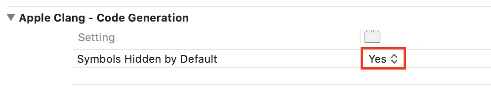

After Effects C++ SDK Guide
byhttps://docsforadobe.dev
| Hosted at | https://ae-plugins.docsforadobe.dev/ |
| Repository | https://github.com/docsforadobe/after-effects-plugin-guide/ |
| Copyright | All content is copyright Adobe Systems Incorporated. |
Introduction¶
Welcome to the Adobe® After Effects® Software Development Kit!
This is a living document and is constantly being updated and edited. The latest public version of the SDK is available at: https://www.adobe.io/after-effects/
If you need more information, your question may already be answered on the After Effects SDK forum: After Effects SDK Forum
Use the search box there, and post a new question if your question hasn’t already been answered.
About¶
This document has changed much over the years. Part encyclopedia, part how-to guide, with multiple sedimentary layers of accreted information from more than two decades of API development and refinement.
Yes, there does need to be one source of information about every last niggling detail of the After Effects APIs. However, since no human in their right mind would ever want to read such a document, we've tried to keep it involving and interesting.
As opportunity allows, we'll try to include more diagrams, illustrations, and purdy pickshurs explaining API intricacies.
As always, your input is valued and appreciated.
Organization¶
The What Can I Do With This SDK? provides an overview of the integration possibilities with After Effects. It explains what plug-ins are, and how they work with After Effects. It describes the sample projects, and how to modify them. It explains where to install plug-ins, and what resources they use.
The basics of effect plug-ins are discussed in Effect Basics. This overview provides information on the function parameters passed to and from an effect plug-in's entry point. It describes capability flags, effect parameters, and image buffers.
Effect Details dives into the details of developing a complete effect plug-in using the many provided callback functions. It also provides many testing ideas to ensure the plug-in is stabile.
SmartFX is the extension to the effect plug-in API to support 32-bit floating point images.
Effect UI & Events covers events sent to effect plug-ins, how to incorporate custom user interface elements, parameter supervision, and the reliance of custom data parameter types on Custom UI messaging.
Audio effects are covered in... Audio.
AEGPs details the After Effects General Plug-in (AEGP) API. Provided callback functions, hooking into internal messaging, manipulating the current contents of open projects and handling menu commands are all covered at length.
Artisans covers specialized plug-in 3D renderer AEGPs.
AEIOs, specialized AEGPs which handle file input and output.
Premiere Pro & Other Hosts discusses issues related to compatibility with Premiere Pro and other applications that support a subset of After Effects plug-ins.
Documentation Conventions¶
Functions, structure names and general C/C++ code are in Courier; MyStruct and MyFunction();
Text in blue is hyperlinked.
Command selectors are italicized; PF_Cmd_RENDER.
A Note About Coding Style¶
Because we use the public APIs for our own plug-ins, our coding guidelines are apparent throughout the SDK. Here's a description of the pseudo-neo-post-Hungarian notation we use. Of course, you're welcome to code however you like. If you feel strongly that we should change our internal coding standards, please post your requests at comp.sys.programmer.better.things.to.do.with.your.time, and we'll carefully consider them before not making any changes.
Coding Conventions¶
| Type | Suffix | Example |
|---|---|---|
| Handle | H |
fooH |
| pointer (to) | P |
fooP |
| Boolean | B |
visibleB |
| Float | F |
degreesF |
| Long | L |
offsetL |
| unsigned long | Lu |
countLu |
| short | S |
indexS |
| char | C |
digitC |
| unsigned char | Cu |
redCu |
| function pointer | \_func |
sample_func |
| time value | T |
durationT |
char* (NULL-terminated C string) |
Z |
nameZ |
| rectangle | R |
boundsR |
| fixed rectangle | FiR |
boundsFiR |
| float rectangle | FR |
boundsFR |
| ratio | Rt |
scale_factorRt |
void* |
PV |
refconPV |
| optional parameter (must be passed, can be NULL) | 0 |
extra_flags0 |
Version History¶
| Revision Date | Documentor | Notes |
|---|---|---|
| 5 May 2023 | Jason Bartell | Update Color Settings suite to AEGP_ColorSettingsSuite5 with new OCIO calls, and added URL property to the PiPL. See AEGP_ColorSettingsSuite5 and PiPL Resources respectively for more details. |
| 18 October 2022 | Field Kuang | Update layer suite to AEGP_LayerSuite9 with 3 new Track Matte methods. See AEGP_LayerSuite9 for more details |
| 26 October 2021 | Sean Jenkin | After Effects 2022 (22.0) release. Updates the maxiumum threads for PF_Iterate. |
| 31 March 2021 | Sean Jenkin | Updated Multi-Frame Rendering documentation for sequence_data changes and Compute Cache system. Added information for supporting Universal Mac binaries for Apple Silicon effect plugins. |
| 1 June 2020 | Field Kuang | Multi-Frame Rendering is now supported in AE Beta builds. See Multi-Frame Rendering in AE for more details. |
| 1 November 2018 | Bruce Bullis | 16.0 release |
| 10 November 2017 | Zac Lam | 15.0 release |
| 12 May 2017 | Zac Lam | CC 2017.1 (14.2) release |
| 2 November 2016 | Zac Lam | CC 2017 (14.0) release. |
| 21 July 2015 | Zac Lam | CC 2015 (13.5) release. |
| 12 June 2014 | Zac Lam | CC 2014 (13.0) release. Corrections for accuracy. Removed old version references. |
| 15 July 2013 | Zac Lam | CC (12.0) release. API version changes, misc small clarifications, more details in AEIOs. |
| 26 April 2012 | Zac Lam | CS6 (11.0) release. Big reorganization of the AEGPs and Artisans. Many additions throughout. |
| 2 May 2011 | Zac Lam | CS5.5 (10.5) release. |
| 28 April 2010 | Zac Lam | CS5 (10.0) release. 64-bit porting info. Drawbot. |
| 4 May 2009 | Zac Lam | CS4 (9.0) release. Complete reorganization of first three chapters. Fleshed out documentation on Premiere Pro. |
| 1 July 2007 | Bruce Bullis | CS3 (8.0) release. |
| 4 April 2006 | Bruce Bullis | Updated to reference new development system requirements and Xcode-specific issues. Some editing. |
| 1 December 2005 | Bruce Bullis | Updated for 7.0. Added SmartFX documentation. Noted current suite version numbers throughout. Numerous editorial changes. Documented many new AEGP suite functions. |
| 4 April 2004 | Bruce Bullis | Updated for 6.5. Expanded and corrected all documentation. Added documentation of all new AEGP functions. |
| 20 July 2003 | Bruce Bullis | Major overhauls for After Effects 6.0. Added documentation for all new (and some old) suites, and many supporting details for effects. |
| 4 March 2002 | Bruce Bullis | Updated Mac OS X details, expanded AEIO and AEGP documentation. |
| 1 December 2001 | Bruce Bullis | 5.5 release. Added information on new outflags, PiPL changes, and additions and changes to the AEGP API. Numerous clarifications and edits. |
| 2 February 2001 | Bruce Bullis | 5.0 release. Entire document edited and reformatted. Sections on 16 bit-per-channel color and parameter supervision, as well as the entire AEGP chapter, have all substantially expanded. |
| 9 September 1999 | Bruce Bullis | Revised for 4.1; added General plug-ins and AEGP information. Added information on new selectors, resize handle. |
| 1 January 1999 | Bruce Bullis | Version 4.0 SDK Release 1 - Added information on new global flags, custom data types, utilization of PICA suites, CustomUI messaging and parameter supervision, new callbacks. many editorial changes. |
| 1 May 1998 | Bruce Bullis | Version 3.1 SDK Release 6 - Editorial changes only |
| 17 April 1997 | Brian Andrews | Version 3.1 SDK Release 3 - First public release (really a pre-release) of the SDK for Windows development. |
| 13 Nov. 1996 | Brian Andrews | Version 3.1 SDK Release 2 - Minor updates. |
| 21 June 1996 | Brian Andrews | Version 3.1 - Final 3.x release. |
| 5 March 1996 | Brian Andrews | Version 3.0 - Preliminary release for the After Effects developer kitchen. |
| August 1994 | Dave Herbstman Dan Wilk | Version 2.0.1 - Added support for PowerPC. |
| January 1994 | Dan Wilk | Version 2.0 - Updates. |
| January 1993 | Russell Belfer | Version 1.0 - Initial SDK release. |
Introduction ↵
What Can I Do With This SDK?¶
This SDK describes the Application Programming Interface (API) that developers use to build plug-ins. These plug-ins can extend the capabilities of After Effects and other applications that support the After Effects API. Plug-ins may also be used to bridge the gap between After Effects and another application.
What Plug-Ins Can I Build With This SDK?¶
Effect plug-ins can be applied to video or audio in a composition, to process video and/or audio data. Some examples of built-in effects are Brightness and Contast, Hue/Saturation, Gaussian Blur, and Warp Stabilizer. Effect plug-ins can provide a set of parameter controls for the user to fine-tune the effect. These parameter values can vary over time, and effects may use other layers and parameters at different times to calculate the output. It's often thought that all plug-ins are effects. But effects are just one type of plug-in used by After Effects.
See a quickstart video on building an effect (on macOS): adobe.ly/2sjMDwM
After Effects General Plug-ins (AEGPs) can read and modify nearly every element of After Effects projects and preferences. They can add menu items, 'hook' (register themselves to receive) and trigger After Effects' internal commands, and add new panels that dock and resize within the After Effects UI. They can work with markers and keyframes, and manage the render queue. They can even run scripts. Some examples of built-in AEGPs are the AAF importer, and the SWF exporter. Automatic Duck Pro Import AE is another well-known AEGP.
After Effects Input/Output (AEIO) plug-ins provide support for new media file types. Unless you need a custom setup dialog to specify interpretation settings, the Premiere Pro Importers API provides similar functionality, and is preferable in many cases. AEIOs use the AEGP API along with certain APIs specific to AEIOs. While After Effects still supports Photoshop format plug-ins and filters, as well as Foreign Project Format (FPF) plug-ins, these APIs have been long deprecated in favor of the AEIO API.
BlitHook plug-ins output video to external hardware for broadcast quality monitoring and playback to tape. The EMP sample project provides a starting point. In After Effects CC 2014 and later, Mercury Transmit is the recommended API.
Artisans provide rendered output of 3D layers, taking over 3D rendering from After Effects (which still handles all rendering of 2D layers). Artisans use the AEGP API along with certain APIs specific to Artisans.
Didn't see the type of integration you need described above? After Effects is very flexible, and there are several other ways to integrate with After Effects. See: Other Integration Possibilities.
Where Do Plug-ins Appear In After Effects?¶
Effects plug-ins appear in both the Effect menu and the Effects & Presets panel, in the effect category specified in their PiPL. Once they're applied, the effect's parameter controls (sliders, pop-ups, etc.) appear in the Effect Controls panel (ECP).
After Effects General Plug-ins (AEGPs) can add items to any After Effects menu, and additional panels listed in the Window menu. These menu items are indistinguishable from After Effects' own menu items.
AEIOs and Photoshop Format plug-ins can appear in the File > Import menu, or in the Import File dialog in the Files of type drop-down, depending on the type of importer. AEIOs and Format plug-ins can also appear as available output formats in the render queue.
BlitHook plug-ins are automatically loaded and used by AE, but do not appear in any menu or dialog. The plug-in may optionally provide a menu item that opens it's own custom settings dialog. It would register and update the menu item using the AEGP API.
It can registered to be called by After Effects to update the menu with AEGP_RegisterUpdateMenuHook(), and it can dim/activate the menu item using AEGP_EnableCommand()/DisableCommand().
Artisans appear in the Rendering Plug-in drop-down in the Advanced tab of the Composition Settings dialog.
How Does After Effects Interact With Plug-ins?¶
Plug-ins, written in C or C++, are bundle packages on macOS and DLLs on Windows. They must contain a Plug-in Property List (PiPL Resources) resource on both platforms. The plug-ins must be located in one of a few specific folders in order to be loaded and used by After Effects.
For effects plug-ins, After Effects sends command selectors (and relevant information) to the plug-in Entry Point designated in the effects' PiPL Resources resource. Selectors are sent in response to actions the user takes—applying the effect, changing parameters, scrubbing through frames in the timeline, and rendering all prompt different sequences of selectors.
After Effects creates multiple instances of effects, with settings and input data unique to each sequence. All instances share the same global data, and can share data between all frames within their sequence. After Effects doesn't process all image data as soon as the user applies an effect; it invokes effects only when their output is required.
After Effects General Plug-ins (AEGPs) have their entry point function called during application launch, and register for whatever messaging they need at that time. Further calls to the AEGP are initiated by user actions, as part of the plug-in's response to menu commands or UI events. Depending on their features, plug-ins may need to respond to OS-specific entry points as well, for UI work and thread management.
For BlitHook plug-ins, frames are pushed as they're displayed in the Composition panel. Users can initiate a RAM preview on an area of the timeline so that it is rendered to RAM, and then it all gets played out at full speed.
SDK Contents¶
The SDK contains headers defining the After Effects APIs, sample projects demonstrating integration features, and this SDK Guide.
They are compiled with the SDK header files, which expose various After Effects functionality to be used by the plug-in.
Other Integration Possibilities¶
Although this SDK describes the majority of integration possibilities with After Effects, there are other possibilities not to be overlooked.
Scripting¶
Scripting is a relatively nimble and lightweight means to perform automated tasks with After Effects. ScriptUI is one way you can provide UI integration with custom dialogs and panels (see HTML5 Panels too). And scripting may be used in tandem with plug-in development, in the cases where a certain function is made available via scripting and not via the C APIs described in this document.
Scripting in After Effects is done using ExtendScript, based on JavaScript. After Effects includes the ExtendScript ToolKit, a convenient interface for creating and testing your own scripts. Scripts may be compiled into .jsxbin binary files, to protect intellectual property.
You can access the After Effects Scripting Guide, and find a link to the scripting forums, on the Adobe I/O website at: https://www.adobe.io/apis/creativecloud/aftereffects.html
After Effects can be driven by executing scripts from the commandline. In your script, you can open the project and run script actions on it. So for example, you can execute the following statement to run a script from the command line directly:
AfterFX -s "app.quit()"
Or you can execute this statement to run a .jsx script that includes a quit at the end:
AfterFX -r path_to_jsx_script
On Windows, AfterFX.com is the way to get feedback to the console, because AfterFX.com is a command line application.
HTML5 Panels¶
In CC 2014 and later, After Effects supports HTML5 panels. They are accessed in After Effects from Window > Extensions > (your panel name). Panels can be resized and docked just like any other panel in After Effects. Panels are built using HTML5, After Effects Scripting, and JavaScript. You may download the After Effects Panel SDK from the the Adobe I/O website at: https://www.adobe.io/apis/creativecloud/aftereffects.html
AERender¶
Closely coupled with scripting is the command line interface offered by aerender. aerender is primarily suited to allow automated renders, but can be used to execute any sequence of scripting commands from the command line. An overview is available in the After Effects help documents here: https://helpx.adobe.com/after-effects/using/automated-rendering-network-rendering.html
Premiere Pro Importers¶
Premiere Pro importers provide support for importing media into applications across most applications in the Adobe Creative Cloud, including Premiere Pro, Media Encoder, Prelude, and Audition. Because of this broader compatibility, unless you need very specific integration with After Effects only available via the AEIO API in this SDK, we recommend developing a Premiere Pro importer. The Premiere Pro SDK is available at: https://www.adobe.io/apis/creativecloud/premierepro.html
One advantage of MediaCore importer plug-ins over AEIOs is its priority system: The highest priority importer gets first crack at importing a file, and if the particular imported file isn't supported, the next-highest priority importer will then have the opportunity to try importing it, and so on.
Mercury Transmit¶
Mercury Transmit plug-ins are used for sending video to output hardware for broadcast-quality monitoring. Transmitters are supported across most applications in the Adobe Creative Cloud, including Premiere Pro, After Effects, Prelude, and Character Animator. The Mercury Transmit API is documented in the Premiere Pro SDK, available at: https://www.adobe.io/apis/creativecloud/premierepro.html
SDK Audience¶
You must be a proficient C/C++ programmer to write After Effects plug-ins. While we'll help with issues specific to the After Effects API, we can't help you learn your IDE or basic programming concepts.
This SDK guide assumes you understand After Effects from a user's perspective, and basic motion graphics terminology. If you don't, get the Adobe After Effects Classroom in a Book, or any of the other fine instructional books on the market. It will help you understand necessary
topics such as alpha channels, pixel aspect ratio, interlacing, color spaces, and more for After Effects.
Development Requirements¶
The system requirements for After Effects are here: https://helpx.adobe.com/after-effects/system-requirements.html
The SDK samples have been tested on Xcode 11.3.1 and Xcode 12.4 (for universal binary support with Apple Silicon) on macOS 10.15/11.0, and Microsoft Visual Studio 2019 on Windows 10.
What's New¶
If this is your first time developing an After Effects plug-in, you can skip the What's New section and go directly to How To Start Creating Plug-ins.
What's New In After Effects 2022¶
After Effects 2022 contains the first full public release with Multi-Frame Rendering support. The associated AE Effects SDK released in October 2021 includes one change for increasing the maximum number of PF_Iterate threads.
What's New in the After Effects SDK in March 2021¶
Multi-Frame Rendering Changes¶
- The final behavior for the
PF_OutFlag2_SUPPORTS_THREADED_RENDERINGflag is now in place. Setting this flag to indicate support for Multi-Frame Rendering will also enforce the data stored insequence_datato be const/read-only at Render time and access tosequence_datais now through a suite,PF_EffectSequenceDataSuite1. - A new flag,
PF_OutFlag2_MUTABLE_RENDER_SEQUENCE_DATA_SLOWERis now available to set alongsidePF_OutFlag2_SUPPORTS_THREADED_RENDERINGif your plugin cannot be updated to work with the new sequence_data behavior. After Effects won't be able to apply as much rendering concurrency and therefore performance improvements to effects that set this flag (hence the _SLOWER flag name). - A new suite, the Compute Cache (previously referred to as the 3-way checkout cache) is now available. This suite provides a thread-safe cache that plugins can use as a replacement or supplement to sequence_data to support multiple render threads computing and caching data needed to render frames.
Due to these changes, you must update to, and compile with, the March 2021 SDK to maintain Multi-Frame Rendering compatibility with AE Beta builds moving forward. Plugins compiled with the June 2020 SDK will cease to support Multi-Frame Rendering, even if PF_OutFlag2_SUPPORTS_THREADED_RENDERING is set, starting with AE 22.0x6 (released on June 29th 2021).
Please see Multi-Frame Rendering in AE for more information.
Apple Silicon Support¶
- The AE SDK now supports building effects for Apple Silicon natively. While After Effects itself is not yet running on Apple Silicon, Adobe as a company is moving forward with native support across many of our products. Applications such as Premiere Pro now have native versions available, and your effects may be loaded in Premiere Pro by features such as Motion Graphic Templates. When running the native version of Premiere Pro only natively compiled effects will work so it's important to update your effects with Apple Silicon support soon. Please see the Apple Silicon Support section for more information.
Exporting Symbols from Effects¶
- The SDK samples have been updated on not export symbols by default on MacOS. Please see Exporting Symbols in Effects for more information.
Downloading the March 2021 SDK¶
The SDK can be downloaded from the Adobe Developer Console at https://adobe.io/after-effects/
After Effects Beta Builds¶
To gain access to the AE host-side changes for this SDK, you will need to download a new After Effects beta build from the Creative Cloud Desktop App. Builds 18.2x11 and above are supported with the March 2021 SDK.
What's New In After Effects Beta builds after June 2020¶
AE (currently only in Beta builds) now supports Multi-Frame rendering. See Multi-Frame Rendering in AE for more details.
What's New In CC 2019 (16.0)?¶
We've made some changes to how GPU effects are handled. See "GPU Effects Changes" for details.
What's New In 15.0?¶
After Effects now supports the GPU effect rendering previously supported in Premiere Pro. Note that unknown effects with a match name that includes "ADBE " will be excluded from GPU rendering, so make sure any of your GPU effects have your own custom match name. Effects that support GPU rendering will receive the GPU badge in the Effect panel.
The GPU effect sample projects in the Premiere Pro SDK have been updated to register as GPU effects in AE, although the render output still needs work.
A new entry point has been defined, to allow effects to register basic information with the host at runtime, without relying on legacy PiPL resources. An effect can register multiple entry points in a single binary this way. Premiere Pro is the first host to support this entry point, and After Effects will support this in a future release.
The effect sample projects have been updated to use this approach, while maintaining the PiPL for backwards compatibility.
AEGP_StreamSuite is now at version 5, where AEGP_GetExpression() and AEGP_SetExpression() have been upgraded to support Unicode.
PF_AdvTimeSuite is now at version 4, with a new call PF_TimeCountFrames(), that returns the index of the frame in the current comp.
The new AEGP Math Suite provides helpful calls for matrix multiplication.
The application font is now Adobe Clean. Previously, the fonts used in After Effects' UI were Tahoma on Windows and Lucida Grande on macOS X. This is a proprietary font, and we can not make it available for use in your UI.
What's New In CC 2017.1 (14.2)?¶
- Layer Params can include Masks and Effects
Effects that use layers as an input, such as Set Matte and Displacement Map, can now target the input layer's masks and effects, instead of only the source of the layer. This means that for there is no need to pre-compose layers just so that they can be referenced by an effect.
Where an effect includes a layer parameter, a new menu to the right of the layer selector allows you to choose whether to target the input layer from its source, masks, or effects:
- Source: targets only the source of the layer. Masks and effects are ignored.
- Masks: targets the layer after its masks are applied. Effects are ignored.
- Effects & Masks: targets the layer after its masks and effects are applied.
This control is similar to the View menu at the bottom of the Layer viewer panel, which allows you to render the layer from different positions in the rendering order: from its source, from its masks, or from its individual effects.
As this is a user-facing option, the design is intended to be transparent to the effect. From the effect's perspective, the input simply just includes the upstream effects and masks without any change to the effect. For any effect that uses layer params, here are some testing recommendations:
- Effect continues to work as expected.
- Using new control in the layer param for Source/Mask/Effects works with effect.
- Opening old projects or saving back to a previous version project does not break effect.
- Confirm that effect cannot self-reference; meaning cannot use the effects on the layer as input for the same layer.
- Suite Enhancements
PF_AdvTimeSuite is now at version 3, providing a revised PF_GetTimeDisplayPref() call that uses a revised PF_TimeDisplayPrefVersion parameter, that supports higher frame rates.
The previous version 2 of the call can now return an error if there is a problem with the values exceeding the range supported by the structure.
Comp Suite is now at version 11, with a new call, AEGP_ReorderCompSelection(), to move a selection to a certain layer index.
It should be used along with AEGP_SetSelection().
What's New In CC 2017 (14.1)?¶
Unicode support for AEGP Item Suite and AEGP Render Queue Item Suite.
What's New In CC 2017 (14.0)?¶
The GLator sample is back! It has been updated to demonstrate proper OpenGL context management in an effect plug-in.
What's New In CC 2015.3 (13.8)?¶
PF_OutFlag_I_AM_OBSOLETE is now supported in Premiere Pro. Also, effect custom UI in Premiere Pro now supports high DPI displays, such as Retina Displays.
What's New In CC 2015 (13.6)?¶
New AEGP Item View Suite. This provides a way to get playback time for item view. Only the composition case is implemented in this release. The time passed back should be the playback time of the view when playing and the current (needle) time otherwise.
AEGP_RenderNewItemSoundData() has been reworked and provides functionality similar to 13.2.
What's New In CC 2015 (13.5.1)?¶
This release fixes some audio APIs that broke in 13.5 due to threading changes. In 13.5, when called on the UI thread, AEGP_RenderNewItemSoundData() would return A_Err_GENERIC. This restores the functionality when called on the UI thread.
To avoid a deadlock, in PF_Cmd_UPDATE_PARAMS_UI only, AEGP_RenderNewItemSoundData() will now return silence. This will no longer function as before in this context, but it will continue to work properly elsewhere.
What's New In CC 2015 (13.5)?¶
- Separate UI and Render Threads
This release of After Effects includes major architectural changes to separate the UI (main) thread from the render thread. The render thread sends selectors such as PF_Cmd_RENDER, PF_Cmd_SMART_PRERENDER, and PF_Cmd_SMART_RENDER to effect plug-ins. The UI thread sends selectors such as PF_Cmd_SEQUENCE_SETUP, PF_Cmd_USER_CHANGED_PARAM, PF_Cmd_DO_DIALOG, and PF_EVENT_DRAW. PF_Cmd_SEQUENCE_RESETUP is
sent on both render and UI threads.
These changes are to improve interactive performance and responsiveness. At the same time, the new design introduces some new requirements and may break assumptions that existing plug-ins relied on. Here are some of the major changes:
- The project can no longer be modified by the render thread (and in fact the render thread now has its own local copy of the project)
- Rendering cannot pass modified sequence data back to the UI thread for custom UI updates
- In general the UI thread should no longer do time-consuming operations such as synchronously rendering frames
Is your plug-in affected? Test for these problems:
- Render not updating after UI parameter change because it depends on sequence_data, which may not be currently copied to render
- Render not updating during click/drag in the Composition Window (similar reasons)
- Custom Effect UI not updating because it depends on sequence_data generated in render (which is no longer available to the UI because it is in a different project, the render project is immutable, and cache contains previously-rendered frames)
- Errors telling you an operation on the render thread (or UI thread) is not expected
Generally, calculations that will persist or update the UI will now have to be pulled from the UI thread rather than pushed from the render thread. These cases can require use of new
13.5 APIs or different solutions than in past releases.
- The Need For More Efficient Sequence Data Handling
PF_OutFlag2_SUPPORTS_GET_FLATTENED_SEQUENCE_DATA
PF_Cmd_GET_FLATTENED_SEQUENCE_DATA
Up to version 13.2, serializing/flattening sequence_data always involved deallocating and reallocating any data structures. Starting in 13.5, as effect changes are made, serializing/ flattening happens even more often. Why? AE needs to serialize/flatten project changes to send from the UI thread to the render thread, to keep them both synchronized.
To make this process more efficient, starting in 13.5, AE can send PF_Cmd_GET_FLATTENED_SEQUENCE_DATA to request sequence data without requiring the existing data to be deallocated and reallocated. The main difference between this selector and PF_Cmd_SEQUENCE_FLATTEN is that a copy of the correct flattened state is returned without disposing the original structure(s) the effect is currently using. For a code example, refer to the PathMaster sample project.
This will eventually become required for plug-ins that are rebuilt to be thread-safe (see PF_OutFlag2_AE13_5_THREADSAFE below). The venerable PF_Cmd_SEQUENCE_FLATTEN will eventually be unsupported in future versions.
- PF_OutFlag_FORCE_RERENDER Changes
Where possible, we recommend triggering rerenders using one of the following: GuidMixInPtr() (described in the next section), arb data, or PF_ChangeFlag_CHANGED_VALUE. All of these allow cached frames to be reused after an Undo.
Note: As of 14.0, setting PF_ChangeFlag_CHANGED_VALUE for layer or path params is not triggering a rerender. Instead, you may change set the value using AEGP_StreamSuite-
AEGP_SetStreamValue().
FORCE_RERENDER is still needed for situations where sequence_data needs to be copied from the UI thread to the render project/effect clone to keep them matched.
FORCE_RERENDER is the trigger for this whether the render request uses the cache or not. Once we have the full set of APIs in place needed to manage render state, we will be able to deprecate FORCE_RERENDER.
FORCE_RERENDER doesn't work in every situation it did before, because it needs to synchronize the UI copy of sequence_data with the render thread copy.
FORCE_RERENDER works when set during PF_Cmd_USER_CHANGED_PARAM. It also works in CLICK and DRAG events, but only if PF_Cmd_GET_FLATTENED_SEQUENCE_DATA is implemented. This is required to prevent flattening and loss of UI state in the middle of mouse operations. Without GET_FLATTENED, the new FORCE_RERENDER behavior will NOT be turned on.
- GUIDs for Cached Frames
PF_OutFlag2_I_MIX_GUID_DEPENDENCIES
GuidMixInPtr()
Used by SmartFX only. Use this if custom UI or PF_Cmd_DO_DIALOG changes sequence data, or if the render result depends on anything else not factored in, and rerendering may be needed. During PF_Cmd_SMART_PRERENDER, the effect can call GuidMixInPtr() to mix any additional state that affects the render into our internal GUID for the cached frame. Using this GUID, AE can tell whether the frame already exists or if it needs to be rendered. See an example in SmartyPants sample project.
This is an improvement over the older mechanisms PF_OutFlag_FORCE_RERENDER and PF_Cmd_DO_DIALOG, which would remove the frame from the cache because the host didn't know what else the plug-in was factoring into the rendering. This can also be used rather than PF_OutFlag2_OUTPUT_IS_WATERMARKED.
- Request Frames Asynchronously Without Blocking the UI
PF_OutFlag2_CUSTOM_UI_ASYNC_MANAGER
PF_GetContextAsyncManager() AEGP_CheckoutOrRender_ItemFrame_AsyncManager() AEGP_CheckoutOrRender_LayerFrame_AsyncManager()
For cases where such renders formerly were triggered by side-effect or cancelled implicity
(such as custom UI histogram drawing), and lifetime is less clear from inside the plug-in, use the new "Async Manager" which can handle multiple simultaneous async requests for effect Custom UI and will automatically support interactions with other AE UI behavior.
Note: Async retrieval of frames is preferred for handling passive drawing situations, but not when a user action will update the project state. If you are (1) responding to a specific user click, AND 2) you need to update the project as a result, the synchronous AEGP_RenderAndCheckoutLayerFrame() is recommended.
The new HistoGrid sample in the SDK shows how to do completely asynchronous custom UI DRAW event handling on the UI thread when 1 or more frame renders are needed. e.g. for calculating histograms that are shown in the effect pane. Please note there is still a known bug where drag-changing an upstream param may not refresh the histogram draw until the mouse hovers over it.
- Get Rendered Output of an Effect from its UI
Effects such as keyers or those that draw histograms of post-processed video can retrieve the needed AEGP_LayerRenderOptionsH using the new function AEGP_NewFromDownstreamOfEffect() in AEGP_LayerRenderOptionsSuite. This function may only be called from the UI thread.
- AEGP Usage on Render Thread
We've tightened validation of when AEGP calls could be used dangerously (such as from the wrong thread or making a change to the project state in render). You may see new errors if code is hitting such cases. For example, making these calls on the render thread will result in an error:
suites.UtilitySuite5()->AEGP_StartUndoGroup() suites.StreamSuite2()->AEGP_GetStreamName() suites.StreamSuite2()->AEGP_SetExpressionState() suites.StreamSuite2()->AEGP_SetExpression() suites.StreamSuite2()->AEGP_GetNewLayerStream() suites.StreamSuite2()->AEGP_DisposeStream() suites.EffectSuite3()->AEGP_DisposeEffect() suites.UtilitySuite5()->AEGP_EndUndoGroup()
The solution is to move these calls to the UI thread. Selectors for passive UI updates (such as PF_EVENT_DRAW) are not a place to make changes to project state.
Another example of more strict requirements is AEGP_RegisterWithAEGP(). The documentation has always noted that this function must be called on PF_Cmd_GLOBAL_SETUP. However in previous versions, plug-ins were able to call this function at other times without running into trouble. Not anymore in 13.5! Calling this function at other times can cause crashes!
- PF_Cmd_SEQUENCE_RESETUP Called on UI or Render Thread?
There is now a PF_InFlag_PROJECT_IS_RENDER_ONLY flag that is only valid in PF_Cmd_SEQUENCE_RESETUP that will tell you if the effect instance is for render-only purposes. If so, the project should be treated as completely read-only, and you will not be receiving UI related selectors on that effect instance. This can be used to optimize away any UI-only initialization that render does not need. If this flag is false, you should setup UI as normal. This should not be used to avoid reporting errors in render. Errors in render should be reported as usual via existing SDK mechanisms.
- Changes to Avoid Deadlocks
During development, it was noticed that deadlocks could occur in specific call usage. Seatbelts have been introduced to avoid this. The cases occur in PF_Cmd_UPDATE_PARAMS_UI when using particular calls because of deprecated synchronous behavior in these calls when used in the UI:
In PF_Cmd_UPDATE_PARAMS_UI only, PF_PARAM_CHECKOUT() for layer parameters will behave as before except that it will return a black frame of the same size, etc., rather than actual rendered pixels. Code that used this for enable/disable detection of parameters should still work as before. Code that used this for getting analysis frames, etc. outside of PF_Cmd_UPDATE_PARAMS_UI will work as before.
In PF_Cmd_UPDATE_PARAMS_UI only, PF_GetCurrentState() will now return a random GUID. This will no longer function as before in this context, but it will continue to work properly elsewhere.
The above uses should be rare, but if this affects you please contact us about workarounds.
- Deprecated
AEGP_RenderAndCheckoutFrame() (on the UI Thread). This call should generally not be used on the UI thread since synchronous renders block interactivity.
Use in the render thread is fine. The one case where this may still be useful on the UI thread is a case like a UI button that requires a frame to calculate a parameter which then updates the AE project.
For example, an "Auto Color" button that takes a frame and then adjusts effect params as a result.
A beta of a progress dialog for this blocking operation if it is slow has been implemented, but using this call on the UI thread should be limited to this special cases. The dialog design is not final.
- Flag for Thread-Safe Effects
PF_OutFlag2_AE13_5_THREADSAFE
Plug-ins updated for threading should use this flag to tell AE that the plug-in is expected to be UI thread <> Render thread safe.
This flag tells AE that different threads on different AE project copies can be in the effect at the same time but not accessing the same instance. While multiple render threads are not yet in use, this will be useful in future releases.
- Support for Effect Version greater than 7 (new max is MAJOR version 127)
Effects greater than version 7 will now report properly in 13.5 if built with the current SDK headers. It is possible to use these recompiled effects in AE versions older than 13.5, but internally the version number will wrap modulo 8 (e.g. AE will internally see effect version 8 as version 0).
This can affect the version shown in error dialog display by older AE and affect usage reporting.
Since many older plug-ins were made unloadable in AE with the shift to 64-bit, it should be unlikely this wrapping would cause ambiguity with actual plug-ins in current use (unless these plug-ins have been rapidly increasing version number over the last few years).
However, building with an older SDK and using an 8 or higher version will result in the plug-in reporting an incorrect version to AE, which will then cause mismatch with the PiPL version check for the effect which will have the higher bits set. This is not supported.
If built with an older SDK, you will need to keep the effect version at 7 or below. Increase in version max has been accomplished by adding 4 new higher significant bits to the version that only AE 13.5 and above "sees". These new high version bits are not contiguous with the original, preexisting MAJOR version bits - just ignore the intermediate bits. The new version layout looks like this in hexadecimal or binary.
0x 3C38 0000
^^ original MAJOR version bits as a hex mask 0-7
^^ new HIGH bits extending the original MAJOR version bits 8-127
0b 0011 1100 0011 1000 0000 0000 0000 0000
^^ ^ original MAJOR version bits as a hex mask 0-7
^^ ^^ ignore / do not use
^^ ^^ new HIGH bits extend the original MAJOR version bits 8-127.
These bits are ignored in AE versions older than 13.5.
- New Installer Hints for macOS
Developers can find paths to the default location of plug-ins, scripts, and presets on macOS X in a new plist file (same as the paths in the Windows registry): /Library/Preferences/ com.Adobe.After Effects.paths.plist
You can use the values in this plist to direct where your installers or scripts write files, in the same way that you would use the paths keys in the registry on Windows: HKEY_LOCAL_MACHINESOFTWAREAdobeAfter Effects13.5
- Work In Progress
AEGP_RenderAndCheckoutLayerFrame_Async() AEGP_CancelAsyncRequest()
This APIs are in progress, and should not be used yet.
What's New In CC 2014.1 (13.1)?¶
PF_CreateNewAppProgressDialog()
It won't open the dialog unless it detects a slow render. (2 seconds timeout).
What's New In CC 2014 (13.0)?¶
Starting in CC 2014, After Effects will now honor a change to a custom UI height made using PF_UpdateParamUI.
AEGP Effect Suite is now at version 4, adding new functions to work with effect masks. AEGP_RenderSuite is now at version 4, adding a new function AEGP_RenderAndCheckoutLayerFrame, which allows frame checkout of the current
layer with effects applied at non-render time. This is useful for an operation that requires the frame, for example, when a button is clicked and it is acceptable to wait for a moment while it is rendering.
Note
Since it is not asynchronous, it will not solve the general problem where custom UI needs to draw based on the frame.
The layer render options are specified using the new AEGP_LayerRenderOptionsSuite.
Mercury Transmit plug-ins and HTML5 Panels are now supported.
What's New In CC (12.0)?¶
Effect names can now be up to 47 characters long, up from 31 characters previously.
We added the PF_AngleParamSuite, providing a way to get floating point values for angle parameters. PF App Suite version 5 adds PF_AppGetLanguage to query the current language so that a plug-in can use the correct language string, as well as several new PF_App_ColorType enum values for new elements whose colors can be queried.
AEGP Persistent Data Suite is now at version 4, adding a new parameter to AEGP_GetApplicationBlob to choose between retrieving several different application blobs. There are also new functions to get/set time and ARGB values.
AEGP Composition Suite is now at version 10, adding new functions to check/modify whether layer names or source names are shown, and whether the blend modes column is shown or not. Also added are new functions to get and set the Motion Blur Adaptive Sample Limit.
AEGP Layer Suite is now at version 8, adding new functions to set/get the layer sampling quality. AEGP_CanvasSuite is also now at version 8. The new function AEGP_MapCompToLayerTime handles time remapping with collapsed or nested comps, unlike AEGP_ConvertCompToLayerTime.
AEGP_UtilitySuite is now at version 6, adding a new Unicode-aware function: AEGP_ReportInfoUnicode. Another new function, AEGP_GetPluginPaths, provides some useful paths related to the plug-in and the After Effects executable itself.
The behavior for AEGP_NewPlaceholderFootageWithPath has been updated, so that the file_type should now be properly set, otherwise a warning will appear.
AEGP_InsertMenuCommand can now insert menu items in the File>New submenu.
AEGP_IOInSuite is now at version 5, adding new functions to get/set/clear the native start time, and to get/set the drop-frame setting of footage.
What's New In CS6.0.1 (11.0.1)?¶
New in 11.0.1, the AE effect API version has been incremented to 13.3.
This allows effects to distinguish between 11.0 and 11.0.1.
There is a bug in 11.0 with the Global Performance Cache, when a SmartFX effect uses both PF_OutFlag2_AUTOMATIC_WIDE_TIME_INPUT & PF_OutFlag_NON_PARAM_VARY.
Calling checkout_layer during PF_Cmd_SMART_PRE_RENDER returns empty rects in PF_CheckoutResult.
The workaround is to simply make the call again. This workaround is no longer needed in 11.0.1.
What's New In CS6 (11.0)?¶
We've made several refinements for better parameter UI handling. PF_PUI_INVISIBLE parameter UI flag is now supported in After Effects, which is useful if your plug-in needs hidden parameters that affect rendering. Now when a plug-in disables a parameter using PF_UpdateParamUI, we now save that state in the UI flags so that the plug-in can check the flag in the future to see if it is disabled. A new flag, PF_ParamFlag_SKIP_REVEAL_WHEN_UNHIDDEN, allows a parameter to be unhidden without twirling open any parents and without scrolling the parameter into view in the Effect Controls panel and the Timeline panel.
Effects that render a watermark over the output when the plug-in is in trial mode can now tell After Effects whether watermark rendering mode is on or off, using the new PF_OutFlag2_OUTPUT_IS_WATERMARKED.
The new Global Performance Cache means you must tell After Effects to discard old cached frames when changing your effect's rendering.
We've removed PF_HasParamChanged and PF_HaveInputsChangedOverTimeSpan, providing PF_AreStatesIdentical instead.
Effects that provide custom UI can now receive PF_Event_MOUSE_EXITED, to gain notification that the mouse exited the layer or comp panel. PF_ParamUtilsSuite is now at version 3.
PF_GET_PLATFORM_DATA now has new selectors for getting the wide character path of the executable and resource file: PF_PlatData_EXE_FILE_PATH_W and PF_PlatData_RES_FILE_PATH_W. The previous non-wide selectors are now deprecated.
3D is a major theme of AE CS6. A new AEGP_LayerFlag_ENVIRONMENT_LAYER has been added. Many new layer streams were added.
Additionally, AEGP_LayerStream_SPECULAR_COEFF was renamed to AEGP_LayerStream_SPECULAR_INTENSITY, AEGP_LayerStream_SHININESS_COEFF was renamed to AEGP_LayerStream_SPECULAR_SHININESS, and AEGP_LayerStream_METAL_COEFF was renamed to just AEGP_LayerStream_METAL.
A new suite, AEGP_RenderQueueMonitorSuite, provides all the info a render queue manager needs to figure out what is happening at any point in a render.
AEGP Mask Suite is now at version 6, and provides functions to get and set the mask feather falloff type. AEGP Mask Outline Suite is now at version 3, and provides access to get and set mask outline feather information.
Effects that depend on masks now have a new flag available, PF_OutFlag2_DEPENDS_ON_UNREFERENCED_MASKS.
AEGP Composition Suite is now at version 9. AEGP_CreateTextLayerInComp and
AEGP_CreateBoxTextLayerInComp now have a new parameter, select_new_layerB.
AEGP Render Suite is now at version 3, adding a new function to get the GUID for a render receipt.
Finally, we have added two new read-only Dynamic Stream flags: AEGP_DynStreamFlag_SHOWN_WHEN_EMPTY and AEGP_DynStreamFlag_SKIP_REVEAL_WHEN_UNHIDDEN.
For effects running in Premiere Pro CS6, we have added the ability to get 32-bit float and YUV frames from PF_CHECKOUT_PARAM.
...and what was new before CS6?¶
For history this far back, see obsolete copies of the SDK (which we don't provide; if someone wants you do develop for antique software, they'd best provide the SDK).
How To Start Creating Plug-ins¶
Play!¶
Before you write a line of code, Spend some significant time playing with After Effects, and with the Sample Projects. Build the plug-ins into the right folder. Set lots of breakpoints, read the amusing and informative comments.
See a quickstart video on building an effect (on macOS): quickstart video
Plan!¶
Be clear on what your plug-in will attempt to do.
Hack!¶
After experimenting with the samples, find one that does something like what you want to do. The temptation to start from scratch may be strong; fight it! For effects, use the Skeleton template project. Avoid the headache of reconstructing projects (including the troublesome custom build steps for Windows PiPL resource generation) by grafting your code into an existing project.
Steal!¶
To make the Skeleton sample your own, copy the entire \Skeleton directory, renaming it to (for example) \WhizBang. Using your text editor of choice, search \WhizBang*.* (yes, that includes .NET and Xcode project files) for occurrences of Skeleton and SKELETON, and replace them with WhizBang and WHIZBANG.
You now have a compiling and running plug-in that responds to common commands, handles 8 and 16-bpc color, uses our AEGP_SuiteHandler utility code, and responds to 3D light and camera information. There, was that so hard?
AEGP developers will do well to start with Projector (for After Effects project creation support), Easy Cheese for a keyframe assistant, IO for media file format support, and Persisto for a simple menu command and working with preferences.
Test!¶
If only for testing convenience, you should have a project saved with your effect applied, and all its parameters keyframed to strange values. Between these projects which stress your plug-in, and the tools provided by your development environment, you're well on your way to shipping some tested code.
Blame!¶
If you run into behavior that seems wrong, see if you can reproduce the behavior using one of the unmodified sample projects. This can save you a lot of time, if you can determine whether the bug behavior was introduced by your modifications, or was already there to begin with.
Developers Matter¶
Third party developers drive API and SDK improvement and expansion. Your products enable After Effects to do things we'd never considered. Your efforts make After Effects better; keep it up!
We work hard on the SDK, and welcome your comments and feedback. Almost every change we make to the API is suggested by developers like you. Give us feedback
Sample Projects¶
There is at least one sample of every type of plug-in supported by the current API, as well as projects to illustrate particular concepts.
In the sample projects, we've kept the code as simple as possible. A showy implementation might get us good grades in a programming class, but won't help you understand how to use API features.
After the break, we explain how to build the sample projects, so keep reading below!
Sample Project Descriptions¶
| Project | Description |
|---|---|
| AEGPs | AEGPs hook directly into After Effects' menus and other areas in the UI. See below for specifics on where the AEGP appears in the UI. |
| Artie | Artie the Artisan takes over rendering of all 3D layers in a given composition. This is the same API used by our internal 3D renderers; it is very complex, and exposes a great deal of tacit information about the After Effects rendering pipeline. Unless you have a compelling reason to replace the way After Effects handles 3D rendering, you need never work with this sample. Artisans appear in Composition > Composition Settings, in the Advanced tab, in the Rendering Plug-in drop-down. |
| Easy Cheese | A keyframer (which shows up on the Animation > Keyframe Assistant submenu), Easy Cheese shows how to manipulate various characteristics of keyframes (in a way that, uncannily, resembles our shipping plug-in, Easy Ease...) |
| FBIO | Exercises the After Effects Input/Output (AEIO) API. Similar to the IO sample, but supports the frame-based .ffk file format. Note that we now recommend developing a Premiere Pro Importers instead. |
| Grabba | Gets frames (formatted as the plug-in requests) from any composition in the project. |
| IO | Exercises the After Effects Input/Output (AEIO) API. Supports the fictitious .fak file format, and handles all requests from After Effects for retrieving data from or outputting to such files. Note that we now recommend developing a Premiere Pro Importers instead. |
| Mangler | Mangler is a keyframer demonstrating the use of an ADM palette, just like our own. |
| Panelator | Creates a panel that can be docked along with the rest of the standard panels. Note: It is far more work to create a panel this way than using the HTML5 Panel SDK. We recommend starting with that SDK instead. |
| Persisto | Shows how to read and write information from the After Effects preferences file. |
| ProjDumper | Creates a text file representing every element in an After Effects project. |
| Projector | Imports the (fictitious) .sdk file format, and creates a project using AEGP API calls. Whenever you're wondering how to get or set some characteristic of a project element, look here first. Note: There are some hardcoded paths in Projector.h. If you don't set these to refer to actual media on disk, you WILL get errors while running this plug-in. Don't blame us; change them! |
| QueueBert | Pronounced "Cue-BARE!", QueueBert manipulates all aspects of render queue items and the output modules associated with them. |
| Streamie | Manipulates streams, both dynamic and fixed. |
| Sweetie | Sweetie uses the PICA (or "Suite Pea") API to provide a function Suite, for use by other plug-ins. If you're writing multiple plug-ins that rely on the same image processing library, you could provide the library functionality using such a suite. |
| Text Twiddler | Manipulates text layers and their contents. |
| Effects | All effects appear in the Effects & Presets panel, and in the Effect menu. |
| Checkout | Checks out (of After Effects' frame cache) a frame of input from another layer, at a specified time. This is an important concept for all effects with layer parameters. Premiere Pro compatible. |
| Convolutrix | Exercises our image convolution callbacks. Premiere Pro compatible. |
| Gamma Table | Shows how to manage sequence data, and uses our iteration callbacks. For nostalgia's sake, we're leaving this one sample in C; it's also compatible with many third-party plug-in hosts, due to its reliance on version 3.x API features. |
| GLator | New for CC 2017. Demonstrates proper OpenGL context management in an effect plug-in. |
| Paramarama | Exercises wayward param types not used in other sample. Premiere Pro compatible. |
| PathMaster | Shows how to access paths from within an effect. |
| Portable | Shows how to detect and respond to several different plug-in hosts. Premiere Pro compatible. |
| Resizer | Resizer resizes (surprise!) the output buffer. This is useful for effects like glows and drop shadows, which would be truncated at the layer's edges if they didn't expand the output buffer. Premiere Pro compatible. |
| SDK Backwards | Reverses a layer's audio, and mixes it with a keyframe-able sine wave. |
| SDK Noise | Premiere Pro compatible, demonstrates 32-bit and YUV rendering in Premiere Pro. |
| Shifter | Shifts an image in the output buffer, and exercises our transform_world and subpixel sampling functions. |
| SmartyPants | Demonstrates the SmartFX API, required for support of floating point pixels. |
| Transformer | Exercises our image transformation callbacks. |
| Effect Template | |
| Skeleton | Skeleton is the starting point for developing effects. Premiere Pro compatible. |
| Effects with Custom UI | |
| CCU | Implements a custom user interface in the composition and layer windows, supporting pixel aspect ratio and downsample ratios. Premiere Pro compatible. |
| ColorGrid | Shows how to use arbitrary data type parameters. Also has a nice custom UI. Premiere Pro compatible. |
| Custom ECW UI | Implements a very boring custom user interface in the effect controls window, and shows how to respond to numerous UI events. |
| Histogrid | New for CC 2015 (13.5). An example of how custom UI can access asynchronously-rendered upstream frames for lightweight processing in CC 2015 and later. This effect calculates a sampled 10x10 color grid from the upstream frame, and displays a preview of that color grid. In render, a higher-quality grid is calculated and used to modify the output image, creating a blend of a color grid with the original image. |
| Supervisor | Shows how to control parameters (both values and UI) based on the value of other parameters. Premiere Pro compatible. |
| BlitHook | |
| EMP | External Monitor Preview. Use this as a starting point for adding support to output video from the composition panel to video hardware. |
Building The Sample Projects¶
We've combined the sample projects into a single master project, stored in the Examples folder of the SDK. For macOS, it is Buildall.xcodeproj; for Windows, it is BuildAll.sln.
In your IDE, you'll need to change the output folder of your project to build into After Effects' plug-in folder.
For development, we recommend using the following path for macOS: /Library/Application Support/Adobe/Common/Plug-ins/[version]/MediaCore/
Version is locked at 7.0 for all CC versions, or CSx for earlier versions.
for example: /Library/Application Support/Adobe/Common/Plug-ins/7.0/MediaCore/
or: /Library/Application Support/Adobe/Common/Plug-ins/CS6/MediaCore/
and the following path for Windows: [Program Files]\Adobe\Common\Plug-ins\[version]\MediaCore\
for example: C:\Program Files\Adobe\Common\Plug-ins\7.0\MediaCore\
or: C:\Program Files\Adobe\Common\Plug-ins\CS6\MediaCore\
Note that this Windows path is only recommended for development purposes. Windows installers should follow the guidelines here: Where Installers Should Put Plug-ins.
In Xcode, you can set this path once for all projects in the Xcode Preferences > Locations > Derived Data > Advanced. Under Build Location choose Custom, and fill in the path.
In Visual Studio, for convenience, we have specified the output path for all sample projects using the environment variable AE_PLUGIN_BUILD_DIR. You'll need to set this as a user environment variable for your system. On Windows 7, right-click My Computer > Properties > and in the left sidebar choose Advanced System Settings. In the new dialog, hit the Environment Variables button. In the User variables area, create a New variable named AE_PLUGIN_BUILD_DIR, and with the path described above. Log out of Windows and log back in so that the variable will be set.
Alternatively, you can set output path for each project individually in Visual Studio by right-clicking a project in the Solution Explorer, choosing Properties, and then in Configuration Properties > Linker > General, set the Output File.
When compiling the plug-ins, if you see a link error such as:
"Cannot open file "[MediaCore plug-ins path]plugin.prm", make sure to launch Visual Studio in administrator mode. In your Visual Studio installation, right-click devenv.exe, Properties > Compatibility > Privilege Level, click "Run this program as an administrator".
Debugging Plug-ins¶
The best way to learn the interaction(s) between After Effects and plug-ins is running the samples in your debugger. Spending some quality time in your compiler's debugger, and a sample project that closely resembles your plug-in, can really pay off.
Once you've got the plug-in building directly into the plug-ins folder as explained above, here's how to specify After Effects as the application to run during debug sessions:
Windows:¶
- In the Visual Studio solution, in the Solution Explorer panel, choose the project you want to debug
- Right-click it and choose Set as StartUp Project
- Right-click it again and choose Properties
- In Configuration Properties > Debugging > Command, provide the path to the executable file of the host application the plug-ins will be running in (this may be After Effects or Premiere Pro)
- From there you can either hit the Play button, or you can launch the application and later at any point choose Debug > Attach to Process...
macOS:¶
- In Xcode, in the Project Navigator, choose the xcodeproj you want to debug
- Choose Product > Scheme > Edit Scheme...
- Under Run, in the Info tab, for Executable, choose the host application the plug-ins will be running in (this may be After Effects or Premiere Pro)
- From there you can either hit the Play button to build and run the current scheme, or you can launch the application and later at any point choose Debug > Attach to Process.
Deleting Preferences¶
During the course of developing a plug-in, your plug-in may pass settings information to After Effects, which is then stored in its preferences file.
You may delete the preferences and restart After Effects with a clean slate by holding down Ctrl-Alt-Shift / Cmd-Opt-Shift during launch.
On Windows, the preferences are stored here: [user folder]\AppData\Roaming\Adobe\After Effects\[version]\Adobe After Effects [version]-x64 Prefs.txt
On macOS, they are stored here: ~/Library/Preferences/Adobe/After Effects/[version]/Adobe After Effects [version]-x64 Prefs
Compatibility Across Multiple Versions?¶
Generally, you should compile your plug-ins with the latest After Effects SDK headers. This makes the latest suites and API functionality available to your plug-ins. When a new version of After Effects is released, you generally will not need to provide a new version unless you wish to take advantage of new functionality exposed through the new SDK. However, you should always test your plug-in in new versions of After Effects before claiming compatibility with new versions.
You should test your plug-in thoroughly in each version of After Effects supported by your plug-in. If you need to add a conditional block of code to be run only in specific versions of After Effects, you can always check the API version in PF_InData.version for effects, or in the major and minor_versionL passed into your AEGP in the Entry Point.
For even more precise version checking, a plug-in can run a script using AEGP_ExecuteScript (AEGP_UtilitySuite6), querying one of the following attributes:
app.version - e.g. 11.0.1x12
app.buildNumber - e.g. 12.
API Versions¶
| Release | Effect API Version | AEGP API Version |
|---|---|---|
| 22.0 | 13.27 | |
| 18.2 | 13.25 | |
| 18.0 | 13.24 | |
| 17.7 | 13.23 | |
| 17.6 | 13.22 | |
| 17.5 | 13.21 | |
| 17.3 | 13.20 | |
| 17.1 | 13.19 | |
| 17.0 | 13.18 | |
| 16.1 | 13.17 | |
| 16.0 | 13.16 | |
| 15.0 | 13.15 | |
| CC 2017.1 (14.2) | 13.14 | |
| CC 2017 (14.0) | 13.13 | 114.0 |
| CC 2015.3 (13.8) | 13.11 | 113.8 |
| CC 2015 (13.7) | 13.10 | 113.7 |
| CC 2015 (13.6) | 13.10 | |
| CC 2015 (13.5, 13.5.1) | 13.9 | 113.5 |
| CC 2014 (13.0-13.2) | 13.7 | 113 |
| CC (12.2) | 13.6 | 112.2 |
| CC (12.1) | 13.5 | 112.1 |
| CC (12.0) | 13.4 | 112.0 |
| CS6.0.1 (11.0.1) | 13.3 | 111.0 |
| CS6 (11.0) | 13.2 | 111.0 |
| CS5.5 (10.5) | 13.1 | 17.0 |
| CS5 (10.0) | 13.0 | 17.0 |
| CS4 (9.0) | 12.14 | 16.24 |
| CS3 (8.0) | 12.13 | 16.24 |
| 7.0 | 12.12 | |
| 6.5, 6.0 | 12.10 (Check for the presence of updated AEGP suites, should you need to differentiate between 6.0 and 6.5.) | |
| 5.0 | 12.5 | |
| 4.1 | 12.2 | |
| 3.1 | 11.6 |
Third-party Plug-in Hosts?¶
Some developers are wary of using each After Effects release's new API features, to maintain compatibility with hosts with partial implementations. You can distinguish between host applications by checking PF_InData>appl_id. After Effects uses the appl_id 'FXTC'.
Premiere Pro uses 'PrMr'. As of this writing, no third party hosts support SmartFX, or our AEGP functions.
Also, see the Premiere Pro & Other Hosts section.
PiPL Resources¶
Originating in Adobe Photoshop over two decades ago, Plug-In Property Lists, or PiPLs, are resources which provide basic information about a plug-in's behavior, without executing the plug-in. PiPLs have been largely supplanted within After Effects by PF_Cmd_GLOBAL_SETUP (see Global Selectors) and dynamic outflags. However, for archaeological reasons, the behaviors indicated during PF_Cmd_GLOBAL_SETUP must agree with those in the PiPL.
In the interest of cross-platform compatibility, use a single .r file for both macOS and Windows versions of your plug-in, like the samples do. PiPL properties must always be in macOS-specific byte order. On Windows, PiPLs are compiled by processing a .r file through pipltool.exe, which converts the .r file into a binary .rc file. The Windows sample projects all contain custom build steps which generate a .rc file, using a cross-platform .r file and our cnvtpipl.exe command line utility. Base your development on an existing sample plug-in and the build step will be correctly implemented.
| PiPL Property | Purpose |
|---|---|
| Kind | Plug-in type. AEEffect for an Effect. |
| Name | Display name which can be up to 47 characters long. |
| Category | Effect category for menus and the Effects and Presets panel |
| Entry Point (one for each platform) | Your plug-in's entry point is exported through the PiPL on Windows and macOS. If the plug-in supports multiple platforms, then multiple entry points must be defined in the PiPL. There is no need for a Windows .def file or manual exports, unless you're also designating some other OS-specific entry point. The macros defined in entry.h (in the \SDKExamplesHeaders directory) take care of exporting each sample's entry point function. All the sample project entry point functions are EffectMain() for effects, or EntryPointFunc()for AEGPs. |
| AE_PiPL_Version | Unused |
| AE_Effect_Spec_Version | SDK version the effect was built with |
| AE_Effect_Version | The version of the effect |
| AE_Effect_Info_Flags | Unused |
| AE_Effect_Global_OutFlags | Must match the out_flags set in GlobalSetup |
| AE_Effect_Global_OutFlags_2 | Must match the out_flags2 set in GlobalSetup |
| AE_Effect_Match_Name | A unique, constant identifier, unlike a plug-in's display name, which may be changed dynamically. |
| AE_Reserved_Info | Unused. |
| AE_Effect_Support_URL | New in AE 23.5! URL for the effect. Shown in the Effects Manager. A user might click the link for more information about the effect or to find a newer version. |
PiPL Resources And Microsoft Visual Studio¶
To use resources from Microsoft Visual Studio .NET with pipltool-generated resources,
include the output of the custom build steps into the Microsoft-generated .rc file.¶
// in file WhizBang.rc, generated by .NET.
#include "WhizBang_PiPL_temp.rc" // pipltool.exe's output
If modifying a sample plug-in, change the name of the file generated by pipltool.exe to something like WhizBang_PiPL_temp.rc, or it will overwrite the Microsoft resources each time you build; not good.
Multiple PiPLs¶
It is possible, but not recommended, to include multiple plug-ins (both AEGPs and effects) in the same file, using multiple PiPLs. If there are PiPLs for both AEGPs and effects in the same file, the AEGPs must come first!
No other hosts (not even Premiere Pro) support multiple PiPLs pointing to multiple effects within the same .dll or code fragment. Also, if you need to update one plug-in, do you really want to ship a new build of all your plug-ins? We recommend one PiPL, and one plug-in, per code fragment.
Why Do I Need To Know All This?¶
You don't; After Effects does. If you follow our advice and base your projects on the SDK samples, you can simply change the .r file containing your PiPL definition(s), and your plug-in's resources will be automagically updated the next time you build. Feel the love. Or, if you ever tinker with the custom build steps, feel the pain.
Exceptions¶
Handle all exceptions generated by your plug-in's code, within your plug-in. Pass those which didn't originate in your plug-in's code to After Effects.
After Effects' APIs are designed for plug-ins written in C, and don't expect exceptions. After Effects will crash immediately if one is thrown from within a plug-in.
The effect samples use a firewall around the switch statement in the main() function, and the AEGPs wrap their function hooks in try/catch blocks.
Where Installers Should Put Plug-ins¶
Installing your plug-ins in the common location will allow them to be loaded by Premiere Pro, if installed.
On Windows, the common plug-ins folder can be found (as an explicit path) in the following registry entry: HKLM\SOFTWARE\Adobe\After Effects\[version]\CommonPluginInstallPath
On Mac, the common plug-ins folder is at: /Library/Application Support/Adobe/Common/Plug-ins/[version]/MediaCore
Version is locked at 7.0 for all CC versions, or CSx for earlier versions. For example: /Library/Application Support/Adobe/Common/Plug-ins/7.0/MediaCore/
Do not use macOS aliases or Windows shortcuts, as these are not traversed by Premiere Pro.
Do I Have To Install The Plug-ins To The Common Folder?¶
You may have good reason to install your plug-in for only After Effects, for example, if your plug-in depends on suites and functionality not available in Premiere Pro. We strongly recommend that you use the common folder whenever possible, but for certain cases, the AE-specific plug-in folder is still available.
On Windows, the app-specific plug-ins folder can be found (as an explicit path) in the following registry entry: \\HKEY_LOCAL_MACHINE\SOFTWARE\Adobe\After Effects\(version)\PluginInstallPath
On macOS, the app-specific plug-ins folder is at: /Applications/Adobe After Effects [version]/Plug-ins/
When launched, After Effects recursively descends 10 levels deep into subdirectories of its path. macOS aliases are traversed, but Windows shortcuts are not. Directories terminated by parentheses or preceded by the symbols ¬ (macOS) or ~ (Windows) are not scanned.
Try as you might to build a fence between AE and Premiere Pro, users will still find ways to get across using our lovely integration goodness - Your effects will still be available to Premiere Pro users who create a dynamically linked AE composition with your effect, and put it in a Premiere Pro sequence.
Localization¶
Starting in CC, PF App Suite (Useful Utility Functions) adds PF_AppGetLanguage() to query the current language so that a plug-in can use the correct language string.
When passing strings to AE, some parts of the API accept Unicode. In other areas, for example when specifying effect parameter names during PF_Cmd_PARAM_SETUP, you'll need to pass the names in a char string. For these non-Unicode strings, AE interprets strings as being multi-byte encoded using the application's current locale. To build these strings, on Windows you can use the WideCharToMultiByte() function, specifying CP_OEMCP as the first argument. On macOS, use the encoding returned by GetApplicationTextEncoding().
Testing with different languages in AE doesn't require an OS reinstallation, but it does require a reinstallation of AE:
Windows¶
- Change the system locale to the targeted language (control panel > region and language > administrative tab > change system locale)
- Restart machine
- Install AE in the according language.
MacOS¶
- Set targeted language to the primary language in the preferred language list
- Install AE in the according language.
Apple Silicon Support¶
Adobe now supports Apple Silicon effect plugins in some products running natively on Apple Silicon. For instance, After Effects effect plugins are also available in Adobe Premiere Pro and Adobe Media Encoder.
Not all Adobe products have native Apple Silicon versions yet, but in those that do, only effect plugins with Apple Silicon implementations will be available. We recommend adding the Apple Silicon target soon in anticipation of rapid adoption of these new M1 machines.
Note
In order to build a Mac Universal binary, you will need Xcode 12.2 or greater. Adobe is currently using Xcode 12.4.
To learn more about Universal binaries, please visit https://developer.apple.com/documentation/apple-silicon/building-a-universal-macos-binary
How to add Universal Binary Support for your Plugins¶
- Open your plugins Xcode project in 12.2 or above and Xcode will automatically add an Apple Silicon target for you.
Mac Universal Build
- Tell After Effects what the main entry point is for Apple Silicon builds.
- Find the .r resource file for your plugin.
- Add
CodeMacARM64 {"EffectMain"}next to your existing Intel Mac entry point definition.#if defined(AE_OS_MAC) CodeMacARM64 {"EffectMain"}, CodeMacIntel64 {"EffectMain"}, #endif- If for some reason you need different entry points on x64 and ARM just provide a different entry point name and string.
- Compile the Universal binary by building for the Any Mac (Apple Silicon, Intel) Target, or by using Product -> Archive.
Assuming there are no compile time issues with the Apple Silicon build, you can now use the single Universal binary for both Intel and Apple Silicon applications.
Exception Behavior with Apple Silicon Across "C" Functions¶
Extra care should be taken when using exceptions on Apple Silicon. In many environments throwing exceptions that propagate through traditional "C" functions worked fine. It was bad practice, with undefined behavior, but generally "worked".
On Apple Silicon, rather than undefined behavior the ABI has changed so terminate() is called when this occurs.
Since the main entry point of a plugin is always an extern "C" calling convention, this code should be wrapped in a try/catch block to prevent program termination. For example:
PF_Err EffectMain ( PF_Cmd cmd,
PF_InData *in_data,
PF_OutData *out_data,
PF_ParamDef *params[],
PF_LayerDef *output )
{
try
{
/* Your code here */
}
catch
{
/* return most appropriate PF_Err */
}
}
Exporting Symbols in Effects¶
The After Effects team recently became aware of an issue with conflicting symbols that violate the C++ language One Definition Rule (ODR).
In early 2021, the version of the Boost library used by After Effects was upgraded to 1.74. Over the last few months we've identified a number of plugins that are also using Boost but are exporting symbols in such a way that After Effects or the plugin may end up calling the incorrect version of Boost leading to hangs and crashes for users. We also identified a number of the AE SDK samples were setup to export all symbols by default which may have been contributing to the problem, assuming they were used as the starting point for other plugins. These have been fixed as part of the March 2021 SDK.
The only symbol that After Effects requires to be exported is the entry point of the plugin.
An example can be found in the SDK samples in entry.h:
#ifdef AE_OS_WIN
#define DllExport __declspec( dllexport )
#elif defined AE_OS_MAC
#define DllExport __attribute__ ((visibility ("default")))
#endif
and then this is applied to the entry point function, for example:
extern "C" DllExport
PF_Err PluginDataEntryFunction(
PF_PluginDataPtr inPtr,
PF_PluginDataCB inPluginDataCallBackPtr,
SPBasicSuite* inSPBasicSuitePtr,
const char* inHostName,
const char* inHostVersion)
{
PF_Err result = PF_Err_INVALID_CALLBACK;
result = PF_REGISTER_EFFECT(
inPtr,
inPluginDataCallBackPtr,
"ColorGrid", // Name
"ADBE ColorGrid", // Match Name
"Sample Plug-ins", // Category
AE_RESERVED_INFO); // Reserved Info
return result;
}
Disabling Xcode Symbol Export¶
To disable symbol export in Xcode:
- Find the Apple Clang - Code Generation section in the Build settings for your project.
- Set the Symbols Hidden By Default to YES
 Apple Clang Symbols
For any specific symbols that must be made public, use the __attribute__((visibility("default"))) in code.
More information can be found in Apple's Xcode documentation https://help.apple.com/xcode/mac/11.4/#/itcaec37c2a6 (excerpt below):
Symbols Hidden by Default (GCC_SYMBOLS_PRIVATE_EXTERN)
When enabled, all symbols are declared private extern unless explicitly marked to be exported using attribute((visibility("default"))) in code. If not enabled, all symbols are exported unless explicitly marked as private extern.
Disabling Visual Studio Export¶
By default, builds from Visual Studio automatically disable symbol exports. To export symbols, you must either supply a module definition file or set the __declspec(dllexport) keyword in the functions definition.
More information can be found in Microsoft's Visual Studio documentation https://docs.microsoft.com/en-us/cpp/build/exporting-from-a-dll?view=msvc-160 (excerpt below):
You can export functions from a DLL using two methods:
- Create a module definition (.def) file and use the .def file when building the DLL. Use this approach if you want to export functions from your DLL by ordinal rather than by name.
- Use the keyword __declspec(dllexport) in the function's definition.
When exporting functions with either method, make sure to use the __stdcall calling convention.
Next Steps¶
You now have an understanding of what plug-ins are, what they can do, and how After Effects communicates with them.
Next, we will cover the basics of effects plug-ins.
Ended: Introduction
Effect Basics ↵
Effect Basics¶
This chapter will provide all the information you need to know to understand how a basic effect plug-in works.
These details are fundamental to every effect plug-in.
By the time you finish this chapter, you'll be ready for the fun stuff; modifying pixels!
Entry Point¶
All communication between After Effects and an effect plug-in is initiated by After Effects, and it all happens by the host (After Effects) calling a single entry point function.
For all effect plug-ins, the entry point function must have the following signature:
PF_Err main (
PF_Cmd cmd,
PF_InData *in_data,
PF_OutData *out_data,
PF_ParamDef *params[],
PF_LayerDef *output,
void *extra)
The name of the entry point function above is "main", but it can be whatever is specified in PiPL Resources.
Before each call to the entry point function, After Effects updates PF_InData and the plug- in's parameter array PF_ParamDef[] (except as noted).
After the plug-in returns from its call, After Effects checks PF_OutData for changes and, when appropriate, uses the PF_LayerDef the effect has rendered.
Entry Point Function Parameters¶
| Argument | Purpose |
|---|---|
| cmd | After Effects sets the Command Selectors to tell the plug-in what to do. |
| in_data | Information about the application's state and the data the plug-in is being told to act upon. Pointers to numerous interface and image manipulation functions are also provided. |
| out_data | Pass back information to After Effects by setting fields within out_data. |
| params | An array of the plug-in's parameters at the time provided in in_data> current_time.params[0] is the input image (a PF_EffectWorld / PF_LayerDef) to which the effect should be applied.These values are only valid during certain selectors (this is noted in the selector descriptions). Parameters are discussed at length here: PF_ParamDef. |
| output | The output image, to be rendered by the effect plug-in and passed back to After Effects. Only valid during certain selectors. |
| extra | The extra parameter varies with the command sent or (in the case of PF_Cmd_EVENT) the event type. Used primarily for event management and Parameter Supervision. |
Command Selectors¶
Commands are, simply, what After Effects wants your effect to do.
Responses to some selectors are required; most are optional, though recall that we did add them for a reason...
With each command selector sent, effects receive information from After Effects in PF_InData, input and parameter values in PF_ParamDef[] (an array of parameter descriptions including the input layer), and access to callbacks and function suites.
They send information back to After Effects in PF_OutData, and (when appropriate) render output to a PF_LayerDef, also called a PF_EffectWorld.
During events, they receive event-specific information in PF_EventExtra.
Calling Sequence¶
Only the first few command selectors are predictable; the rest of the calling sequence is dictated by user action.
When first applied, a plug-in receives PF_Cmd_GLOBAL_SETUP, then PF_Cmd_PARAM_SETUP. Each time the user adds the effect to a layer, PF_Cmd_SEQUENCE_SETUP is sent.
For each frame rendered by a basic non-SmartFX effect, After Effects sends PF_Cmd_FRAME_SETUP, then PF_Cmd_RENDER, then PF_Cmd_FRAME_SETDOWN.
All effect plug-ins must respond to PF_Cmd_RENDER
For SmartFX, PF_Cmd_SMART_PRE_RENDER may be sent any number of times, before a single PF_Cmd_SMART_RENDER is sent.
PF_Cmd_SEQUENCE_SETDOWN is sent on exit, when the user removes an effect or closes the project. PF_Cmd_SEQUENCE_RESETUP is sent when a project is loaded or when the layer to which it's applied changes. PF_Cmd_SEQUENCE_FLATTEN is sent when the After Effects project is written out to disk.
PF_Cmd_ABOUT is sent when the user chooses About... from the Effect Controls Window (ECW).
PF_Cmd_GLOBAL_SETDOWN is sent when After Effects closes, or when the last instance of the effect is removed. Do not rely on this message to determine when your plug-in is being removed from memory; use OS-specific entry points.
Command Selectors Table¶
Global Selectors¶
All plug-ins must respond to these selectors.
| Selector | Response |
|---|---|
PF_Cmd_ABOUT |
Display a dialog describing the plug-in. Populate out_data>return_msg and After Effects will display it in a simple modal dialog. Include your plug- in's version information in the dialog. On macOS, the current resource file will be set to your effects module during this selector. |
PF_Cmd_GLOBAL_SETUP |
Set any required flags and PF_OutData fields (including out_data>my_version) to describe your plug-in's behavior. |
PF_Cmd_GLOBAL_SETDOWN |
Free all global data (only required if you allocated some). |
PF_Cmd_PARAM_SETUP |
Describe your parameters and register them using PF_ADD_PARAM. Also, register custom user interface elements. Set PF_OutData>num_params to match your parameter count. |
Sequence Selectors¶
These control sequence data handling.
| Selector | Response |
|---|---|
PF_Cmd_SEQUENCE_SETUP |
Allocate and initialize any sequence-specific data. Sent when the effect is first applied. PF_InData is initialized at this time. |
PF_Cmd_SEQUENCE_RESETUP |
Re-create (usually unflatten) sequence data. Sent after sequence data is read from disk, during pre-composition, or when the effect is copied; After Effects flattens sequence data before duplication. During duplication, PF_Cmd_SEQUENCE_RESETUP is sent for both the old and new sequences.Don't expect a PF_Cmd_SEQUENCE_FLATTEN between PF_Cmd_SEQUENCE_RESETUPs. |
PF_Cmd_SEQUENCE_FLATTEN |
Sent when saving and when duplicating the sequence. Flatten sequence data containing pointers or handles so it can be written to disk. This will saved with the project file. Free the unflat data and set the out_data>sequence_data to point to the new flattened data. Flat data must be correctly byte-ordered for file storage.As of 6.0, if an effect's sequence data has recently been flattened, the effect may be deleted without receiving an additional PF_Cmd_SEQUENCE_SETDOWN.In this case, After Effects will dispose of your flat sequence data. |
PF_Cmd_SEQUENCE_SETDOWN |
Free all sequence data. |
Frame Selectors¶
Passed for each frame (or set of audio samples) to be rendered by your plug-in.
| Selector | Response |
|---|---|
PF_Cmd_FRAME_SETUP |
Allocate any frame-specific data. This is sent immediately before each frame is rendered, to allow for frame-specific setup data. If your effect changes the size of its output buffer, specify the new output height, width, and relative origin. All parameters except the input layer are valid. If you set width and height to 0, After Effects ignores your response to the following PF_Cmd_RENDER. NOTE: If PF_Outflag_I_EXPAND_BUFFER is set, you will receive this selector (and PF_Cmd_FRAME_SETDOWN) twice, once without PF_Cmd_RENDER between them. This is so we know whether or not the given layer will be visible. Frame data dates from the days when machines might have 8MB of RAM. Given the calling sequence (above), it's much more efficient to just allocate during PF_Cmd_RENDER. |
PF_Cmd_RENDER |
Render the effect into the output, based on the input frame and any parameters. This render call can only support 8-bit or 16-bit per channel rendering. 32-bit per channel rendering must be handled in PF_Cmd_SMART_RENDER. All fields in PF_InData are valid. If your response to this selector is interrupted (your calls to PF_ABORT or PF_PROGRESS returns an error code), your results will not be used. You cannot delete frame_data during this selector; you must wait until PF_Cmd_FRAME_SETDOWN. |
PF_Cmd_FRAME_SETDOWN |
Free any frame data allocated during PF_Cmd_FRAME_SETUP. |
PF_Cmd_AUDIO_SETUP |
Sent before every audio render. Request a time span of input audio. Allocate and initialize any sequence-specific data. If your effect requires input from a time span other than the output time span, update the startsampL and endsampL field in PF_OutData. |
PF_Cmd_AUDIO_RENDER |
Populate PF_OutData.dest_snd with effect-ed audio. All fields in PF_InData are valid. If your response to this selector is interrupted (your calls to PF_ABORT or PF_PROGRESS returns an error code), your results will not be used. |
PF_Cmd_AUDIO_SETDOWN |
Free memory allocated during PF_Cmd_AUDIO_SETUP. |
PF_Cmd_SMART_PRE_RENDER |
SmartFX only. Identify the area(s) of input the effect will need to produce its output, based on whatever criteria the effect implements. maybe sent up to twice when MediaCore is hosting. The first will come during GetFrameDependencies to collect the inputs. The source checkouts can return full frame dimensions here. Once the sources are rendered, if they are different in size than the first call then this selector will be emitted a second time with the actual source sizes in order to get a correct output size. Note that MediaCore wants all of the output, so PF_PreRenderOutput::max_result_rect will be used.New in 16.0 Set PF_RenderOutputFlag_GPU_RENDER_POSSIBLE in PF_PreRenderOutput to render on the GPU.If this flag is not set the requested render is not possible with the requested GPU, because of parameters or render settings. The host may re-call PreRender with another what_gpu option (or PF_GPU_Framework_None). typedef struct { |
PF_Cmd_SMART_RENDER |
SmartFX only. Perform rendering and provide output for the area(s) the effect was asked to render. |
Messaging¶
The communication channel between After Effects and your plug-in.
| Selector | Response |
|---|---|
PF_Cmd_EVENT |
This selector makes use of the extra parameter; the type of event to be handled is indicated by the e_type field, a member of the structure pointed to by extra. See Effect UI & Events. |
PF_Cmd_USER_CHANGED_PARAM |
The user changed a parameter value. You will receive this command only if you've set the PF_ParamFlag_SUPERVISE flag.You modify the parameter to control values, or make one parameter's value affect others. A parameter can be modified by different actions. in_data.current_time is set to the time of the frame that the user is looking at in the UI(internally, the current time of the comp converted into layer time) while they are changing the param that triggered the PF_Cmd_USER_CHANGED_PARAM.It's also the time of a keyframe that is added automatically (if there isn't one already, and the stopwatch is enabled). This is usually the same as the value passed for the PF_Cmd_RENDER that follows immediately after (unless caps lock is down), but not necessarily - there could be other comp windows open that cause a render at a different time in response to the changed param. |
PF_Cmd_UPDATE_PARAMS_UI |
The effect controls palette (ECP) needs to be updated. This might occur after opening the ECP or moving to a new time within the composition. You can modify parameter characteristics (enabling or disabling them, for example) by calling PF_UpdateParamUI().Only cosmetic changes may be made in response to this command. Don't change parameter values while responding to PF_Cmd_UPDATE_PARAMS_UI;do so during PF_Cmd_USER_CHANGED_PARAM instead.This command will only be sent regularly if PF_OutFlag_SEND_UPDATE_PARAMS_UI was set in the PiPL, and during PF_Cmd_GLOBAL_SETUP.NOTE: Never check out parameters during this selector. Recursive badness is almost guaranteed to result. |
PF_Cmd_DO_DIALOG |
Display an options dialog. this is sent when the Options button is clicked (or a menu command has been selected). This selector will only be sent if the effect has previously indicated that it has a dialog (by setting the global PF_OutFlag_I_DO_DIALOG flag in response to PF_Cmd_GLOBAL_SETUP).In version 3.x, the params passed with PF_Cmd_DO_DIALOG were invalid.This is no longer the case; plug-ins can access non-layer parameters, check out parameters at other times, and perform UI updates during PF_Cmd_DO_DIALOG.They still may not change the parameter's values. |
PF_Cmd_ARBITRARY_CALLBACK |
Manage your arbitrary data type. You'll only receive this if you've registered a custom data type parameter. The extra parameter indicates which handler function is being called. Custom data types are discussed further in Implementing Arbitrary Data. |
PF_Cmd_GET_EXTERNAL_DEPENDENCIES |
Only sent if PF_OutFlag_I_HAVE_EXTERNAL_DEPENDENCIES was set during PF_Cmd_GLOBAL_SETUP.Populate a string handle (in the PF_ExtDependenciesExtra pointed to by extra) with a description of your plug-in's dependencies, making sure to allocate space for the terminating NULL character. Return just a NULL pointer for the string handle if there are no dependencies to report.If the check type is PF_DepCheckType_ALL_DEPENDENCIES, report everything that might be required for your plug-in to render.Report only missing items (or a null string if nothing's missing) if the check type is PF_DepCheckType_MISSING_DEPENDENCIES. |
PF_Cmd_COMPLETELY_GENERAL |
Respond to an AEGP. The extra parameter points to whatever parameter the AEGP sent. AEGPs can only communicate with effects which respond to this selector. |
PF_Cmd_QUERY_DYNAMIC_FLAGS |
Sent only to plug-ins which have specified PF_OutFlag2_SUPPORTS_QUERY_DYNAMIC_FLAGS in PF_OutFlags2, in their PiPL and during PF_Cmd_GLOBAL_SETUP.With all of the dynamic flags, if you will ever change them during this command, you must have set the flag on during PF_Cmd_GLOBAL_SETUP.This selector will be sent at arbitrary times. In response, the effect should access its (non-layer) parameters using PF_CHECKOUT_PARAM, anddecide whether any of the flags that support PF_Cmd_QUERY_DYNAMIC_FLAGS should be set, such as:
|
PF_Cmd_GPU_DEVICE_SETUP |
This selector can be called at any time by the host. It will be called not more than once for each GPU device. Multiple GPU devices may be in the setup state at one time. It will be called after GlobalSetup and before SequenceSetup. The intent is for the effect to do GPU initialization if necessary and to give the effect an opportunity to opt out of a GPU device based solely on the properties of that device, and not any render context (frame size, etc). If the effect rejects the GPU device it will get called for CPU render. PF_InData::what_gpu != PF_GPU_Framework_None is expected.Effect is expected to set one or both of the PF_OutFlag2_SUPPORTS_GPU_RENDER_Fxx flags in PF_OutData::out_flags2 if the device and framework in what_gpu is supported.Note that only PF_OutFlag2_SUPPORTS_GPU_RENDER_F32 will be in AE 16.0.Effects that do not set flags here will NOT be considered to support GPU rendering for any of these devices. PF_GPUDeviceSetupOutput::gpu_data is a plug-in owned pointer that must be released with a the PF_Cmd_GPU_DEVICE_SETDOWN selector.This pointer is also available at render time. |
PF_Cmd_GPU_DEVICE_SETDOWN |
Release any resources associated with gpu_data. In AE this will be called just before GPU device release.typedef struct { |
PF_Cmd_GPU_SMART_RENDER_GPU |
GPU equivalent to the existing PF_Cmd_SMART_RENDER selector.At render time, either the PF_Cmd_SMART_RENDER or the PF_Cmd_SMART_RENDER_GPU selector will be called,depending on whether the effect is expected to produce a CPU or GPU frame as output. PF_Cmd_SMART_RENDER_GPU will only be called when what_gpu != PF_GPU_Framework_None, and has effects on any input / output PF_LayerDef's.All frame check-ins and check-outs will operate on GPU frames when this selector is in progress. Note PF_Cmd_SMART_RENDER shares the Extra structs.typedef struct {The what_gpu and device_index fields are in the extra input for GPU-related selectors indicates to the plug-in the GPU framework to be used for rendering.Input and output buffers will be prepared on this framework and device. The device, context, command queue, and other associated GPU state can be queried with PrSDKGPUDeviceSuite::GetDeviceInfo.what_gpu will be the same between PF_Cmd_SMART_PRE_RENDER and PF_Cmd_SMART_RENDER_GPU selector calls. |
What's The Difference?¶
There is a subtle difference between PF_Cmd_USER_CHANGED_PARAM and PF_Cmd_UPDATE_PARAMS_UI.
Effects need to distinguish between the user actually changing a parameter value (PF_Cmd_USER_CHANGED_PARAM), and just scrubbing around the timeline (PF_Cmd_UPDATE_PARAMS_UI), which is also sent when the plug-in is first loaded).
Only the first few command selectors are predictable; the rest of the calling sequence is dictated by user action.
When first applied, a plug-in receives PF_Cmd_GLOBAL_SETUP, then PF_Cmd_PARAM_SETUP. Each time the user adds the effect to a layer, PF_Cmd_SEQUENCE_SETUP is sent.
For each frame rendered by a basic non-SmartFX effect, After Effects sends PF_Cmd_FRAME_SETUP, then PF_Cmd_RENDER, then PF_Cmd_FRAME_SETDOWN. All effect plug-ins must respond to PF_Cmd_RENDER .
For SmartFX, PF_Cmd_SMART_PRE_RENDER may be sent any number of times, before a single PF_Cmd_SMART_RENDER is sent.
PF_Cmd_SEQUENCE_SETDOWN is sent on exit, when the user removes an effect or closes the project. PF_Cmd_SEQUENCE_RESETUP is sent when a project is loaded or when the layer to which it's applied changes. PF_Cmd_SEQUENCE_FLATTEN is sent when the After Effects project is written out to disk.
PF_Cmd_ABOUT is sent when the user chooses About... from the Effect Controls Window (ECW).
PF_Cmd_GLOBAL_SETDOWN is sent when After Effects closes, or when the last instance of the effect is removed. Do not rely on this message to determine when your plug-in is being removed from memory; use OS-specific entry points.
PF_InData¶
After Effects communicates system, project, layer and audio information using PF_InData. This structure is updated before each command selector is sent to a plug-in.
Fields valid only during specific PF_Cmds are noted.
Also, don't worry; although PF_InData is dauntingly large, you need not memorize each member's purpose; you'll use some of the fields some of the time.
PF_InData Members¶
| Name | Description |
|---|---|
inter |
Callbacks used for user interaction, adding parameters, checking whether the user has interrupted the effect, displaying a progress bar, and obtaining source frames and parameter values at times other than the current time being rendered. This very useful function suite is described in Interaction Callback Functions. |
utils |
Graphical and mathematical callbacks. This pointer is defined at all times. |
effect_ref |
Opaque data that must be passed to most of the various callback routines. After Effects uses this to identify your plug-in. |
quality |
The current quality setting, either PF_Quality_HI or PF_Quality_LO.Effects should perform faster in LO, and more accurately in HI. The graphics utility callbacks perform differently between LO and HI quality; so should your effect! This field is defined during all frame and sequence selectors. |
version |
Effects specification version, Indicate the version you need to run successfully during PF_Cmd_GLOBAL_SETUP. |
serial_num |
The serial number of the invoking application. |
appl_id |
The identifier of the invoking application. If your plug-in is running in After Effects, appl_id contains the application creator code 'FXTC'.If it is running in Premiere Pro & Other Hosts it will be 'PrMr'. Use this to test whether your plug-in, licensed for use with one application, is being used with another. |
num_params |
Input parameter count. |
what_cpu |
Under macOS this contains the Gestalt value for CPU type (see Inside Macintosh, volume 6). Undefined on Windows. |
what_fpu |
Under macOS this contains the Gestalt value for FPU type. Undefined on Windows. |
current_time |
The time of the current frame being rendered, valid during PF_Cmd_RENDER. This is the current time in the layer, not in any composition. If a layer starts at other than time 0 or is time-stretched, layer time and composition time are distinct. The current frame number is current_time divided by time_step.The current time in seconds is current_time divided by time_scale.To handle time stretching, composition frame rate changes, and time remapping, After Effects may ask effects to render at non-integral times (between two frames). Be prepared for this; don't assume that you'll only be asked for frames on frame boundaries. NOTE: As of CS3 (8.0), effects may be asked to render at negative current times. Deal! |
time_step |
The duration of the current source frame being rendered. In several situations with nested compositions, this source frame duration may be different than the time span between frames in the layer ( local_time_step).This value can be converted to seconds by dividing by time_scale. When calculating other source frame times, such as for PF_CHECKOUT_PARAM, use this value rather than local_time_step.Can be negative if the layer is time-reversed. Can vary from one frame to the next if time remapping is applied on a nested composition. Can differ from local_time_step when source material is stretched or remapped in a nested composition. For example, this could occur when an inner composition is nested within an outer composition with a different frame rate, or time remapping is applied to the outer composition. This value will be 0 during PF_Cmd_SEQUENCE_SETUP if it is not constant for all frames. It will be set correctly during PF_Cmd_FRAME_SETUP and PF_Cmd_FRAME_SETDOWN selectors.WARNING: This can be zero, so check it before you divide. |
total_time |
Duration of the layer. If the layer is time-stretched longer than 100%, the value will be adjusted accordingly; but if the layer is time-stretched shorter, the value will not be affected. If time remapping is enabled, this value will be the duration of the composition. This value can be converted to seconds by dividing by time_scale. |
local_time_step |
Time difference between frames in the layer. Affected by any time stretch applied to a layer. Can be negative if the layer is time-reversed. Unlike time_step, this value is constant from one frame to the next.This value can be converted to seconds by dividing by time_scale.For a step value that is constant over the entire frame range of the layer, use local_time_step, which is based on the composition's framerate and layer stretch. |
time_scale |
The units per second that current_time, time_step, local_time_step and total_time are in.If time_scale is 30, then the units of current_time, time_step, local_time_step and total_time are in 30ths of a second.The time_step might then be 3, indicating that the sequence is actually being rendered at 10 frames per second. total_time might be 105, indicating that the sequence is 3.5 seconds long. |
field |
Valid only if PF_OutFlag_PIX_INDEPENDENT was set during PF_Cmd_GLOBAL_SETUP. Check this field to see if you can process just the upper or lower field. |
shutter_angle |
Motion blur shutter angle. Values range from 0 to 1, which represents 360 degrees. Will be zero unless motion blur is enabled and checked for the target layer. shutter_angle == 180 means the time interval between current_time and current_time + 1/2 time_step.Valid only if PF_OutFlag_I_USE_SHUTTER_ANGLE was set during PF_Cmd_GLOBAL_SETUP. See the section on Motion Blur for details on how to implement motion blur in your effect. |
width |
Dimensions of the source layer, which are not necessarily the same as the width and height fields in the input image parameter. Buffer resizing effects can cause this difference. Not affected by downsampling. |
height |
|
extent_hint |
The intersection of the visible portions of the input and output layers; encloses the composition rectangle transformed into layer coordinates. Iterating over only this rectangle of pixels can speed your effect dramatically. See extent_hint Usage later in this chapter regarding proper usage. |
output_origin_x |
The origin of the output buffer in the input buffer. Non-zero only when the effect changes the origin. |
output_origin_y |
|
downsample_x |
Point control parameters and layer parameter dimensions are automatically adjusted to compensate for a user telling After Effects to render only every nth pixel. Effects need the downsampling factors to interpret scalar parameters representing pixel distances in the image (like sliders). For example, a blur of 4 pixels should be interpreted as a blur of 2 pixels if the downsample factor is 1/2 in each direction (downsample factors are represented as ratios.) Valid only during: |
downsample_y |
|
pixel_aspect_ratio |
Pixel aspect ratio (width over height). |
in_flags |
Unused. |
global_data |
Data stored by your plug-in during other selectors. Locked and unlocked by After Effects before and after calling the plug-in. |
sequence_data |
|
frame_data |
|
start_sampL |
Starting sample number, relative to the start of the audio layer. |
dur_sampL |
Duration of audio, expressed as the number of samples. Audio-specific. |
total_sampL |
Samples in the audio layer; equivalent to total_time expressed in samples. |
src_snd |
PF_SoundWorld describing the input sound. Audio-specific. |
pica_basicP |
Pointer to the PICA Basic suite, used to acquire other suites. |
pre_effect_source_origin_x |
Origin of the source image in the input buffer. Valid only when sent with a frame selector. Non-zero only if one or more effects that preceded this effect on the same layer resized the output buffer and moved the origin. Check for both the resize and the new origin to determine output area. This is useful for effects which have implicit spatial operations (other than point controls), like flipping a file around an image's center. NOTE: Checked-out point parameters are adjusted for the pre-effect origin at the current time, not the time being checked out. |
pre_effect_source_origin_y |
|
shutter_phase |
Offset from frame time to shutter open time as a percentage of a frame duration. |
extent_hint Usage¶
Note
Hint rectangles are much more effective...and complicated...for SmartFX.
Use extent_hint to process only those pixels for which output is required; this is one of the simplest optimizations you can make.
Tell After Effects you use in_data>extent_hint by setting PF_OutFlag_USE_OUTPUT_EXTENT in PF_OutData during PF_Cmd_GLOBAL_SETUP (and in your PiPL).
Disable caching from the preferences menu before testing extent_hint code, so After Effects renders your effect whenever anything in your composition changes.
Otherwise, the caching mechanism would obscure your plug-in's (possibly incorrect) output.
Move the layer within the composition so it's cropped. The output>extent_hint is the portion of the layer which is visible in the composition.
Add a mask to your layer and move it around.
This changes the extent_hint, which encloses all of the non-zero alpha areas of the image.
The in_data>extent_hint is the intersection of these two rectangles (the composition and the mask), and changes whenever they do.
Extent rectangles are computed in the coordinate space of the original input layer, before resizing and origin shifting, to simplify rectangle intersection between the input and output extents for effects which set PF_OutFlag_PIX_INDEPENDENT.
To get the output extent in the coordinate system of the output buffer, offset the extent_hint by the PF_InData->output_origin_x and y fields.
Account for downsampling when computing output size; users must be able to render at full resolution.
If the output buffer exceeds 30,000 by 30,000, clamp it to that size, and consider displaying an alert dialog.
Once your code behaves correctly, enable the cache and see how frequently the effect needs to re-render.
Consider a drop shadow; users frequently apply a static drop shadow to a still image.
The output>extent_hint is ignored, so the cache is used more often.
For buffer-expanding effects, intersect the output>extent_hint with your plug-in's transformed bounds and sets the size accordingly during PF_Cmd_FRAME_SETUP.
Now with 20% More Pixels!¶
As of 6.0, the extent_hints passed are 20% larger than the layer itself, to help with our predictive rendering decisions.
Numerous effects expand the buffer "just a touch", and After Effects often uses the hint rectangles later.
Point Controls And Buffer Expansion¶
Effects which expand the output buffer position the original layer's upper left corner by setting set output_origin_x/y in PF_InData during PF_Cmd_FRAME_SETUP.
This shift is reported to subsequent effects in the pre_effect_source_origin_x/y. Point parameters are adjusted for this shift automatically.
Apply a buffer expander such as Gaussian Blur or the Resizer SDK sample, before your effect, and use a large resize value.
If your effect is not handling pre_effect_source_origin_x/y correctly, turning the blur on and off will shift the position of the output.
All point parameter values (at any time) have shift values described by pre_effect_source_origin_x/y. For most effects this works transparently.
However, if a buffer expansion changes over time (as with an animated blur amount), the origin shift will move non-animated points.
Consider this when designing effects which cache point parameter values between frames.
PF_OutData¶
Communicate changes made by your plug-in to After Effects using PF_OutData. Valid times for altering these fields are noted.
PF_OutData Members¶
| Field | Description |
|---|---|
my_version |
Set this flag (using the PF_VERSION macro) to the version of your plug-in code. After Effects uses this data to decide which of duplicate effects to load. |
name |
Unused. |
global_data |
Handle which will be returned to you in PF_InData with every call. Use After Effects' memory allocation functions. |
num_params |
After Effects checks this field against the number of calls made to PF_ADD_PARAM, as well as the implicit input layer. |
sequence_data |
Allocatable upon receiving PF_Cmd_SEQUENCE_SETUP, this handle will be passed back to you in PF_InData during all subsequent calls. |
flat_sdata_size |
Unused (After Effects knows the size, because you used its allocation functions to get the memory in the first place). |
frame_data |
Handle you (might have) allocated during PF_Cmd_FRAME_SETUP. This is never written to disk; it was used to pass information from your PF_Cmd_FRAME_SETUP response to your PF_Cmd_RENDER or PF_Cmd_FRAME_SETDOWN (which you must do if you resize the output buffer). Otherwise, this memory is rarely used. |
width, height, origin |
Set during PF_Cmd_FRAME_SETUP if the output image size differs from the input.width and height are the size of the output buffer, and origin is the point the input should map to in the output.To create a 5-pixel drop shadow up and left, set origin to (5, 5). |
| out_flags | Send messages to After Effects. OR together multiple values. |
return_msg |
After Effects displays any C string you put here (checked and cleared after every command selector). |
start_sampL,dur_sampL,dest_snd |
Used only for Audio commands |
| out_flags2 | Send messages to After Effects. OR together multiple values. |
PF_OutFlags¶
These flags communicate capability and status information to After Effects. In previous versions they were also used to send rudimentary messages, e.g. refresh the UI, send an error message.
These capabilities have been supplanted by function suites, and all new messaging functions will come in that format. However, capability flags are still contained in the PiPL.
Update both the PiPL and your source code when you make a change. Many of these flags can be changed during an After Effects session.
| Flag | Indicates |
|---|---|
PF_OutFlag_KEEP_RESOURCE_OPEN |
The plug-in's resources must be available during all commands. During PF_Cmd_GLOBAL_SETUP, the plug-in's resources are always open, but unavailable at all other times (except during PF_Cmd_ABOUT and PF_Cmd_DO_DIALOG), unless this flag has been set. Set if you need access to resources at any time other than during PF_Cmd_GLOBAL_SETUP. NOTE: We recommend the plug-in load and store the necessary resources in global data, rather than keeping the file's resources open. |
PF_OutFlag_WIDE_TIME_INPUT |
The effect checks out a parameter at a time other than current_time.If you use a parameter (including layer parameters) from another time, set this flag. Otherwise, After Effects won't correctly invalidate cached frames used by your effect. Set during PF_Cmd_GLOBAL_SETUP. If you set this flag, we strongly recommend you also set PF_OutFlag2_AUTOMATIC_WIDE_TIME_INPUT for better performance. |
PF_OutFlag_NON_PARAM_VARY |
With this flag set, After Effects will not cache output when the effect is applied to a still. Otherwise, After Effects will cache your output to be used to render other frames, if possible. Set this flag if output varies based on something besides a parameter value. If the effect produces changing frames when applied to a still image and all parameters are constant, that's a sure sign that this bit should be set (e.g. Wave Warp). Particle effects, for example, will need this. Set during PF_Cmd_GLOBAL_SETUP. Can be overridden dynamically if needed during PF_Cmd_QUERY_DYNAMIC_FLAGS. Turn this off whenever possible to improve performance. |
PF_OutFlag_RESERVED6 |
Unused. Formerly PF_OutFlag_SEND_PARAMS_UPDATE. Replaced by PF_OutFlag_REFRESH_UI. |
PF_OutFlag_SEQUENCE_DATA_NEEDS_FLATTENING |
Both After Effects and Premiere Pro assume this flag is set. Flattening is necessary when sequence data contains referencing items (pointers, handles), which must be flattened for storage and unflattened for use. See PF_Cmd_SEQUENCE_RESETUP. |
PF_OutFlag_I_DO_DIALOG |
Effect displays a dialog in response to PF_Cmd_DO_DIALOG. Set during PF_Cmd_GLOBAL_SETUP, checked during PF_Cmd_SEQUENCE_SETUP. Note: the effect's response to PF_OutFlag_I_DO_DIALOG is not undoable. You can use arbitrary data with a custom UI, should such changes become necessary. |
PF_OutFlag_USE_OUTPUT_EXTENT |
Effect honors the output extent_rect. Set during PF_Cmd_GLOBAL_SETUP.See details at the end of the chapter for proper usage. Note: Obsolete for SmartFX. |
PF_OutFlag_SEND_DO_DIALOG |
Effect must show dialog to function (added for compatibility with Photoshop plug-ins). After Effects sends PF_Cmd_DO_DIALOG after PF_Cmd_SEQUENCE_SETUP. Set during PF_Cmd_SEQUENCE_RESETUP, not during PF_Cmd_GLOBAL_SETUP. |
PF_OutFlag_DISPLAY_ERROR_MESSAGE |
Display the contents of return_msg in an error dialog.Whenever return_msg is non-NULL, After Effects displays the contents in a dialog, which will be an error dialog if this flag is set. Set after any command, and can be used during debugging. This is also a good way to implement nag messages for tryout versions. |
PF_OutFlag_I_EXPAND_BUFFER |
Effect expands the output buffer. Set during PF_Cmd_GLOBAL_SETUP. Set this flag and PF_OutFlag_USE_OUTPUT_EXTENT to use the intersectionof the output extent_rect and your new buffer size during PF_Cmd_FRAME_SETUP.Use pre_effect_source_origin fields to detect other transformations.Note: Only set this flag if you need to; it drastically reduces caching efficiency. Note: Obsolete for SmartFX. |
PF_OutFlag_PIX_INDEPENDENT |
A given pixel is independent of the pixels around it. Set during PF_Cmd_GLOBAL_SETUP or PF_Cmd_QUERY_DYNAMIC_FLAGS. As an example, color correction effects are typically pixel independent, distortions are not. NOTE: If your effect doesn't use the color values of one pixel to affect those of adjacent pixels, set this outflag! It can provide dramatic performance improvements. |
PF_OutFlag_I_WRITE_INPUT_BUFFER |
The effect writes into the input buffer. This is of limited use; while saving an allocation, it invalidates some pipeline caching. Set during PF_Cmd_GLOBAL_SETUP. |
PF_OutFlag_I_SHRINK_BUFFER |
The effect shrinks its buffer based on the extent_rect in order to be more memory efficient.Set during PF_Cmd_GLOBAL_SETUP whenever possible. Note: Obsolete for SmartFX. |
PF_OutFlag_WORKS_IN_PLACE |
Unused. |
PF_OutFlag_SQUARE_PIX_ONLY |
Unused. |
PF_OutFlag_CUSTOM_UI |
The effect has a custom user interface and requires PF_Cmd_EVENT messages. Set during PF_Cmd_GLOBAL_SETUP. |
PF_OutFlag_RESERVED5 |
Unused. |
PF_OutFlag_REFRESH_UI |
Refresh the entire effect controls, composition, and layer windows. Set during PF_Cmd_EVENT, PF_Cmd_RENDER, and PF_Cmd_DO_DIALOG. If refreshing custom UI during PF_Cmd_EVENT, we recommend using the new redraw mechanism with finer granularity. |
PF_OutFlag_NOP_RENDER |
Set this flag during PF_Cmd_FRAME_SETUP to invalidate the current render. |
PF_OutFlag_I_USE_SHUTTER_ANGLE |
Indicates rendered images depend upon the value of shutter_angle. |
PF_OutFlag_I_USE_AUDIO |
Effect's parameters depend on audio data, obtained using PF_CHECKOUT_LAYER_AUDIO. |
PF_OutFlag_I_AM_OBSOLETE |
Effect is available for use when working with an old project in which it was originally applied, but doesn't appear in the effect menu. |
PF_OutFlag_FORCE_RERENDER |
Effect made a change that requires a re-render. PF_ChangeFlag_CHANGED_VALUE also forces a re-render. |
PF_OutFlag_PiPL_OVERRIDES_OUTDATA_OUTFLAGS |
After Effects will use PiPL outflags, and ignore those set during PF_Cmd_GLOBAL_SETUP. |
PF_OutFlag_I_HAVE_EXTERNAL_DEPENDENCIES |
Effect depends on an external file (or external font). If set, After Effects sends PF_Cmd_GET_EXTERNAL_DEPENDENCIES. |
PF_OutFlag_DEEP_COLOR_AWARE |
The effect handles 16-bpc color. |
PF_OutFlag_SEND_UPDATE_PARAMS_UI |
Set this flag during PF_Cmd_GLOBAL_SETUP to receive PF_Cmd_UPDATE_PARAMS_UI. |
PF_OutFlag_AUDIO_FLOAT_ONLY |
Effect requires audio data in PF_SIGNED_FLOAT format. After Effects will perform any required format conversion. You must also set either PF_OutFlag_AUDIO_EFFECT_TOO or PF_OutFlag_AUDIO_EFFECT_ONLY. |
PF_OutFlag_AUDIO_IIR |
Set during PF_Cmd_GLOBAL_SETUP if the (audio) effect is an Infinite Impulse Response filter. This is true if output at a given time depends on output from previous times. When an IIR filter receives PF_Cmd_AUDIO_RENDER, the input audio time span is the same as the output audio time span (when they intersect with the output time span requested in PF_Cmd_AUDIO_SETUP). In response to PF_Cmd_AUDIO_SETUP, the filter can request audio from earlier times (as for delay effects). The filter can access parameters from that earlier time, and should cache them (along with interim audio) in sequence data. If the audio generated does not correspond to the requested output audio's time, the output audio duration should be set to zero. The filter can update its delay line using the parameters and the input audio. Having cached its delay line, request more input audio during PF_Cmd_AUDIO_SETUP based on the last cached delay line. Use PF_HasParamChanged to determine whether or not your cache is valid. |
PF_OutFlag_I_SYNTHESIZE_AUDIO |
Set during PF_Cmd_GLOBAL_SETUP time if the effect generates audio, even when passed silence. You must also set either PF_OutFlag_AUDIO_EFFECT_TOO or PF_OutFlag_AUDIO_EFFECT_ONLY. |
PF_OutFlag_AUDIO_EFFECT_TOO |
Set during PF_Cmd_GLOBAL_SETUP if the effect alters audio. |
PF_OutFlag_AUDIO_EFFECT_ONLY |
Set during PF_Cmd_GLOBAL_SETUP if the effect alters only audio output. |
PF_OutFlags2¶
We added a second set of outflags in After Effects 5.0; partly for room to expand in the future, and partly to break ourselves of the bad habit of repurposing existing flags.
As with PF_OutFlags, many of these flags can be changed during an After Effects session.
And don't forget to update both the PiPL and your source code when you make a change.
| Flag | Indicates |
|---|---|
PF_OutFlag2_NONE |
Nothing. |
PF_OutFlag2_SUPPORTS_QUERY_DYNAMIC_FLAGS |
The effect responds to PF_Cmd_QUERY_DYNAMIC_FLAGS. Must be set in the PiPL and during PF_Cmd_GLOBAL_SETUP. |
PF_OutFlag2_I_USE_3D_CAMERA |
The effect accesses 3D camera information. |
PF_OutFlag2_I_USE_3D_LIGHTS |
The effect accesses 3D lighting information. |
PF_OutFlag2_PARAM_GROUP_START_COLLAPSED_FLAG |
This flag in itself doesn't control the state of the param group twirlies. The initial collapse state of each individual parameter group is set during PF_Cmd_PARAM_SETUP, by setting the PF_ParamFlag_START_COLLAPSED flag in PF_ParamFlags. but those individual settings will not be honored unless the effect sets this bit. Otherwise, all parameter groups will be collapsed by default. Remember to set this flag in both the PiPL and here during PF_Cmd_GLOBAL_SETUP. |
PF_OutFlag2_I_AM_THREADSAFE |
Currently this does nothing. If this sounds interesting to you, you may be interested in PF_OutFlag2_PPRO_DO_NOT_CLONE_SEQUENCE_DATA_FOR_RENDER, described below. |
PF_OutFlag2_CAN_COMBINE_WITH_DESTINATION |
Originally added for Premiere usage, but no longer used. |
PF_OutFlag2_DOESNT_NEED_EMPTY_PIXELS |
Added for render optimizations; shrinks the input buffer passed to the effect to exclude any empty pixels (where empty means "zero alpha" unless PF_OutFlag2_REVEALS_ZERO_ALPHA is set, in which case RGB must be zero as well).Set during PF_Cmd_GLOBAL_SETUP or PF_Cmd_QUERY_DYNAMIC_FLAGS. The origin of the trimmed buffer can be found in in_data>pre_effect_source_origin.Effects with both this flag and PF_OutFlag_I_EXPAND_BUFFER set may get called with a null input buffer if their input is completely empty, and must be able to handle this case without crashing.Note: this flag can cause the size of the output buffer to change. Note: Obsolete for SmartFX. |
PF_OutFlag2_REVEALS_ZERO_ALPHA |
This is the one flag implementors need to pay most attention to since it represents a change in the default behavior. Set this flag if the effect can take pixels with zero alpha and reveal the RGB data in them (like our Set Channels effect). This tells After Effects not to trim such pixels when determining the input for the effect. This flag can be changed during PF_Cmd_QUERY_DYNAMIC_FLAGS. Note that, while this flag can cause changes to the size of the extent_hint, it will not change the image buffer size.As of 6.0, pixels outside the mask's bounding box are zeroed. If your effect can reveal such pixels, tell AE not to throw away these RGB values by setting this flag. If your effect does not always reveal such pixels, set this bit dynamically. To see if your effect needs this bit set, apply a mask significantly smaller than the layer to a solid, then apply the effect and set it to its alpha-modifying state. If the rectangular bounding box of the mask becomes visible, this bit needs to be set. |
PF_OutFlag2_PRESERVES_FULLY_OPAQUE_PIXELS |
Preserve those pixels! |
PF_OutFlag2_SUPPORTS_SMART_RENDER |
The effect uses the SmartFX API. |
PF_OutFlag2_FLOAT_COLOR_AWARE |
The effect supports 32-bpc floating point color representation. NOTE: PF_OutFlag2_SUPPORTS_SMART_RENDER must also be set. |
PF_OutFlag2_I_USE_COLORSPACE_ENUMERATION |
This is for effects which optimized for different color spaces in Premiere Pro. See the Premiere Pro SDK for more details. |
PF_OutFlag2_I_AM_DEPRECATED |
Setting this during PF_Cmd_GLOBAL_SETUP puts the effect in the localized "Obsolete" folder in the Effects panel. Compare to PF_OutFlag_I_AM_OBSOLETE. |
PF_OutFlag2_PPRO_DO_NOT_CLONE_SEQUENCE_DATA_FOR_RENDER |
Supported in Premiere Pro, and not in After Effects. This affects how Premiere Pro drives the plug-in using Multithreading. |
PF_OutFlag2_AUTOMATIC_WIDE_TIME_INPUT |
Set during PF_Cmd_GLOBAL_SETUP. Requires setting of PF_OutFlag_WIDE_TIME_INPUT (which allows you to support old hosts), but effectively overrides that flag.When set, all parameter checkouts are tracked so over-time dependencies are known by the host, and much more efficient. For example, if you set only the old PF_OutFlag_WIDE_TIME_INPUT, anytime anything changes at any time upstream from your effect, you will be called to re-render.With this flag set, if a given frame 17 has checked out things from times 0-17, AE will know that any changes at frames 18+ will not affect that cached frame. Note that if you use this new flag, you must not cache any time-dependent data in your sequence data (or anywhere else), unless you also validate that cache using PF_GetCurrentState() / PF_AreStatesIdentical() from PF_ParamUtilSuite3 before using the time-dependent data.This only works for SmartFX (those that set PF_OutFlag2_SUPPORTS_SMART_RENDER).If you haven't set that, After Effects will silently treat this as PF_OutFlag_WIDE_TIME_INPUT instead. |
PF_OutFlag2_I_USE_COMP_TIMECODE |
Set during PF_Cmd_GLOBAL_SETUP. This lets AE know it should rerender an effect if the composition start time and/ or drop-frame setting has been modified. |
PF_OutFlag2_DEPENDS_ON_UNREFERENCED_MASKS |
New in CS6. Set this if you are going to look at paths that aren't directly referenced by a path param, e.g. if you are going to draw a stroke on all masks. This is needed so After Effects knows to invalidate your output when a mask is modified that doesn't appear to be referenced by your effect. Set during PF_Cmd_GLOBAL_SETUP or PF_Cmd_QUERY_DYNAMIC_FLAGS. |
PF_OutFlag2_OUTPUT_IS_WATERMARKED |
New in CS6. Set this during PF_Cmd_GLOBAL_SETUP if your output is going to be watermarked in some way that makes it unsuitable for final use, probably because the user is using an unlicensed demo version. It is ok to change this state during the course of app session during PF_Cmd_QUERY_DYNAMIC_FLAGS, if e.g. a floating license status changes. Plug-in authors that actually do have this state changing asynchronously must be careful to have the next render match the last state returned from PF_Cmd_QUERY_DYNAMIC_FLAGS otherwise race conditions could cause incorrect frames to be cached. (This is a non-issue if you only change this in response to DO_DIALOG.) |
PF_OutFlag2_SUPPORTS_GPU_RENDER_F32 |
New in 16.0 Set during PF_Cmd_GLOBAL_SETUP, this indicates GPU support. The effect will be called with GPU selectors, and will be badged as GPU-supporting in the GUI. At PF_Cmd_GPU_DEVICE_SETUP time, these flags indicate rendering capabilities for a specific device and framework. |
PF_OutFlag2_SUPPORTS_THREADED_RENDERING |
Available in After Effects Beta builds starting June 2020, After Effects 2022. Set during PF_Cmd_GLOBAL_SETUP, this indicates the effect supports rendering on multiple threads at the same time. Single or multiple applications of this effect on a layer can be called to render at the same time on multiple threads.This flag indicates the effect supports rendering on multiple threads at the same time. Single or multiple applications of this effect on a layer can be called to render at the same time on multiple threads. If you are using the PF_OutFlag_SEQUENCE_DATA_NEEDS_FLATTENING flag, remember to also set the PF_OutFlag2_SUPPORTS_GET_FLATTENED_SEQUENCE_DATA flag. See Sequence Data in Multi-Frame rendering for more information.Note: This flag should only be set on plugins that have been tested to be thread-safe with multi-frame rendering enabled in AE. For more information on how to use this flag, please see Multi-Frame Rendering in AE under Effect Details. |
PF_OutFlag2_MUTABLE_RENDER_SEQUENCE_DATA_SLOWER |
Available in After Effects Beta builds starting March 2021, After Effects 2022. Indicates the effect needs sequence_data replicated for each render thread, thus allowing each render to have sequence_data which can be written to. Note that changes to sequence_data will be discarded regularly, currently after each span of frames is rendered such as single RAM Preview or Render Queue export. Note: This flag should only be set on plugins that have been tested to be thread-safe with multi-frame rendering enabled in AE. For more information on how to use this flag, please see Multi-Frame Rendering in AE under Effect Details. |
Parameters¶
Parameters are streams of values that vary with time; the source image, sliders, angles, points, colors, paths, and any arbitrary data types the user can manipulate.
They are passed to the plug-in as an array of PF_ParamDefs, though the values in the array are only valid during certain selectors.
One of the best aspects of the After Effects effect API is the parameter interpolation and management.
How much does the shutter angle change during one-fourth of a 29.97 fps frame? Not your problem; leave it to After Effects.
Describe your plug-in's parameters during PF_Cmd_PARAM_SETUP, using PF_ADD_PARAM.
You may have up to (approximately) 38 kajillion parameters, or as many as your users are willing to sift through before demanding a refund. Choose wisely.
Avoid countless problems by clearing PF_ParamDefs with AEFX_CLR_STRUCT (defined in AE_Macros.h) before registering them.
Parameter Types¶
| Parameter Type | Parameter Type | PF_ParamDefUnion Member | Param Value Data Type | Description |
|---|---|---|---|---|
PF_Param_LAYER |
PF_LayerDef | ld |
A_long |
Image and audio layers in the composition. All effects automatically have at least 1 layer parameter, param[0], the layer to which they are applied. When used as effect parameters, these appear as a pull-down menu with which the user selects a layer within the current composition. The pull-down menu contents are generated by After Effects. NOTE: This is a reference to a layer which contains pixels and audio samples, not actual pixels and audio samples. |
PF_Param_SLIDER |
PF_SliderDef |
sd |
long |
No longer used. |
PF_Param_FIX_SLIDER |
PF_FixedSliderDef |
fd |
PF_Fixed |
Deprecated. For many years, we promoted fixed sliders. We now recommend PF_Param_FLOAT_SLIDERs.The additional precision helps in many situations, and isn't as expensive as it once was. Plus, we're just tired of low byte / high byte silliness. FIX_SLIDERs provide higher precision than PF_Param_SLIDER. Specify the UI decimal places independently.Ignore the low word of the PF_Fixed to get integral results. |
PF_Param_FLOAT_SLIDER |
PF_FloatSliderDef |
fs_d |
PF_FPLong |
Sliders represent numerical values. FLOAT_SLIDERs contain values for phase, precision, and curve tolerance for use by audio filters.Specify a minimum and maximum value, and the user can move a slider or types a number to specify the setting. PF_Param_FLOAT_SLIDERs also respond to slider flags discussed in Audio Filters. |
PF_Param_ANGLE |
PF_AngleDef |
ad |
PF_Fixed |
Angles in (fixed point) degrees, accurate to small fractions of a degree. Users can specify multiple revolutions, resulting in values greater than 360. |
PF_Param_CHECKBOX |
PF_CheckBoxDef |
bd |
PF_Boolean |
PF_ParamFlag_CANNOT_INTERP is forced on for all checkboxes. |
PF_Param_COLOR |
PF_ColorDef |
cd |
PF_Pixel |
RGB value (alpha is not used) that the user can choose either with the standard color picker or with an eye dropper tool. For floating point accuracy, use PF_ColorParamSuite1 to retrieve the values. |
PF_Param_POINT |
PF_PointDef |
td |
PF_Fixed |
A two-dimensional point. The point provides x and y values in destination layer space. The origin of the layer is the upper-left hand corner, with x increasing to the right, y increasing down. Starting in CS5.5, for floating point accuracy, use PF_PointParamSuite1 to retrieve the values. Dusty history lesson to follow: Prior to API specification version 12.1 (After Effects 4.0), the default value for the point was between 0 and 100 in fixed point with the radix point at bit 16 (i.e. standard fixed point). Specifying (50,50) in fixed point yields the center of the image. The value you are returned for a point control is in absolute pixels with some number of bits of fixed point accuracy. Thus, if you gave (50,50) as the default position and the user applied the effect to a 640 by 480 layer, the default value you would be sent would be (320, 240) in Fixed point. Plug-ins which specify API versions before 12.1 will still get the old behavior. |
PF_Param_POPUP |
PF_PopupDef |
pd |
A_long |
List of choices. Build a string in namesptr containing a list of (read-only) pop-up entries ("Entry1 / Entry2 / Entry3"). After Effects copies the data and creates a pop-up menu. These entries cannot be modified once the parameter is added. An entry of "(-" will result in a separator being drawn between previous and subsequent entries. |
PF_Param_ARBITRARY_DATA |
PF_ArbitraryDef |
arb_d |
??? |
Custom data type. Arbitrary Data Parameters contain an ID (you can use more than one custom data type in a given effect), a default value (so After Effects knows what your data type should start as), and a handle to your actual parameter. In AE, must specify either PF_PUI_TOPIC / PF_PUI_CONTROL or PF_PUI_NO_ECW.In PPro 8.0 and later, it's okay to set none of those flags, which allows you to see the parameter's keyframe track on the right side of Effect Controls without creating a custom control. |
PF_Param_PATH |
PF_PathDef |
path_d |
PF_PathID |
Path parameters are references to masks applied to the same layer as the effect. Path parameter data cannot be accessed directly; use PF_PathQuerySuite1 and PF_PathDataSuite to manage and inquire about paths. PF_PathDef.path_id contains the index of the mask selected by the user.A corresponding AEGP_MaskRefH can be obtained using AEGP_GetLayerMaskByIndex from AEGP_MaskSuite6. |
PF_Param_GROUP_STARTPF_Param_GROUP_END |
(none) (none) |
Parameter groups (topics) organize parameters into sets. Each group receives its own twirly and will be indented in the ECP relative to the neighboring parameters or groups. One group can be nested within another. Each twirly can be spun open or closed by the user, or programatically by the effect. The effect may choose to have certain groups initialized with the twirly spun open, and others with the twirly spun closed. |
||
PF_Param_BUTTON |
PF_Button |
button_d |
(no value) | A simple push button. Use Parameter Supervision to detect when the button is pressed. New in CS5.5 to After Effects. |
PF_Param_POINT_3D |
PF_Point3D |
point3d_d |
PF_FpLong (3) |
A three-dimensional point. New in CS5.5. Unsupported in Premiere Pro. |
Slider Range Issues?¶
If your slider seems disabled but not grayed out, check the valid_min, slider_min, valid_max and slider_max fields. Is the param a PF_Param_FIX_SLIDER? If so, did you convert your mins and maxs to reasonable fixed values? If you're using the macros provided in AE_Macros.h, they're expecting to receive ints; passing fixed point values won't work.
Point Parameter Origin¶
After Effects modifies any point parameter to account for origin offset, introduced by "upstream" effects that modify the output dimensions. Even if the ECP UI indicates the value of the point parameter is (0,0), the offset has already been factored in.
PF_ParamDef¶
After Effects passes effects an array of PF_ParamDefs with each selector, describing the plug-in's parameters at the current time. The values in the params array are only valid during some selectors (this is noted in the selector descriptions).
Param Zero¶
The first parameter, params[0], is the input image (a PF_EffectWorld / PF_LayerDef) to which the effect should be applied.
The Rest Of The Parameters¶
All parameter types are represented by a PF_ParamDef. Unions are used, so that only the pertinent parts of the PF_ParamDef need be (or should be) populated.
PF_ParamDef Members¶
| Data Type | Name | Description |
|---|---|---|
A_long |
id |
The ID of this parameter. You can re-order parameters in future versions of your plug-in and not cause users to re-apply your effect, if you maintain the parameter's ID across versions. |
PF_ChangeFlags |
change_flags |
Set if you've changed a parameter value. Only valid during drag (not click!) events, PF_Cmd_USER_CHANGED_PARAM or PF_Cmd_UPDATE_PARAMS_UI. |
| PF_ParamUIFlags | ui_flags |
Specify a parameter's UI behavior before adding; onlyPF_PUI_DISABLED may be set during event handling. |
A_short |
ui_width |
Width of the parameter's user interface (for non-standard parameters only). |
A_short |
ui_height |
Height of the parameter's user interface (for non-standard parameters only). |
| PF_ParamType | param_type |
Type of parameter. |
A_char[32] |
name |
Name of parameter. Can be changed during event handling. Yes, longer parameter names have been requested since After Effects 1.0. Think of adequately describing your world-altering effect in 31 mere characters as a language challenge, like haiku. |
| PF_ParamFlags | flags |
Specify a parameter's UI behavior before adding; only PF_ParamFlag_COLLAPSE_TWIRLY may be set during event handling. |
PF_ParamDefUnion |
u |
A union of all possible Parameter Types. Only the type specified by param_type contains meaningful data. |
Parameter UI Flags¶
Control a parameter's user interface with these flags.
Don't confuse UI flags with behavior flags; they reside in different fields within your parameter's definition, and will cause unpredictable behavior if misapplied.
| Flag | Description |
|---|---|
PF_PUI_TOPIC |
Set this flag if you handle PF_Cmd_EVENTs for the "topic" of the parameter.The "topic" is the portion of the param UI in the Effect Controls Window (ECW) that is still visible when the twirly-arrow is twirled up for that param. If you set this flag, you must also set PF_OutFlag_CUSTOM_UI at PF_Cmd_GLOBAL_SETUP time. |
PF_PUI_CONTROL |
Set this flag if you handle PF_Cmd_EVENTs for the control area (area that becomes invisible when you twirl up a parameter's spinner) in the ECP.If you set this flag, you must also set PF_OutFlag_CUSTOM_UI at PF_Cmd_GLOBAL_SETUP time.See Effect UI & Events for more details. |
PF_PUI_STD_CONTROL_ONLY |
Set this flag if you want the standard control only - No data stream will be associated with this parameter, and thus no keyframes will be available in the Timeline panel. You might want to do this to control something in your sequence data with a standard control. Or in your arb data, or custom UI in the comp window, or to group-set multiple other controls. This flag cannot be used with:
PF_ParamFlag_SUPERVISE(otherwise you would never find out about value changes, and the setting would never be used for anything). This flag does not require that the PF_OutFlag_CUSTOM_UI flag be set. If you want a standard control for PF_Param_ARBITRARY_DATA, just add one (or more) using PF_PUI_STD_CONTROL_ONLY with the supported param types,and then when handling PF_Cmd_USER_CHANGED_PARAM you can modify your arb data. |
PF_PUI_NO_ECW_UI |
Set this flag if you want no UI to appear in the Effect Controls Window. Presumably, you are setting the value of the parameter through some other method (e.g. custom UI in the comp window, or while handling PF_Cmd_USER_CHANGED_PARAM for a different param with PF_ParamFlag_SUPERVISE set).In AE, this doesn't affect keyframe visibility in the timeline. In PPro it does remove the entire row, so you won't see keyframes. |
PF_PUI_ECW_SEPARATOR |
Not used in After Effects, but used in Premiere. Set this flag if you'd like a thick line above this parameter in the effect control window. This is provided so that parameters can be grouped visually, if needed (without adding groups). This flag can be changed at runtime through the PF_UpdateParamUI() method. |
PF_PUI_DISABLED |
Disables (grays out) the parameter, usually in response to PF_Cmd_USER_CHANGED_PARAM. |
PF_PUI_DONT_ERASE_TOPIC |
After Effects won't erase parameter's topic. |
PF_PUI_DONT_ERASE_CONTROL |
After Effects won't erase parameter's control. |
PF_PUI_RADIO_BUTTON |
Not used in After Effects, but used in Premiere. Display parameter as a radio-button group. Only valid for PF_Param_POPUP. |
PF_PUI_INVISIBLE |
First supported in Premiere, and now supported in After Effects CS6 and later. This hides the parameter UI in both the Effect Controls and Timeline. Premiere only: The flag is dynamic and parameter visibility can be toggled during the PF_UpdateParamUI callback. |
In addition to these flags, an effect parameter may be hidden or shown by using AEGP_GetDynamicStreamFlags.
Parameter Flags¶
Behavior flags and UI flags describe different qualities of a parameter. Set them before adding the parameter during PF_Cmd_PARAM_SETUP. Flags which may be set during events are noted.
| Flag | Meaning |
|---|---|
PF_ParamFlag_CANNOT_TIME_VARY |
Parameter does not vary with time; no keyframe control will be provided in the Timeline panel. |
PF_ParamFlag_CANNOT_INTERP |
Values are not algebraically interpolated. You can still use discontinuous (hold) interpolation. Useful for parameters which are either on or off. Accelerates rendering. |
PF_ParamFlag_COLLAPSE_TWIRLY |
Set this flag during PF_Cmd_USER_CHANGED_PARAM. This bit can now be set & cleared when handling PF_Cmd_UPDATE_PARAMS_UI and PF_Cmd_USER_CHANGED_PARAM messages, so as to twirl your parameters and groups up and down at will. |
PF_ParamFlag_SUPERVISE |
Set to receive PF_Cmd_USER_CHANGED_PARAM messages for this parameter. See Parameter Supervision for more information. |
PF_ParamFlag_START_COLLAPSED |
Controls the twirl-state of a topic spinner. Can be changed during parameter supervision, not just during PF_Cmd_PARAM_SETUP. This flag will not be honored unless PF_OutFlag2_PARAM_GROUP_START_COLLAPSED is set. |
PF_ParamFlag_USE_VALUE_FOR_OLD_PROJECTS |
This only affects the loading of projects saved with an older version of the effect which lacks parameters added later. When set, the PF_ParamDef.value field set in PF_ADD_PARAM() will be used to initialize the missing parameter, but the dephault field will still be used for initial value of the parameter when the effect is newly applied or reset.This is useful for when you want a parameter to default to one value but need it set to something else to preserve rendering behavior for older projects. |
PF_ParamFlag_LAYER_PARAM_IS_TRACKMATTE |
Premiere Pro only: Only valid for layer parameters. Indicates that a layer param is used as a track-matte with applied filters. Ignored in After Effects. |
PF_ParamFlag_EXCLUDE_FROM_HAVE_INPUTS_CHANGED |
Only relevant if the effect sets PF_OutFlag2_AUTOMATIC_WIDE_TIME_INPUT and will call PF_AreStatesIdentical or PF_HaveInputsChangedOverTimeSpan |
PF_ParamFlag_SKIP_REVEAL_WHEN_UNHIDDEN |
New in CS6. If this parameter is unhidden, then this flag tells After Effects to not twirl open any parents and to not scroll the parameter into view in the Effect Controls panel and the Timeline panel. After Effects uses this behavior internally when paint strokes are made, so as not to distract the user by revealing the parameter. However, in another case, when turning on Time Remapping, that parameter is revealed. So we provide you the same control over parameters in your own effects. |
PF_ValueDisplayFlags¶
Within PF_ParamDefUnion, PF_FloatSliderDef and PF_FixedSliderDef both have a member variable, PF_ValueDisplayFlags, which allows them to respond to the user's pixel value display preference (which they set in the info palette). If this is set, the parameter's value will be displayed as 0-1, 0-255, 0-32768, or 0.0 to 1.0, depending on the preference. You can also set the first bit (PF_ValueDisplayFlag_PERCENT) to append a percent sign to the parameter's displayed value.
We know you'd never do anything like this, but if you create a parameter which displays as a percentage, don't confuse the user by allowing any range other than 0 to 100. Please. Percent means 'out of one hundred'.
PF_EffectWorld / PF_LayerDef¶
After Effects represents images using PF_EffectWorlds, also called PF_LayerDefs.
PF_EffectWorld Structure¶
| Item | Description |
|---|---|
world_flags |
Currently, the only flags are:
|
data |
Pointer to image data, stored as a PF_PixelPtr.Do not access directly; use the PF_PixelPtr Accessor Macros. Image data in After Effects is always organized in sequential words each containing Alpha, Red, Green, Blue from the low byte to the high byte. |
rowbytes |
The length, in bytes, of each row in the image's block of pixels. The block of pixels contains height lines each with width pixels followed by some bytes of padding. The width pixels (times four, because each pixel is four bytes long) plus optional extra padding adds up to rowbytes bytes. Use this value to traverse the image data. Platform-specific padding at the end of rows makes it unwise to traverse the entire buffer. Instead, find the beginning of each row using height and rowbytes. NOTE: This value does not vary based on whether field rendering is active. NOTE: Input and output worlds with the same dimensions can use different rowbytes values. |
width |
Width and height of the pixel buffer. |
height |
|
extent_hint |
The smallest rectangle encompassing all opaque (non-zero alpha) pixels in the layer. This defines the area which needs to be output. If your plug-in varies with extent (like a diffusion dither), ignore this and render the full frame each time. |
pix_aspect_ratio |
The pixel aspect ratio expressed as a PF_Rational.NOTE: Effects can use this value for checked out layers, but must use PF_InData.pixel_aspect_ratio for the layer to which they're applied. Sorry. |
platform_ref |
No longer used in CS5. Platform-specific reference information. On Windows, this contains an opaque value. On macOS, PF_GET_PLATFORM_REFS provides a CGrafPtr and a GDeviceHandle from a PF_EffectWorld.NOTE: You cannot acquire a platform_ref during PF_Cmd_GLOBAL_SETUP, as there isn't any output context yet. Patience, my pet. |
dephault |
For layer parameters only. Either PF_LayerDefault_MYSELF or PF_LayerDefault_NONE. |
New In 16.0¶
During PF_Cmd_SMART_RENDER_GPU, PF_LayerDef will be filled out the same as it is for regular CPU renders, but PF_LayerDef.data will be null; all other fields will be valid.
Rowbytes In PF_EffectWorlds¶
Don't assume that you can get to the next scanline of a PF_EffectWorld using (width * sizeof(current_pixel_type)) + 4, or whatever; use the PF_EffectWorld's rowbytes instead.
Never write outside the indicated region of a PF_EffectWorld; this can corrupt cached image buffers that don't belong to you.
To test whether your effects are honoring the PF_EffectWorld>rowbytes, apply the Grow Bounds effect after your effect.
The output buffer will have larger rowbytes than the input (though it will still have the same logical size).
Byte Alignment¶
The pixels in a PF_EffectWorld are not guaranteed to be 16-byte-aligned. An effect may get a subregion of a larger PF_EffectWorld. Users of Apple's sample code for pixel processing optimization, you have been warned.
Beyond 8-bit per channel color, After Effects supports 16 bit and 32-bit float per-channel color.
Effects will never receive input and output worlds with differing bit depths, nor will they receive worlds with higher bit depth than they have claimed to be able to handle.
Accessor Macros For Opaque (Data Type) Pixels¶
Use the following macros to access the data within (opaque) PF_PixelPtrs.
It is, emphatically, not safe to simply cast pointers of one type into another! To make it work at all requires a cast, and there's nothing that prevents you from casting it incorrectly. We may change its implementation at a later date (at which time you'll thank us for forcing this level of abstraction).
PF_PixelPtr Accessor Macros¶
| Macro | Purpose |
|---|---|
PF_GET_PIXEL_DATA16 |
Obtain a pointer to a 16-bpc pixel within the specified world. The returned pixel pointer will be NULL if the world is not 16-bpc. The second parameter is optional; if it is not NULL, the returned pixel will be an interpretation of the values in the passed-in pixel, as if it were in the specified PF_EffectWorld. PF_GET_PIXEL_DATA16 ( |
PF_GET_PIXEL_DATA8 |
Obtain a pointer to a 8-bpc pixel within the specified world. The returned pixel pointer will be NULL if the world is not 8- bpc. The second parameter is optional; if it is not NULL, the returned pixel will be an interpretation of the values in the passed-in pixel, as if it were in the specified PF_EffectWorld. PF_GET_PIXEL_DATA8 ( |
Think of PF_GET_PIXEL_DATA16 and PF_GET_PIXEL_DATA8 as safe (ahem) casting routines.
The code required is actually very simple to get a PF_Pixel16* out of the PF_EffectWorld output:
{
PF_Pixel16 *deep_pixelP = NULL;
PF_Err err = PF_Err_NONE;
err = PF_GET_PIXEL_DATA16(output, NULL, &deep_pixelP);
}
This returns deep_pixelP as NULL if the world does not have deep pixels.
The second parameter is not used very often and should be passed as NULL; pass a PF_PixelPtr that is not contained in a PF_EffectWorld to coerce it to the depth of that PF_EffectWorld).
Errors¶
Always, always, always (always!) return a PF_Err from main(). Plug-ins must pass all errors back to After Effects.
It is vitally important that you pass any errors (returned to you by callbacks and PICA suites) to After Effects, unless you've handled them.
Be vigilant about returning the right error code, and disposing of any memory you've allocated.
Really. We're serious.
Error Codes¶
| Error | Meaning |
|---|---|
PF_Err_NONE |
Success. |
PF_Err_OUT_OF_MEMORY |
Memory allocation failed. Note that RAM preview will cause this condition, so After Effects will be expecting to receive this error from your plug-in. |
PF_Err_INTERNAL_STRUCT_DAMAGED |
Problems using a data structure. |
PF_Err_INVALID_INDEX |
Problems finding/using array member. |
PF_Err_UNRECOGNIZED_PARAM_TYPE |
Problem with parameter data. |
PF_Err_INVALID_CALLBACK |
Problems accessing function through pointer. |
PF_Err_BAD_CALLBACK_PARAM |
Problems using a parameter passed to a callback. |
PF_Interrupt_CANCEL |
Both effect and AEGP callbacks can return this to effects, if a user action aborts a render. If the effect gets this error from a callback, it should stop processing the frame and return the error to the host. Failure to pass the error back may result in misrendered frames being cached. |
PF_Err_CANNOT_PARSE_KEYFRAME_TEXT |
Return this from PF_Arbitrary_SCAN_FUNC when problems occur parsing the clipboard into keyframe data. |
Error Reporting Policy¶
After Effects has a consistent policy for error handling; follow it.
If you encounter an error in your plug-in's code, report it to the user immediately, before returning from your plug-in to After Effects.
After Effects considers errors from the operating system, encountered during your plug-in's execution, to be yours.
If you get an error code back from one of our callback functions, pass it back to After Effects; we've already reported it.
Out-of-memory errors are never reported by After Effects. Error reporting is always suppressed during RAM preview, and when After Effects is running in - noui mode.
To report an error from within a plug-in, set PF_OutFlag_DISPLAY_ERROR_MESSAGE, and describe the error in PF_OutData>return_msg.
Doing so will enter your error into the render log, and prevent system hangs in renders driven by a render engine or scripting.
Dig In!¶
Now you have a basic understanding of effect plug-ins, and are ready to start experimenting with some real code. Go ahead and get started!
After getting the basics of your plug-in setup, you may have some questions about reuseable code, advanced functionality, and how to optimize your code to make it faster.
To this end, After Effects exposes a tremendous amount of its internal functionality via function suites.
By relying on After Effects code for utility functions, you should be able to get your image processing algorithms implemented quickly.
This will discussed in Effect Details.
Ended: Effect Basics
Effect Details ↵
Multi-Frame Rendering in AE¶
In order to take advantage of modern hardware with more CPU cores and threads, After Effects 2022 and above now supports Multi-Frame Rendering. Multi-Frame rendering (MFR) allows multiple frames to be rendered concurrently thereby speeding up rendering and export of AE compositions.
Third-party effects can enable support of Multi-Frame Rendering through the AE Effects SDK by setting the following PF_OutFlag:
PF_OutFlag2_SUPPORTS_THREADED_RENDERING
This flag indicates the effect supports rendering on multiple threads concurrently. Single or multiple applications of this effect on a layer can be called to render at the same time on multiple threads. Effects must be thread-safe before this flag is set. Please see the What does it mean for an effect to be thread-safe? section below for more information.
Note
When After Effects uses Multi-Frame Rendering, an effect that is not thread-safe and does not set this flag will force each render thread to enter and exit the effect code one thread at a time. This will significantly reduce the performance improvements that MFR provides and as such a warning icon will be shown in the Effects Control Window alongside the effect to warn the user of the performance impact.
For effects that require writing to sequence_data during Render, a flag is available for backwards compatibility:
PF_OutFlag2_MUTABLE_RENDER_SEQUENCE_DATA_SLOWER
Each rendering thread will have its own instance of sequence_data that is not shared nor synchronized with other rendering threads. If the data stored in sequence_data is time-consuming to compute, the new Compute Cache For Multi-Frame Rendering should be utilized.
Note
Use of the PF_OutFlag2_MUTABLE_RENDER_SEQUENCE_DATA_SLOWER flag requires compiling against the March 2021 SDK or later.
Multi-Frame Rendering Effect Updates with March 2021 SDK¶
The March 2021 SDK introduces new sequence_data behavior that is enabled starting with AE beta builds 22.0x6 (released on June 29th 2021). Any effects compiled with the June 2020 SDK must be recompiled with the March 2021 SDK to support Multi-Frame Rendering. The effects must also report to AE that they were compiled with at least version 13.25 though it is recommended to use the SDK constants PF_AE_PLUG_IN_VERSION and PF_AE_PLUG_IN_SUBVERS to automatically set the associated SDK.
The table below outlines the changes an effect will need to make to support the new behavior:
| MFR & Sequence Data Usage | Changes Needed with March 2021 SDK |
|---|---|
| Plugin does not set PF_OutFlag2_SUPPORTS_THREADED_RENDERING | No changes needed. Effect and sequence_data will continue to work as it did in the past. |
| Plugin sets PF_OutFlag2_SUPPORTS_THREADED_RENDERING but neither reads nor writes to sequence_data during Render | Recompile the plugin with the March 2021 SDK, no other code changes are required. If the plugin is not compiled with the March 2021 SDK, the plugin will stop utilizing MFR starting with AE 22.0x6. |
| Plugin sets PF_OutFlag2_SUPPORTS_THREADED_RENDERING but only reads sequence_data during Render | Recompile the plugin with the March 2021 SDK, update reading sequence_data via PF_EffectSequenceDataSuite1 for thread-safe access. See Accessing sequence_data at Render Time with Multi-Frame Rendering for more information. |
| Plugin sets PF_OutFlag2_SUPPORTS_THREADED_RENDERING and reads and writes to sequence_data during Render | Recompile the plugin with the March 2021 SDK and modify the plugin to: 1. Utilize the Compute Cache API for thread-safe cache access instead of reading/writing to sequence_data directly. See Compute Cache For Multi-Frame Rendering for more information. AND / OR 2. Add the PF_OutFlag2_MUTABLE_RENDER_SEQUENCE_DATA_SLOWER to the effect to restore direct read/write access to sequence_data. |
Note
Effects compiled with the March 2021 SDK and using the PF_OutFlag2_SUPPORTS_THREADED_RENDERING flag and, optionally, the PF_OutFlag2_MUTABLE_RENDER_SEQUENCE_DATA_SLOWER flag will work with After Effects beta builds starting with 18.0 when the PF_EffectSequeceDataSuite1 was introduced. Check for the presence of this suite if you need to support both sequence_data behaviors.
Implications to Command Selectors with Multi-Frame Rendering¶
UI selectors are still sent on the main thread, however PF_Cmd_SEQUENCE_SETUP, PF_Cmd_SEQUENCE_RESETUP, PF_Cmd_SEQUENCE_SETDOWN, PF_Cmd_SMART_PRE_RENDER, PF_Cmd_RENDER and PF_Cmd_SMART_RENDER may be sent on multiple threads at the same time as the UI selectors are being handled so all of these selectors must be thread safe.
PF_Cmd_GLOBAL_SETUP and PF_Cmd_GLOBAL_SETDOWN selectors will only be sent on the main thread and will not be sent at the same time as any other selectors.
Sequence Data in Multi-Frame rendering¶
The sequence_data object and related Sequence Selectors have been used over the years to provide a way to store data during the effect's lifetime. Multi-Frame Rendering introduces some changes to be aware of:
Changes as of June 2020
- Multi-Frame rendering requires that After Effects marshal
sequence_datato the render threads. In order to make this efficient for effects withsequence_datathat require flattening with thePF_OutFlag_SEQUENCE_DATA_NEEDS_FLATTENINGflag, these effects must now also set thePF_OutFlag2_SUPPORTS_GET_FLATTENED_SEQUENCE_DATAflag.
Note
In a future version of After Effects, the requirement to set the PF_OutFlag2_SUPPORTS_GET_FLATTENED_SEQUENCE_DATA flag and handle the associated selector in the plugin will be enforced. A warning dialog will be added on load of any effect that does not meet this requirement.
Changes as of March 2021
- The
sequence_dataobject is now const when read at Render time and should be accessed through thePF_EffectSequenceDataSuiteinterface. - Writing to
seqeunce_dataat render time is disabled by default and results will be undefined ifsequence_datais attempted to be written to at render time. - If an effect must write to sequence_data at render time, it must set the
PF_OutFlag2_MUTABLE_RENDER_SEQUENCE_DATA_SLOWERflag which will tell After Effects to allow writes tosequence_databut it will be at the expense of performance. Thesequence_dataobject will be duplicated to each render thread when the render begins, and each render thread will have its own independent copy ofsequence_datato manage for the lifetime of the render. For performance reasons, it is preferred that the Compute Cache For Multi-Frame Rendering is utilized for writing any data required by the effect.
Compute Cache For Multi-Frame Rendering¶
The Compute Cache provides a thread-safe cache as a replacement or supplement to Sequence Data where effects can compute, store and read data before or during Render.
When would you use the Compute Cache?¶
- You should use the Compute Cache if your effect uses
sequence_dataand needs to write to or updatesequence_dataduring Render, especially if the computation of needed data is time-consuming to calculate. - Without the Compute Cache, the effect will need to add the
PF_OutFlag2_MUTABLE_RENDER_SEQUENCE_DATA_SLOWERflag which will create unique copies of sequence_data per render thread. Each render thread may then need to perform the time-consuming calculations independently and won't be able to share the results between the render threads. - By using the Compute Cache, render threads can share the task of computing the data and reap the benefits of already computed data.
- The Compute Cache API supports both single and multi-checkout computation tasks depending upon the needs of the effect. See the Compute Cache API documentation for more information.
How do I enable the Compute Cache?¶
The Compute Cache API is available starting in the March 2021 SDK and the suite is enabled by default in After Effects 2022 and above builds.
See the Compute Cache API documentation for implementation details and sample code.
What does it mean for an effect to be thread-safe?¶
An effect is thread-safe when the implementation and shared data is guaranteed to be free of race conditions and is always in a correct state when accessed concurrently.
To be more specific, the effect:
- Has no static or global variables OR, has static or global variables that are free of race conditions.
- Does not write to
in_data->global_dataat render time. Reading can be done. Write inPF_Cmd_GLOBAL_SETUPandPF_Cmd_GLOBAL_SETDOWNonly. - Does not write to
in_data->sequence_dataat render time or duringPF_Cmd_UPDATE_PARAMS_UIevent. Reading can be done via the PF_EffectSequenceDataSuite interface.
Note
If an effect uses any blocking synchronization mechanisms, such as mutexes or gates, these must not be held when calling back into the host. Common calls would be when using a suite or making a checkout call. Failing to do so will very likely result in deadlocks.
How to locate the static and global variables in your effects¶
To help you locate the static and global variables in your effect, we've developed a Static Analyzer tool for you to use. You can find the tool in this Git Repo: https://github.com/adobe/ae-plugin-thread-safety
On MacOS¶
- Clone/Download the Git Repo at the URL provided above
- Find the bash script
check_symbols_for_thread_safety.shin the Mac folder - Navigate inside the package content of a plugin or effect and locate the binary files. (For example, the Curves.plugin has its binary file here:
/Applications/Adobe After Effects [your AE version]/Plug-ins/Effects/Curves.plugin/Contents/MacOS/Curves) - To analyze the binary, run:
check_symbols_for_thread_safety.sh [Binary location] For example, check_symbols_for_thread_safety.sh /Applications/Adobe After Effects [your AE version]/Plug-ins/Effects/Curves.plugin/Contents/MacOS/Curves) - You will see output from the tool in this format:
[symbol type]; [symbol name] [symbol type]is an one case-sensitive letter that indicates the type of the variable. You can find all the type information here: https://linux.die.net/man/1/nm- Here is an example of the output:
b; Deform::FindSilEdges()::new_kInfinitebshows this symbol is in the uninitialized data section, which indicates it might be a static variable.Deform::FindSilEdges()::new_kInfiniteis the symbol name whereDeformis name of the namespace that the variable is located at.FindSilEdges()is the function name the variable is in.new_kInfiniteis the actual variable name. Namespace and function names might not be shown based on where the variable is.
- Search for each symbol in your code, fix it (see here on how) and repeat for every binary file in your solution
On Windows¶
Preparation¶
- In order to run this tool, you need a working installation of Visual Studio
- Clone/Download the Git Repo at the URL provided above
- Find the
register_msdia.cmdscript in the Win folder - Search for "x64 Native Tools Command Prompt for VS...." from the Start Menu
- Right click -> Run as an Administrator
- In the terminal,
cdto the directory where yourregister_msdia.cmdis located at - Run
.\register_msdia.cmd - This script will register the DIA SDK and some other required dependencies for you
- The Static Analyzer should be ready to work
Using the Windows Static Analyzer¶
- Find the executable
CheckThreadSafeSymbols.exein the Win folder - Compile your effect in Debug mode and find its .pdb file
- You should also find some .obj files in the same build directory if you haven't modified your project build settings
- You have two options on what to scan through: binaries or source files, using
-objfileor-sourceflag.- Note: You can get the same symbols out of either option.
- Use the
-sourceoption if you don't know exactly what binaries your source code is ending up in, or if you'd like to keep track of thread safety on a per-source-file basis. - Use the
-objfileoption if you want more fine-grained control over what parts of your project you're scanning.
- To analyze the symbols in an object file, run:
CheckThreadSafeSymbols.exe -objfile [absolute path to the binary you want analyzed] [absolute path to .pdb] - To analyze the symbols in a source file, run:
CheckThreadSafeSymbols.exe -source [absolute path to the source file you want analyzed] [absolute path to .pdb] - Global variables aren't limited to the scope of one file or binary in pdbs, so you'll have to check over the list of all project globals without filtering. Use the -g output to get a list of all of them:
CheckThreadSafeSymbols.exe -g [absolute path to .pdb] - If you're unsure of what binaries your effect is outputting, the tool can also output a (noisy) list of binaries, along with the source files each pulls data from. Files you've changed are likely to be near the top. To see the list, run:
CheckThreadSafeSymbols.exe -sf [absolute path to .pdb] - Output symbols will take the form:
[Symbol name], [Symbol type], [Datakind], ([Section type of data location], [Binary Address][Binary Address Offset]) - Here is an example of the output:
menuBuf, Type: char[0x1000], File Static, (static, [0008FCD0][0003:00001CD0])menuBufis the actual variable name.Type: char[0x1000]shows what type of the variable it is. The data here is achar.File Staticshows what kind of that data it is. The data here is a File-scoped static variable. You can find all the data kinds and what they mean on this page https://docs.microsoft.com/en-us/visualstudio/debugger/debug-interface-access/datakind?view=vs-2019staticshows that the data is in the static section of the memory.[0008FCD0][0003:00001CD0]shows the Binary Address and the Binary Address offset of the data.
- Search for each symbol in your code, fix it (see here on how) and repeat for every binary/source file in your solution
What to do if you have static and globals in your effects¶
When you see a static or global variable, it would be the best to make it a local variable if possible. But what if that variable has to be static or global?
Here are some standard approaches for treating statics or globals:
Could the data be easily passed between functions instead without a change in behavior?¶
// Example of a non Thread-Safe code
static int should_just_be_local;
void UseState() {
DoComputation(should_just_be_local);
}
void SetAndUseState() {
should_just_be_local = DoComputation();
UseState();
}
Either add it to a struct or expand function arguments to include it:
// We can fix the above code by passing the should_just_be_local variable through function arguments
void UseState(int should_just_be_local) {
DoComputation(should_just_be_local);
}
void SetAndUseState() {
int should_just_be_local = DoComputation();
UseState(should_just_be_local);
}
Could the data be initialized before you execute your code (e.g. a lookup table, a const variable)?¶
// Example of a non Thread-Safe code
// Many places in the code need to read this table but won't be writing to it
static int state_with_initializer[64];
static bool state_was_initialized = false;
void InitializeState() {
for (int i = 0; i < 64; ++i) {
state_with_initializer[i] = i * i;
}
state_was_initialized = true;
}
void Main() {
if (!state_was_initialized) {
InitializeState();
}
DoComputation(state_with_initializer);
}
Make it const or replace it with a macro:
std::array<int, 64> InitializeState() {
std::array<int, 64> temp;
for (int i = 0; i < 64; ++i) {
temp[i] = i * i;
}
return temp;
}
// We can fix the above code by making this table a const and initialize it before using it
static const std::array<int, 64> state_with_initializer = InitializeState();
void Main() {
DoComputation(state_with_initializer);
}
Is the data initialized once at runtime based on data that doesn't change on subsequent renders?¶
// Example of a non Thread-Safe code
static int depends_on_unchanging_runtime_state;
void UseState() {
DoComputation(depends_on_unchanging_runtime_state);
}
void SetAndUseState() {
depends_on_unchanging_runtime_state = DoComputationThatNeedsStateOnlyOnce();
UseState();
}
Double-check that this state isn't known before your code executes (case 2), but if you have to initialize at runtime use a const static local. (Note that thread-safe initialization of static local objects is part of the C++ spec):
void UseState(int depends_on_unchanging_runtime_state) {
DoComputation(depends_on_unchanging_runtime_state);
}
void SetAndUseState() {
// We can fix the above code by making the variable a const static local
static const int depends_on_unchanging_runtime_state = DoComputationThatNeedsStateOnlyOnce();
UseState(depends_on_unchanging_runtime_state);
}
The data has to stay static/global not being a const. But each render thread can have its own copy of the data.¶
// This variable has to be static and not a const
static int this_thread_needs_access;
void SetState(int new_state) {
this_thread_needs_access = new_state;
}
void UseState() {
DoComputation(this_thread_needs_access);
}
Just make the variable thread_local:
// Make this variable a thread_local variable
thread_local static int this_thread_needs_access;
void SetState(int new_state) {
this_thread_needs_access = new_state;
}
void UseState() {
DoComputation(this_thread_needs_access);
}
The data has to stay static/global not being a const and each thread needs to read and write from the most up-to-date state. (rare)¶
// This variable has to be static and not a const
// It also needs to be shared across several threads
static int every_thread_needs_latest_state;
void SetState(int new_state) {
every_thread_needs_latest_state = new_state;
}
void UseState() {
DoComputation(every_thread_needs_latest_state);
}
In this case, protect access with a mutex:
// Add a mutex (lock)
static std::mutex ex_lock;
static int every_thread_needs_latest_state;
void SetState(int new_state) {
{
// Protect the access with the mutex (lock)
std::lock_guard<std::mutex> lock(ex_lock);
every_thread_needs_latest_state = new_state;
}
}
void UseState() {
int state_capture;
{
// Protect the access with the mutex (lock)
std::lock_guard<std::mutex> lock(ex_lock);
state_capture = every_thread_needs_latest_state;
}
DoComputation(state_capture);
}
Note
The above examples are the common cases we've seen in our effects. You can always come up other methods to treat your statics and globals that best suits your needs.
Setting an Effect as Thread-safe¶
- Set the
PF_OutFlag2_SUPPORTS_THREADED_RENDERINGflag in GlobalSetup to tell After Effects that your effect is Thread-Safe and supports Multi-Frame Rendering. - If required, add the
PF_OutFlag2_MUTABLE_RENDER_SEQUENCE_DATA_SLOWERto allow sequence_data to be written at the Render stage. - Update the
AE_Effect_Global_OutFlags_2magic number. Launch AE with your effect without changing the magic number for the first time, apply your effect and AE will give you the correct number to put in. - If you are using the
PF_OutFlag_SEQUENCE_DATA_NEEDS_FLATTENINGflag, remember to also set thePF_OutFlag2_SUPPORTS_GET_FLATTENED_SEQUENCE_DATAflag.
How to test whether an effect is Thread-Safe¶
Once you have completed the above steps to make your effect Thread-Safe, you should now be ready to do some testing.
Enable Multi-Frame Rendering¶
- Multi-Frame Rendering is enabled by default in After Effects 2022.
- To toggle MFR on and off, navigate to Preferences > Memory & Performance > Performance and toggle the Multi-Frame Rendering checkbox.
Test your effect¶
Once you have completed the above preparation steps, test your effect thoroughly. You should be able to test simple and complex compositions and see performance improvements as the effect utilizes multi-frame rendering.
- Go through all your existing manual and automated testing plans.
- Test all the effect parameters and make sure they are working properly.
- Add in some of the AE effects that have already been made thread-safe as appropriate. See the Thread-Safe First Party Effects section.
- Make sure there are no crashes, hangs, render differences or other unexpected changes when rendering with multi-frame rendering enabled.
Thread-Safe First Party Effects¶
Visit https://helpx.adobe.com/after-effects/user-guide.html/after-effects/using/effect-list.ug.html for a full list of MFR supported effects. More are being added every week.
Effect Details¶
Now that we've covered the basics of effect plug-ins, we'll cover some of the finer points to polish off your effect. Not every section will be relevant to every plug-in, so feel free to use the PDF document bookmarks to skip to the sections pertinent to your current project.
Free Code == Good¶
After Effects provides effect plug-ins with as much information and supporting code as possible. Use our function suites and callbacks to obtain the value of parameters (including source footage) at different times. Use our memory allocation suite to avoid competing with the host for resources. Use our image processing suites to copy, fill, blend and convolve images, and convert between color spaces. Obtain information about the masks applied to a layer. ANSI emulation and math utility suites are also provided, as well as information about the application, user, serial number, and current drawing context.
Previous versions of After Effects have provided functions for many common tasks. As we moved to support deeper color, these were moved to function suites. Use the newer function suites whenever possible; things will just be better.
Using our function suites keeps your plug-in compact; you write and test less code. The functions are tested, optimized, and used by our own plug-ins. The functions are distributed to multiple processors and take advantage of available hardware acceleration.
No, really, use the provided functions. Seriously.
Accessing the After Effects Function Suites¶
If you are writing C++ code, accessing the suites should be done using the AEFX_SuiteScoper which automatically acquires the suite when needed and disposes of it when done.
Here is an example using AEFX_SuiteScope to access the PF_GPUDeviceSuite1 suite:
AEFX_SuiteScoper<PF_GPUDeviceSuite1> gpu_suite = AEFX_SuiteScoper<PF_GPUDeviceSuite1>(
in_dataP,
kPFGPUDeviceSuite,
kPFGPUDeviceSuiteVersion1,
out_dataP);
Note
AEFX_SuiteScoper will throw an Exception, A_Err_MISSING_SUITE, if the requested suite cannot be acquired and the optional second template argument, ALLOW_NO_SUITE, is set to false.
If you set ALLOW_NO_SUITE to false, please ensure you wrap the AEFX_SuiteScoper<> call with a try/catch wrapper.
If ALLOW_NO_SUITE is set to true, then you should check the returned pointer is not NULL before using it.
Once you have the suite you may make calls to any function in the suite list so:
gpu_suite->GetDeviceInfo(in_dataP->effect_ref, extraP->input->device_index, &device_info);
If you must use C code, then acquire and release the suites manually using the PF_Suite_Helper utility files, as demonstrated in the Checkout sample project.
Behind the scenes, both of these methods acquire PICA function suites using AcquireSuite, a member function of the SPBasicSuite pointed to in PF_InData.
Suite Versions¶
WhizBangSuite1 may provide a Foobar() function which takes two arguments, and WhizBangSuite2>Foobar() may take three. Though each new version of a suite supercedes the old one, feel free to acquire multiple versions of the same suite; we never remove or alter previously shipped suites.
When unsure of the capabilities of the plug-in host (no third party host besides Premiere supports PICA), attempt to acquire the latest version, and "fall back" to previous versions. If functionality you require isn't available, warn the user, and return an error (or fall back on other behavior when running in more "primitive" plug-in hosts). Note that support for these suites in other hosts of After Effects plug-ins is a maze of twisty caves and passages, all alike.
Threading¶
Unless documented otherwise, assume that any function provided by our suites is not thread-safe. For example, only your plug-in's main thread should do anything that modifies the user interface.
Memory Allocation¶
Use After Effects for any memory allocations of significant size. For small allocations, you can use new and delete, but this is the exception, not the rule. In low-memory conditions (such as during RAM preview), it's very important that plug-ins deal gracefully with out-of-memory conditions, and not compete with After Effects for OS memory. By using our memory allocation functions, After Effects can know when to free cached images, to avoid memory swapping. Failing to use our functions for sizable allocations can cause lock-ups, crashes, and tech support calls. Don't do that.
If you're wrapping existing C++ classes, create a base class that implements new and delete for that class and derive from it. To overload the STL, we don't recommend you overload global new and delete. Instead provide an allocator as part of the template definition.
Handles passed to you by After Effects are locked for you before you're called, and unlocked once you return.
PF_HandleSuite1¶
| Function | Purpose | Replaces |
|---|---|---|
host_new_handle |
Allocates a new handle.PF_Handle (*host_new_handle)( |
PF_NEW_HANDLE |
host_lock_handle |
Locks a handle.void (*host_lock_handle)( |
PF_LOCK_HANDLE |
host_unlock_handle |
Unlocks a handle.void (*host_unlock_handle)( |
PF_UNLOCK_HANDLE |
host_dispose_handle |
Frees a handle.void (*host_dispose_handle)( |
PF_DISPOSE_HANDLE |
host_get_handle_size |
Returns the size, in bytes, of the reallocatable block whose handle is passed in.A_HandleSize (*host_get_handle_size)( |
PF_GET_HANDLE_SIZE |
host_resize_handle |
Resizes a handle.PF_Err (*host_resize_handle)( |
PF_RESIZE_HANDLE |
Image Buffer Management Functions¶
Use these functions to create and destroy PF_EffectWorld / PF_LayerDef, and to find out their bit-depth.
PF_WorldSuite2¶
| Function | Description |
|---|---|
PF_NewWorld |
Creates a new PF_EffectWorld.PF_Err PF_NewWorld( |
PF_DisposeWorld |
Disposes of a PF_EffectWorld.PF_Err PF_DisposeWorld( |
PF_GetPixelFormat |
Get the pixel format for a given PF_EffectWorld.PF_Err PF_GetPixelFormat( pixel_formatP can be:
|
Iteration Suites¶
Effects often iterate over all pixels in an image, filtering each one. By taking advantage of After Effects' iteration suites, you make it possible for After Effects to sub-allocate your task to as many processors are present, taking advantage of hardware-specific acceleration.
After Effects will also manage progress reporting and user cancellation automatically.
Use these suites! Make sure the pixel processing functions you pass to these iterator callbacks are re-entrant.
Note
The October 2021 SDK update increases the number of concurrent iterate threads up to the available system CPU cores instead of the previous hard-coded limit of 32.
PF_Iterate8Suite1, PF_Iterate16Suite1, PF_IterateFloatSuite1¶
| Function | Purpose |
|---|---|
iterate |
Iterates across pixels from a source image, alters them, and populates a destination image. You may specify a rectangular region of pixels across which to iterate; if you don't, After Effects will iterate over every overlapping pixel. You give a refcon, and the function is invoked with that refcon, plus the x and y coordinates of the current pixel, plus pointers to that pixel in the source and destination images. If you pass a NULL source, it will iterate over the dst. This function is quality independent. Don't depend upon the pixels being traversed in any particular order. The image may be subset to different CPUs, so consider all the parameters (except dst) to be read-only while After Effects is processing. This callback automatically includes progress and abort checking, so don't do so in your pixel function. iterate( |
iterate_origin |
Lets you specify an offset from the input into the output. For example, if your output buffer is smaller than your input buffer, pass (in_- data>output_origin_x, in_data>output_origin_y) as the origin,and NULL for area, and this function will offset the src pixel pointer appropriately for your pixel function. iterate_origin( |
iterate_lut |
PF_Iterate8Suite only. Allows a Look-Up Table (LUT) to be passed for iteration; you can pass the same or different LUTs for each color channel.If no LUT is passed, an identity LUT is used. iterate_lut( |
iterate_origin_non_clip_src |
Allows for iteration across pixels outside the intersection of the source and destination layers. For these pixels, you will be passed a PF_Pixel with values {0,0,0,0}. iterate_origin_non_clip_src( |
iterate_generic |
PF_Iterate8Suite only. If you want to do something once per available CPU, this is the function to use (pass PF_Iterations_ONCE_PER_PROCESSOR for iterationsL). Only call abort and progress functions from thread index 0. Note: You can iterate over more than pixels. Internally, we use it for row-based image processing, and for once-per-entity updates of complex sequence data. iterate_generic( |
Graphics Utility Suites¶
After Effects exposes its internal transform and graphic utility routines through the following function suites.
Transform Worlds¶
These functions combine PF_EffectWorlds in interesting ways. When you use these, you're using the same code After Effects does internally.
PF_WorldTransformSuite1¶
| Function | Purpose |
|---|---|
composite_rect |
Composite a rectangle from one PF_EffectWorld into another, using one of After Effects' transfer modes.PF_Err composite_rect ( field_rdr can be upper, lower or both.xfer_mode is one of the following:
|
blend |
Blends two images, alpha-weighted. Does not deal with different-sized sources, though the destination may be either PF_EffectWorld.PF_Err blend ( |
convolve |
Convolve an image with an arbitrary size kernel on each of the a, r, g, and b channels separately. You can specify a rectangle to convolve (for instance, the extent_hint from PF_EffectWorld Structure), or pass 0 to convolve the entire image.Do not use if the source *is* the destination. Describe the convolution using Kernel Flags. PF_Err convolve( |
copy |
Copies a region from one PF_EffectWorld to another, preserving alpha (unlike the macOS CopyBits).PF_Err copy ( |
copy_hq |
A higher fidelity version of the above (using the same parameters). |
transfer_rect |
Blends using a transfer mode, with an optional mask.PF_Err transfer_rect ( |
transform_world |
Given a PF_EffectWorld and a matrix (or array of matrices), transforms and blends using an After Effects transfer mode, with an optional mask. The matrices pointer points to a matrix array used for motion-blur. When is a transform not a transform? A Z-scale transform is not a transform, unless the transformed layer is a parent of other layers that do not all lie in the z=0 plane. PF_Err transform_world ( |
Kernel Flags¶
Functions such as convolve or gaussian kernel work with kernels, or matrices of filter weight values. These matrices can be in any format. The kernel flags describe how the matrices should be created and used. OR together any flags you need.
The flags relevant to given routines are documented along with the routine prototype.The first entry in the left column is always the default and has value 0.
| Kernel Flags | Indicates |
|---|---|
PF_KernelFlag_2DPF_KernelFlag_1D |
Specifies a one or two dimensional kernel. |
PF_KernelFlag_UNNORMALIZEDPF_KernelFlag_NORMALIZED |
NORMALIZED equalizes the kernel; the volume under the kernel surface is the same as the volume under the covered area of pixels. |
PF_KernelFlag_CLAMPPF_KernelFlag_NO_CLAMP |
CLAMP restricts values to the valid range for their data type. |
PF_KernelFlag_USE_LONGPF_KernelFlag_USE_CHARPF_KernelFlag_USE_FIXEDPF_KernelFlag_USE_UNDEFINED |
USE_LONG defines the kernel as an array of longs valued from 0 to 255.USE_CHAR defines the kernel as an array of unsigned chars from 0 to 255.USE_FIXED defines the kernel as an array of fixeds from 0 to 1.USE_LONG is the only implemented flag. |
PF_KernelFlag_HORIZONTALPF_KernelFlag_VERTICAL |
Specifies the direction of the convolution. |
PF_KernelFlag_TRANSPARENT_BORDERSPF_KernelFlag_REPLICATE_BORDERS |
Use REPLICATE_BORDERS to replicate border pixels when sampling off the edge, use TRANSPARENT_BORDERS to treat pixels off the edge as alpha zero (black).REPLICATE_BORDERS is not implemented and will be ignored. |
PF_KernelFlag_STRAIGHT_CONVOLVEPF_KernelFlag_ALPHA_WEIGHT_CONVOLVE |
Use STRAIGHT_CONVOLVE to indicate straight convolution, use ALPHA_WEIGHT_CONVOLVE to tell the convolution code to alpha-weight the contributions of pixels to the resulting convolved output.ALPHA_WEIGHT_CONVOLVE is not implemented and will be ignored. |
Fill 'Em Up!¶
The FillMatteSuite can be used to fill a PF_EffectWorld, either with a specific color or premultiplied with an alpha value.
PF_FillMatteSuite2¶
| Function | Purpose |
|---|---|
fill |
Fills a rect with a color (or, if the color pointer is null, fills with black and alpha zero). If the rect is null, it fills the entire image. PF_Err fill ( |
fill16 |
Same as fill, but takes a pointer to a PF_Pixel16 color. |
fill_float |
Takes a pointer to a PF_PixelFloat color. |
premultiply |
Converts to (and from) r, g, and b color values pre-multiplied with black to represent the alpha channel. Quality independent.
PF_Err premultiply ( |
premultiply_color |
Converts to (and from) having r, g, and b color values premultiplied with any color to represent the alpha channel.PF_Err premultiply_color ( |
premultiply_color16 |
Same as above, but takes a pointer to a PF_Pixel16 color. |
premultiply_color_float |
Takes a pointer to a PF_PixelFloat color. |
Sampling Images¶
Note: areas outside the bounds of the image being sampled are treated as zero alpha. For convenience, the functions from PF_Sampling8Suite1, PF_Sampling16Suite1, and PF_SamplingFloatSuite1 are all listed in this table.
PF_SamplingSuite Functions (Multiple Suites)¶
| Function | Purpose |
|---|---|
nn_sample |
Performs nearest neighbor sampling.PF_Err nn_sample ( |
nn_sample16 |
Same as above, but takes a pointer to a PF_Pixel16 dst_pixel. |
nn_sample_float |
Takes a pointer to a PF_PixelFloat dst_pixel. |
subpixel_sample |
Queries the appropriate alpha-weighted interpolation of colors at a non-integral point in a source image, in high quality. Nearest neighbor sampling is used in low quality. Because the sampling routine, if used, will typically be called many times, it is convenient to copy the function pointer out to the callbacks structure and into a register or onto the stack to speed up your inner loop. See the sample code for an example. NOTE: The sampling assumes that 0,0 is the center of the top left pixel. PF_Err subpixel_sample ( |
subpixel_sample16 |
Same as above, but takes a pointer to a PF_Pixel16* dst_pixel. |
subpixel_sample_float |
Takes a pointer to a PF_PixelFloat* dst_pixel. |
area_sample |
Use this to calculate the appropriate alpha weighted average of an axis-aligned non-integral rectangle of color in a source image, in high quality. Nearest neighbor sampling is used in low quality. Because of overflow issues, this can only average a maximum of a 256 x 256 pixel area (i.e. x and y radius < 128 pixels). NOTE: the sampling radius must be at least one in both x and y. PF_Err area_sample ( NOTE: Areas outside the boundaries of the layer are considered the same as zero alpha, for sampling purposes. |
area_sample16 |
Same as above, but takes a PF_Pixel16* dst_pixel. |
PF_BatchSamplingSuite1 Functions¶
| Function | Purpose |
|---|---|
begin_sampling |
Your effect is going to perform some batch sampling; After Effects will perform setup tasks to optimize your sampling. PF_Err (*begin_sampling)( |
end_sampling |
Tells After Effects you're done sampling.PF_Err (*end_sampling)( |
get_batch_func |
Obtains a pointer to After Effects' batch sampling function (highly optimized).PF_Err (*get_batch_func)( |
get_batch_func16 |
Obtains a pointer to After Effects' 16-bpc batch sampling function (also highly optimized).PF_Err (*get_batch_func16)( |
Do The Math For Me¶
Along with the variety of graphics utilities, we also provide a block of ANSI standard routines so that plug-ins will not need to include other libraries to use standard functions.
We give function pointers to a large number of math functions (trig functions, square root, logs, etc.).
Using our suite functions provides for some (application level) error handling, and prevents problems with including different versions of multiple "standard" libraries.
All functions return a double. All angles are expressed in radians, use PF_RAD_PER_DEGREE (a constant from AE_EffectCB.h) to convert from degrees to radians if necessary.
PF_ANSICallbackSuite1¶
| Function | Purpose | Replaces |
|---|---|---|
acos |
Returns the arc cosine of x. | PF_ACOS |
asin |
Returns the arc sine of x. | PF_ASIN |
atan |
Returns the arc tangent of x. | PF_ATAN |
atan2 |
Returns atan(y/x). | PF_ATAN2 |
ceil |
Returns the next integer above x. | PF_CEIL |
cos |
Returns the cosine of x. | PF_COS |
exp |
Returns e to the power of x. | PF_EXP |
fabs |
Returns the absolute value of x. | PF_FABS |
floor |
Returns the closest integer below x. | PF_FLOOR |
fmod |
Returns x modulus y. | PF_FMOD |
hypot |
Returns the hypotenuse of x and y, which is sqrt(x*x + y*y). | PF_HYPOT |
log |
Returns the natural log (ln) of x. | PF_LOG |
log10 |
Returns the log (base 10) of x. | PF_LOG10 |
pow |
Returns x to the power of y. | PF_POW |
sin |
Returns the sine of x. | PF_SIN |
sqrt |
Returns the square root of x. | PF_SQRT |
tan |
Returns the tangent of x. | PF_TAN |
| (while not strictly math functions, these emulate ANSI functionality) | ||
sprintf |
Emulates the C sprintf function. | PF_SPRINTF |
strcpy |
Emulates the C strcpy function. | PF_STRCPY |
Interaction Callback Functions¶
While the un-macro'd function pointers are provided in PF_InData, use the provided macros to access them. See how stringent we are about deprecating macro usage? Let's let this be our little secret.
Interaction Callbacks¶
| Function | Purpose |
|---|---|
PF_ADD_PARAM |
Enumerate your plug-in's parameters to After Effects during PF_Cmd_PARAM_SETUP, using multiple calls to this function. Note: Failing to completely clear out a PF_ParamDef prior to PF_ADD_PARAM() can cause many problems. Always use AEFX_CLR_STRUCT before adding parameters.PF_Err PF_ADD_PARAM ( We provide convenience macros for specific parameter types, in Utils/ Param_Utils.h:
|
PF_ABORT |
Returns non-zero if the user has cancelled; return that value to After Effects. Wrap your render routine in a "while abort has not been requested" while loop. PF_Err PF_ABORT (PF_InData *in_data); |
PF_PROGRESS |
Displays a progress bar during processing; current and total describe the percentage complete. Returns non-zero if you should suspend or abort your current processing; return that value to After Effects. Call once per scanline, unless your effect is very slow. If total is 0, PF_ABORT is used instead (presenting the user with different choices). PF_Err PF_PROGRESS ( |
PF_CHECKOUT_PARAM |
Obtains parameter values, or the source video layer, at a specified time. After Effects makes caching decisions based on the checkout state of parameters. Allocate a new PF_ParamDef to hold the result; those passed to the plug-in are read-only. If you check out a layer parameter that's set to Masks are not included with checked-out layers. Do not check out layer parameters during UI event handling. PF_Err PF_CHECKOUT_PARAM ( If checking out the source layer, a deinterlaced frame will be returned. If you ask for the time that references the upper field, you will receive back the upper field with a filter used to generate the extra scanlines. For example, assuming line 0 and 2 are upper fields, and line 1 is a lower field, if you check out the upper fields, line 0 and 2 will be passed back directly from the source footage, and line 1 will be calculated by averaging lines 0 and 2. If you want to reassemble a full resolution source frame with both fields present, you can call PF_CHECKOUT_PARAM twice to get both fields, and reinterlace the footage. What happens when checking out a layer at a time that is not frame-aligned? All items have essentially infinite time resolution, so when asking for a time at any value, AE renders the item at that time. For a composition, that involves interpolating all of the keyframes values to the subframe time. For footage, AE returns a full image that corresponds to the time asked, which is the nearest-to-left frame. If the user has frame-blending on that layer, an interpolated frame is generated. |
PF_CHECKIN_PARAM |
Balance every PF_CHECKOUT_PARAM, with a PF_CHECKIN_PARAM.Not doing so causes dismal performance and leaks memory. Once checked in, the fields in the PF_ParamDef will no longer be valid. PF_Err PF_CHECKIN_PARAM ( |
PF_REGISTER_UI |
Register a custom user interface element. See Effect UI & Events. Note: The PF_UIAlignment flags are not honored.PF_Err PF_REGISTER_UI ( |
PF_CHECKOUT_LAYER_AUDIO |
Given an index, start_time, duration, time_scale, rate, bytes_per_sample, num_channels, and fmt_signed, After Effects will return a corresponding PF_LayerAudio. After Effects will perform any necessary resampling. PF_Err PF_CHECKOUT_LAYER_AUDIO ( |
PF_CHECKIN_LAYER_AUDIO |
Balance all calls to PF_CHECKOUT_LAYER_AUDIO, regardless of error conditions, with matching calls to PF_CHECKIN_LAYER_AUDIO.PF_Err PF_CHECKIN_LAYER_AUDIO ( |
PF_GET_AUDIO_DATA |
Returns information about the PF_LayerAudio. All the parameters after audio are optional; pass 0 for any value in which you aren't interested. rate0 is unsigned, and fmt_signed0 should be non-zero for signed, zero for unsigned. This callback is for visual effects that read audio information. To *alter* audio, write an audio filter. PF_Err PF_GET_AUDIO_DATA ( |
Parameter Checkout vs. Param Zero¶
Effects are applied to an image in order from 0 to n within the Effect Control (and Composition) panel.
The output from effect[n-1] is the input (param[0]) of effect[n].
On the other hand, when a normal effect checks out a layer using PF_CHECKOUT_PARAM, it receives the raw (un-effected) source layer, regardless of its order.
However, when a SmartFX effect checks out its input parameter (params[0]), previous effects are applied.
Parameter Checkout Behavior¶
Regardless of whether the layer in and out point have been trimmed, you will get valid frames from the start of the source footage to the end, and then transparent before and after that.
Layer params with a lower frame rate than the composition in which they're checked out are only refreshed as often as necessitated by the lower frame rate.
A 10fps layer checked out in a 30fps composition will only need to be refreshed every third frame. if your effect wants to change it's output every frame despite the static input layer, you'd need to set PF_Outflag_NON_PARAM_VARY.
When an effect checks out a continuously-rasterized Adobe Illustrator layer, After Effects renders the Illustrator layer with geometrics applied, in a composition-sized buffer.
Parameter Checkout And Re-Entrancy¶
Plug-ins that check out layers at different times can generate re-entrant behavior. Consider an instance where the Checkout sample plug-in is applied to a layer in composition B, and B is pre-composed into composition A where Checkout is applied to it as well.
When composition A is rendered, Checkout[A] will be sent PF_Cmd_RENDER, during which it checks out a layer (composition B) from a time other than the current time.
In order to provide that checked-out layer, After Effects sends PF_Cmd_RENDER to Checkout[B].
Presto, recursion!
If you're going to check out parameters, your effects must handle re-entrant render requests appropriately.
Don't use globals, or read or write static variables...but you weren't going to anyway, right?
Progress During Iteration¶
After Effects strives to be as responsive as possible to user interaction, even while rendering. Do the same through appropriate use of PF_ITERATE(). For example, perhaps you're using a PF_ITERATE'd function three times during your response to PF_Cmd_RENDER.
In this case, you'd start off with:
lines_per_iterateL = in_data>extent_hint.top - in_data>extent_hint.bottom;
total_linesL = 3 * lines_per_iterateL;
lines_so_farL = 0;
After each iteration, you'd add the already-completed lines to the current position:
suites.iterate8suite()>iterate( lines_so_farL,
total_linesL,
input_worldP,
&output>extent_hint,
refcon,
WhizBangPreProcessFun,
output_worldP);
lines_so_farL += lines_per_iterateL;
ERR(PF_PROGRESS(lines_so_farL, total_linesL));
suites.iterate8suite()>iterate( lines_so_farL,
total_linesL,
input_worldP,
&output>extent_hint,
refcon,
WhizBangRenderFunc,
output_worldP);
lines_so_far += lines_per_iterateL;
ERR(PF_PROGRESS(lines_so_farL, total_linesL));
suites.iterate8suite()>iterate( lines_so_farL,
total_linesL,
input_worldP,
&output>extent_hint,
refcon,
WhizBangPostProcessFunc,
output_worldP);
ERR(PF_PROGRESS(lines_so_farL, total_linesL));
Pixel Aspect Ratio¶
Effects must respond correctly to footage with non-square pixels, and non-uniform downsampling factors. Even different layer parameters can have different pixel aspect ratios! Doing so isn't difficult once you understand the concepts involved.
Simple effects needn't do any work to match up point parameters to the actual pixels in the output. Point parameters are given to the effect scaled for downsample factor and pixel aspect ratio; they are in the coordinate system of the input buffer. This provides an implicit "pixel coordinate system." This coordinate system is handy and easy to understand. But effects that use absolute pixel measurements or geometry must take a deeper look at the relationship between the input buffer and the final rendered image.
Don't Assume Pixels Are Square, Or 1-To-1¶
First, it is not necessarily a square coordinate system, due to both pixel aspect ratio and non-uniform downsample factor. The final rendered image can be stretched or squashed horizontally, relative to the pixels your effect processes. Circles will appear as ellipses, squares as rectangles. The distance between two points varies based on their angle in this coordinate system; anything rotated in this system is skewed, in the final output.
Second, even if it is a square coordinate system, it's not necessarily the same size as the final output. This means that any slider which defines a size in pixels will be a problem when the image is rendered downsampled; the width of anti-aliasing filters changes based on downsample factor.
Sometimes these issues aren't a problem. Any effect that colors pixels based solely on a linear function of the x and y coordinates need not bother with pixel aspect ratio and downsample factor at all. Staying in the input coordinate space is an option, though you must account for pixel aspect ratio and downsample factor elsewhere.
Suppose you're writing a particle system effect that sprays textured sprites from a source position defined by an effect control point. Using pixel coordinates to represent the particle positions seems fine (as long as the particles don't have to rotate around a point), but when you go to actually render the particle textures, you'll have to scale them by pixel aspect ratio and downsample factor.
If an effect already has coordinate transformation machinery in its pipeline, there's an alternative that's often simpler. Many algorithms require some sort of coordinate transformation; using matrices to set up a transformation, for example. But there are other easily adaptable algorithms, for example a texture generation effect that computes the value of each pixel based solely on its position. In this case, the code must take the raw pixel position and account for pixel aspect ratio and downsample factor.
Suggested Approach¶
The simplest way to get all of this right is to work entirely in full resolution square coordinates, then scale by downsample factor and pixel aspect ratio as a final output transformation. Since point parameters are always reported in input buffer coordinates, convert them to full-resolution square coordinates before use. With this approach you don't need to worry about sliders which define a size in pixels; just interpret them as defining size in full-resolution vertical pixels.
- When getting your point parameters, go immediately to floating point and a full resolution square pixel system, like this.
x *= in_data>pixel_aspect_ratio.num / (float)in_data>pixel_aspect_ratio.den;
x *= in_data>downsample_x.den / (float)in_data>downsample_x.num;
y *= in_data>downsample_y.den / (float)in_data>downsample_y.num;
- Perform all setup (define transformation matrices, generate coordinates for later scan conversion, compute values based on the distance between points, rotating things, et cetera) in this coordinate space. Note that you're not actually dealing with pixels in this stage; you're just manipulating coordinates or coordinate transformations.
- To go back to a coordinate system that corresponds directly to the pixels of the output buffer, undo the transformations from step one. Do this as late as possible, so as little code as possible needs to deal with this non-square space. If you're using matrices, this would be a final output transformation. For an effect which renders something based on the coordinate of each pixel, iterate over the output pixels and convert pixel coordinates to square coordinates before doing any processing for that pixel.
This may seem like extra work, but most reasonably complex effects like this have a coordinate transformation step anyway; and if they don't, they still need one to handle pixel aspect ratio and downsample factor correctly.
Applying User Input In Pixels¶
After Effects does all of its stretching horizontally so as to not to introduce unnecessary field interpolations; when pixels are used as a unit, we think of them as vertical pixels.
Test Test Test!¶
Test at 1/2, 1/4, and custom resolutions and compare the output. Use an anamorphic (2:1) pixel aspect ratio composition to track down bugs in pixel aspect ratio handling (it really makes them obvious), and be sure to test with different horizontal and vertical downsample factors.
Some developers have reported problems with the downsample factors provided by some "After Effects compatible" plug-in hosts being zero. Check for zero before dividing.
Parameters & Floating Point Values¶
We have something to admit to you; for years, even though we've given you 8 bit color values, we've internally used floating point representations behind your back.
That's right, even with over-bright colors, we'd only ever tell you '255, 255, 255'. Yeah, right.
Well, we can't live the lie any longer! Given a color parameter (passed to you by After Effects in your effect's parameter array), this function returns a floating point representation, including any high dynamic range component.
PF_ColorParamSuite1¶
| Function | Purpose |
|---|---|
PF_GetFloatingPointColorFromColorDef |
PF_Err PF_GetFloatingPointColorFromColorDef( |
PF_PointParamSuite1¶
We also provide a way to get floating point values for point parameters.
| Function | Purpose |
|---|---|
PF_GetFloatingPointValueFromPointDef |
PF_Err PF_GetFloatingPointValueFromPointDef( |
PF_AngleParamSuite1¶
New in CS6.0.2, we now provide a way to get floating point values for angle parameters.
| Function | Purpose |
|---|---|
PF_GetFloatingPointValueFromAngleDef |
PF_Err PF_GetFloatingPointValueFromAngleDef( |
Parameter Supervision¶
Supervision means dynamically changing the values of some parameters based on the values of others. To supervise a parameter, set PF_ParamFlag_SUPERVISE before adding it during PF_Cmd_PARAM_SETUP. Whenever it is changed, you will receive PF_Cmd_USER_CHANGED_PARAM. The index (into the plug-in's parameter array) of the changed parameter is sent in the PF_UserChangedParamExtra (extra) param. During PF_Cmd_USER_CHANGED_PARAM, you may change the values and appearance of any of your parameters.
Updating Parameter UI¶
If you set PF_ParamFlag_SUPERVISE on any parameter, After Effects will send you PF_Cmd_UPDATE_PARAMS_UI, just as if you had set PF_OutFlag_SEND_UPDATE_PARAMS_UI.
During PF_Cmd_UPDATE_PARAMS_UI, you may only change the appearance and enable state of parameters. Use PF_UpdateParamUI() from PF_ParamUtilSuite3 to update the UI, passing it a copy of the parameter you wish to modify. Do not attempt to modify the original. It is not necessary to set PF_OutFlag_REFRESH_UI; PF_UpdateParamUI() handles that for you.
Note
This is the only way to update the UI of PF_PUI_STD_CONTROL_ONLY parameters.
Updating Parameter Values¶
A parameter's value (not just UI) can be modified during PF_Cmd_USER_CHANGED_PARAM and during PF_Cmd_EVENT (PF_Event_DO_CLICK, PF_Event_DRAG, & PF_Event_KEYDOWN). After Effects will not honor changes made at other times.
When changing parameter values (and not just the UI), modify the original parameter, and set PF_Paramdef.uu.change_flags to PF_ChangeFlag_CHANGED_VALUE.
This change will be also update the UI, and will be undoable by the user. Note that PF_ChangeFlag_CHANGED_VALUE isn't supported for layer parameters.
This suite is provided to give effect plug-ins some access to their parameter streams, without requiring AEGP suite usage. At least some of these functions are provided by several third-party hosts. These functions are especially handy for effects with supervised parameters.
PF_ParamUtilSuite3¶
| Function | Purpose |
|---|---|
PF_UpdateParamUI |
PF_UpdateParamUI( Force After Effects to refresh the parameter's UI, in the effect controls palette. Starting in CC 2014, After Effects will now honor a change to a custom UI height. Simply change the ui_height of your custom UI PF_ParamDef and then call PF_UpdateParamUI. The effect's custom UI height will be updated in the Effect Control Window. Starting in CS6, when a plug-in disables a parameter, we now save that state in the UI flags so that the plug-in can check that flag in the future to see if it is disabled. NOTE: Never pass param[0] to this function. |
PF_GetCurrentState |
PF_GetCurrentState( This API, combined with PF_AreStatesIdentical below, lets you determine if a set of inputs (either layers, other properties, or both) are different between when you first called PF_GetCurrentState and a current call, so it can be used for caching. You can specify a range of time to consider or all of time. Updated in CS6 to add param_index, startPT0, and durationPT0. Pre-defined constants for param_index are as follows:
For effects that do simulation across time and therefore set PF_OutFlag2_AUTOMATIC_WIDE_TIME_INPUT, when you ask about a time range, it will be expanded to include any times needed to produce that range. Populates a PF_State, an opaque data type used as a receipt for the current state of the effect's parameters (the PF_State is used in our internal frame caching database). |
PF_AreStatesIdentical |
PF_AreStatesIdentical( New in CS6. Compare two different states, retrieved using PF_GetCurrentState, above. |
PF_HasParamChanged |
No longer supported in PFParamUtilsSuite3.PF_HasParamChanged( Given a PF_State, passes back true if any of the tested parameters differ from the saved state. Contrary to the name, the call does not provide a way to test a single parameter. At a minimum, all non-layer parameters will be tested. For finer granularity to test a specific set of parameters, use PF_HaveInputsChangedOverTimeSpan below instead. Pre-defined constants for param_index are as follows:
|
PF_HaveInputsChangedOverTimeSpan |
No longer supported in PFParamUtilsSuite3. Use PF_AreStatesIdentical() instead. |
PF_IsIdenticalCheckout |
PF_IsIdenticalCheckout( Returns TRUE if a parameter's value is the same at the two passed times. Note: the times need not be contiguous; there could be different intervening values. |
PF_FindKeyframeTime |
PF_FindKeyframeTime( Searches (in the specified direction) for the next keyframe in the parameter's stream. The last three parameters are optional. |
PF_GetKeyframeCount |
PF_GetKeyframeCount( Returns the number of keyframes in the parameter's stream. |
PF_CheckoutKeyframe |
PF_CheckoutKeyframe( Checks a keyframe for the specified parameter out of our keyframe database. param_index is zero-based. You can request time, timescale, or neither; useful if you're performing your own motion blur. |
PF_CheckinKeyframe |
PF_CheckinKeyframe( All calls to PF_CheckoutKeyframe must be balanced with this check-in, or pain will ensue. |
PF_KeyIndexToTime |
PF_KeyIndexToTime( Returns the time (and timescale) of the specified keyframe. |
Global, Sequence, & Frame Data¶
After Effects allows plug-ins to store data at three scopes: global, sequence, and frame. Consider carefully where you store information; choosing poorly can impact performance, or make your plug-in confusing to the user.
Use global data for information common to all instances of the effect: static variables and data, bitmaps, pointers to other DLLs or external applications. If your effect supports Multi-Frame Rendering, any static or global variables must be free of race conditions (see What does it mean for an effect to be thread-safe? for more information).
Store anything specific to this instance of your plug-in (UI settings, text strings, and any custom data not stored in parameters) in Sequence Data or in the new Compute Cache For Multi-Frame Rendering.
Frame data is used for information specific to rendering a given frame. This has fallen into disuse, as most machines are capable of loading an entire frame into memory at a time. Of course, your IMAX-generating users will still appreciate any optimizations you can make.
Persistence¶
After Effects saves sequence data in the project file, but not global or frame data. Pointers within sequence data which point to external data are, in all likelihood, invalid upon reopening the project, and must be re-connected. We call this process "flattening" and "unflattening" the sequence data.
Note
The Compute Cache does not store its contents to the project file. The data stored in the cache must be recreated during render.
Validating Sequence Data¶
Careful sequence data validation is important for effects that do simulation across time, where frame N is dependent on frame N-1, and you use a cache of calculated data in your sequence data. If a parameter is changed, certain calculated data may no longer be valid, but it would also be wasteful to blindly recalculate everything after every change.
When asked to render frame N, assuming you have your cached data calculated up to frame N-1, call PF_GetCurrentState() / PF_AreStatesIdentical() from PF_ParamUtilSuite3 to see if the cache of calculated data is still valid given the current parameter settings.
The state of all parameters (except those with PF_ParamFlag_EXCLUDE_FROM_HAVE_INPUTS_CHANGED set), including layer parameters (including param[0]) are checked over the passed time span.
This is done efficiently, as the change tracking is done with timestamps.
If the inputs have not changed, you can safely use your cache, AND the internal caching system will assume that you have a temporal dependency on the passed range. So if something changes upstream, the host's caches will be properly invalidated automatically.
To test that it is working, apply your effect with one parameter keyframed on every frame. RAM Preview to fill the cache, then change one of the keyframes. The related frame and all dependent frames (e.g. later frames, in the case of a simulation) should lose their cache marks and require re-rendering. Similarly, upstream changes to sources of layer parameters should cause time-selective invalidation of the cache.
Flattened And Unflattened Sequence Data¶
If your sequence data references external memory (in pointers or handles), you must flatten and unflatten your data for disk-safe storage. This is analogous to creating your own miniature file format.
Upon receiving PF_Cmd_SEQUENCE_FLATTEN, put data referenced by pointers into one contiguous block from which you can later recover the old structure.
If your sequence data contains a pointer to a long, allocate 4 bytes in which to store the flattened data. You must handle platform-specific byte ordering.
Remember, your users (the ones who bought two copies of your plug-in, anyway) may want the same project to work on macOS and Windows.
After Effects sends PF_Cmd_SEQUENCE_RESETUP when the data is reloaded, for either flat or unflat data.
Use a flag at a common offset within both structures to indicate the data's state.
typedef struct {
A_char* messageZ;
PF_FpLong big_numF;
void* temp_storage;
} non_flat_data;
typedef struct {
char message[256];
PF_FpLong big_numF;
A_Boolean big_endianB;
} flat_data;
Resizing Sequence Data¶
During PF_Cmd_SEQUENCE_SETUP, allocate a handle for data specific to this instance of your effect.
You may modify the contents, but not the size, of the sequence data during any selector.
You may resize the sequence data handle only during the following selectors:
PF_Cmd_AUDIO_SETUPPF_Cmd_AUDIO_SETDOWNPF_Cmd_FRAME_SETUPPF_Cmd_FRAME_SETDOWNPF_Cmd_AUDIO_RENDERPF_Cmd_RENDERPF_Cmd_SEQUENCE_SETUPPF_Cmd_SEQUENCE_SETDOWNPF_Cmd_SEQUENCE_FLATTENPF_Cmd_SEQUENCE_RESETUPPF_Cmd_DO_DIALOG
Accessing sequence_data at Render Time with Multi-Frame Rendering¶
When enabling Multi-Frame Rendering on an effect, the sequence_data object will be read-only/const during Render and accessible on each render thread via the PF_EffectSequenceDataSuite1 suite.
PF_EffectSequenceDataSuite1¶
| Function | Purpose |
|---|---|
PF_GetConstSequenceData |
Retrieves the read-only const sequence_data object for a rendering thread when Multi-Frame Rendering is enabled for an effect.PF_Err(*PF_GetConstSequenceData)( |
static PF_Err Render(
PF_InData *in_dataP,
PF_OutData *out_dataP,
PF_ParamDef *params[],
PF_LayerDef *output )
{
PF_ConstHandle seq_handle;
AEFX_SuiteScoper<PF_EffectSequenceDataSuite1> seqdata_suite =
AEFX_SuiteScoper<PF_EffectSequenceDataSuite1>(
in_dataP,
kPFEffectSequenceDataSuite,
kPFEffectSequenceDataSuiteVersion1,
out_dataP);
PF_ConstHandle const_seq;
seqdata_suite->PF_GetConstSequenceData(in_data->effect_ref, &const_seq);
// cast const_seq to the type used when storing to sequence_data
// rest of render function code...
}
Arbitrary Data Parameters¶
Some values are not adequately represented by After Effects existing parameter types. You can create and register any data for interpolation by After Effects, by creating parameters of arbitrary data type, or "arb data". You can rely on our interpolation engine and parameter management, without having to force your data into a pre-defined parameter type.
We've created a new messaging structure for custom data types, which are easily conceptualized as member (and friend) functions of a C++ class. You must respond to all selectors detailed here if you use arb data.
These functions deal with custom data structure management. Your arb data will be unloaded and reloaded at the user's whim; provide disk-safe flatten and unflatten functions.
Arbitrary Data Selectors¶
| Selector | Response |
|---|---|
PF_Arbitrary_NEW_FUNC |
Allocate, populate, and return a handle to a new instance of your arb data. |
PF_Arbitrary_DISPOSE_FUNC |
Free and destroy an instance of your arbitrary data type. |
PF_Arbitrary_COPY_FUNC |
Make a copy of an existing instance. You will be passed two handles, but only the source handle contains a valid instance. You must create a new instance, copy the values from the source, and put it in the destination handle. If you are passed a NULL handle, create a default instance of your arb data. |
PF_Arbitrary_FLAT_SIZE_FUNC |
You'll be passed a handle to an instance of your data type, and a variable in which you return the size of a flattened version of that instance. |
PF_Arbitrary_FLATTEN_FUNC |
Flatten the instance you're passed, and place it in the supplied buffer. The buffer will be the size you reported in response to PF_Arbitrary_FLAT_SIZE_FUNC. |
PF_Arbitrary_UNFLATTEN_FUNC |
Unpack the buffer into an instance of your arbitrary data type, and put in the handle which you've been passed. |
PF_Arbitrary_INTERP_FUNC |
Your interpolation function is passed three handles to instances of your arbitrary data type; one containing initial values (0), one final values (1), and a third to hold your interpolated data (somewhere between 0 and 1). You are also passed a float indicating where, between 0 and 1, your interpreted value should be. Allocate an instance and fill it with interpolated data. Then put the interpolated instance into the handle you've been passed. The velocity curves have already been accounted for when the normalized time value was calculated. NOTE: Never check out parameters if the in_data>effect_ref is NULL. |
PF_Arbitrary_COMPARE_FUNC |
You are passed two instances of your arbitrary data, and a pointer to a comparison result. Populate the result with one of the values for PF_ArbCompareResult (see AE_Effect.h) to indicate whether the first was equal to, less than, more than, or simply not equal to the second. |
PF_Arbitrary_PRINT_SIZE_FUNC |
Indicate the buffer size you require for printing your parameter's current values by setting print_sizePLu (member of print_size_func_params, part of the PF_ArbParamsExtra structure). |
PF_Arbitrary_PRINT_FUNC |
Format your arbitrary data for text-based export, and copy the result to the buffer. This can be as elaborate as you would like. Your plug-in should emulate the cut-and-paste behavior for pasting text representations of parameter settings (into a Microsoft Excel spreadsheet, for example) displayed by the plug-ins shipped with After Effects. You have a great deal of flexibility in how you format your output. |
PF_Arbitrary_SCAN_FUNC |
Given a buffer of text data (often from the system clipboard), parse it into your arbitrary data format. |
Implementing Arbitrary Data¶
In addition to the normal command and event selector, arb data requires another set of host interaction. This is transparent for other parameter types, as After Effects manages their representing data. Writing an arb data plug-in will give you insight into the vast amount of parameter management After Effects performs, and the sequence in which those managing actions occur. It may even cause you to rethink your implementation, and use the parameter types After Effects manages for you.
Instantiate your arb data (using After Effects' memory allocation functions, of course) and point ParamDef.u.arb_d.dephault at it. Populate it with appropriate default values. No value variable is required to set up the parameter; zero it out for safety's sake.
In your plug-in's entry function, include a case for handling PF_Cmd_ARBITRARY_CALLBACK.
Invoke a secondary event handler, HandleArbitrary. It receives a PF_ArbParamsExtra in extra, which in turn contains a PF_FunctionSelector identifying the command sent.
Perhaps After Effects has sent PF_Cmd_ARBITRARY_CALLBACK and the PF_FunctionSelector is PF_Arbitrary_COPY_FUNC. Pointers to a source and destination Arb are provided in PF_ArbParamsExtra.copy_func_params. Allocate a new Arb, and point dest_arbPH at it. If src_arbH is NULL, create a default Arb for dest_arbPH.
The user may select the arb's keyframe data in the Timeline panel, copy it, then switch to another application. You will be sent a PF_Arbitrary_PRINT_SIZE_FUNC; set the size of your output buffer by setting print_sizePLu in the PF_ArbParamsExtra. You'll then receive PF_Arbitrary_PRINT_FUNC; populate the print_bufferPC output buffer with a textual representation of the Arb(s) in question.
Users may paste keyframe data into your Arb's timeline. You will receive PF_Arbitrary_SCAN_FUNC. Create an Arb based on the contents of the character buffer handed to you (its size is indicated in print_sizeLu).
Arbitrary Data? Re-Entrancy!¶
Your plug-in code must be recursively re-entrant to support custom data types, since it could be called by After Effects for numerous reasons. Your plug-in could check out a layer that, in turn, depends on another instance of your effect. Your plug-in's arbitrary data handling code will be triggered by your attempt to check out a (seemingly) unrelated layer. Watch out for calls to C run-time libraries that rely on static values accessed through global variables. If you're not prepared for this eventuality, you'll hang After Effects, and users will curse and punch their monitors.
When Not To Access Arbitrary Parameters¶
If in_data>effect_ref is NULL, do not check out arbitrary parameters.
Changes During Dialogs¶
After Effects ignores any changes made to arbitrary data parameters during PF_Cmd_DO_DIALOG.
This is by design; changes made during the display of the options dialog affect the entire effect stream, not just the arbitrary parameter at a given time.
If you must alter your arb's behavior based on these changes, save that information in sequence data and apply it later, often during PF_Cmd_USER_CHANGED_PARAM.
Useful Utility Functions¶
PF_EffectUISuite¶
Although not strictly concerned with parameters, this suite can change the name of the options button.
| Function | Purpose |
|---|---|
PF_SetOptionsButtonName |
Changes the text on the options button in the effect controls palette. NOTE: This must be called during PF_Cmd_PARAM_SETUP. PF_SetOptionsButtonName( nameZ may be up to A_char[31] in length. |
PF_AppSuite¶
Roughly 437 years ago, when we released After Effects 5.0, we published some useful utility callbacks in PF_AppSuite. They're as useful today as they were then. After Effects has user-controllable UI brightness.
In addition to the PF_EffectCustomUIOverlayThemeSuite for custom UI in effects, use these calls to integrate seamlessly into the After Effects UI.
What better way to shame someone into purchasing a copy of your plug-in than by putting their personal information into a watermark, eh? Or set the cursor to add mask vertices, just to confuse people? Heh heh heh. But that would be wrong.
| Function | Purpose |
|---|---|
PF_AppGetBgColor |
Retrieves the current background color.PF_AppGetBgColor( |
PF_AppGetColor |
Retrieves the color for the specified UI element. See AE_EffectSuites.h for a complete enumeration of available PF_App_Color values;basically any color in After Effects' UI can be retrieved. CC adds several new PF_App_ColorType enum values for new elements that can be queried.Note that in CS6, the color definitions are off from FILL_LIGHT downward.Use following psuedocode for CS6 only: GetColor(enum e) |
PF_AppGetLanguage |
New in CC. Retrieves the active displayed language of AE UI so plug-in can match. Here are the possible language codes as of CC:
PF_AppGetLanguage( |
PF_GetPersonalInfo |
Retrieves the user's registration information.PF_GetPersonalInfo( |
PF_GetFontStyleSheet |
Retrieves font style sheet information for the fonts used in After Effects' UI. Trivia: The font used in After Effects' UI starting in 15.0 is Adobe Clean. Before that, it was Tahoma on Windows and Lucida Grande on macOS X. PF_GetFontStyleSheet( |
PF_SetCursor |
Sets the cursor to any of After Effects' cursors. See AE_EffectUI.h for a complete enumeration. Set to: PF_Cursor_NONE to allow After Effects to set the cursor.PF_Cursor_CUSTOM if you've used OS-specific calls to change the cursor (After Effects will honor your changes).PF_SetCursor( |
PF_IsRenderEngine |
Returns TRUE if After Effects is running in watched folder mode, or is a render engine installation.PF_IsRenderEngine( As of AE6.5, this function returns TRUE if the installation is the render engine,or if the After Effects is being run with no UI, or if After Effects is in watched folder mode. |
PF_AppColorPickerDialog |
Displays the After Effects color picker dialog (which may be the system color picker, depending on the user's preferences). Will return PF_Interrupt_CANCEL if user cancels dialog. Returned color is in the project's working color space.PF_AppColorPickerDialog( |
PF_GetMouse |
Returns the position of the mouse in the custom UI coordinate space.PF_GetMouse( |
PF_InvalidateRect |
Queue up a redraw of a specific area of the custom UI for an effect. Only valid while handling a non-drawing event in the effect. Specify rectP0 as NULL to invalidate the entire window. The redraw will happen at the next available idle moment after returning from the event.Set the PF_EO_UPDATE_NOW event outflag to update the window immediately after the event returns.PF_InvalidateRect( |
PF_ConvertLocalToGlobal |
Converts from the custom UI coordinate system to global screen coordinates. Use only during custom UI event handling.PF_ConvertLocalToGlobal( |
Advanced Appsuite: You Can Do That?!¶
PF_AdvAppSuite was originally designed for some pretty nefarious purposes; an external application was pretending to be an After Effects plug-in, and required ways to notify After Effects of the changes it had made to the project. Our API impurity is your gain.
PF_AdvAppSuite2¶
| Function | Purpose |
|---|---|
PF_SetProjectDirty |
Tells After Effects that the project has been changed since it was last saved.PF_SetProjectDirty(void); |
PF_SaveProject |
Saves the project to the current path. To save the project elsewhere, use AEGP_SaveProjectToPath().PF_SaveProject(void); |
PF_SaveBackgroundState |
Stores the background state (After Effects' position in the stacking order of open applications and windows).PF_SaveBackgroundState(void); |
PF_ForceForeground |
Brings After Effects to the front of all currently open applications and windows.PF_ForceForeground(void); |
PF_RestoreBackgroundState |
Puts After Effects back where it was, in relation to other applications and windows.PF_RestoreBackgroundState(void); |
PF_RefreshAllWindows |
Forces all After Effects windows to update. Note that although the Composition panel will be refreshed, this does not guarantee a new frame will be sent to External Monitor Preview plug-ins. PF_RefreshAllWindows(void); |
PF_InfoDrawText |
Writes text into the After Effects info palette.PF_InfoDrawText( |
PF_InfoDrawColor |
Draws the specified color in the After Effects info palette (alpha is ignored).PF_InfoDrawColor( |
PF_InfoDrawText3 |
Writes three lines of text into the After Effects info palette.PF_InfoDrawText3( |
PF_InfoDrawText3Plus |
Writes three lines of text into the After Effects info palette, with portions of the second and third lines left and right justified.PF_InfoDrawText3Plus( |
PF_AppendInfoText |
Appends characters to the currently-displayed info text.PF_AppendInfoText( |
Formatting Time¶
PF_AdvTimeSuite provides several functions to match how After Effects displays time. In fact, these are the same functions we use internally.
PF_AdvTimeSuite4¶
| Function | Purpose |
|---|---|
PF_FormatTimeActiveItem |
Given a time value and scale, returns a formatted string representing that time. If durationB is TRUE, appropriate units will be appended.PF_FormatTimeActiveItem( |
PF_FormatTime |
Contextualizes the formatted time string for the given PF_InData and PF_EffectWorld (i.e., layer time).PF_FormatTime( |
PF_FormatTimePlus |
Allows you to select composition or layer time.PF_FormatTimePlus( |
PF_GetTimeDisplayPref |
Returns the starting frame number (specified by the user in composition settings), and the composition's time display preferences. Updated in 14.2 to support higher frame rates. PF_GetTimeDisplayPref( |
PF_TimeCountFrames |
New in 15.0. Returns the index of the frame in the current comp.PF_TimeCountFrames( |
Affecting The Timeline¶
Long ago, we helped a developer integrate their stand-alone tracker with After Effects by exposing a set of functions to give them some way to notify us of, and be notified of, changes to the timeline.
With the numerous AEGP API calls available, these aren't used much, but they're still available.
Don't confuse this suite with AEGP_ItemSuite.
PF_AdvItemSuite1¶
| Function | Purpose |
|---|---|
PF_MoveTimeStep |
Moves current time num_stepsL in the specified direction.PF_MoveTimeStep( |
PF_MoveTimeStepActiveItem |
Moves num_stepsL in the specified direction, for the active item.PF_MoveTimeStepActiveItem( |
PF_TouchActiveItem |
Tells After Effects that the active item must be updated.PF_TouchActiveItem (void); |
PF_ForceRerender |
Forces After Effects to rerender the current frame.PF_ForceRerender( |
PF_EffectIsActiveOrEnabled |
Returns whether the effect which owns the PF_ContextH is currently active or enabled(if it isn't, After Effects won't be listening for function calls from it). PF_EffectIsActiveOrEnabled( |
Accessing Auxiliary Channel Data¶
Some file types contain more than just pixel data; use PF_ChannelSuite to determine whether such information is present, and the macros in AE_ChannelSuites.h to retrieve it in the format you need.
PF_ChannelSuite1¶
| Function | Purpose |
|---|---|
PF_GetLayerChannelCount |
Retrieves the number of auxiliary channels associated with the indexed layer.PF_GetLayerChannelCount( |
PF_GetLayerChannelIndexedRefAndDesc |
Retrieves (by index) a reference to, and description of, the specified channel.PF_GetLayerChannelIndexedRefAndDesc( |
PF_GetLayerChannelTypedRefAndDesc |
Retrieves an auxiliary channel by type. Returned information is valid only if foundPB returns TRUE.PF_GetLayerChannelTypedRefAndDesc( PF_DataType will be one of the following:
|
PF_CheckoutLayerChannel |
Retrieves the PF_ChannelChunk containing the data associated with the given PF_ChannelRefPtr.PF_CheckoutLayerChannel( |
PF_CheckinLayerChannel |
Checks in the PF_ChannelChunk. Always, always, always check the data back in.PF_CheckinLayerChannel( |
Motion Blur¶
Effects handle their own motion blur, using PF_InData>shutter_angle along with PF_InData>shutter_phase.
The plug-in must set PF_OutFlag_I_USE_SHUTTER_ANGLE so After Effects knows it needs this information.
They must check out their own parameters at other times to examine their change over the shutter interval.
If the plug-in checks out parameters outside this interval, set PF_OutFlag_WIDE_TIME_INPUT.
Doing so allows After Effects to compare the parameters within the sampling interval, and determine if they've changed.
Working With Paths¶
Accessing Path Data¶
Paths differ from other parameter types, in that their values are not directly accessible. In addition to checking them out and in (like layer parameters), you must use our path data function suites to obtain the details of the path at a given time. See PF_PathQuerySuite1 and PF_PathDataSuite. Never use the values present in a path parameter when it's passed to you, without first checking it out; while deleted paths will not be available, further updating is done "lazily" (later); your effect won't see these changes unless it checks out the path.
Manipulating Path Data¶
You can also use the AEGP_MaskOutlineSuite3 to manipulate paths. See Cheating Effect Usage of AEGP Suites. Path parameters are treated as opaque blobs of data; get and set functions must be used to access and manipulate them. Like layer parameters, they must be checked out (and in!) by effects which access them.
Vertices¶
Path vertices are more complex than simple points. All member variables are PF_FpLongs (doubles), and are in the layer's coordinate space.
PF_PathVertex¶
| Member | Description |
|---|---|
x |
The location of the vertex. |
y |
|
tan_in_x |
The incoming tangent point. |
tan_in_y |
|
tan_out_x |
The outgoing tangent point. |
tan_out_y |
PF_PathDataSuite¶
This suite provides information about paths (sequences of vertices).
| Function | Description |
|---|---|
PF_PathIsOpen |
Returns TRUE if the path is not closed (if the beginning and end vertex are not identical).PF_PathIsOpen( |
PF_PathNumSegments |
Retrieves the number of segments in the path. N segments means there are segments [0.N-1];segment J is defined by vertex J and J+1.PF_PathNumSegments( |
PF_PathVertexInfo |
Retrieves the PF_PathVertex for the specified path.The range of points is [0.num_segments];for closed paths, vertex[0] == vertex[num_segments].PF_PathVertexInfo( |
PF_PathPrepareSegLength |
This fairly counter-intuitive function informs After Effects that you're going to ask for the length of a segment (using PF_PathGetSegLength below), and it'd better get ready.frequencyL indicates how many times you'd like us to sample the length; our internal effects use 100.PF_PathPrepareSegLength( |
PF_PathGetSegLength |
Retrieves the length of the given segment.PF_PathGetSegLength( |
PF_PathEvalSegLength |
Retrieves the location of a point lengthF along the given path segment.PF_PathEvalSegLength( |
PF_PathEvalSegLengthDeriv1 |
Retrieves the location, and the first derivative, of a point lengthF along the given path segment.If you're not sure why you'd ever need this, don't use it. Math is hard. PF_PathEvalSegLengthDeriv1( |
PF_PathCleanupSegLength |
Call this when you're finished evaluating that segment length, so After Effects can properly clean up the PF_PathSegPrepPtr.PF_PathCleanupSegLength( |
PF_PathIsInverted |
Returns TRUE if the path is inverted.PF_PathIsInverted( |
PF_PathGetMaskMode |
Retrieves the mode for the given path.PF_PathGetMaskMode( Mask mode is one of the following:
|
PF_PathGetName |
Retrieves the name of the path (up to PF_MAX_PATH_NAME_LEN long).PF_PathGetName( |
PF_PathQuerySuite1¶
This suite is used to identify and access the paths associated with the effect's source layer.
| Function | Purpose |
|---|---|
PF_NumPaths |
Retrieves the number of paths associated with the effect's source layer.PF_NumPaths( |
PF_PathInfo |
Retrieves the PF_PathID for the specified path.PF_PathInfo( |
PF_CheckoutPath |
Acquires the PF_PathOutlinePtr for the path at the specified time.PF_CheckoutPath( |
PF_CheckinPath |
Releases the path back to After Effects. Always do this, regardless of any error conditions encountered. Every checkout must be balanced by a checkin, or pain will ensue. PF_CheckinPath( |
Accessing Camera & Light Information¶
Using functions provided in the AEGP_PFInterfaceSuite, effects can access camera and lighting information for the layer to which they're applied; see the Resizer sample.
You can also use many of the other functions from AE_GeneralPlug.h; the possibilities are vast.
Color Space Conversion¶
Different pixel formats are useful for different operations. After Effects exposes its internal functions through PF_ColorCallbacksSuite. Here are the supported formats.
Pixel Types For Different Color Spaces¶
| Pixel Type | Data Structure |
|---|---|
| 8 bpc ARGB | typedef struct { |
| 16 bpc ARGB | typedef struct { |
| 32 bpc ARGB | typedef struct { |
| HLS (Hue, Lightness, Saturation) | typedef PF_Fixed PF_HLS_PIXEL[3] |
| YIQ (luminance, in-phase chrominance, quadrature chrominance) | typedef PF_Fixed PF_YIQ_PIXEL[3] |
Plug-ins can draw on image processing algorithms written for nearly any color space by using the following callback functions.
Color Space Conversion Callbacks¶
| Function | Purpose | Replaces |
|---|---|---|
| RGBtoHLS | Given an RGB pixel, returns an HLS (hue, lightness, saturation) pixel. HLS values are scaled from 0 to 1 in fixed point. | PF_RGB_TO_HLS |
| HLStoRGB | Given an HLS pixel, returns an RGB pixel. | PF_HLS_TO_RGB |
| RGBtoYIQ | Given an RGB pixel, returns a YIQ (luminance, inphase chrominance, quadrature chrominance) pixel. Y is 0 to 1 in fixed point, I is -0.5959 to 0.5959 in fixed point, and Q is -0.5227 to 0.5227 in fixed point. |
PF_RGB_TO_YIQ |
| YIQtoRGB | Given a YIQ pixel, returns an RGB pixel. | PF_YIQ_TO_RGB |
| Luminance | Given an RGB pixel, returns 100 times its luminance value (0 to 25500). | PF_LUMINANCE |
| Hue | Given an RGB pixel, eturns its hue angle mapped from 0 to 255, where 0 is 0 degrees and 255 is 360 degrees. | PF_HUE |
| Lightness | Given an RGB pixel, returns its lightness value (0 to 255). | PF_LIGHTNESS |
| Saturation | Given an RGB pixel, returns its saturation value (0 to 255). | PF_SATURATION |
Changing Parameter Orders, the Nice Way¶
It is possible to add or remove parameters from a plug-in, without forcing users to re-apply all instances of that plug-in to use the updated version. However, some advance planning on your part is necessary to allow for such changes. Your users (and technical support staff) will appreciate the effort.
You must first create a parameter array index. During PF_Cmd_PARAM_SETUP, assign index values to each parameter as you add them, using a simple enumeration. The order of enumeration corresponds to the order in which the parameters are registered during PF_Cmd_PARAM_SETUP, which in turn determines the order in which they appear in the Effect Control and Timeline panels.
Create another enumeration for disk IDs. The order of this enumeration must not be changed, though you may add to the end of this list. Note that the order of this list need not correspond with that of the parameter array index. Parameter disk IDs should range from 1 to 9999. Why not zero? Long story...
In the early "wild west" days of After Effects plug-in programming, it was fairly common for developers not to bother with setting IDs. After Effects, realizing this, checked the ID of the first parameter added by that effect; if it was zero, it was assumed that the programmer hadn't bothered to ID params; After Effects then assigned each its own ID. This assumption works fine if you never set param IDs, but not so well if you start numbering your IDs from NULL. That's why.
Before calling PF_ADD_PARAM(), specify the disk ID in the PF_ParamDef.uu.id field. If no value is specified, After Effects makes parameters sequential starting with 1. The parameter's information is tagged with this ID when saved. In this way, After Effects can still understand that, although your "Foobarocity" slider is now the fourth parameter passed, it's the same parameter as when it was second.
To delete a parameter without forcing re-application, remove the code which creates it and its entry in the parameter array index list. However, do not remove its entry in the disk ID list. To add a new parameter, add an entry in the appropriate location in the parameter array indices list, add the parameter creation code, and append the disk ID to the end of the disk ID enumeration. To re-order, change the parameter array index list and reorder the parameter creation code appropriately.
Change defaults? Change IDs¶
If you don't, if someone saves a project with the old default and then reads it in with the new effect installed, that parameter will change to the new default value.
Presto! Instant support call.
This is another prime use case for PF_ParamFlag_USE_VALUE_FOR_OLD_PROJECTS from Parameter Flags.
Tips & Tricks¶
Best Practices¶
If your prototypes are anything like ours, the first version of your plug-in that runs without crashing differs radically from the version that actually ships.
How your plug-in responds to things like downsampling, errors and exceptions, pixel aspect ratio, out-of-memory situations, and being interrupted while processing determines how usable it is (and how many support requests you'll have to handle).
Responsiveness¶
Make your plug-ins as responsive as possible using PF_ABORT() and PF_PROGRESS() from Interaction Callbacks.
We actually test all our effects for interrupt-ability; you'd be surprised how cranky users can get waiting for your pokey effect to finish processing a film resolution sequence!
After Effects' iteration functions inherently provide this functionality; you don't need to worry about calling the above functions from within your pixel processing functions.
Make Your Effect Easy To Find¶
It's possible to have your effect show up in the "Effects & Presets" palette when users search for something other than the plug-in's name.
Apply your effect (leaving the settings at default, unless you're very certain the user will want something different when they search for the given term), and select "Save selection as animation preset" from the effect controls palette.
Save it to the name by which you want users to find the plug-in.
Have your plug-in's installer put the resultant .ffx file into the \Presets directory, next to the After Effects executable.
Your preset will show up when users search for the name to which it was saved.
Sampling Pixels At (x,y)¶
Sometimes, instead of just processing every pixel, you'll want to get to a specific offset within the input frame. Below is one way to sample the pixel at a given (x,y) location; similar code could be used to write to the given location.
PF_Pixel *sampleIntegral32(PF_EffectWorld &def, int x, int y){
return (PF_Pixel*)((char*)def.data +
(y * def.rowbytes) +
(x * sizeof(PF_Pixel)));
}
PF_Pixel16 *sampleIntegral64(PF_EffectWorld &def, int x, int y){
assert(PF_WORLD_IS_DEEP(&def));
return (PF_Pixel16*)((char*)def.data +
(y * def.rowbytes) +
(x * sizeof(PF_Pixel16)));
}
Special thanks to Paul Miller for answering this question.
Where's The Center Of A Pixel?¶
Deeeeeep, man. After Effects rotates around the upper left corner of the upper left pixel when the anchor point (see User Documentation) is (0,0).
However, the subpixel sample and area sample callbacks actually treat (.0, .0) as a direct hit. To compensate for this, subtract 0.5 from x and y values before calling those functions.
The matrix functions (transform_world from PF_WorldTransformSuite1) don't have this problem.
When translating an image by a subpixel amount, make the output layer one pixel wider than its input, and leave the origin at (0,0).
Text Layer Origin¶
Almost all layer types have their origin in the upper-left corner. Not so with text layers!
A text layer origin by default is at the bottom-left baseline position of the first character. You can see this if you create a text item and then pick the layer so the anchor point shows up.
Look at where the default anchor point location is. The transform is not at the corner of the layer rectangle.
Clean Slate¶
You don't necessarily begin effect processing with a clean output slate. Our Gaussian blur filter, in an effort to do so, performs the following before rendering:
src_rect.left = in_data>output_origin_x;
src_rect.right = src_rect.left + input>width;
src_rect.top = in_data>output_origin_y;
src_rect.bottom = src_rect.top + input>height;
err = PF_FILL(NULL, NULL, output);
if (!err) {
err = PF_COPY(¶ms[0]>u.ld, output, NULL, &src_rect);
}
Caching Behavior¶
After Effects provides numerous ways to specify caching behavior. PF_OutFlag_NON_PARAM_VARY, PF_OutFlag_WIDE_TIME_INPUT, PF_OutFlag_I_USE_SHUTTER_ANGLE, PF_OutFlag_I_SYNTHESIZE_AUDIO, PF_OutFlag2_I_USE_3D_CAMERA, and PF_OutFlag2_I_USE_3D_LIGHTS (all from PF_OutFlags) all influence caching decisions.
Supporting dynamic outflags can greatly improve performance, preventing After Effects from invalidating your effect's cache as aggressively as it otherwise would.
Confirm that your plug-in performs well with different After Effects cache settings. Does your plug-in get called to update as often as expected, or does After Effects think it has valid pixels when you think it doesn't?
Global Performance Cache Consideratons¶
With the new caching in CS6, you may need to clear cached frames after changing your effect's rendering, so that frames rendered and stored in the cache prior to the change will not be reused. To do so manually during development:
- In Preferences > Media & Disk Cache, disable the Disk Cache
- Click "Empty Disk Cache" just to be sure (disabling the Disk Cache in step 1 only disables the writing of disk cache, not necessarily the usage)
- Relaunch
If you ever encounter a glitch, it likely a legitimate bug in your effect, such as improper rectangle handling in SmartFX.
On the other hand, if you fix a rendering bug in your plug-in and ship an update, you can't expect all users will empty their disk caches. A user may have a disk cache of the buggy frame and it needs to be invalidated. What to do? Update your plug-in's effect version. This value (and the AE build number) is part of the cache key, so if you update it any frames cached containing content from your plug-in will no longer match.
Some Thoughts On Time From A Long-Time Developer¶
Stoney Ballard put together the following summary of how time works with effects; you may find it helpful.
There are five in_data parameters that describe time to a filter:
current_timetime_steplocal_time_steptotal_timetime_scale
Their values are dependent on:
- The frame being rendered
- The duration of the layer and composition The frame rate of the comp
- Any Time Stretch Any Time Remapping
- The time behavior of an outer composition (one enclosing the composition with the layer being filtered)
- The setting of the "Preserve frame rate when nested or in render queue" (PFR) switch
The frame being rendered affects current_time. It is expressed in the local (layer) time system. If the PFR switch is off, current_time may be any non-negative value. If on, it will be restricted to a multiple of time_step and local_time_step. Layer duration affects only total_time. Comp duration is a factor only when Time Remapping (TR) is on. In that case, total_time is the larger of layer duration and composition duration. Composition frame rate affects only the time_scale. Time Stretch affects only time_step and local_time_step. If the time stretch is negative, these values are negative. Even if the layer's duration (as seen in
the comp) changes, total_time remains unaffected. This works as if Time Stretch was above a filter, but below an outer comp. PFR does not alter the effect of Time Stretch. Time Stretch is different than an outer comp, since it affects both step params equally, while an outer comp affects only time_step.
Time Remapping happens below the filter, so that it does not affect the time params other than the total_time. When TR is on, the layer is lengthened to the same as the comp (but never shortened), regardless of how much time it actually takes, or where in the comp the layer is. This may cause total_time to be larger. It has nothing to do with the actual time map, just whether or not it's enabled.
The biggest variation comes from being nested in an outer comp, unless PFR is on. When PFR is on, a filter is completely isolated from time variations in an outer comp. Of course, current_time will not necessarily move in increments of time_step in that case. It may skip frames or go backwards.
When PFR is off, local_time_step, total_time, and time_scale remain set to what they were for the inner comp, but time_step contains the time to the next frame in the outer comp, expressed in the local time system. This may be any value, including 0. This can be interpreted as an instantaneous time rate, rather than a duration. A 0 value can last for an arbitrary number of rendered frames, but the current_time won't change on the local layer.
Looked at from the other direction:
current_time is quantized to time_step intervals unless rendering an outer comp with PFR off for the inner comp. This is the current time in the layer, not in any comp.
The value of local_time_step is affected only by Time Stretch. It can never be zero, but it can be negative.
time_step and local_time_step are always the same value unless rendering an outer comp with PFR off. time_step is also affected by the time behavior of an outer comp (with PFR off). It can have any value, positive, negative, or zero, and can be different for every frame (of the outer comp). time_step can be used to determine the duration of the current frame (with PFR off).
total_time is the duration of the layer, unless Time Remapping is on, which makes it the larger of the layer duration and the duration of the comp.
time_scale is the scale such that total_time / time_scale is the layer duration in seconds in its comp. It is affected only by the comp frame rate, although presumably all the time values could be scaled proportionately for any reason.
A layer's intrinsic frame rate (if it has one) is not visible anywhere, although it's usually the same as the comp frame rate. If a filter needs to access the actual frames of a clip, it can do so
only by being in a comp of the same frame rate, and with no Time Stretch or Time Remapping applied to its layer. It should use local_time_step to determine where the frames are.
Rate x Time == Pain!¶
Be careful if one of your parameters is a speed or velocity parameter. Consider the ripple effect. It assumes a constant and uses the current time to determine how far along the ripple has gone (d = v * t). If the user interpolates the speed over time, you should integrate the velocity function from time zero to the current time. Ripple does not do this, but provides a "phase" parameter that the user can interpolate as they wish, providing correct results as long as the speed is set to zero. If you want to provide the correct behavior, you can sample (and integrate) the speed parameter from the beginning of time until the current time using PF_CHECKOUT_PARAM(), or you can provide a "phase" or "distance" parameter and warn the user about interpolating the speed. The cost of checking out many parameter values is negligible compared to rendering, and is the recommended approach.
If you check out parameter values at other times, or use layer parameters at all, you must check in those parameters when finished, even if an error has occurred. Remember, checked-out parameters are read-only.
Testing¶
Try using your plug-in in RAM previews to ensure you handle out-of-memory conditions gracefully. Does your plug-in handle running out of memory gracefully?
If you receive PF_Err_OUT_OF_MEMORY (from Error Codes) when requesting memory, do you pass it back to After Effects?
What happens when your video effect is applied to an audio-only layer? Test with projects created using older versions of your plug-in.
Compute Cache API¶
The Compute Cache API provides a thread-safe cache as a replacement or supplement to Sequence Data where effects can compute, store and read data before or during Render. It should be used to cache data that is time consuming to compute. For Multi-Frame Rendering effects it can have a large benefit by eliminating redundant computation across threads. The cache is unified with other caches in After Effects thus memory usage is balanced across other caches. The model also supports the user doing A/B testing with parameters and the cache state persisting for both A and B states thus speeding up workflow. These last two design characteristics benefit both single- and multi-frame rendering effects.
The Compute Cache is implemented in the AEGP_ComputeCache suite and is accessible via AEGP_ComputeCacheSuite1 and AEGP_ComputeCacheCallbacks.
AEGP_ComputeCacheSuite1¶
| Function | Purpose |
|---|---|
AEGP_ClassRegister |
Registers the cache type using a globally unique identifier for the compute class, such as "adobe.ae.effect.test_effect.cache_v_1". An object of type AEGP_ComputeCacheCallbacks should be setup with function pointers to the callback methods required by AEGP_ComputeCacheSuite1.This function will typically be called during PF_Cmd_GLOBAL_SETUP, but can be called any time.A_Err (*AEGP_ClassRegister)( |
AEGP_ClassUnRegister |
Unregister a previously registered cache type using the globally unique identifier for the compute class. All cached values will be purged at this time through calls to delete_compute_value. This function will typically be called during PF_Cmd_GLOBAL_SETDOWN, but can be called any time.A_Err (*AEGP_ClassUnregister)( |
AEGP_ComputeIfNeededAndCheckout |
This is the main checkout call that is used to compute and/or return an AEGP_CCCheckoutReceiptP receipt pointer to the cache entry.Pass in the AEGP_CCComputeClassIdP that was used in the AEGP_RegisterClass method.The AEGP_CCComputeOptionsRefconP object will be passed through to the AEGP_ComputeCacheCallbacks, generate_key and compute method as needed. This objects type is opaque to AEGP_ComputeCacheSuite1 and will need to be casted appropriately by the effects implementation of generate_key and compute.The wait_for_other_threadB bool is used when the cache value needs to be computed. When set to true, the method will always execute the compute step or return a completed receipt to the cache. When set to false, this method will complete the compute step unless another thread is already computing the cache entry, in which case A_Err_NOT_IN_CACHE_OR_COMPUTE_PENDING will be returned. See Impact of wait_for_other_threadB on AEGP_ComputeIfNeededAndCheckout for more information on this parameter.The CCCheckoutReceiptP is an opaque pointer that can then be passed into AEGP_GetReceiptComputeValue to get a pointer to the computed value from the cache.A_Err (*AEGP_ComputeIfNeededAndCheckout)( |
AEGP_CheckoutCached |
Use this method to check if the cache value has already been computed, returning the AEGP_CCCheckoutReceiptP receipt if available.If the cache has not been computed, A_Err_NOT_IN_CACHE_OR_COMPUTE_PENDING will be returned.A_Err (*AEGP_CheckoutCached)( |
AEGP_GetReceiptComputeValue |
Use this method to retrieve the cache value from the compute method. Pass in the receipt received from AEGP_ComputeIfNeededAndCheckout or AEGP_CheckoutCached.The returned CCComputeValueRefconP should be casted to the correct object type that was used in the compute method.A_Err (*AEGP_GetReceiptComputeValue)( |
AEGP_CheckinComputeReceipt |
Call this method after the effect code is done using a checked-out, computed cache value, before returning to the host, passing in the receipt returned from AEGP_ComputeIfNeededAndCheckout or AEGP_CheckoutCached.If the receipt being passed in is invalid, error A_Err_STRUCT will be returned. A pop-up error dialog will also be shown with this message, "Trying to check in invalid receipt. Please make sure you are not double checking in or checking in invalid receipts."A_Err (*AEGP_CheckinComputeReceipt)( |
AEGP_ComputeCacheCallbacks¶
The effect must provide implementations for these callbacks.
| Function | Purpose |
|---|---|
generate_key |
Called when creating a cache entry and when doing a cache lookup. Should be fast to compute. All of the inputs needed to uniquely address the cache entry must be hashed into the key. If a layer checkout is needed to calculate the cache value, such as with a histogram, then the hash of that input must be included. See PF_ParamUtilsSuite::PF_GetCurrentState to get the hash for a layer param. Note this is the hash of the inputs needed to generate the frame, not a hash the pixels in the frame, thus a render is not triggered when making this call.The AEGP_CCComputeOptionsRefconP will contain the data passed into the AEGP_ComputeIfNeededAndCheckout or AEGP_CheckoutCached methods.The AEGP_CComputeKeyP out_keyP returns the hashed key value, see the AEGP_CCComputeKey definition in the AE_ComputeCacheSuite.h for type definition.NOTE: The AEGP_CCComputeOptionsRefconP parameter passed into generate_key and compute must contain all inputs to calculate the hash key for a cache value / to compute the cache value itself.This will frequently include many or all of the effect parameters and any layer parameters needed to calculate the cache value. See the Real-world Integration Example for more details. A_Err (*generate_key)( |
compute |
Called by AEGP_ComputeIfNeededAndCheckout when a cache value needs to be computed.The AEGP_CCComputeOptionsRefconP will contain the data passed into the AEGP_ComputeIfNeededAndCheckout method.Set out_valuePP to point to the result of the computed cache value, casted to the AEGP_CCComputeValueRefconP type.For example: *out_valuePP = reinterpret_cast A_Err (*compute)( |
approx_size_value |
Called by the cache system to determine the total footprint of memory being used by the computed cache value. The computed value is not required to be a flat structure. The size is an input to the cache purging heuristic. The AEGP_CCComputeValueRefconP is the computed cache value that can be used to generate the size value to return.size_t (*approx_size_value)( |
delete_compute_value |
This is called to free the value when the cache entry needs to be purged. All resources owned by the cache value must be freed here.void (*delete_compute_value)( |
Generating a Key¶
The generate_key callback must return a unique key within the Registered Class to be used as the cache key for an entry in the cache but for future-proofing, we'd strongly suggest the key is globally unique across all registered classes. The AE SDK provides the AEGP_HashSuite1 suite to assist in generating a GUID that can be used as the key.
The result of generate_key must be provided as a AEGP_CCComputeKey object which is type defined from the following struct:
typedef struct AEGP_GUID {
A_long bytes[4];
} AEGP_GUID;
AEGP_HashSuite1¶
The AEGP_HashSuite1 can be used to generate a unique key for use within the AEGP_ComputeCacheCallbacks generate_key() callback method.
After the suite is acquired, call the AEGP_CreateHashFromPtr() method with a buffer; we suggest a character array with a recognizable string so you can easily recall what's being stored in the cache entry. Then call AEGP_HashMixInPtr() with any effect parameters, layer checkout hash results, etc., that should result in a different cache key and entry.
| Function | Purpose |
|---|---|
AEGP_CreateHashFromPtr |
Call this to begin creating the hash which will be returned in hashP that can be used for returning from generate_key.A_Err (*AEGP_CreateHashFromPtr)( |
AEGP_HashMixInPtr |
Call this for each effect parameter, layer checkout hash or other data that would be used in calculating a cache entry.A_Err(*AEGP_HashMixInPtr)( |
Here's an example of using the AEGP_HashSuite1 where Levels2Histo_generate_key_cb() is a callback called for generate_key():
A_Err Levels2Histo_generate_key_cb(AEGP_CCComputeOptionsRefconP opaque_optionsP, AEGP_CCComputeKeyP out_keyP)
{
try
{
const Levels2Histo_options& histo_op( *reinterpret_cast<Levels2Histo_options*>(opaque_optionsP));
A_Err err = Err_NONE;
AEFX_SuiteScoper<AEGP_HashSuite1> hash_suite = AEFX_SuiteScoper<AEGP_HashSuite1>(
in_dataP,
kAEGPHashSuite,
kAEGPHashSuiteVersion1,
out_dataP);
// define a simple buffer that is easy to recognize as a starting hash
const char* hash_buffer = "Level2Histo";
err = hash_suite->AEGP_CreateHashFromPtr(sizeof(hash_buffer), hash_buffer, out_keyP);
// Mix in effect parameters that would create a different compute result and should generate a different cache entry and key.
if (!err) {
err = hash_suite->AEGP_HashMixInPtr(sizeof(histo_op.depthL), &histo_op.depthL, out_keyP);
}
if (!err) {
err = hash_suite->AEGP_HashMixInPtr(sizeof(histo_op.bB), &histo_op.bB, out_keyP);
}
// mix in any other effect parameters that should affect the cache key
// ...
// out_keyP is returned as the generated key for use as the cache key.
}
catch (...)
{
/* return most appropriate PF_Err */
}
}
Compute or Checkout the Cache Value¶
When adding cache support one of the first questions to answer is if a single render call needs to checkout more than one cache value. If more than one cache value is needed to complete a render, then the multi-checkout pattern can be applied to concurrently calculate the caches across multiple render calls and thus avoid serialization of the compute.
Single Cache Value¶
If a render call only needs one cache value for rendering a frame, then set the wait_for_other_threadB parameter in AEGP_ComputeIfNeededAndCheckout to true. The checkout call will return a receipt, possibly calling the compute callback to populate the cache; or waiting on another thread that had already started the needed computation.
Multi-Checkout Cache Values¶
If a render call needs multiple cache values, then the multi-checkout pattern can be used to keep the render threads utilized and thus avoid serializing the compute.
The concept of using multi-checkout is to have one render (e.g. rendering frame 3) thread take advantage of any other render threads (e.g. frame 1, 2) that are computing needed cache values concurrently with the thread (e.g. frame 3 needs data from frames 1 and 2). If no other threads are computing the requested cached value, then the render thread (frame 3) will execute the compute. Once all the cache value checkout calls have been made, the render thread (frame 3) can then wait for any other threads (frame 1, 2) to finish their compute before executing the pixel rendering. Once the pixel rendering is complete, make sure to check-in any cache values that were checked out (frame 1, 2 and 3).
Below is example pseudo-code to illustrate this approach.
Render()
{
// Make a request for each cache value that is needed to complete the render
bool first_err = AEGP_ComputeIfNeededAndCheckout(first_options, do_not_wait, first_cache_receipt);
bool second_err = AEGP_ComputeIfNeededAndCheckout(second_options, do_not_wait, second_cache_receipt);
// Add as many additional do_not_wait checkout calls here as needed.
// Once all the requests have been made, check to see if any of the Checkouts did not return
// a valid checkout receipt.
if(first_err == A_Err_NOT_IN_CACHE_OR_COMPUTE_PENDING) {
AEGP_ComputeIfNeededAndCheckout(wait, first_cache_receipt);
}
if(second_err == A_Err_NOT_IN_CACHE_OR_COMPUTE_PENDING) {
AEGP_ComputeIfNeededAndCheckout(wait, second_cache_receipt);
}
// Add as many additional waiting checkout calls here as needed
// All cache values are now available via AEGP_GetReceiptComputeValue for use in the Render
// ... complete the render steps
// Check in all cache values now
AEGP_CheckinComputeReceipt(first_cache_receipt);
AEGP_CheckinComputeReceipt(second_cache_receipt);
}
Impact of wait_for_other_threadB on AEGP_ComputeIfNeededAndCheckout¶
Calls to AEGP_ComputeIfNeededAndCheckout will return a checkout receipt for the cache value in nearly every permutation of the parameters, except when wait_for_other_threadB is set to false and another thread is already rendering the requested cache value.
| Cache State | wait_for_other_threadB set to False |
wait_for_other_threadB set to True |
|---|---|---|
| No cache for key | Compute and checkout receipt returned | Compute and checkout receipt returned |
| Being computed by another thread | Returns A_Err_NOT_IN_CACHE_OR_COMPUTE_PENDING Note that After Effects will not report this error to the user, it is only for the effect to respond to. |
Wait for another thread and return checkout receipt upon completion |
| Cached | Checkout receipt returned | Checkout receipt returned |
Checking Cache State¶
- There may be scenarios where an effect needs to check if a cache value has been computed but doesn't want to actually execute or block while waiting on another thread to complete the compute. This can be achieved through the
AEGP_CheckoutCached()method. - This call could be used to implement a polling pattern where another piece of code is expected to populate the cache. For example, a UI thread could poll the cache for a histogram that is generated on a render thread.
- If the cache value is available, the
AEGP_CCCheckoutReceiptPparameter will return a checkout receipt that can be passed toAEGP_GetReceiptComputeValue()to retrieve the cache value. If the cache value is not available, the method will return aA_Err_NOT_IN_CACHE_OR_COMPUTE_PENDINGerror code.
Persistence of Cache¶
- Unlike flattened sequence data, the contents of the Compute Cache are not stored with the project and anything computed will need to be recomputed when the project is reopened.
- Entries in the cache will automatically purge if memory is needed for other operations by After Effects. Code relying on the cache value being available should be written assuming the compute step will need to be completed each time.
- The
approx_size_valuecallback should return quickly but provide a reasonably accurate measurement of the data being held by the cache entry. This will allow After Effects to make better decisions on what to purge and when. - Unregistering the cache class will remove all data of that class from the cache. It will cause a
delete_compute_valuecallback to be made for each entry in the cache associated with the cache class. - The
delete_compute_valuecallback should free any resources related to the cache entry. The Compute Cache only contains a void * pointer to the resources and cannot free the resources on behalf of the effect.
Real-world Integration Example¶
The Auto Color plugin that ships with After Effects is an effect that now utilizes the Compute Cache and the HashSuite1 suite to cache histogram and level data used when the effect parameter, Temporal Smoothing, is set to a value greater than 0.
The initial steps in integrating the Cache and Hash suites were to identify what data was being computed by Auto Color's Temporal Smoothing, what portions of that computation are time-consuming, and then what effect parameters would cause a re-compute to be needed.
Note
Each effect will need to compute and cache different data, so you'll need to do this review uniquely for your effect.
For Auto Color's Temporal Smoothing, the frame being rendered needs both histogram and level data from the frames surrounding it. The number of surrounding frames that are needed is based on the temporal smoothing parameters value. Both the histogram and levels data can be expensive to calculate but in general can be calculated once for each frame, cached, and then reused as needed.
However, in the Auto Color effect are a number of other parameters that are used to calculate the cache values including the Black Clip, White Clip, Mid Tones and the Auto Color mode. Accordingly, these parameters need to be included in the generate_key and compute methods.
With that information in hand, we began the integration of the Compute Cache:
- Define the class registration id and add calls to register and unregister the checkout cache class and callbacks
- The call to AEGP_ClassRegister is executed during
PF_Cmd_GLOBAL_SETUP. - The call to AEGP_ClassUnregister is executed during
PF_Cmd_GLOBAL_SETDOWN.
- The call to AEGP_ClassRegister is executed during
- Implement the callback functions for
generate_key,compute,approx_size_valueanddelete_compute_value.generate_keyutilizes theAEGP_HashSuite1to generate a unique key mixing in the black clip, white clip, mid tones and auto levels mode. It also mixes in the frame time and time step to ensure the cache is unique for the specific frame being computed.computecalculates the histogram and levels and stores those two data structures into a single struct that is set as theout_valuePPparameter from the compute callback.approx_size_valueadds thesizeof()the histogram and level data structures that are in the cached value to return the size of the memory being used by the cache entry.delete_compute_valueclears the memory held by the histogram and level data structures for the cache entry.
- Integrate the compute/checkout call into Temporal Smoothing
- The Temporal Smoothing code was updated to include calls to
AEGP_ComputeIfNeededAndCheckout. The calls are made for each frame time / time step needed for the Temporal Smoothing algorithm, utilizing the results from other rendering threads computing surrounding frame histogram and levels data.
- The Temporal Smoothing code was updated to include calls to
- Integrate the cache check-out and check-in
- Once all the required cache values were computed for a frame, the effect code checks out the cache values needed using
AEGP_GetReceiptComputeValue. - The cache values are then used as part of the temporal smoothing algorithm to make the adjustments to the color of the frame.
- Once the cache values are no longer needed by the current frame, a call to
AEGP_CheckinComputeReceiptis made for each cache value receipt. - Auto Color does not use
AEGP_CheckoutCachedat this time.
- Once all the required cache values were computed for a frame, the effect code checks out the cache values needed using
- Testing sequence_data versus Compute Cache implementations
- Auto Color was using sequence data to store the histogram and levels data, and prior to using the Compute Cache, it would have a unique copy of sequence_data on each rendering thread. This meant that every histogram and level required for a frame would need to be rendered on every thread.
- With the change to use the Compute Cache, each frame being rendered gained the performance benefits of other render threads computing the histogram and levels data and storing it for future use.
- The improvement in rendering the Auto Color effect over a piece of footage with the Compute Cache has resulted in at least 3x faster renders than the sequence_data version.
Ended: Effect Details
SmartFX ↵
SmartFX¶
The SmartFX API provides bidirectional communication between effects and After Effects, enabling many performance optimizations and providing previously unavailable dependency information. This extension of the effect API is the way to implement 32-bit per channel support in After Effects.
Normal effect plug-ins are given a full-sized input buffer, and asked to render a full-sized output buffer. While output extent_hint specifies the portion of the output buffer that must actually be filled, this scheme is still very inefficient if the effect does not need its entire input. Also, many effects don't use extent hints.
The Way Things Were¶
Consider a blur effect applied to a huge layer which is mostly off-screen, or viewed through a small region of interest, or masked down to a small size. Only a small section of the output needs to be rendered, indicated to the effect using the output extent_hint. Only a small section of the input to be blurred is needed as well - the output extent_hint expanded by the blur radius. However, using the legacy effects API, there is no way for After Effects to know this, so the entire layer is passed to the plug-in. These extra pixels can be extremely expensive and wasteful to compute, especially in the case of prior effects or nested comps.
The Way Things Are Now¶
SmartFX solves this problem by reversing the calling sequence. The effect is told how much of its output is required, and must explicitly ask the host for the inputs it needs. The render process is split into two parts: pre-render and render.
During pre-render, the effect describes the input pixel data it needs; this necessary input can vary based on anything you like (non-input layer parameters, non-layer parameters, information from in_data, settings in sequence data...). The effect must also return the extent of the resulting output, which may be smaller than the requested size if there are empty pixels in the requested portion of the layer.
During the render stage, the effect can only retrieve pixels that it has previously requested. This two-pass approach facilitates many important optimizations. For example, an effect which multiplies or mattes one input against another might discover that its first input is not
needed at all, if the mask does not intersect it. There are also important optimizations that are performed internally by After Effects to ensure that image buffers are copied as little as possible, and these optimizations are only possible after the host knows the buffer sizes and for all inputs and outputs.
Like AEGPs, SmartFX plug-ins are never unloaded by After Effects.
Content Bounds¶
The content bounds of a node are the largest possible result rectangle that can be returned from a call to PreRender. It absolutely cannot vary depending on current render request or anything else. It should be calculated carefully, not loosely.
This calculation is very important. It is an intrinsic property of the node (and its inputs) and is fixed once the graph is built. Violation of it can and probably will cause all sorts of problems in various pieces of code.
How To Smartify¶
Effects which set PF_OutFlag2_SUPPORTS_SMART_RENDER (from PF_OutFlags) will receive the SmartFX calls PF_Cmd_SMART_PRE_RENDER and PF_Cmd_SMART_RENDER (from Frame Selectors), instead of the older PF_Cmd_FRAME_SETUP / PF_Cmd_RENDER / PF_Cmd_FRAME_SETDOWN sequence. To preserve compatibility with non-smartified hosts, you may want to continue supporting the older commands too.
PF_Cmd_SMART_PRE_RENDER¶
After Effects requests output from the effect. The effect tells After Effects what input it needs to generate that output, through the use of callback functions, and by manipulating the structures in the extra parameter. An effect cannot access the pixels of any layer inputs it has not checked out during PF_Cmd_SMART_PRE_RENDER. So all layer inputs that an effect might possibly need must be checked out in advance using checkout_layer. If an effect might need certain layer inputs, they must be checked out now, even if later during rendering the effect may decide that the layer isn't needed. Also, since no parameter array is passed to SmartFX during PF_Cmd_SMART_PRE_RENDER or PF_Cmd_SMART_RENDER, any non-layer parameters needed must be retrieved using PF_CHECKOUT_PARAM (from Interaction Callbacks)
PF_PreRenderExtra¶
| Member | Purpose |
|---|---|
PF_PreRenderInput |
Describes what After Effects needs rendered (in the PF_RenderRequest), and the bit depth requested (in the aptly-named bitdepth member).typedef struct {rect is in layer coordinates. field is also relative to the layer origin;whether the active field falls on even or odd scanlines of the output buffer depends on the origin of the output buffer. channel_mask specifies for which channels the effect should provide output.Data written to other channels will not be honored. It will be one or more of the following, or'd together:
preserve_rgb_of_zero_alpha pixels is TRUE, the effect must propagate the color content of transparent pixels through to the output.This is related to, but distinct from, PF_OutFlag2_REVEALS_ZERO_ALPHA, which tells After Effects that the effect may set alpha to non-zero values for such pixels, restoring them to visibility. |
PF_PreRenderOutput |
Filled in by the effect to tell After Effects what output it plans to generate, based on the input.typedef struct {pre_render_data will be passed back to the effect during PF_Cmd_SMART_RENDER.Currently, the only PF_RenderOutputFlags is PF_RenderOutputFlag_RETURNS_EXTRA_PIXELS. |
PF_PreRenderCallbacks |
Currently, there is only one callback - checkout_layer. checkout_idL is chosen by the effect.It must be positive and unique. After Effects populates the PF_CheckoutResult.PF_Err checkout_layer( result_rect can be empty. max_result_rect is the largest the output could possibly be, if the host asked for all of it.If solid is TRUE, the entire result_rect has opaque alpha.ref_width and ref_height are the original dimensions of the layer, before any effects are applied, disregarding any downsample factors.This will be the size of the composition for collapsed layers. There is a bug in 11.0 with the Global Performance Cache, when a SmartFX effect uses both PF_OutFlag2_AUTOMATIC_WIDE_TIME_INPUT & PF_OutFlag_NON_PARAM_VARY. Calling checkout_layer during PF_Cmd_SMART_PRE_RENDER returns empty rects in PF_CheckoutResult.The workaround is to simply make the call again. This workaround is no longer needed in 11.0.1. |
result_rect |
The output (in layer coordinates) resulting from the render request (can be empty). This cannot be bigger than the input request rectangle (unless PF_RenderOutputFlag_RETURNS_EXTRA_PIXELS is set), but can be smaller. |
max_result_rect |
The maximum size the output could possibly be, if After Effects requested all of it. This must not vary depending on requested output size. |
solid |
Set this TRUE if every pixel in the output will be fully opaque. Set if possible; it enables certain optimizations. |
reserved |
Ignore. |
flags |
Currently, the only flag is PF_RenderOutputFlag_RETURNS_EXTRA_PIXELS,which tells After Effects that the smart effect will return more pixels than After Effects requested. |
pre_render_data |
Point this at any data that the effect would like to access during rendering. Effects can also allocate handles and store them in out_data>frame_data, as with regular (non-smart) effects.Since PF_Cmd_SMART_PRE_RENDER can be called with no corresponding PF_Cmd_SMART_RENDER, effects must never delete this data themselves; once the effect returns from PF_Cmd_SMART_PRE_RENDER, After Effects owns this data and will dispose of it (using either the following function or a standard free call). |
delete_pre_render_data_func |
Point this to a function that will eventually be called to delete the pre_render_data. |
preserve_rgb_of_zero_alpha¶
preserve_rgb_of_zero_alpha is used both as input to the effect, to tell it what to render, and as output from the effect, to describe the input it needs (as passed to the checkout call). When preserve_rgb_of_zero_alpha is set in an input request, the effect must pass it recursively when making checkouts, otherwise prior effects and masking will eliminate those pixels that the effect would reveal. Use of this is discouraged, though still supported in CS3 (8.0).
Rectangles¶
Effects must set both result rectangles accurately. After Effects' caching system relies upon them, incorrect values can cause many problems. If the plug-in returns a result_rect smaller than the request_rect, that tells After Effects the pixels inside the request_rect but outside the result_rect are empty.
Similarly, max_result_rect must encompass all non-zero pixels; the effect will never be asked to render anything outside this region. If there are pixels outside this rectangle, they will never be displayed.
Mis-sized output rectangles can cause problems as well. If these rectangles are too big, a loss of performance results.
Not only will many empty pixels be cached (robbing the application of valuable memory), the effect may be unnecessarily asked to render large regions of nothing. For this reason, the max_result_rect must be computed correctly, rather than set to some arbitrarily large size.
Both result_rect and max_result_rect may vary depending on the effect's parameters, the current time, et cetera; they are valid only for the given invocation of the effect. However, max_result_rect cannot depend on the specific render request. It must be the same no matter what portion of the output is requested by After Effects.
It is legal to return an empty result_rect if the request_rect doesn't intersect the effect's output pixels; no rendering need be done.
After Effects may also call the effect with an empty request_rect, meaning the effect is only being asked to compute the max_result_rect.
preserve_rgb_of_zero_alpha can influence the bounds computation process (both result_rect and max_result_rect) and must be respected if the effect behaves differently depending on this setting.
The "Size" Of A Layer¶
As with non-smart effects, each smart effect can arbitrarily shrink or expand its requested input. They cannot depend on a fixed frame size, and the size of the input may change over time.
For example, the user could apply an animated drop shadow to a layer, which would add pixels to different edges of the layer at different times, depending on the direction in which the shadow is cast.
Some effects (for example, those which need to align one layer against another) need some notion of "size." This could be defined two ways, each with advantages and disadvantages.
The size of the original layer, before any effects and downsampling are applied, is given in_data>width/height. As this value is unaffected by subsequent effects, it can act an absolute reference for things like center points.
However, this is not fool-proof, as the user could have applied a distortion or translation effect. Also, this value is available only for the layer to which the effect is applied, not other layer parameters.
...or...
Every layer input has a max_result_rect which encompasses all pixel data, in some sense the master "size" of a layer.
It is available for all layers, but changes over time according to previously applied effects, possibly in ways the user might not expect (as in the drop shadow example above).
Note that the ref_width/height and max_result_rect for an input may be obtained without rendering, by calling checkout_layer with an empty request_rect.
This is fairly efficient, and can be useful if the layer "size" is needed first to determine exactly which pixels are required for rendering.
This is an example of requesting a layer in pre-render and then never calling checkout_layer (in this case, there are none).
Flag On The Play¶
Normally, the max_result_rect of a given PF_RenderRequest will be cropped to the bounds of any applied mask.
However, if PF_OutFlag2_REVEALS_ZERO_ALPHA is set, the max_result_rect will be the size of the layer.
PF_Cmd_SMART_RENDER¶
The effect will receive at most one PF_Cmd_SMART_RENDER call for each pre-render.
Note that render may never be called at all. After Effects may have only wanted to to perform some bounds computations, or it may have subsequently discovered that an effect's output is not needed at all (which can happen, for example, if the pre-render phase for a track matte returns a rectangle that does not intersect the effect's output.)
All effects must be able to handle Pre-Render without Render without leaking resources or otherwise entering an unstable state.
During PF_Cmd_SMART_RENDER, the extra parameter points to a PF_SmartRenderExtra.
PF_SmartRenderExtra¶
| Member | Purpose |
|---|---|
PF_SmartRenderInput |
Consists of a PF_RenderRequest, the bitdepth, and a pointer to pre_render_data (allocated during PF_Cmd_SMART_PRE_RENDER).This PF_SmartRenderInput is identical to that passed in the corresponding PF_Cmd_SMART_PRE_RENDER. |
PF_SmartRenderCallbacks |
PF_Err checkout_layer_pixels( This is used to actually access the pixels in layers checked out during PF_Cmd_SMART_PRE_RENDER. The returned PF_EffectWorld is valid for duration of current command or until checked in.You are only allowed to call checkout_layer_pixels only once with the checkout_idL used earlier in PF_Cmd_SMART_PRERENDER.There must be a one-to-one mapping between the number of checkouts made in PF_Cmd_SMART_PRERENDER and PF_Cmd_SMART_RENDER. To call checkout_layer_pixels more than once on a layer,you should call checkout_layer on the same layer again with a different unique checkout_idLin PF_Cmd_SMART_PRERENDER and then use that checkout_idL to do another checkout_layer_pixels in PF_Cmd_SMART_RENDER.PF_Err checkin_layer_pixels( It isn't necessary to call (After Effects cleans up all such checkouts when the effect returns from PF_Cmd_SMART_RENDER), but useful to free up memory. PF_Err checkout_output( Retrieves the output buffer. Note that effects are not allowed to check out output until at least one input has been checked out (unless the effect has no inputs at all). NOTE: For optimal memory usage, request the output as late as possible, and request inputs as few at a time as possible. |
When To Access Layer Parameters¶
Parameters other than layer inputs may be freely checked out at any point. Layer inputs must be accessed during PF_Cmd_SMART_PRE_RENDER.
However, you aren't required to actually use every input.
If you check out a frame (or portion thereof) in PF_Cmd_SMART_PRE_RENDER and do not subsequently check it out in PF_Cmd_SMART_RENDER, it need never be rendered, greatly improving performance.
Wait, Gimme That Layer Back!¶
checkout_layer_pixels can only be called once with the checkout_id used earlier in PreRender. There has to be a one-to-one mapping on the number of checkouts made in PreRender and SmartRender. If you need to check out the pixels of a layer more than once, perhaps because of the structure of your code, just use more than one checkout_id. In PreRender, call checkout_layer on the same layer with different unique checkout_ids. Then in SmartRender, use a different one of those checkout_ids each time checkout_layer_pixels is called in SmartRender.
Ended: SmartFX
Effect UI & Events ↵
Effect UI & Events¶
Effects can provide custom UI in two areas: (1) the Effect Controls Window (custom ECW UI), and (2) the Composition or Layer Windows (Custom Comp UI).
Effects that use custom UI should set PF_OutFlag_CUSTOM_UI (from PF_OutFlags during PF_Cmd_GLOBAL_SETUP (from Global Selectors), and handle the PF_Cmd_EVENT selector.
Custom ECW UI allows an effect to provide a parameter with a customized control, which can be used either with standard parameter types or Arbitrary Data Parameters.
Parameters that have a custom UI should set PF_PUI_CONTROL (from Parameter UI Flags) when adding the parameter.
Custom Comp UI allows an effect to provide direct manipulation of the video in the Composition or Layer Windows.
When the effect is selected, the Window can overlay custom controls directly on the video, and can handle user interaction with those controls, to adjust parameters more quickly and naturally.
Effects should register themselves to receive events by calling PF_REGISTER_UI.
After Effects can send events to effects for user interface handling and parameter management, integrating effects into its central message queue.
While many events are sent in response to user input, After Effects also sends events to effects which manage arbitrary data parameters.
The type of event is specified in PF_EventExtra->e_type and the various events are described below.
Events¶
| Event | Indicates |
|---|---|
PF_Event_NEW_CONTEXT |
The user created a new context (probably by opening a window) for events. The plug-in is allowed to store state information inside the context using the context handle. PF_EventUnion contains valid context and type, but everything else should be ignored. |
PF_Event_ACTIVATE |
The user activated a new context (probably by bringing a window into the foreground). PF_EventUnion is empty. |
PF_Event_DO_CLICK |
The user clicked within the effect's UI. PF_EventUnion contains a PF_DoClickEventInfo.Handle the mouse click and respond, passing along drag info; see sample code), within a context. NOTE: As of 7.0, do not block until mouse-up; instead, rely on PF_Event_DRAG. |
PF_Event_DRAG |
Also a Click Event, PF_EventUnion contains a PF_DoClickEventInfo.Request this by returning send_drag == TRUE from PF_Event_DO_CLICK.Do this so After Effects can see new data from the user's changes. |
PF_Event_DRAW |
Draw! PF_EventUnion contains a PF_DrawEventInfo. |
PF_Event_DEACTIVATE |
The user has deactivated a context (probably by bringing another window into the foreground). PF_EventUnion is empty. |
PF_Event_CLOSE_CONTEXT |
A context has been closed by the user. PF_EventUnion will be empty. |
PF_Event_IDLE |
A context is open but nothing is happening. PF_EventUnion is empty. |
PF_Event_ADJUST_CURSOR |
The mouse is over the plug-in's UI. Set the cursor by changing the PF_CursorType in the PF_AdjustCursorEventInfo.Use OS-specific calls to implement a custom cursor; tell After Effects you've done so by setting PF_CursorType to PF_Cursor_CUSTOM.Use an After Effects cursor whenever possible to preserve interface continuity. |
PF_Event_KEYDOWN |
Keystroke. PF_EventUnion contains a PF_KeyDownEvent. |
PF_Event_MOUSE_EXITED |
New in CS6. Notification that the mouse is no longer over a specific view (layer or comp only). |
PF_EventExtra¶
This structure provide context information for the current event. After Effects passes a pointer to this structure in the extra parameter of the Entry Point function.
The PF_EventUnion (sent in the PF_EventExtra) varies with the event type, and contains information specific to that event.
| Member | Purpose |
|---|---|
contextH |
Handle to the PF_Context.This drawing context is used with the Drawbot suites for drawing, and also for the UI Callbacks. |
e_type |
Which event is occurring. |
u |
A PF_EventUnion containing information specific to the event. |
effect_win |
A PF_EffectWindowInfo about the event if it occurs within the effects window.Otherwise, as of After Effects 5.0, effect_win can be replaced by a PF_WindowUnion.This struct contains both a PF_EffectWindowInfo and an PF_ItemWindowInfo, which (for now) is simply the port rectangle for the item window.Replacement only occurs if PF_USE_NEW_WINDOW_UNION was defined during compilation; otherwise, it will continue to be just a PF_EffectWindowInfo. |
cbs |
Pointer to UI Callbacks, which are needed to translate points between layer, composition, and screen coordinate systems. |
evt_in_flags |
Event Input Flags. This currently contains only one value, PF_EI_DONT_DRAW, which you should check before drawing! |
evt_out_flags |
One or more of the following, combined with a bitwise OR operation:
|
PF_Context¶
PF_Context details the event's UI context.
| Member | Purpose |
|---|---|
magic |
Do not change. |
w_type |
The window type. If you have Custom Comp and ECW UIs in the same plug-in, this is the way to differentiate between them (what kind of masochist are you, anyway?).
|
reserved_flt |
Do not change. |
plugin_state[4] |
An array of 4 A_longs which the plug-in can use to store state information for a given context. |
reserved_drawref |
A DRAWBOT_DrawRef for use with the Drawbot suites. |
*reserved_paneP |
Do not change. |
PF_EffectWindowInfo¶
If an event occurs in the ECP, an PF_EffectWindowInfo is sent in PF_EventExtra.
| Member | Purpose |
|---|---|
index |
This indicates which parameter in the effect window is being affected. The controls are numbered from 0 to the number of controls minus 1. |
area |
This indicates if the control title (PF_EA_PARAM_TITLE) or the control itself (PF_EA_CONTROL) are being affected.The title is the area still visible when the parameter's topic ("twirly") is spun up. |
current_frame |
A PF_Rect indicating the full frame of the area occupied by the control. |
param_title_frame |
A PF_Rect indicating the title area of the control. |
horiz_offset |
A horizontal offset from the left side of the title area in which to draw into the title. |
PF_EventUnion¶
The PF_EventUnion in PF_EventExtra is a union of the four following structures.
Click¶
A mouse click or drag occurred within the custom UI's area.
PF_DoClickEventInfo¶
| Member | Purpose |
|---|---|
when |
The (OS-level) time at which the click occurred. |
screen_point |
Where, in screen coordinates, the click occurred. For Custom Comp UI, these coordinates can be converted to composition coordinates using the UI Callbacks. See the CCU sample project for an example. |
num_clicks |
The number of clicks that occurred. |
modifiers |
Which modifier keys (if any) were held down during click. |
continue_refcon[4] |
An array of 4 A_intptr_t the plug-in can use to store information during a click-drag-drag sequence. |
send_drag |
Set this flag to TRUE to indicate continued dragging. The next click event will then effectively be a drag event. |
last_time |
Set when the drag event ends (the user has released the mouse button). |
Draw¶
After Effects needs your custom UI to refresh.
Note: when handling draw requests, use the image dimensions provided in PF_InData (rather that the dimensions of your input layer, as you would during PF_Cmd_RENDER).
PF_DrawEventInfo¶
| Member | Purpose |
|---|---|
update_rect |
The rectangle in which to draw, in the context window's coordinate system. These coordinates can be converted to different coordinate systems using the UI Callbacks. See the CCU sample project for an example. |
depth |
Pixel depth of the drawing context. |
Keydown¶
The user pressed a key, and the effect's UI is active.
Use the macros in AE_EffectUI.h to access and manipulate the key codes received.
In order to receive keydown events in Premiere Pro, plug-ins must set PF_CustomEFlag_COMP in PF_CustomUIInfo.events during PF_Cmd_PARAM_SETUP.
PF_KeyDownEvent¶
| Member | Purpose |
|---|---|
when |
Time at which the click occurred. |
screen_point |
Screen coordinate of the mouse pointer when the key was pressed. For Custom Comp UI, these coordinates can be converted to composition coordinates using the UI Callbacks. See the CCU sample project for an example. |
key_code |
Either a character code (for printable characters, we use the unshifted upper case version; A not a, 7 not &), or a control code:
|
modifiers |
Which (if any) modifier keys were down during the key press.
|
AdjustCursor¶
The cursor has moved onto (but not off of) the effect's custom UI, to allow the effect to change the cursor.
PF_AdjustCursorEventInfo¶
| Member | Purpose |
|---|---|
screen_point |
Screen coordinate of the mouse pointer. For Custom Comp UI, these coordinates can be converted to composition coordinates using the UI Callbacks. See the CCU sample project for an example. |
modifiers |
What, if any, modifier keys were held down when the message was sent. |
set_cursor |
Set this to your desired cursor, or PF_Cursor_CUSTOM if you have set the cursor yourself using OS-specific calls. See AE_EffectUI.h for a complete enumeration of built-in cursors.If you don't want to override the cursor, set this to PF_Cursor_NONE, or simply ignore this message. |
Arbitrary Parameters Event¶
After Effects needs your plug-in to manage it's arbitrary data parameter(s).
Though arbitrary data types are not required for custom UI support, PF_ArbParamsExtra follows the EventInfo model.
PF_ArbParamsExtra¶
| Member | Purpose |
|---|---|
which_function |
A PF_FunctionSelector indicating which function is called |
id |
Used by After Effects; will match the ID assigned to the arbitrary data type during PF_Cmd_PARAM_SETUP. |
padding |
Used for byte-alignment |
u { |
(One of these will be passed; see Arbitrary Data Parameters) |
Custom UI & Drawbot¶
Custom UI uses a composited drawing model using Drawbot. The Drawbot suites can be used for:
- Basic 2D path drawing: Lines, Rect, Arc, Bezier
- Stroking/Filling/Shading paths
- Image drawing: Compositing an ARGB/BGRA buffer onto the surface
- Pushing/popping surface state
- Text drawing, if supplier supports it (clients should first check if text drawing is supported before actual drawing)
Drawing may only occur during PF_Event_DRAW (and not during PF_Event_DRAG or PF_Event_DO_CLICK).
To use Drawbot, first get the drawing reference by passing in PF_Context to a new suite call PF_GetDrawingReference.
If a non-NULL drawing reference is returned, use it to get the supplier and surface references from DRAWBOT_DrawbotSuite.
The Drawbot suites include DRAWBOT_DrawbotSuite, DRAWBOT_SupplierSuite, DRAWBOT_SurfaceSuite, DRAWBOT_PathSuite.
Make Your Custom UI Look Not So "Custom"¶
Use the new PF_EffectCustomUIOverlayThemeSuite to match the host application UI. Your users will thank you.
Redrawing¶
In order to redraw a specific area of a pane, we recommend the following:
- Call
PF_InvalidateRect(from PF_AppSuite) from the effect. This will cause a lazy display redraw, and will update at the next available idle moment. This rect is in coordinates related to the associated pane. Using a NULL rect will update the entire pane. - Set the event outflag to
PF_EO_UPDATE_NOW, which will cause an immediate draw event for the specified pane when the current event returns.
If an effect needs to update more than one window at a time, it should set PF_OutFlag_REFRESH_UI (from PF_OutFlags), which will cause a redraw of the entire ECW, comp, and layer windows.
HiDPI and Retina Display Support¶
To support HiDPI and Retina Displays, you can use offscreen images that are twice the size, and then use the Transform function from Drawbot_SurfaceSuite to scale the image down in half before drawing it.
PF_EffectCustomUISuite¶
Enables an effect to get the drawing reference. This is the first call needed to use Drawbot.
PF_EffectCustomUISuite1¶
| Function | Purpose |
|---|---|
PF_GetDrawingReference |
Get the drawing reference.PF_GetDrawingReference( |
Drawbot_DrawbotSuite¶
Using the Drawbot reference, get the supplier and surface references.
Drawbot_DrawbotSuite1¶
| Function | Purpose |
|---|---|
GetSupplier |
Get the supplier reference. Needed to use Drawbot_SupplierSuite. GetSupplier( |
GetSurface |
Get the surface reference. Needed to use Drawbot_SurfaceSuite. GetSurface( |
Drawbot_SupplierSuite¶
Calls to create and release drawing tools, get default settings, and query drawing capabilities.
Drawbot_SupplierSuite1¶
| Function | Purpose |
|---|---|
NewPen |
Create a new pen. Release this using ReleaseObject from Drawbot_SupplierSuite.NewPen( |
NewBrush |
Create a new brush. Release this using ReleaseObject from Drawbot_SupplierSuite.NewBrush( |
SupportsText |
Check if current supplier supports text.SupportsText( |
GetDefaultFontSize |
Get the default font size.GetDefaultFontSize( |
NewDefaultFont |
Create a new font with default settings. You can pass the default font size from GetDefaultFontSize.Release this using ReleaseObject from Drawbot_SupplierSuite.NewDefaultFont( |
NewImageFromBuffer |
Create a new image from buffer passed to in_dataP. Release this using ReleaseObject from Drawbot_SupplierSuite.NewImageFromBuffer( DRAWBOT_PixelLayout can be one of the following:
|
NewPath |
Create a new path. Release this using ReleaseObject from Drawbot_SupplierSuite.NewPath( |
SupportsPixelLayoutBGRA |
A given Drawbot implementation can support multiple channel orders, but will likely prefer one over the other. Use the following four callbacks to get the preferred channel order for any API that takes a DRAWBOT_PixelLayout (e.g. NewImageFromBuffer).SupportsPixelLayoutBGRA( |
PrefersPixelLayoutBGRA |
PrefersPixelLayoutBGRA( |
SupportsPixelLayoutARGB |
SupportsPixelLayoutARGB( |
PrefersPixelLayoutARGB |
PrefersPixelLayoutARGB( |
RetainObject |
Retain (increase reference count on) any object (pen, brush, path, etc). For example, it should be used when any object is copied and the copied object should be retained.RetainObject( |
ReleaseObject |
Release (decrease reference count on) any object (pen, brush, path, etc). This function MUST be called for any object created using NewXYZ() from this suite.Do not call this function on a DRAWBOT_SupplierRef and DRAWBOT_SupplierRef, since these are not created by the plug-in.ReleaseObject( |
Drawbot_SurfaceSuite¶
Calls to draw on the surface, and to query and set drawing settings.
Drawbot_SurfaceSuite1¶
| Function | Purpose |
|---|---|
PushStateStack |
Push the current surface state onto the stack. It should be popped to retrieve old state. It is required to restore state if you are going to clip or transform a surface or change the interpolation or anti-aliasing policy. PushStateStack( |
PopStateStack |
Pop the last pushed surface state off the stack.PopStateStack( |
PaintRect |
Paint a rectangle with a color on the surface.PaintRect( |
FillPath |
Fill a path using a brush and fill type.FillPath( DRAWBOT_FillType is one of the following:
|
StrokePath |
Stroke a path using a pen.StrokePath( |
Clip |
Clip the surface.Clip( |
GetClipBounds |
Get clip bounds.GetClipBounds( |
IsWithinClipBounds |
Checks whether a rect is within the clip bounds.IsWithinClipBounds( |
Transform |
Transform the last surface state.Transform( |
DrawString |
Draw a string.DrawString( DRAWBOT_TextAlignment is one of the following:
DRAWBOT_TextTruncation is one of the following:
|
DrawImage |
Draw an image created using NewImageFromBuffer() on the surface. Alpha = [0.0f, 1.0f ].DrawImage( |
SetInterpolationPolicy |
SetInterpolationPolicy( DRAWBOT_InterpolationPolicy is one of the following:
|
GetInterpolationPolicy |
GetInterpolationPolicy( |
SetAntiAliasPolicy |
SetAntiAliasPolicy( DRAWBOT_AntiAliasPolicy is one of the following:
|
GetAntiAliasPolicy |
GetAntiAliasPolicy( |
Flush |
Flush drawing. This is not always needed, and if overused, may cause excessive redrawing and flashing.Flush( |
Drawbot_PathSuite¶
Calls to draw paths.
Drawbot_PathSuite1¶
| Function | Purpose |
|---|---|
MoveTo |
Move to a point.MoveTo( |
LineTo |
Add a line to the path.LineTo( |
BezierTo |
Add a cubic bezier to the path.BezierTo( |
AddRect |
Add a rect to the path.AddRect( |
AddArc |
Add a arc to the path. Zero start degrees == 3 o'clock. Sweep is clockwise. Units for angle are in degrees. AddArc( |
Close |
Close the path.Close( |
PF_EffectCustomUIOverlayThemeSuite¶
This suite should be used for stroking and filling paths and vertices on the Composition and Layer Windows. After Effects is using this suite internally, and we have made it available to make custom UI look consistent across effects. The foreground/shadow colors are computed based on the app brightness level so that custom UI is always visible regardless of the application's Brightness setting in the Preferences.
PF_EffectCustomUIOverlayThemeSuite1¶
| Function | Purpose |
|---|---|
PF_GetPreferredForegroundColor |
Get the preferred foreground color.PF_GetPreferredForegroundColor( |
PF_GetPreferredShadowColor |
Get the preferred shadow color.PF_GetPreferredShadowColor( |
PF_GetPreferredStrokeWidth |
Get the preferred foreground & shadow stroke width.PF_GetPreferredStrokeWidth( |
PF_GetPreferredVertexSize |
Get the preferred vertex size.PF_GetPreferredVertexSize( |
PF_GetPreferredShadowOffset |
Get the preferred shadow offset.PF_GetPreferredShadowOffset( |
PF_StrokePath |
Stroke the path with the overlay theme foreground color. Optionally draw the shadow using the overlay theme shadow color. Uses overlay theme stroke width for stroking foreground and shadow strokes. PF_StrokePath( |
PF_FillPath |
Fills the path with overlay theme foreground color. Optionally draw the shadow using the overlay theme shadow color. PF_FillPath( |
PF_FillVertex |
Fills a square vertex around the center point using the overlay theme foreground color and vertex size.PF_FillVertex( |
UI Callbacks¶
After Effects provides callbacks for transposing between coordinate systems, and obtaining OS-specific information about drawing contexts, without guesswork or asking the OS directly. Use these callbacks! Pointers to these callbacks are provided in PF_EventCallbacks. Use the macros in AE_EffectUI.h and AE_EffectCB.h to access these routines.
It is possible to build a functioning plug-in which utilizes a custom UI without implementing the coordinate system transposition callbacks. However, the moment a user zooms into the layer panel or rotates a layer, your plug-in will behave badly. We added these macros and callbacks so that custom user interfaces could be easily integrated into the After Effects UI, without inflicting user interface overhead on developers. Again, please use them!
These macros default the refcon and context handle for simplicity. The refcon assumes you have a local variable named "extra". The default context is the current context. These default parameters are defined in the PF_EventCallbacks structure (in AE_EffectUI.h). You can override the defaults by accessing the callbacks through the PF_EventExtra structure. We don't recommend (or support) modification of the macros in the header file. Don't do it!
| Function | Purpose |
|---|---|
layer_to_comp |
Transforms layer panel coordinates to the composition panel coordinates.PF_Err layer_to_comp ( |
comp_to_layer |
Transforms composition panel coordinates to the layer panel coordinates.PF_Err comp_to_layer ( |
get_comp2layer_xform |
Returns the matrix used to convert from the composition panel to the layer panel. If *exists returns FALSE, the matrix cannot be computed because the layer scales to zero.PF_Err get_comp2layer_xform ( |
get_layer2comp_xform |
Returns the transformation matrix used to convert from the layer panel to the composition panel. This always exists. PF_Err get_layer2comp_xform ( |
source_to_frame |
Transforms the source coordinates in the current context to screen coordinates. Screen (frame) coordinates are affected by the current zoom level. PF_Err source_to_frame( |
frame_to_source |
Transforms the screen coordinates identified by *pt to the source coordinates of the current context.PF_Err frame_to_source( |
PF_GET_PLATFORM_DATA |
Retrieves platform-specific data. For plug-ins loaded with localized resource files,PF_PlatData_RES_FILE_PATH will point to the external file, not the plug-in file.Use PF_PlatData_EXE_FILE_PATH if you want the path of your plug-in.Starting in CS6, use PF_PlatData_EXE_FILE_PATH_W and PF_PlatData_RES_FILE_PATH_Winstead of the old non-wide calls. PF_Err PF_GET_PLATFORM_DATA ( PF_PlatDataID can have the following values:
|
Tips & Tricks¶
UI Performance¶
Experiment with PF_EO_ALWAYS_UPDATE and PF_EO_NEVER_UPDATE from PF_EventExtra, to find a happy medium between responsiveness and accuracy.
On macOS, the foreground and background colors are not set to white and black when custom UI draw events are sent.
This is by design; you don't have to change the background color when you're drawing directly into our context.
How Deep Are My Pixels?¶
There is no way to determine the bit depth of the layer(s) being processed during events.
However, you can cache the last-known pixel depth in your sequence data.
Better still, you can have your fixed and float slider parameters rely on the PF_ValueDisplayFlags in their parameter definitions; if you use this, it will have your parameters' UI respond to the user's preferences for pixel display values.
You can also check the depth of your input world during PF_Cmd_RENDER.
Arbitrary Data¶
An arbitrary data parameter is an excellent way to manage your custom UI.
Store state, preference, and last-item-used information in an arb, and you'll always be able to recover it.
After Effects manages parameters with a much richer message stream than custom UIs.
Custom UI Implementation for Color Sampling, Using Keyframes¶
A plug-in may want to get a color from a layer within a composition. The user would use the eyedropper associated with a color parameter, or the plug-in's custom composition panel UI, to select the point.
During the click event, the plug-in converts the coordinates of the click into layer space, and stores that information in sequence data. It then forces a re-render, during which it has access to the color of the layer point corresponding to the stored coordinates.
The plug-in stores the color value in sequence data, and cancels the render, requesting a redraw of the affected parameter(s).
Finally, during the draw, the plug-in adds appropriate keyframes to its color parameter stream using the AEGP_KeyframeSuite.
Yes, this means the effect needs to Cheating Effect Usage of AEGP Suites and use the AEGP API.
Ended: Effect UI & Events
Audio ↵
Audio¶
After Effects can process audio encoded at up to 96Khz, floating point (24-bit) resolution, mono or stereo.
We provide high quality resampling.
PF_InData and PF_OutData both contain information specific to audio handling.
While audio isn't the focus of After Effects' feature set, it is an important component of compositing and pre-visualization workflows.
Also, several engineers on our team are audio fanatics, and ensure that our audio effects (and the whole audio pipeline) are of the highest quality.
Global Outflags¶
All audio effects must set either PF_OutFlag_AUDIO_EFFECT_TOO or PF_OutFlag_AUDIO_EFFECT_ONLY.
PF_OutFlag_I_USE_AUDIO is for visual effects that check out audio data, but don't modify it.
PF_OutFlag_AUDIO_FLOAT_ONLY, PF_OutFlag_AUDIO_IIR and PF_OutFlag_I_SYNTHESIZE_AUDIO provide greater control over audio output (see PF_OutFlags for more details).
Audio Data Structures¶
The following data types are used by After Effects to describe audio data.
| Structure | Description |
|---|---|
PF_SoundFormat |
Indicates whether the audio is in unsigned pulse code modulation (PCM), signed PCM, or floating point format. |
PF_SoundSampleSize |
Samples are in 1, 2, or 4 byte format. |
PF_SoundChannels |
Indicates whether the audio is mono or stereo. |
PF_SoundFormatInfo |
Contains the sampling rate, number of channels, sample size, and format of the audio to which it refers. |
PF_SoundWorld |
Use PF_SoundWorlds to represent audio.In addition to a PF_SoundFormatInfo, they contain the length of the audio, and a pointer to the actual audio data. |
PF_SoundFormat, PF_SoundSampleSize, and PF_SoundChannels are all contained within a PF_SoundFormatInfo.
PF_SoundWorlds contain a PF_SoundFormatInfo, and further instance-specific information.
Audio-Specific Float Slider Variables¶
PF_Param_FLOAT_SLIDERs contain several parameters not found in other sliders; flags, phase, and curve tolerance.
Flags¶
The only flag available is PF_FSliderFlag_WANT_PHASE.
This registers the effect to receive updated phase information from After Effects during audio rendering.
To understand what this flag does, turn it off and check your output.
Phase¶
This is where the requested phase value is stored.
Curve Tolerance¶
Curve tolerance is used by After Effects to subdivide the audio effects' time-variant parameters. Set this to zero for default behavior (or for non-audio FLOAT_SLIDER parameters).
What's Zero, Really?¶
When amplitude is zero, After Effects is at -192db.
Accessing Audio Data¶
Use PF_CHECKOUT_LAYER_AUDIO from Interaction Callbacks to retrieve an audio layer.
This layer is opaque; use PF_GET_AUDIO_DATA to access specific details about that audio.
As with pixel data, it's important that you check in the audio as soon as possible.
If your effect requires as input a time span different from the output time span, update the startsampL and endsampL field in PF_OutData during PF_Cmd_AUDIO_SETUP from Frame Selectors.
Extending Audio Clips¶
You cannot extend the length of an audio clip through the API.
However, it is a relatively simple matter for the user to extend the length of the clip before applying your effect. Apply time remapping to the layer and simply extend the out point.
If you're adding a delay effect to a sounds clip, you'd want to allow it time to fade away instead of truncating the sound at the original end point.
Document the steps users should take when applying your effect.
Audio Considerations¶
The After Effects audio API supports sampling rates up to 96Khz, in as many formats as possible.
In the same way that plug-ins' pixel manipulation functions should remain "resolution independent", audio plug-ins should be sample rate- and bit depth-independent.
Your plug-in can't know anything about the final output format of the audio in question; it might get stretched, normalized, truncated, or phase-inverted between the application of your plug-in and the final output.
Audio filters encounter different issues than do image filters.
Investigate the SDK sample for one possible implementation of audio rendering.
Ended: Audio
AEGPs ↵
AEGPs¶
The After Effects General Plug-in (AEGP) API is powerful and broad, offering functionality beyond what is available to effect plug-ins.
To users, AEGPs appear to be part of After Effects.
They can add, intercept, and trigger menu commands, access the keyframe database, and register functions as part of After Effects' internal messaging.
AEGPs can add and remove items to projects and compositions, add and remove filters and keyframes.
Once its command is triggered, AEGPs use the numerous PICA function suites (described in this section) to work with every After Effects item.
AEGPs can publish function suites for plug-ins, manipulate all project elements, change interpretations, replace files and determine which external files are used to render a project.
There are several specialized types of AEGP; Keyframers, Artisans, and I/O modules (AEIOs). They are all still AEGPs, but have access to specialized messaging streams, for which they register with After Effects.
Overview¶
AEGPs use Plug-In Component Architecture (PICA) function suites to access all functionality.
They may also publish their own function suites, for use by effect plug-ins (since plug-in load order varies, AEGPs can't depend on suites not provided by After Effects).
AEGPs can also request a suite and, if it's not present, provide replacement functionality themselves.
AEGP Communication With After Effects¶
For effect plug-ins, all communication with After Effects occurs through a single entry point function. This is not the case with AEGPs.
While After Effects does call the entry point function designated in the AEGP's PiPL (which is still required), all subsequent communication between After Effects and AEGPs is handled by the hook functions the AEGP registers.
This registration must be performed from within the plug-in's entry function, using the Register Suite.
Different Tasks, Same API¶
AEGPs work in the same manner, regardless of specialization.
They can be simple, just adding one menu item to trigger an external application, or complex like Artisans.
While any plug-in can access any function suite, only plug-ins of the appropriate type will have access to all the required parameters.
Only Artisans will have render contexts, and only AEIO plug-ins will receive input and output specifications; messaging is dependent upon which hook functions are registered.
Data Types¶
Whenever possible, After Effects presents plug-ins with opaque data types, and provides accessor functions for manipulating them. For example, video frames are represented using the opaque AEGP_WorldH. While in some cases it might be more efficient to simply modify the underlying structure, by maintaining the opaqueness of the data types we allow for changes to our implementation without making you recompile (and redistribute) your plug-ins.
AEGP API Data Types¶
| Type | Describes | Manage Using |
|---|---|---|
AEGP_MemHandle |
This structure contains more than just the referenced memory. So it should not be dereferenced directly. Use AEGP_LockMemHandle in the AEGP Memory Suite to get a pointer to the memory referenced by the AEGP_MemHandle.And of course, unlock it when you're done. |
AEGP Memory Suite |
AEGP_ProjectH |
The current After Effects project. Projects are a set of elements arranged hierarchically in a tree to preserve semantic relationships. Interior nodes of the tree are folders. As of CS6, there will only ever be one open project. |
AEGP Project Suite |
AEGP_ItemH |
An abstraction describing any element of a project, including folders. An item is anything that can be selected. Since multiple object types can be selected, we treat them as AEGP_ItemHs until more specificity is required. |
AEGP Item Suite |
AEGP_Collection2H |
A set of selected items. | AEGP Collection Suite |
AEGP_CompH |
A composition is a sequence of renderable items that, together, produce output. A composition exists over a time interval. Multiple compositions can exist within one project. |
AEGP Composition Suite |
AEGP_FootageH |
An item that can be rendered. Folders and compositions are the only items that are not footage. | AEGP Footage Suite |
AEGP_LayerH |
An element of a composition. Layers are rendered in sequence, which allows for occlusions. Solids, text, paint, cameras, lights, images, and image sequences are all represented as layers. Layers may be defined over sub-intervals of the composition's time interval. |
AEGP Layer Suite |
AEGP_WorldH |
A frame of pixels. | AEGP World Suite |
AEGP_EffectRefH |
An effect applied to a layer. An effect is a function that takes as its argument a layer (and possibly other parameters) and returns an altered version of the layer for rendering. |
AEGP Effect Suite |
AEGP_StreamRefH |
Any parameter stream attached to a layer, in a composition. See the description of AEGP_GetNewLayerStream from AEGP_StreamSuite5 for a full list of stream types. |
AEGP Stream Suite, AEGP Dynamic Stream Suite AEGP Keyframe Suite |
AEGP_MaskRefH |
A mask applied to a layer. An AEGP_MaskRefH is used to access details about the mask stream, not the specific points which constitute the mask. A mask is a rasterized path (sequence of vertices) that partitions a layer into two pieces, allowing each to be rendered differently. |
AEGP Mask Suite |
AEGP_MaskOutlineValH |
The specific points which constitute the mask. The points in a mask outline are ordered, and the mask need not be closed. |
AEGP Mask Outline Suite |
AEGP_TextDocumentH |
Represents the actual text associated with a text layer. | AEGP Text Document Suite |
AEGP_TextOutlinesH |
A reference to all the paths that make up the outlines of a given text layer. | AEGP Text Layer Suite |
AEGP_MarkerVal |
The data associated with a given timeline marker. | AEGP Marker Suite |
AEGP_PersistentBlobH |
A "blob" of data containing the current preferences. | AEGP Persistent Data Suite |
AEGP_RenderOptionsH |
The settings associated with a render request. | AEGP Render Options Suite |
AEGP_LayerRenderOptionsH |
The settings associated with a layer render request. | AEGP Layer Render Options Suite |
AEGP_FrameReceiptH |
A reference to a rendered frame. | AEGP Render Suite |
AEGP_RQItemRefH |
An item in the render queue. | AEGP Render Queue Suite AEGP Render Queue Item Suite |
AEGP_OutputModuleRefH |
An output module, attached to a specific AEGP_RQItemRef in the render queue. | AEGP Output Module Suite |
AEGP_SoundDataH |
The audio settings used for a given layer. | AEGP Sound Data Suite |
AEGP_RenderLayerContextH |
State information at the time of a render request, sent to an Artisan by After Effects. | AEGP Canvas Suite |
AEGP_RenderReceiptH |
Used by Artisans when rendering. | AEGP Canvas Suite |
Nasty, Brutish, and Short¶
Information about layers, streams, and many other items doesn't survive long; it's often invalidated by user activity.
Anything that modifies the quantity (not quality) of items will invalidate references to those items; adding a keyframe to a stream invalidates references to that stream, but forcing a layer to be rendered doesn't invalidate references to it. Do not cache layer pixels.
Caching references between calls to a specific hook function within your plug-in is not recommended; acquire information when you need it, and forget (release) it as soon as possible.
Were You Just Going To Leave That Data Lying Around?¶
When you ask After Effects to populate and return handles to data structures, it's important that you clean up after yourself. For the following data types, you must call the appropriate disposal routines.
Data Types Requiring Disposal¶
| Data Type | Disposal function |
|---|---|
AEGP_Collection2H |
AEGP_DisposeCollection, from AEGP_CollectionSuite2 |
AEGP_FootageH |
AEGP_DisposeFootage, from AEGP_FootageSuite5 |
AEGP_WorldH |
AEGP_Dispose, from AEGP_WorldSuite3(Or AEGP_DisposeTexture, from AEGP_CanvasSuite8, if layer texture created using AEGP_RenderTexture) |
AEGP_EffectRefH |
AEGP_DisposeEffect, from AEGP_EffectSuite4 |
AEGP_MaskRefH |
AEGP_DisposeMask, from AEGP_MaskSuite6 |
AEGP_RenderOptionsH |
AEGP_Dispose, from AEGP_RenderQueueMonitorSuite1 |
AEGP_LayerRenderOptionsH |
AEGP_Dispose, from AEGP_LayerRenderOptionsSuite1 |
AEGP_RenderReceiptH |
AEGP_DisposeRenderReceipt, from AEGP_CanvasSuite8 |
Implementation¶
Because the functionality available through the AEGP API is so vast, and the integration with After Effects so complete, a good deal of design work is necessary to ensure that your plug-in behaves appropriately in all situations.
AEGPs interact with After Effects through PICA function suites.
AEGPs are not loaded in a specific order.
Check the version of the AEGP API (from within your AEGP's entry point function) to confirm whether a given suite will be available.
AEGPs may also use any effect API suite function which doesn't require a PF_ProgPtr (obtained by effects from PF_InData).
Entry Point¶
A_Err AEGP_PluginInitFuncPrototype(
struct SPBasicSuite *pica_basicP,
A_long major_versionL,
A_long minor_versionL,
AEGP_PluginID aegp_plugin_id,
AEGP_GlobalRefcon *global_refconP)
The plug-in's entry point, exported in the PiPL Resources, is called just once during launch; all other calls to the AEGP go to the functions it's registered.
This is very different from the effect plug-in model, where all communication comes through the same entry point.
Because plug-in load order may vary, it's never a good idea to acquire suites not provided by After Effects during your entry point function. Rather, wait until the appropriate hook function(s).
The AEGP API Versions can help distinguish between different versions of After Effects, in case the AEGP needs to behave differently or handle different behavior.
Those other functions are registered as callback hooks. An AEGP that adds menu items must register an UpdateMenuHook function (with a function signature as described in AE_GeneralPlug.h) which After Effects can call to determine whether or not to enable those items. Similarly, plug-ins which process commands register a CommandHook (one for all commands).
Specialization¶
AEIOs and Artisans must register with After Effects in order to receive the messaging streams on which they depend.
Like everything else in the AEGP API, this is done through a function suite; in this case, the aptly-named AEGP_RegisterSuite.
Example: Adding A Menu Item¶
During your entry point function, use AEGP_GetUniqueCommand() from Command Suite to obtain a command ID from After Effects, for use with AEGP_InsertMenuCommand. Use a different ID for each menu item you add.
Using AEGP_RegisterSuite's AEGP_RegisterCommandHook(), tell After Effects which function to call when your menu item(s) are selected. The function you register using AEGP_RegisterUpdateMenuHook() enables and disabling your menu item(s). Your menu item(s) will be permanently disabled unless you register a menu updating function.
No matter how many menu items you add, you register only one CommandHook. When called, determine which menu item was chosen (based on the command ID), use AEGP PICA suite functions to determine the current state of the project, and act accordingly. For example, keyframing plug-ins may want to disable their menu items unless a (keyframe-able) parameter stream is part of the current selection.
Private Data¶
Unlike effects, AEGPs are never unloaded during an After Effects session. Still, that doesn't mean that relying on static and global variables is a good idea.
All hook functions are passed a plugin_refconPV for storage information specific to that function. Many AEGP Suite functions take the aegp_plugin_id as a parameter; store it in the global_refconPV you are passed, either in a structure you allocate or just the ID itself.
Where possible, use these refcons to store information, not statics and global variables. This becomes especially important when dealing with multi-threading issues.
Use global_refconPV for your globals (like your aegp_plugin_id) and refcon for hook-function-specific storage.
A potential "multiple instances of After Effects" gotcha; when a second, command-line instance of After Effects is launched, all of an AEGP's handles are duplicated. If this causes problems (and it may), provide code that attaches saved handles to specific instantiations of your plug-in.
Threading¶
AEGP supports no threading at all. Everything must be done from the main thread, either in response to a callback, or from the idle hook.
There is one call that is thread safe: AEGP_CauseIdleRoutinesToBeCalled().
But since SPBasicSuite itself is not thread safe, you'll need to stash off the function pointer in the main thread.
AEGP Suites¶
As mentioned earlier, AEGPs do everything through suites. The following suites are used by all types of AEGPs, and may be called from within any hook function (except for the RegisterSuite, which must be used from within the AEGP's entry point). Following is a description of each function in every suite, and, where appropriate details on using those functions.
| Suite | Description |
|---|---|
| Memory Suite | Manage memory resources. Use this suite! Whenever memory-related errors are encountered, After Effects can report errors for you. |
| Command Suite | Manage your AEGP's menu items. Used in conjunction with the Register Suite. |
| Register Suite | Used in conjunction with the Command Suite to add functions to menu commands. AEIOs and Artisans must use this suite's functions to indicate to After Effects that they want to receive the appropriate message streams. You can replace some After Effects' commands using this suite. |
| Project Suite | Reads and modifies project data. |
| Item Suite | Manages items within a project or composition. Folders, Compositions, Solids, and Footage are all items. |
| Collection Suite | Query which items are currently selected, and create your own selection sets. It's often a good UI move to select all the items your AEGP has modified, just to give the user some idea what you've done. |
| Composition Suite | Manages (and creates) compositions in a project, and composition-specific items like solids. |
| Footage Suite | Manages footage. |
| Layer Suite | Provides information about the layers within a composition, and the relationship(s) between the source and layer times. Solids, text, paint, cameras, lights, images, and image sequences can all become layers. |
| Effect Suite | Provides access to the effects applied to a layer. Use Stream suites to obtain effect keyframe information. Use AEGP_EffectCallGeneric() (in AEGP_EffectSuite4) to communicate with effects that you setup ahead of time to respond to your AEGP. |
| Stream Suite | Used to access the values of a layer's keyframe properties. |
| Dynamic Stream Suite | Used to access the characteristics of dynamic streams associated with a layer. |
| Keyframe Suite | Used to access and manipulate all keyframe data. |
| Marker Suite | Used to manipulate markers. Use AEGP_GetNewCompMarkerStream() (in AEGP_CompSuite11) to get the composition marker stream. |
| Mask Suite | Provides access to retrieve information about a layer's masks. |
| Mask Outline Suite | Used in conjunction with Stream Suite, this suite provides detailed information about the path rendered to make a layer's mask. |
| Text Document Suite | Used to access the actual text on a text layer. |
| Text Layer Suite | Used to access the paths that make up the outlines of a text layer. |
| Utility Suite | Supplies error message handling, AEGP version checking and access to After Effects' undo stack. |
| Persistent Data Suite | Query and manage all persistent data (i.e., the preferences file). AEGPs can also add their own data to the prefs. |
| Color Settings Suite | Obtain information on After Effects' current color management settings. |
| Render Suite | Get rendered frames (and audio samples) from within an AEGP. |
| World Suite | Allocate, dispose of, and query AEGP_Worlds. Also provides a way to convert a PF_EffectWorld into an AEGP_World, for working with effect plug-ins. |
| Composite Suite | Exposes After Effects' compositing functionality, including transfer modes, track matting, and good old fashioned bit copying. |
| Sound Data Suite | Functions for managing and accessing sound data. |
| Render Queue Suite | Add and remove items from the render queue. |
| Render Queue Item Suite | Query and modify items in the render queue. |
| Render Options Suite | Query and manage all items exposed in a render queue item's options dialog. |
| Output Module Suite | Query and modify the output modules attached to items in the render queue. |
| PF Interface Suite | The functions in this suite, while technically part of the AEGP API, are for use by effects. |
| AEGP Iterate Suite | Gives AEGPs a way to have a function (which has the required signature) to be run on any or all available processors. |
| File Import Manager Suite | Registers AEGP file and project importers as part of After Effects' file handling. |
Fail Gracefully¶
If a suite isn't present, make every attempt to fail gracefully. Show the user a message indicating the nature of the problem. Attempt to acquire and use an earlier version of the same suite.
Since AEGPs are so deeply integrated with After Effects, make sure that users know who or what is encountering a given problem.
Identify yourself! Provide support and/or help information to the user whenever possible.
Handling Handles¶
Use the AEGP Memory Suite to manage memory used by the AEGP. Whenever memory related errors are encountered, After Effects can report errors for you to find early on.
AEGP_MemHandle is a structure that contains more than just the referenced memory. So it should not be dereferenced directly. Use AEGP_LockMemHandle to get a pointer to the memory referenced by the AEGP_MemHandle.
And of course, unlock it when you're done.
AEGP_MemorySuite1¶
| Function | Purpose |
|---|---|
AEGP_NewMemHandle |
Create a new memory handle. This memory is guaranteed to be 16-byte aligned. plugin_id is the ID passed in through the main Entry Point,or alternatively what you obtained from AEGP_RegisterWithAEGP()(from AEGP_UtilitySuite6). Use whatZ to identify the memory you are asking for.After Effects uses the string to display any related error messages. AEGP_NewMemHandle( |
AEGP_FreeMemHandle |
Release a handle you allocated using AEGP_NewMemHandle().AEGP_FreeMemHandle( |
AEGP_LockMemHandle |
Locks the handle into memory (cannot be moved by OS). Use this function prior to using memory allocated by AEGP_NewMemHandle. Can be nested.AEGP_LockMemHandle( |
AEGP_UnlockMemHandle |
Allows OS to move the referenced memory. Always balance lock calls with unlocks.AEGP_UnlockMemHandle( |
AEGP_GetMemHandleSize |
Returns the allocated size of the handle.AEGP_GetMemHandleSize AEGP_MemHandle memH, |
AEGP_ResizeMemHandle |
Changes the allocated size of the handle.AEGP_ResizeMemHandle( |
AEGP_SetMemReportingOn |
If After Effects runs into problems with the memory handling, the error should be reported to the user. Make use of this during development! Only memory allocated and then leaked using this suite is reported using this call, so for example memory allocated using PF_HandleSuite1 will not be reported. AEGP_SetMemReportingOn( |
AEGP_GetMemStats |
Obtain information about the number of currently allocated handles and their total size. Only memory allocated using this suite is tracked and reported using this call, so for example memory allocated using PF_HandleSuite1 will not be reported here. AEGP_GetMemStats( |
Managing Menu Items¶
Command Suites allow you to create and handle any menu events.
To add your own menu commands, you must also use Register Suite to assign handlers to menu events.
AEGP_CommandSuite1¶
| Function | Purpose |
|---|---|
AEGP_GetUniqueCommand |
Obtain a unique command identifier. Use the *Register Suite* to register a handler for the command.AEGP_GetUniqueCommand( Note: On occasion After Effects will send command 0 (zero), so don't use that as part of your command handling logic. |
AEGP_InsertMenuCommand |
Add a new menu command. Using nameZ = "-" will insert a separator. menu_ID can be:
AEGP_Menu_WINDOW, the BOTTOM and TOP options haven't been supported since CS4 and will return an error.We recommend SORTED.AEGP_InsertMenuCommand( |
AEGP_RemoveMenuCommand |
Remove a menu command. If you were so motivated, you could remove ALL of the After Effects menu items.AEGP_RemoveMenuCommand( |
AEGP_SetCommandName |
Set menu name of a command.AEGP_SetCommandName( |
AEGP_EnableCommand |
Enable a menu command.AEGP_EnableCommand( |
AEGP_DisableCommand |
Disable a menu command.AEGP_DisableCommand( |
AEGP_CheckMarkMenuCommand |
After Effects will draw a check mark next to the menu command.AEGP_CheckMarkMenuCommand( |
AEGP_DoCommand |
Call the handler for a specified menu command. Every After Effects menu item has an associated command. Note that we make no guarantees that command IDs will be consistent from version to version. AEGP_DoCommand( Having given the disclaimer above, here are a few command numbers that have been supplied to other developers, and may be of interest:
there's a fairly easy way to find out most commands you want, using scripting: cmd = app.findMenuCommandId(text); // e.g. text = "Open Project..." With AE running, just open up Adobe ExtendScript Toolkit CC, copy the above script in, and in the app drop-down choose the version of After Effects you have running. Then hit the Play button to run the script in AE. Otherwise, contact API Engineering for the command number. |
Registering with After Effects¶
Register functions for After Effects' use.
AEGP_RegisterSuites5¶
| Function | Purpose |
|---|---|
AEGP_RegisterCommandHook |
Register a hook (command handler) function with After Effects. If you are replacing a function which After Effects also handles, AEGP_HookPriority determines whether your plug-in gets it first.
AEGP_Command using AEGP_GetUniqueCommand()(from AEGP_CommandSuite1) prior registering a single command_hook_func.Determine which command was sent within this hook function, and act accordingly. Currently, AEGP_HookPriority is ignored.AEGP_RegisterCommandHook( |
AEGP_RegisterUpdateMenuHook |
Register your menu update function (which determines whether or not items are active), called every time any menu is to be drawn. This hook function handles updates for all menus. AEGP_RegisterUpdateMenuHook( |
AEGP_RegisterDeathHook |
Register your termination function. Called when the application quits.AEGP_RegisterDeathHook( |
AEGP_RegisterVersionHook |
Currently not called. |
AEGP_RegisterAboutStringHook |
Currently not called. |
AEGP_RegisterAboutHook |
Currently not called. |
AEGP_RegisterArtisan |
Register your Artisan. See Artisans for more details.AEGP_RegisterArtisan( |
AEGP_RegisterIO |
Register your AEIO plug-in. See AEIOs for more details.AEGP_RegisterIO ( |
AEGP_RegisterIdleHook |
Register your IdleHook function. After Effects will call the function sporadically, while the user makes difficult artistic decisions (or while they're getting more coffee). AEGP_RegisterIdleHook( |
AEGP_RegisterInteractiveArtisan |
Registers your AEGP as an interactive artisan, for use in previewing and rendering all layers in a given composition.AEGP_RegisterInteractiveArtisan ( |
AEGP_RegisterPresetLocalizationString |
Call this to register as many strings as you like for name-replacement when presets are loaded. Any time a Property name is found, or referred to in an expression, and it starts with an ASCII tab character ('t'), followed by one of the English names, it will be replaced with the localized name. (In English the tab character will simply be removed). AEGP_RegisterPresetLocalizationString( |
Manage Projects¶
These functions access and modify project data. Support for multiple projects is included to prepare for future expansion; After Effects currently adheres to the single project model.
To save project-specific data in After Effects' preferences (and thus, outside the projects themselves), use the Persistent Data Suite.
Use caution: the functions for opening and creating projects do not save changes to the project currently open when they are called!
AEGP_ProjSuite6¶
| Function | Purpose |
|---|---|
AEGP_NumProjects |
Currently will never return more than 1. After Effects can have only one project open at a time.AEGP_GetNumProjects( |
AEGP_GetIndProject |
Retrieves a specific project by index.AEGP_GetProjectProjectByIndex( |
AEGP_GetProjectName |
Get the project name (up to AEGP_MAX_PROJ_NAME_LEN + 1) in length.AEGP_GetProjectName( |
AEGP_GetProjectPath |
Get the path of the project (empty string the project hasn't been saved yet). The path is a handle to a NULL-terminated A_UTF16Char string, and must be disposed with AEGP_FreeMemHandle.AEGP_GetProjectPath( |
AEGP_GetProjectRootFolder |
Get the root of the project, which After Effects also treats as a folder.AEGP_GetProjectRootFolder( |
AEGP_SaveProjectToPath |
Saves the entire project to the specified full path. The file path is a NULL-terminated UTF-16 string with platform separators. AEGP_SaveProjectToPath( |
AEGP_GetProjectTimeDisplay |
Retrieves the current time display settings.AEGP_GetProjectTimeDisplay( |
AEGP_SetProjectTimeDisplay |
Specified the settings to be used for displaying time.AEGP_SetProjectTimeDisplay( |
AEGP_ProjectIsDirty |
Returns TRUE if the project has been modified since it was opened.AEGP_ProjectIsDirty( |
AEGP_SaveProjectAs |
Saves the project to the specified path. The file path is a NULL-terminated UTF-16 string with platform separators. NOTE: This will overwrite an existing file. AEGP_SaveProjectAs( |
AEGP_NewProject |
Creates a new project. NOTE: Will close the current project without saving it first!AEGP_NewProject( |
AEGP_OpenProjectFromPath |
Opens a project from the supplied path, and returns its AEGP_ProjectH.The file path is a NULL-terminated UTF-16 string with platform separators. NOTE: Will close the current project without saving it first! AEGP_OpenProjectFromPath( |
AEGP_GetProjectBitDepth |
Retrieves the project bit depth.AEGP_GetProjectBitDepth( AEGP_ProjBitDepth will be one of the following:
|
AEGP_SetProjectBitDepth |
Sets the project bit depth. Undoable.AEGP_SetProjectBitDepth( |
AEGP_TimeDisplay2¶
Note
Values in unused fields persist when After Effects is using a different display type.
| Member | Description |
|---|---|
AEGP_TimeDisplayType type; |
One of the following:
|
A_char timebaseC; |
0 - 100. Only used for AEGP_TimeDisplayType_TIMECODE. |
A_Boolean non_drop_30B; |
When the timebase is 30 and the item's framerate is 29.97, determines whether to display as non-drop frame. |
A_char frames_per_footC; |
Only used for AEGP_TimeDisplayType_FEET_AND_FRAMES. |
A_long starting_frameL; |
Usually 0 or 1. Not used when type is usually 0 or 1, not used for AEGP_TimeDisplayType_TIMECODE. |
A_Boolean auto_timecode_baseB; |
If TRUE, the project timecode display setting is set to auto. |
Control Items Within Projects¶
Accesses and modifies items within a project or composition.
Anything in the project bin is an AEGP_Item. Note that cameras have no source, and thus have no AEGP_ItemH.
Unless more specificity is required for the function(s) you're using, remain as abstract as possible; AEGP_Comps are passed into and returned from most functions as AEGP_Items.
AEGP_ItemSuite9¶
| Function | Purpose |
|---|---|
AEGP_GetFirstProjItem |
Retrieves the first item in a given project.AEGP_GetFirstProjItem( |
AEGP_GetNextProjItem |
Retrieves the next project item; *next_itemPH will be NULL after the last item.AEGP_GetNextProjItem( |
AEGP_GetActiveItem |
If the Project window is active, the active item is the selected item (if only one item is selected). If a Composition, Timeline, or Footage window is active, returns the parent of the layer associated with the front-most tab in the window. Returns NULL if no item is active. AEGP_GetActiveItem( |
AEGP_IsItemSelected |
Returns true if the Project window is active and the item is selected.AEGP_IsItemSelected( |
AEGP_SelectItem |
Toggles the selection state of the item, and (depending on deselect_othersB) can deselect other items.This call selects items in the Project panel. To make selections in the Composition panel, use AEGP_SetSelection from AEGP_CompSuite11.AEGP_SelectItem( |
AEGP_GetItemType |
Gets type of an item. Note: solids don't appear in the project, but can be the source to a layer.AEGP_GetItemType( Items are one of the following types:
|
AEGP_GetTypeName |
Get name of type. (name length up to AEGP_MAX_TYPE_NAME_LEN + 1).AEGP_GetTypeName( |
AEGP_GetItemName |
Get item name. (name length has no limit).unicode_namePH points to A_UTF16Char (contains null terminated UTF16 string).It must be disposed with AEGP_FreeMemHandle .AEGP_GetItemName( |
AEGP_SetItemName |
Specifies the name of the AEGP_ItemH. (name length has no limit). Undoable.AEGP_SetItemName( |
AEGP_GetItemID |
Returns the item's unique ID, which persists across saves and loads of the project.AEGP_GetItemID( |
AEGP_GetItemFlags |
Get properties of an item.AEGP_GetItemFlags( Flag values (may be OR'd together):
HAS_AUDIO flag, this bit flag will set only if the comp has at least one layer where audio is actually on. |
AEGP_SetItemUseProxy |
Toggle item's proxy usage. Undoable.AEGP_SetItemUseProxy( |
AEGP_GetItemParentFolder |
Get folder containing item.AEGP_GetItemParentFolder( |
AEGP_SetItemParentFolder |
Sets an item's parent folder. Undoable.AEGP_SetItemParentFolder( |
AEGP_GetItemDuration |
Get duration of item, in seconds.AEGP_GetItemDuration( |
AEGP_GetItemCurrentTime |
Get current time within item. Not updated while rendering.AEGP_GetItemCurrentTime( |
AEGP_GetItemDimensions |
Get width and height of item.AEGP_GetItemDimensions( |
AEGP_GetItemPixelAspectRatio |
Get the width of a pixel, assuming its height is 1.0, as numerator over denominator.AEGP_GetItemPixelAspectRatio( |
AEGP_DeleteItem |
Removes item from all compositions. Undo-able. Do not use the AEGP_ItemH after calling this function.AEGP_DeleteItem( |
AEGP_GetItemSolidColor |
Removed in AEGP_ItemSuite4. See AEGP_GetSolidFootageColor from AEGP_FootageSuite5Given a solid item, return its color. AEGP_GetItemSolidColor( |
AEGP_SetSolidColor |
Removed in AEGP_ItemSuite4. See AEGP_SetSolidFootageColor from AEGP_FootageSuite5.Sets the color of an existing solid (error if itemH is not a solid).AEGP_SetSolidColor( |
AEGP_SetSolidDimensions |
Removed in AEGP_ItemSuite4. See AEGP_SetSolidFootageDimensions from AEGP_FootageSuite5.Sets the dimensions of an existing solid (error if itemH is not a solid).AEGP_SetSolidDimensions( |
AEGP_CreateNewFolder |
Creates a new folder in the project. The newly created folder is allocated and owned by After Effects. Passing NULL for parent_folderH0 creates the folder at the project's root.AEGP_CreateNewFolder( |
AEGP_SetItemCurrentTime |
Sets the current time within a given itemH.AEGP_SetItemCurrentTime( |
AEGP_GetItemCommentLength |
Removed in ItemSuite9. Retrieves the length (in characters) of the itemH's comment.AEGP_GetItemCommentLength( |
AEGP_GetItemComment |
Updated to support Unicode in ItemSuite9, available in 14.1. Retrieves the itemH's comment.AEGP_GetItemComment( |
AEGP_SetItemComment |
Updated to support Unicode in ItemSuite9, available in 14.1. Sets the itemH's comment.AEGP_SetItemComment( |
AEGP_GetItemLabel |
Retrieves an item's label.AEGP_GetItemLabel( |
AEGP_SetItemLabel |
Sets an item's label.AEGP_SetItemLabel( |
AEGP_GetItemMRUView |
Gets an item's most recently used view. The view can be used with two calls in the AEGP_ColorSettingsSuite,to perform a color transform on a pixel buffer from working to view color space. AEGP_GetItemMRUView( |
Note
AEGP_RenderNewItemSoundData() used to be here, but is now part of AEGP_RenderSuite4.
Managing Selections¶
This suite manages selection states, mirroring the functionality supplied by vectors in the C++ Standard Template Library.
Many types of items may be simultaneously selected in After Effects; AEGP_CollectionItems are unions of layer, mask, effect, stream, mask vertex, and keyframe items.
First acquire the current collection, then iterate across its members to ensure that whatever your AEGP does is applicable to each.
We've added AEGP_Collection2H and AEGP_CollectionItemV2 so that selected dynamic streams can be handled with the AEGP_CollectionSuite.
AEGP_CollectionSuite2¶
| Function | Purpose |
|---|---|
AEGP_NewCollection |
Creates and returns a new, empty collection. To obtain the current composition's selection as a collection, use AEGP_GetNewCollectionFromCompSelection.AEGP_NewCollection( |
AEGP_DisposeCollection |
Disposes of a collection.AEGP_DisposeCollection( |
AEGP_GetCollectionNumItems |
Returns the number of items contained in the given collection.AEGP_GetCollectionNumItems( |
AEGP_GetCollectionItemByIndex |
Retrieves (creates and populates) the index'd collection item.AEGP_GetCollectionItemByIndex( |
AEGP_CollectionPushBack |
Adds an item to the given collection.AEGP_CollectionPushBack( |
AEGP_CollectionErase |
Removes an index'd item (or items) from a given collection. NOTE: this range is exclusive, like STL iterators. To erase the first item, you would pass 0 and 1, respectively. AEGP_CollectionErase( |
Ownership Of Collection Items¶
When AEGP_StreamRefHs are inserted into a collection, they are adopted by the collection; do not free them.
AEGP_EffectRefHs, on the other hand, are not adopted, and must be freed by the calling AEGP.
Manipulate Compositions¶
Provide information about the compositions in a project, and create cameras, lights, and solids.
AEGP_CompSuite11¶
| Function | Purpose |
|---|---|
AEGP_GetCompFromItem |
Retrieves the handle to the composition, given an item handle. Returns NULL if itemH is not an AEGP_CompH.AEGP_GetCompFromItem( |
AEGP_GetItemFromComp |
Used to get the item handle, given a composition handle.AEGP_GetItemFromComp( |
AEGP_GetCompDownsampleFactor |
Returns current downsample factor. Measured in pixels X by Y. Users can choose a custom downsample factor with independent X and Y. AEGP_GetCompDownsampleFactor( |
AEGP_SetCompDownsampleFactor |
Sets the composition's downsample factor.AEGP_SetCompDownsampleFactor( |
AEGP_GetCompBGColor |
Returns the composition background color.AEGP_GetCompBGColor( |
AEGP_SetCompBGColor |
Sets a composition's background color.AEGP_SetCompBGColor( |
AEGP_GetCompFlags |
Returns composition flags, or'd together.AEGP_GetCompFlags(
|
AEGP_GetShowLayerNameOrSourceName |
New in CC. Passes back true if the Comp's timeline shows layer names, false if source names. This will open the comp as a side effect. AEGP_GetShowLayerNameOrSourceName( |
AEGP_SetShowLayerNameOrSourceName |
New in CC. Pass in true to have the Comp's timeline show layer names, false for source names. This will open the comp as a side effect. AEGP_SetShowLayerNameOrSourceName( |
AEGP_GetShowBlendModes |
New in CC. Passes back true if the Comp's timeline shows blend modes column, false if hidden. This will open the comp as a side effect. AEGP_GetShowBlendModes( |
AEGP_SetShowBlendModes |
New in CC. Pass in true to have the Comp's timeline show the blend modes column, false to hide it. This will open the comp as a side effect. AEGP_GetCompFlags( |
AEGP_GetCompFramerate |
Returns the composition's frames per second.AEGP_GetCompFramerate( |
AEGP_SetCompFramerate |
Sets the composition's frames per second.AEGP_SetCompFramerate( |
AEGP_GetCompShutterAnglePhase |
The composition shutter angle and phase.AEGP_GetCompShutterAnglePhase( |
AEGP_GetCompShutterFrameRange |
The duration of the shutter frame, in seconds.AEGP_GetCompShutterFrameRange( |
AEGP_GetCompSuggestedMotionBlurSamples |
Retrieves the number of motion blur samples After Effects will perform in the given composition.AEGP_GetCompSuggestedMotionBlurSamples( |
AEGP_SetCompSuggestedMotionBlurSamples |
Specifies the number of motion blur samples After Effects will perform in the given composition. Undoable.AEGP_SetCompSuggestedMotionBlurSamples( |
AEGP_GetCompMotionBlurAdaptiveSampleLimit |
New in CC. Retrieves the motion blur adaptive sample limit for the given composition. As of CC, a new comp defaults to 128. AEGP_GetCompMotionBlurAdaptiveSampleLimit( |
AEGP_SetCompMotionBlurAdaptiveSampleLimit |
New in CC. Specifies the motion blur adaptive sample limit for the given composition. As of CC, both the limit and the suggested values are clamped to [2,256] range and the limit value will not be allowed less than the suggested value. Undoable. AEGP_SetCompMotionBlurAdaptiveSampleLimit( |
AEGP_GetCompWorkAreaStart |
Get the time where the current work area starts.AEGP_GetCompWorkAreaStart( |
AEGP_GetCompWorkAreaDuration |
Get the duration of a composition's current work area, in seconds.AEGP_GetCompWorkAreaDuration( |
AEGP_SetCompWorkAreaStartAndDuration |
Set the work area start and duration, in seconds. Undo-able. One call to this function is sufficient to set the layer's in point and duration; it's not necessary to call it twice, once for each timespace. AEGP_SetCompWorkAreaStartAndDuration( |
AEGP_CreateSolidInComp |
Creates a new solid with a specified width, height, color, and duration in the composition. Undo-able. If you pass NULL for the duration, After Effects uses its preference for the duration of a new still.If you pass NULL, or an invalid time scale, duration is set to the length of the composition. AEGP_CreateSolidInComp( |
AEGP_CreateCameraInComp |
Creates and adds a camera to the specified composition. Once created, you can manipulate the camera's parameter streams using the AEGP Stream Suite. To specify a two-node camera, use AEGP_SetLayerFlagfrom AEGP_LayerSuite9 to set AEGP_LayerFlag_LOOK_AT_POI.AEGP_CreateCameraInComp( |
AEGP_CreateLightInComp |
Creates and adds a light to the specified composition. Once created, you can manipulate the light's parameter streams using the AEGP Stream Suite. AEGP_CreateLightInComp( |
AEGP_CreateComp |
Creates a new composition for the project. If you don't provide a parent folder, the composition will be at the root level of the project. Undo-able. AEGP_CreateComp( |
AEGP_GetNewCollectionFromCompSelection |
Creates a new AEGP_Collection2H from the items selected in the given composition. The plug-in is responsible for disposing of the AEGP_Collection2H.AEGP_GetNewCollectionFromCompSelection( |
AEGP_SetSelection |
Sets the selection within the given composition to the given AEGP_Collection2H.Will return an error if members of the AEGP_Collection2H are not available.Don't assume that a composition hasn't changed between operations; always use a fresh AEGP_Collection2H.AEGP_SetSelection( |
AEGP_GetCompDisplayStartTime |
Gets the displayed start time of a composition.AEGP_GetCompDisplayStartTime( |
AEGP_SetCompDisplayStartTime |
Not undo-able. Sets the displayed start time of a composition (has no effect on the duration of the composition).AEGP_SetCompDisplayStartTime( |
AEGP_SetCompDuration |
Undoable. Sets the duration of the given composition.AEGP_SetCompDuration( |
AEGP_CreateNullInComp |
Creates a "null object" in the composition (useful for translating projects from 3D applications into After Effects). If you pass NULL for the duration, After Effects uses its preference for the duration of a new still.If you pass 0, or an invalid time scale, duration is set to the length of the composition. AEGP_CreateNullInComp( |
AEGP_SetCompPixelAspectRatio |
Sets the pixel aspect ratio of a composition.AEGP_SetCompPixelAspectRatio( |
AEGP_CreateTextLayerInComp |
Updated in CS6. Creates a text layer in the composition, and returns its AEGP_LayerH.AEGP_CreateTextLayerInComp( |
AEGP_CreateBoxTextLayerInComp |
Updated in CS6. Creates a new box text layer, and returns its AEGP_LayerH.AEGP_CreateBoxTextLayerInComp( |
AEGP_SetCompDimensions |
Sets the dimensions of the composition. Undoable.AEGP_SetCompDimensions( |
AEGP_DuplicateComp |
Duplicates the composition. Undoable.AEGP_DuplicateComp( |
AEGP_GetCompFrameDuration |
Retrieves the duration of a frame in a composition.AEGP_GetCompFrameDuration( |
AEGP_GetMostRecentlyUsedComp |
Returns the most-recently-used composition.AEGP_GetMostRecentlyUsedComp( |
AEGP_CreateVectorLayerInComp |
Creates and returns a handle to a new vector layer.AEGP_CreateVectorLayerInComp( |
AEGP_GetNewCompMarkerStream |
Returns an AEGP_StreamRefH to the composition's marker stream. Must be disposed by caller. AEGP_GetNewCompMarkerStream( |
AEGP_GetCompDisplayDropFrame |
Passes back a boolean that indicates whether the specified comp uses drop-frame timecode or not.AEGP_GetCompDisplayDropFrame( |
AEGP_SetCompDisplayDropFrame |
Sets the dropness of the timecode in the specified composition.AEGP_SetCompDisplayDropFrame( |
AEGP_ReorderCompSelection |
Move the selection to a certain layer index. Use along with AEGP_SetSelection().AEGP_SetCompDisplayDropFrame( |
Work with Footage¶
Provides information about footage, or items in a project or composition. When getting and setting footage's interpretation, it is possible to specify incompatible options.
If you encounter warnings and errors during development, be sure to make all related changes atomically, and reassess the logic of the operation you're performing.
For example, changing the pull-down interpretation of footage won't work unless there's a difference between it's native and conformed frame rate.
Depending on what you're trying to accomplish, it may make sense to abort all of your operations at that point, inform the user of the problem encountered.
AEGP_FootageSuite5¶
| Function | Purpose |
|---|---|
AEGP_GetMainFootageFromItem |
Returns an error if item isn't a footage item. Used to convert an item handle to a footage handle. AEGP_GetMainFootageFromItem( |
AEGP_GetProxyFootageFromItem |
Returns an error if item has no proxy. Returns the proxy footage handle. Note: a composition can have a proxy. AEGP_GetProxyFootageFromItem( |
AEGP_GetFootageNumFiles |
Returns the number of data (RGBA or audio) files, and the number of files per frame (may be greater than one if the footage has auxiliary channels).AEGP_GetFootageNumFiles( |
AEGP_GetFootagePath |
Get fully realized path to footage source file. Retrieves the footage path for a piece of footage (or for the specified frame of a footage sequence). frame_numL ranges from 0 to num_main_files, as obtained using AEGP_GetFootageNumFiles from AEGP_FootageSuite5.AEGP_FOOTAGE_MAIN_FILE_INDEX is the main file.The path is a handle to a NULL-terminated A_UTF16Char string, and must be disposed with AEGP_FreeMemHandle.AEGP_GetFootagePath( |
AEGP_GetFootageSignature |
Retrieves the footage signature of specified footage.AEGP_GetFootageSignature( The signature will be one of the following:
|
AEGP_NewFootage |
Creates a new footage item. The file path is a NULL-terminated UTF-16 string with platform separators. Note that footage filenames with colons are not allowed, since colons are used as path separators in the HFS+ file system. AEGP_NewFootage( Note the optional params. If allow_interpretation_dialogB is FALSE, After Effects will guess the alpha interpretation.typedef struct {AEGP_LayerDrawStyle can be:
AEGP_InterpretationStyle can be:
|
AEGP_AddFootageToProject |
Adds a footage item to a project. Footage will be adopted by the project, and may be added only once. This is Undo-able; do not dispose of the returned added item if it's undone. AEGP_AddFootageToProject( |
AEGP_SetItemProxyFootage |
Sets footage as the proxy for an item. Will be adopted by the project. This is Undo-able; do not dispose of the returned added item if it's undone. AEGP_SetItemProxyFootage( |
AEGP_ReplaceItemMainFootage |
Replaces footage for an item. The item will replace the main footage for this item. This is Undo-able; do not dispose of the returned added item if it's undone. AEGP_ReplaceItemMainFootage( |
AEGP_DisposeFootage |
Deletes a footage item. Do not dispose of footage you did not create, or that has been added to the project.AEGP_DisposeFootage( |
AEGP_GetFootageInterpretation |
Populates an AEGP_FootageInterp describing the settings of the AEGP_FootageH.There is no way to create a valid AEGP_FootageInterp other than by using this function.AEGP_GetFootageInterpretation( If proxyB is TRUE, the proxy footage's settings are retrieved. |
AEGP_SetFootageInterpretation |
Apply the settings in the AEGP_FootageInterp to the AEGP_FootageH. Undo-able.AEGP_SetFootageInterpreta tion( If proxyB is TRUE, the proxy footage's settings are modified. |
AEGP_GetFootageLayerKey |
Populates an AEGP_FootageLayerKey describing the footage.AEGP_GetFootageLayerKey( |
AEGP_NewPlaceholderFootage |
Deprecated. Adds a new placeholder footage item to the project. Using this function for missing footage will cause the user to search for each individual missing file, regardless of whether or not they're all in the same directory. Undo-able. AEGP_NewPlaceholderFootage( |
AEGP_NewPlaceholderFootageWithPath |
This is the hip new way to add references to footage that can't be found right this moment. The file path is a NULL-terminated UTF-16 string with platform separators. In CS6 and earlier, file_type was ignored and we previously recommendedsetting it to AEIO_FileType_NONE.Starting in CC, AEIO_FileType_NONE is now a warning condition.If you pass AEIO_FileType_ANY, then path MUST exist.If the path may not exist, pass AEIO_FileType_DIR for folder, or AEIO_FileType_GENERIC for a file.AEGP_NewPlaceholderFootageWithPath( |
AEGP_NewSolidFootage |
This is the way to add a solid. Until the footage is added to the project, the caller owns the AEGP_FootageH(and must dispose of it if, and only if, it isn't added to the project). AEGP_NewSolidFootage( |
AEGP_GetSolidFootageColor |
Returns the color of a given solid. Returns an error if the AEGP_ItemH is not a solid.AEGP_GetSolidFootageColor( If proxyB is TRUE, the proxy solid's color is retrieved. |
AEGP_SetSolidFootageColor |
Sets the color of a solid. Undo-able.AEGP_SetSolidFootageColor( If proxyB is TRUE, the proxy solid's color is set. |
AEGP_SetSolidFootageDimensions |
Sets the dimensions of a solid. Undo-able.AEGP_SetSolidFootageDimensions( If proxyB is TRUE, the proxy solid's dimensions are modified. Returns an error if the item isn't a solid. |
AEGP_GetFootageSoundDataFormat |
Retrieves information about the audio data in the footage item (by populating the AEGP_SoundDataFormat you passed in).AEGP_GetFootageSoundDataFormat( |
AEGP_GetFootageSequenceImportOptions |
Populates and returns a AEGP_FileSequenceImportOptions describing the given AEGP_FootageH.AEGP_GetFootageSequenceImportOptions( |
AEGP_FootageInterp Structure¶
| Member | Purpose |
|---|---|
AEGP_InterlaceLabel il; |
The interlace settings for the footage item.A_u_long signature; // 'FIEL' FIEL_Type is one of the following:
FIEL_Type_FIELD_DOUBLED means 60 full-sized field doubled frames per second.FIEL_Order is either:
|
AEGP_AlphaLabel al; |
AEGP_AlphaFlag flags; AEGP_AlphaFlags is one or more of the following, OR'd together:
AEGP_AlphaPremul is not set, straight alpha is assumed.AEGP_AlphaInverted indicates that higher values are transparent, instead of lower. |
AEGP_PulldownPhase pd; |
Indicates the phase for use in 3:2 pulldown. One of the following:
|
AEGP_LoopBehavior loop; |
Indicates the number of times the footage should loop.A_long loops; |
A_Ratio pix_aspect_ratio; |
Expresses the pixel aspect ratio of the footage (x over y). |
A_FpLong native_fpsF; |
The original framerate (in frames per second) of the footage item. |
A_FpLong conform_fpsF; |
The framerate being used for the footage item. |
A_long depthL; |
The pixel depth of the footage. One of the following:
|
A_Boolean motion_dB; |
Indicates whether motion de-interlacing is being applied to the footage item. |
Manage Layers¶
AEGP_LayerSuite provides information about layers within a composition, and the relationship(s) between the source and layer times.
As most After Effects usage boils down to layer manipulation, this is among the largest function suites in our API.
AEGP_LayerSuite9¶
| Function | Purpose |
|---|---|
AEGP_GetCompNumLayers |
Obtains the number of layers in a composition.AEGP_GetCompNumLayers( |
AEGP_GetCompLayerByIndex |
Get a AEGP_LayerH from a composition. Zero is the foremost layer.AEGP_GetCompLayerByIndex( |
AEGP_GetActiveLayer |
Get the active layer. If a Layer or effect controls palette is active, the active layer is that associated with the front-most tab in the window. If a composition or timeline window is active, the active layer is the selected layer (if only one is selected; otherwise NULL is returned).AEGP_GetActiveLayer( |
AEGP_GetLayerIndex |
Get the index of the layer (0 is the topmost layer in the composition).AEGP_GetLayerIndex( |
AEGP_GetLayerSourceItem |
Get the AEGP_ItemH of the layer's source item.AEGP_GetLayerSourceItem( |
AEGP_GetLayerSourceItemID |
Retrieves the ID of the given AEGP_LayerH.This is useful when hunting for a specific layer's ID in an AEGP_StreamVal.AEGP_GetLayerSourceItemID( |
AEGP_GetLayerParentComp |
Get the AEGP_CompH of the composition containing the layer.AEGP_GetLayerParentComp( |
AEGP_GetLayerName |
Get the name of a layer. Both utf_layer_namePH0 and utf_source_namePH0 point to null terminated UTF-16 strings.They must be disposed with AEGP_FreeMemHandle.AEGP_GetLayerName( |
AEGP_GetLayerQuality |
Get the quality of a layer.AEGP_GetLayerQuality( Layer quality is one of the following flags:
|
AEGP_SetLayerQuality |
Sets the quality of a layer (see flag values above). Undoable.AEGP_SetLayerQuality( |
AEGP_GetLayerFlags |
Get flags for a layer.AEGP_GetLayerFlags(
|
AEGP_SetLayerFlag |
Sets one layer flag at a time. Undoable.AEGP_SetLayerFlag( |
AEGP_IsLayerVideoReallyOn |
Determines whether the layer's video is visible. This is necessary to account for 'solo' status of other layers in the composition; non-solo'd layers are still on. AEGP_IsLayerVideoReallyOn( |
AEGP_IsLayerAudioReallyOn |
Accounts for solo status of other layers in the composition.AEGP_IsLayerAudioReallyOn( |
AEGP_GetLayerCurrentTime |
Get current time, in layer or composition timespace. This value is not updated during rendering. NOTE: If a layer starts at other than time 0 or is time-stretched other than 100%, layer time and composition time are distinct. AEGP_GetLayerCurrentTime( |
AEGP_GetLayerInPoint |
Get time of first visible frame in composition or layer time. In layer time, the in_pointPT is always 0.AEGP_GetLayerInPoint( |
AEGP_GetLayerDuration |
Get duration of layer, in composition or layer time, in seconds.AEGP_GetLayerDuration( |
AEGP_SetLayerInPointAndDuration |
Set duration and in point of layer in composition or layer time. Undo-able.AEGP_SetLayerInPointAndDuration( |
AEGP_GetLayerOffset |
Get the offset from the start of the composition to layer time 0, in composition time.AEGP_GetLayerOffset( |
AEGP_SetLayerOffset |
Set the offset from the start of the composition to the first frame of the layer, in composition time. Undoable.AEGP_SetLayerOffset( |
AEGP_GetLayerStretch |
Get stretch factor of a layer.AEGP_GetLayerStretch( |
AEGP_SetLayerStretch |
Set stretch factor of a layer.AEGP_SetLayerStretch( |
AEGP_GetLayerTransferMode |
Get transfer mode of a layer.AEGP_GetLayerTransferMode( |
AEGP_SetLayerTransferMode |
Set transfer mode of a layer. Undoable.AEGPSetLayerTransferMode( As of 23.0, when you make a layer a track matte, the layer being matted will be disabled, as when you do this via the interface. |
AEGP_IsAddLayerValid |
Tests whether it's currently valid to add a given item to a composition. A composition cannot be added to itself, or to any compositions which it contains; other conditions can preclude successful adding too. Adding a layer without first using this function will produce undefined results. AEGP_IsAddLayerValid( |
AEGP_AddLayer |
Add an item to the composition, above all other layers. Undo-able. Use AEGP_IsAddLayerValid() first, to confirm that it's possible.AEGP_AddLayer( |
AEGP_ReorderLayer |
Change the order of layers. Undoable.AEGP_ReorderLayer( To add a layer to the end of the composition, to use layer_indexL = AEGP_REORDER_LAYER_TO_END |
AEGP_GetLayerMaskedBounds |
Given a layer's handle and a time, returns the bounds of area visible with masks applied.AEGP_GetLayerMaskedBounds( |
AEGP_GetLayerObjectType |
Returns a layer's object type.AEGP_GetLayerObjectType(
|
AEGP_IsLayer3D |
Is the footage item a 3D layer. All AV layers are either 2D or 3D.AEGP_IsLayer3D( |
AEGP_IsLayer2D |
Is the footage item a 2D layer. All AV layers are either 2D or 3D.AEGP_IsLayer2D( |
AEGP_IsVideoActive |
Given composition time and a layer, see if the layer will render. Time mode is either AEGP_LTimeMode_LayerTime or AEGP_LTimeMode_CompTime.AEGP_IsVideoActive( |
AEGP_IsLayerUsedAsTrackMatte |
Is the layer used as a track matte?AEGP_IsLayerUsedAsTrackMatte( |
AEGP_DoesLayerHaveTrackMatte |
Does this layer have a Track Matte?AEGP_DoesLayerHaveTrackMatte( |
AEGP_ConvertCompToLayerTime |
Given a time in composition space, returns the time relative to the layer source footage.AEGP_ConvertCompToLayerTime( |
AEGP_ConvertLayerToCompTime |
Given a time in layer space, find the corresponding time in composition space.AEGP_ConvertLayerToCompTime( |
AEGP_GetLayerDancingRandValue |
Used by the dancing dissolve transfer function.AEGP_GetLayerDancingRandValue( |
AEGP_GetLayerID |
Supplies the layer's unique ID. This ID never changes during the lifetime of the project.AEGP_GetLayerID( |
AEGP_GetLayerToWorldXform |
Given a layer handle and time, returns the layer-to-world transformation matrix.AEGP_GetLayerToWorldXform( |
AEGP_GetLayerToWorldXformFromView |
Given a layer handle, the current (composition) time, and the requested view time, returns the translation between the user's view and the layer, corrected for the composition's current aspect ratio. AEGP_GetLayerToWorldXformFromView( |
AEGP_SetLayerName |
Sets the name of a layer. Undo-able. new_nameZ points to a null terminated UTF-16 string.AEGP_SetLayerName( |
AEGP_GetLayerParent |
Retrieves the handle to a layer's parent (none if not parented).AEGP_GetLayerParent( |
AEGP_SetLayerParent |
Sets a layer's parent layer.AEGP_SetLayerParent( |
AEGP_DeleteLayer |
Deletes a layer. Can you believe it took us three suite versions to add a delete function? Neither can we.AEGP_DeleteLayer( |
AEGP_DuplicateLayer |
Duplicates the layer. Undoable.AEGP_DuplicateLayer( |
AEGP_GetLayerFromLayerID |
Retrieves the AEGP_LayerH associated with a given AEGP_LayerIDVal (which is what you get when accessing an effect's layer parameter stream).AEGP_GetLayerFromLayerID( |
AEGP_GetLayerLabel |
Gets a layer's AEGP_LabelID.AEGP_GetLayerLabel( |
AEGP_SetLayerLabel |
Sets a layer's AEGP_LabelID. Undoable.AEGP_SetLayerLabel( |
AEGP_GetLayerSamplingQuality |
New in CC. Get the sampling quality of a layer.AEGP_GetLayerSamplingQuality( Layer sampling quality is one of the following flags:
|
AEGP_SetLayerSamplingQuality |
New in CC. Sets the sampling quality of a layer (see flag values above). Option is explicitly set on the layer independent of layer quality. If you want to force it on you must also set the layer quality to AEGP_LayerQual_BEST with AEGP_SetLayerQuality.Otherwise it will only be using the specified layer sampling quality whenever the layer quality is set to AEGP_LayerQual_BEST.Undoable. AEGP_SetLayerSamplingQuality( |
AEGP_GetTrackMatteLayer |
New in 23.0. Returns the track matte layer of layerH. Returns NULL if there is no track matte layer.AEGP_GetTrackMatteLayer( |
AEGP_SetTrackMatte |
New in 23.0. Sets the track matte layer and track matte type of layerH.Track Matte Types:
AEGP_TrackMatte_NO_TRACK_MATTE removes track matte.AEGP_SetTrackMatte( |
AEGP_RemoveTrackMatte |
New in 23.0. Removes the track matte layer of layerH.AEGP_RemoveTrackMatte( |
Layer Creation Notes¶
All layers created using AEGP calls will start at composition time 0, and have the duration of the composition.
Use AEGP_SetLayerOffset() and AEGP_SetLayerInPointAndDuration() from AEGP_LayerSuite9 to properly set the layer's time information.
When the layer stretch factor (obtained using AEGP_GetLayerStretch in AEGP_LayerSuite9, naturally) is not 100%, the following computation will be needed to yield the correct layer offset:
offset = compIn - stretch \* layerIn;
Communication With A Layer's Effects¶
Access the effects applied to a layer. This suite provides access to all parameter data streams.
Use the Stream Suite to work with those streams.
An AEGP_Effect_RefH is a reference to an applied effect. An AEGP_InstalledEffectKey is a reference to an installed effect, which may or may not be currently applied to anything.
If Foobarocity is applied to a layer twice, there will be two distinct AEGP_Effect_RefHs, but they'll both return the same AEGP_InstalledEffectKey.
AEGP_EffectSuite4¶
| Function | Purpose |
|---|---|
AEGP_GetLayerNumEffects |
Get number of effects applied to a layer.AEGP_GetLayerNumEffects( |
AEGP_GetLayerEffectByIndex |
Retrieves (by index) a reference to an effect applied to the layer.AEGP_GetLayerEffectByIndex( |
AEGP_GetInstalledKeyFromLayerEffect |
Given an AEGP_EffectRefH, retrieves its associated AEGP_InstalledEffectKey.AEGP_GetInstalledKeyFromLayerEffect( |
AEGP_GetEffectParamUnionByIndex |
Returns description of effect parameter. Do not use the value(s) in the ParamDef returned by this function (Use AEGP_GetNewStreamValue() instead);it's provided so AEGPs can access parameter defaults, checkbox names, and pop-up strings. Use AEGP_GetEffectNumParamStreams() from AEGP_StreamSuite5 to get the stream count,useful for determining the maximum param_index.The last parameter is optional; AEGP_GetEffectParamUnionByIndex( |
AEGP_GetEffectFlags |
Obtains the flags for the given AEGP_EffectRefH.AEGP_GetEffectFlags( Flags will be a combination of the following:
|
AEGP_SetEffectFlags |
Sets the flags (enumerated above) for the given AEGP_EffectRefH, masked by a different set of effect flags.AEGP_SetEffectFlags( |
AEGP_ReorderEffect |
Change the order of applied effects (pass the requested index).AEGP_ReorderEffect( |
AEGP_EffectCallGeneric |
Call an effect plug-in, and pass it a pointer to any data you like; the effect can modify it. This is how AEGPs communicate with effects. Pass PF_Cmd_COMPLETELY_GENERAL for effect_cmd.AEGP_EffectCallGeneric( |
AEGP_DisposeEffect |
Disposes of an AEGP_EffectRefH. Use this to dispose of any AEGP_EffectRefH returned by After Effects.AEGP_DisposeEffect( |
AEGP_ApplyEffect |
Apply an effect to a given layer. Returns the newly-created AEGP_EffectRefH.AEGP_ApplyEffect( |
AEGP_DeleteLayerEffect |
Remove an applied effect.AEGP_DeleteLayerEffect( |
AEGP_GetNumInstalledEffects |
Returns the count of effects installed in After Effects.AEGP_GetNumInstalledEffects( |
AEGP_GetNextInstalledEffect |
Returns the AEGP_InstalledEffectKey of the next installed effect.Pass AEGP_InstalledEffectKey_NONE as the first parameter to obtain the first AEGP_InstalledEffectKey.AEGP_GetNextInstalledEffect( |
AEGP_GetEffectName |
Get name of the effect. nameZ can be up to AEGP_MAX_EFFECT_NAME_SIZE + 1 long.AEGP_GetEffectName( Note: use AEGP_SetStreamName to change the display name of an effect. |
AEGP_GetEffectMatchName |
Get match name of an effect (defined in PiPL). match_nameZ up to AEGP_MAX_EFFECT_MATCH_NAME_SIZE + 1 long.AEGP_GetEffectMatchName( Match names are in 7-bit ASCII. UI names are in the current application runtime encoding; for example, ISO 8859-1 for most languages on Windows. |
AEGP_GetEffectCategory |
Menu category of effect. categoryZ can be up to AEGP_MAX_EFFECT_CATEGORY_NAME_SIZE + 1 long.AEGP_GetEffectCategory( |
AEGP_DuplicateEffect |
Duplicates a given AEGP_EffectRefH. Caller must dispose of duplicate when finished.AEGP_DuplicateEffect( |
AEGP_NumEffectMask |
New in CC 2014. How many masks are on this effect?AEGP_NumEffectMask( |
AEGP_GetEffectMaskID |
New in CC 2014. For a given mask_indexL, returns the corresponding AEGP_MaskIDVal for use in uniquely identifying the mask.AEGP_GetEffectMaskID( |
AEGP_AddEffectMask |
New in CC 2014. Add an effect mask, which may be created using the Mask Management. Returns the local stream of the effect ref - useful if you want to add keyframes. Caller must dispose of AEGP_StreamRefH when finished.Undoable. AEGP_AddEffectMask( |
AEGP_RemoveEffectMask |
New in CC 2014. Remove an effect mask. Undoable. AEGP_RemoveEffectMask( |
AEGP_SetEffectMask |
New in CC 2014. Set an effect mask on an existing index. Returns the local stream of the effect ref - useful if you want to add keyframes. Caller must dispose of AEGP_StreamRefH when finished.Undoable. AEGP_SetEffectMask( |
Exploiting Effect UI Behavior To Look Cool¶
Even if you manipulate a layer's effects, its effect controls won't necessarily become visible.
However, if you apply then immediately remove an effect, the layer's effect controls will be made visible.
Tricky, eh?
StreamRefs And EffectRefs¶
How do you get an AEGP_StreamRef for an effect? Start by getting the effect's AEGP_EffectRef, by calling AEGP_GetNewEffectForEffect().
Then call AEGP_GetNewEffectStreamByIndex(), say for param index 1, which passes back a parameter stream.
Then call AEGP_GetNewParentStreamRef() - voila, your AEGP_StreamRef sir!
If you acquire references to an effect's streams, do not dispose of the AEGP_EffectRefH until you're done with the streams, or you'll unbalance After Effects' checkout mechanism. Also remember that AEGP_StreamRefHs are opaque; AEGP_StreamValue2s are not (entirely).
To get an effect's instance name (as renamed by the user), get the AEGP_StreamRef for the effect itself and call AEGP_GetStreamName.
Diving Into Streams!¶
Just about everything in After Effects is a stream. Effect parameters, layers, masks, and shapes are all internally represented by streams. The AEGP API can access nearly every aspect of every stream.
The After Effects timeline can contain numerous object types; each object supports a set of parameters called streams. All streams, regardless of which type of object to which they're attached, are conceptually similar (and handled similarly by After Effects. But the way you access each type of stream varies because of their containment.
A stream, once acquired, represents a value which may change over time. Not all streams *can* vary over time, and a particular stream may not be time-variant at the time of access.
There are two ways to access the value of a stream. If the stream has keyframes, you can use the Working With Keyframes. The values provided won't reflect the influence of expressions. Note: In any expression, the current keyframed value is always available as the variable value.
You can also use AEGP_GetNewStreamValue from AEGP_StreamSuite5, which samples the value of the stream at a particular time. For streams without expressions or keyframes, the time parameter is meaningless, and the function returns what essentially is the constant value of the stream. Use AEGP_SetStreamValue (which doesn't take a time as a parameter) to set these streams.
Many StreamSuite functions populate a StreamH, which your AEGP must dispose. when done. After Effects allocates and passes you a copy of the values, not a direct handle to the original value. AEGP_GetNewLayerStream() is restricted to streams for which no memory allocation is required to access their values.
Okay, What Did I Just Get?¶
A stream value is a large union, only one structure of which (depending on the stream type) is populated. Note the similarity to the PF_ParamDef.
typedef union {
AEGP_FourDVal four_d;
AEGP_ThreeDVal three_d;
AEGP_TwoDVal two_d;
AEGP_OneDVal one_d;
AEGP_ColorVal color;
AEGP_ArbBlockVal arbH;
AEGP_MarkerValP markerP;
AEGP_LayerIDVal layer_id;
AEGP_MaskIDVal mask_id;
AEGP_MaskOutlineValH mask;
AEGP_TextDocumentH text_documentH;
} AEGP_StreamVal2;
Layers¶
AEGP_GetLayerStreamValue is used to access the parameters like anchor point and position, native to almost all layers in AE.
Use IsStreamLegal to allow you to determine if that stream type is offered on that layer.
Masks¶
Since a layer can have multiple masks, access the masks using AEGP_GetLayerMaskByIndex from AEGP_MaskSuite6.
Masks don't have streams like layers do; they get their own enumeration. Access their streams using AEGP_GetNewMaskStream from AEGP_StreamSuite5.
Effects¶
They can have a variable number of streams/parameters, and the order and definition of them is not known when the AEGP is written.
Therefore we cannot offer an enum for selecting them, and instead you must get them by index, hence GetNewEffectStreamByIndex from AEGP_StreamSuite5.
Stream Suite¶
Access and manipulate the values of a layer's streams. For paint and text streams, use Dynamic Streams instead.
AEGP_StreamSuite5¶
| Function | Purpose |
|---|---|
AEGP_IsStreamLegal |
Determines if the given stream is appropriate for the given layer.AEGP_IsStreamLegal( |
AEGP_CanVaryOverTime |
Given a stream, returns whether or not a stream is time-variant (and can be keyframed).AEGP_CanVaryOverTime( |
AEGP_GetValidInterpolations |
Retrieves an AEGP_KeyInterpolationMask indicating which interpolation types are valid for the AEGP_StreamRefH.AEGP_GetValidInterpolations( AEGP_KeyInterpolationMask will be a combination of the following:
|
AEGP_GetNewLayerStream |
Get a layer's data stream. Plug-in must dispose of streamPH. Note that this will not provide keyframe access;Use the AEGP_KeyframeSuite instead. AEGP_GetNewLayerStream(
AEGP_ObjectType_CAMERA:
AEGP_ObjectType_LIGHT:
AEGP_ObjectType_AV:
AEGP_ObjectType_AV, new in CS6:
LIGHT and AV only:
enum { |
AEGP_GetEffectNumParamStreams |
Get number of parameter streams associated with an effect.AEGP_GetEffectNumParamStreams( |
AEGP_GetNewEffectStreamByIndex |
Get an effect's parameter stream. Plug-in must dispose of streamPH.AEGP_GetNewEffectStreamByIndex( |
AEGP_GetNewMaskStream |
Get a mask's stream. The stream must be disposed. Also see the AEGP_MaskSuite and AEGP_MaskOutlineSuite for additional Mask functions.
AEGP_GetNewMaskStream( |
AEGP_DisposeStream |
Dispose of a stream (do this with all streams passed to the plug-in by these functions).AEGP_DisposeStream( |
AEGP_GetNewMaskOpacity |
Get the mask's opacity stream. The stream must be disposed.AEGP_GetNewMaskOpacity( |
AEGP_GetStreamName |
Get name of the stream (localized or forced English). is handle of A_UTF16Char (contains null terminated UTF16 string);must be disposed with AEGP_FreeMemHandle.AEGP_GetStreamName( NOTE: if force_englishB is TRUE, the default name will override any stream renaming which has been done (either programatically, or by the user). |
AEGP_GetStreamUnitsText |
Get stream units, formatted as text (localized or forced English); unitsZ up to AEGP_MAX_STREAM_NAME_LEN + 1 long.AEGP_GetStreamUnitsText( |
AEGP_GetStreamProperties |
Get stream's flags, as well as minimum and maximum values (as floats), if the stream *has* mins and maxes. StreamFlags values:
AEGP_GetStreamProperties( |
AEGP_IsStreamTimevarying |
Returns whether or not the stream is affected by expressions.AEGP_IsStreamTimevarying( |
AEGP_GetStreamType |
Get type (dimension) of a stream.AEGP_GetStreamType(
ThreeD_Spatial for position, regardless of whether or not the layer is 3D. |
AEGP_GetNewStreamValue |
Get value, at a time you specify, of stream. valueP must be disposed by the plug-in.The AEGP_LTimeMode indicates whether the time is in compositions or layer time.AEGP_GetNewStreamValue( |
AEGP_DisposeStreamValue |
Dispose of stream value. Always deallocate values passed to the plug-in.AEGP_DisposeStreamValue( |
AEGP_SetStreamValue |
Only legal when stream is not time-variant.AEGP_SetStreamValue( |
AEGP_GetLayerStreamValue |
NOTE: This convenience function is only valid for streams with primitive data types, and not for AEGP_ArbBlockVal, AEGP_MarkerValH or AEGP_MaskOutlineValH.For these and other complex types, use AEGP_GetNewStreamValue, described above.AEGP_GetLayerStreamValue( |
AEGP_GetExpressionState |
Determines whether expressions are enabled on the given AEGP_StreamRefH.AEGP_GetExpressionState( |
AEGP_SetExpressionState |
Enables and disables expressions on the given AEGP_StreamRefH.AEGP_SetExpressionState( |
AEGP_GetExpression |
Obtains the expression's text. Starting in suite version 5 (available in 15.0 and later), this now supports Unicode.AEGP_GetExpression( |
AEGP_SetExpression |
Sets the expression's text. Starting in suite version 5 (available in 15.0 and later), this now supports Unicode.AEGP_SetExpression( |
AEGP_DuplicateStreamRef |
Duplicates a given AEGP_StreamRefH. Dispose of the duplicate.AEGP_DuplicateStreamRef( |
Dynamic Streams¶
AEGP_DynamicStreamSuite accesses and manipulates paint and text streams.
Use AEGP_GetStreamGroupingType and AEGP_GetDynamicStreamFlags to identify the stream before attempting to use functions which only work on certain stream types.
Also note that, often, you can simply use Stream Suite calls to work with dynamic streams. On the other hand, only those functions specific to dynamic streams are in this suite.
AEGP_DynamicStreamSuite4¶
| Function | Purpose |
|---|---|
AEGP_GetNewStreamRefForLayer |
Retrieves the AEGP_StreamRefH corresponding to the layer. This function is used to initiate a recursive walk of the layer's streams.AEGP_GetNewStreamRefForLayer( |
AEGP_GetNewStreamRefForMask |
Retrieves the AEGP_StreamRefH corresponding to the mask.AEGP_GetNewStreamRefForMask( |
AEGP_GetStreamDepth |
Retrieves the number of sub-streams associated with the given AEGP_StreamRefH.The initial layer has a depth of 0. AEGP_GetStreamDepth( |
AEGP_GetStreamGroupingType |
Retrieves the grouping type for the given AEGP_StreamRefH.AEGP_GetStreamGroupingType( AEGP_StreamGroupingType will be one of the following:
|
AEGP_GetNumStreamsInGroup |
Retrieves the number of streams associated with the given AEGP_StreamRefH.This function will return an error if called with an AEGP_StreamRefH with type AEGP_StreamGroupingType_LEAF.AEGP_GetNumStreamsInGroup( |
AEGP_GetDynamicStreamFlags |
Retrieves the flags for a given AEGP_StreamRefH.AEGP_GetDynamicStreamFlags( AEGP_DynStreamFlags will be one of the following:
|
AEGP_SetDynamicStreamFlag |
Sets the specified flag for the AEGP_StreamRefH.Note: flags must be set individually. Undoable if undoableB is TRUE.AEGP_SetDynamicStreamFlag( This call may be used to dynamically show or hide parameters, by setting and clearing AEGP_DynStreamFlag_HIDDEN.However, AEGP_DynStreamFlag_DISABLED may not be set. |
AEGP_GetNewStreamRefByIndex |
Retrieves a sub-stream by index from a given AEGP_StreamRefH. Cannot be used on streams of type AEGP_StreamGroupingType_LEAF.AEGP_GetNewStreamRefByIndex( |
AEGP_GetNewStreamRefByMatchname |
Retrieves a sub-stream by match name from a given AEGP_StreamRefH. Only legal for AEGP_StreamGroupingType_NAMED_GROUP.AEGP_GetNewStreamRefByMatchname( Here are some handy stream names, for which references may be retrieved:
|
AEGP_DeleteStream |
Deletes the specified stream from a stream grouping. Note that the caller must still dispose of any AEGP_StreamRefH it's already acquired (allocated) via the API. Undoable.Only valid for children of type AEGP_StreamGroupingType_INDEXED_GROUP.AEGP_DeleteStream( Note: as of 6.5, if a stream is deleted while it or any child stream is selected, the current composition selection will become NULL. |
AEGP_ReorderStream |
Sets the new index of the specified AEGP_StreamRefH. Undoable.Only valid for children of AEGP_StreamGroupingType_INDEXED_GROUP.The AEGP_StreamRefH is updated to refer to the newly-ordered stream.AEGP_ReorderStream( |
AEGP_DuplicateStream |
Duplicates the specified stream and appends it to the stream group. Undoable. Only valid for children of AEGP_StreamGroupingType_INDEXED_GROUP.AEGP_DuplicateStream( |
AEGP_SetStreamName |
Sets the name of the given AEGP_StreamRefH. Undoable. nameZ points to a null terminated UTF-16 string.Only valid for children of AEGP_StreamGroupingType_INDEXED_GROUP.NOTE: If you retrieve the name with force_englishB set to TRUE, you will get the canonical, UNchanged name of the stream.AEGP_SetStreamName( Note: Use this on an effect stream's group to change the display name of an effect. |
AEGP_CanAddStream |
Returns whether or not it is currently possible to add a stream through the API.AEGP_CanAddStream( |
AEGP_AddStream |
Adds a stream to the specified stream group. Undoable. Only valid for AEGP_StreamGroupingType_INDEXED_GROUP.AEGP_AddStream( |
AEGP_GetMatchName |
Retrieves the match name for the specified AEGP_StreamRefH.Note that this may differ from the display name, which can be retrieves using AEGP_GetStreamName, in AEGP_StreamSuite5.nameZ can be up to AEGP_MAX_STREAM_MATCH_NAME_SIZE in length.AEGP_GetMatchName( |
AEGP_GetNewParentStreamRef |
Retrieves an AEGP_StreamRefH for the parent of the specified AEGP_StreamRefH.AEGP_GetNewParentStreamRef( |
AEGP_GetStreamIsModified |
Returns whether or not the specified AEGP_StreamRefH has been modified.Note: the same result is available throught the After Effect user interface by typing "UU" with the composition selected. AEGP_GetStreamIsModified( |
AEGP_GetStreamIndexInParent |
Retrieves the index of a given stream, relative to its parent stream. Only valid for children of AEGP_StreamGroupingType_INDEXED_GROUPAEGP_GetStreamIndexInParent( NOTE: As mentioned *elsewhere*, AEGP_StreamRefHs don't persist across function calls.If streams are re-ordered, added or removed, all AEGP_StreamRefHs previously retrieved may be invalidated. |
AEGP_IsSeparationLeader |
Valid on leaf streams only. Returns true if this stream is a multidimensional stream that can have its dimensions separated, though they may not be currently separated. Terminology: A Leader is the stream that can be separated, a Follower is one of N automatic streams that correspond to the N dimensions of the Leader. A Leader isn't always separated, call AEGP_AreDimensionsSeparated to find out if it is.As of CS4, the only stream that is ever separarated is the layer's Position property. Please *do not* write code assuming that, we anticipate allowing separation of more streams in the future. AEGP_IsSeparationLeader( |
AEGP_AreDimensionsSeparated |
Methods such as AEGP_GetNewKeyframeValue that work on keyframe indices willmost definitely *not* work on the Leader property, you will need to retrieve and operate on the Followers explicitly. AEGP_AreDimensionsSeparated( |
AEGP_SetDimensionsSeparated |
Valid only if AEGP_IsSeparationLeader() is true.AEGP_AreDimensionsSeparated( |
AEGP_GetSeparationFollower |
Retrieve the Follower stream corresponding to a given dimension of the Leader stream.dimS can range from 0 to AEGP_GetStreamValueDimensionality(lea der_streamH) - 1.AEGP_GetSeparationFollower( |
AEGP_IsSeparationFollower |
Valid on leaf streams only. Returns true if this stream is a one dimensional property that represents one of the dimensions of a Leader.You can retrieve stream from the Leader using AEGP_GetSeparationFollower().AEGP_IsSeparationFollower( |
AEGP_GetSeparationLeader |
Valid on separation Followers only, returns the Leader it is part of.AEGP_GetSeparationLeader( |
AEGP_GetSeparationDimension |
Valid on separation Followers only, returns which dimension of the Leader it corresponds to.AEGP_GetSeparationDimension( |
Working With Keyframes¶
Keyframes make After Effects what it is. AEGPs (and...ssshh, don't tell anyone...effects) can use this suite to add, manipulate and remove keyframes from any keyframe-able stream.
AEGP_KeyframeSuite3¶
| Function | Purpose |
|---|---|
AEGP_GetStreamNumKFs |
Retrieves the number of keyframes on the given stream. Returns AEGP_NumKF_NO_DATA if the stream is not keyframe-able.Also, note that a stream without keyframes isn't necessarily constant; it can be altered by expressions. AEGP_GetStreamNumKFs( |
AEGP_GetKeyframeTime |
Retrieves the time of the specified keyframe.AEGP_GetKeyframeTime( |
AEGP_InsertKeyframe |
Adds a keyframe to the specified stream (at the specified composition or layer time). Returns the new keyframe's index. All indexes greater than the new index are now invalid (but you knew that). If there is already a keyframe at that time, the values will be updated. AEGP_InsertKeyframe( |
AEGP_DeleteKeyframe |
Deletes the specified keyframe.AEGP_DeleteKeyframe( |
AEGP_GetNewKeyframeValue |
Creates and populates an AEGP_StreamValue2 for the stream's value at the time of the keyframe.The returned AEGP_StreamValue2 must be disposed of using AEGP_DisposeStreamValue.AEGP_GetNewKeyframeValue( |
AEGP_SetKeyframeValue |
Sets the stream's value at the time of the keyframe.AEGP_SetKeyframeValue( |
AEGP_GetStreamValueDimensionality |
Retrieves the dimensionality of the stream's value.AEGP_GetStreamValueDimensionality( |
AEGP_GetStreamTemporalDimensionality |
Retrieves the temporal dimensionality of the stream.AEGP_GetStreamTemporalDimensionality( |
AEGP_GetNewKeyframeSpatialTangents |
Returns the AEGP_StreamValue2s representing the stream's tangential values at the time of the keyframe.The returned AEGP_StreamValue2s must be disposed of using AEGP_DisposeStreamValue.AEGP_GetNewKeyframeSpatialTangents( |
AEGP_SetKeyframeSpatialTangents |
Specifies the tangential AEGP_StreamValue2s to be used for the stream's value at the time of the keyframe.The AEGP_StreamValue2s passed for in and out tangents are not adopted by After Effects, and must be disposed of using AEGP_DisposeStreamValue.AEGP_SetKeyframeSpatialTangents( NOTE: In AEGP_KeyframeSuite2 and prior versions, the values returned from this functionwere wrong when called on an effect point control stream or anchor point. They were not multiplied by the layer size. Now they are. |
AEGP_GetKeyframeTemporalEase |
Retrieves the AEGP_KeyframeEases associated with the specified dimension of the stream's value at the time of the keyframe.dimensionL ranges from 0 to (temporal_dimensionality -1).AEGP_GetKeyframeTemporalEase( NOTE: the returned ease values must be multiplied by layer height to match the values displayed in the After Effects UI. |
AEGP_SetKeyframeTemporalEase |
Specifies the AEGP_KeyframeEases to be used for the stream's value at the time of the keyframe.dimensionL ranges from 0 to (temporal_dimensionality -1).The AEGP_KeyframeEases passed are not adopted by After Effects.AEGP_SetKeyframeTemporalEase( |
AEGP_GetKeyframeFlags |
Retrieves the flags currently set for the keyframe.AEGP_GetKeyframeFlags( *flagsP will be a combination of the following:
|
AEGP_SetKeyframeFlag |
Sets the specified flag for the keyframe. Flags must be set individually.AEGP_SetKeyframeFlag( |
AEGP_GetKeyframeInterpolation |
Retrieves the in and out AEGP_KeyframeInterpolationTypes for the specified keyframe.AEGP_GetKeyframeInterpolation( AEGP_KeyframeInterpolationType is one of the following:
|
AEGP_SetKeyframeInterpolation |
Specifies the in and out AEGP_KeyframeInterpolationTypes to be used for the given keyframe.AEGP_SetKeyframeInterpolation( |
AEGP_StartAddKeyframes |
Informs After Effects that you're going to be adding several keyframes to the specified stream. After Effects will return an allocated opaque AEGP_AddKeyframesInfoH, for use with the calls below.AEGP_StartAddKeyframes( |
AEGP_AddKeyframes |
Adds a keyframe to the specified stream at the specified (layer or composition) time. Note: this doesn't actually do anything to the stream's value. AEGP_AddKeyframes( |
AEGP_SetAddKeyframe |
Sets the value of the specified keyframe.AEGP_SetAddKeyframe( |
AEGP_EndAddKeyframes |
Tells After Effects you're done adding keyframes.AEGP_EndAddKeyframes( |
Adding Multiple Keyframes¶
Each time you call AEGP_InsertKeyframe(), the entire stream is added to the undo stack.
If you're adding one or two keyframes, this isn't a problem. However, if you're writing a keyframer, you'll want to do things the *right* way.
Before you begin adding keyframes, call the (very-appropriately-named) AEGP_StartAddKeyframes, passing it an opaque AEGP_AddKeyframesInfoH.
For each keyframe to add, call AEGP_AddKeyframes to set the time to be used (and get the newly-added keyframe's index), then AEGP_SetAddKeyframe to specify the value to be used.
Once you're finished, call AEGP_EndAddKeyframes to let know After Effects know it's time to add the changed parameter stream to the undo stack.
Marker Streams¶
AEGP_MarkerSuite allows for direct manipulation of marker data.
AEGP_MarkerSuite2¶
| Function | Purpose |
|---|---|
AEGP_NewMarker |
Creates a new marker.AEGP_NewMarker( |
AEGP_DisposeMarker |
Disposes of a marker.AEGP_DisposeMarker( |
AEGP_DuplicateMarker |
Duplicates a marker (didn't see *that* one coming, eh?).AEGP_DuplicateMarker( |
AEGP_SetMarkerFlag |
Sets a marker flag's value.AEGP_SetMarkerFlag( Currently, AEGP_MarkerFlagType is one of the following:
|
AEGP_GetMarkerFlag |
Gets the value (see above) of a given AEGP_MarkerFlagType.AEGP_GetMarkerFlag( |
AEGP_GetMarkerString |
Retrieves the UTF-16, NULL-terminated string located in the specified marker field. Must be disposed of by caller using AEGP_FreeMemHandle.AEGP_GetMarkerString( |
AEGP_SetMarkerString |
Sets the specified field of a marker to the provided text.AEGP_SetMarkerString( |
AEGP_CountCuePointParams |
Returns the number of cue point parameters.AEGP_CountCuePointParams( |
AEGP_GetIndCuePointParam |
Returns the cue point param at the specified index (which must be between 0 and (cue point params -1).Returned handles are UTF-16, NULL-terminated strings, and must be disposed of by caller using AEGP_FreeMemHandle.AEGP_GetIndCuePointParam( |
AEGP_SetIndCuePointParam |
Set the value of an indexed cue point parameter to the specified value.key_lengthL is "number of unicode characters", and value_lenL is the length of the provided value.unicode_KeyP and unicode_ValueP point to UTF-16 data.AEGP_SetIndCuePointParam( |
AEGP_InsertCuePointParam |
Inserts a cue point parameter. This call is following by AEGP_SetIndCuePointParam to actually set the data.AEGP_InsertCuePointParam( |
AEGP_DeleteInd CuePointParam |
Deletes the cue point param at the specified index.AEGP_DeleteIndCuePointParam( |
AEGP_SetMarkerDuration |
AEGP_SetMarkerDuration( |
AEGP_GetMarkerDuration |
AEGP_GetMarkerDuration( |
Mask Management¶
Access, manipulate, and delete a layer's masks.
AEGP_MaskSuite6¶
| Function | Purpose |
|---|---|
AEGP_GetLayerNumMasks |
Counts the masks applied to a layer,AEGP_GetLayerNumMasks( |
AEGP_GetLayerMaskByIndex |
Given a layer handle and mask index, returns a pointer to the mask handle. You must destroy the mask handle by using AEGP_DisposeMask().AEGP_GetLayerMaskByIndex( |
AEGP_DisposeMask |
Dispose of a mask handle.AEGP_DisposeMask( |
AEGP_GetMaskInvert |
Given a mask handle, determines if the mask is inverted or not.AEGP_GetMaskInvert( |
AEGP_SetMaskInvert |
Sets the inversion state of a mask.AEGP_SetMaskInvert( |
AEGP_GetMaskMode |
Given a mask handle, returns the current mode of the mask.PF_MaskMode_NONE does nothing,PF_MaskMode_ADD is the default behavior.
AEGP_GetMaskMode( |
AEGP_SetMaskMode |
Sets the mode of the given mask.AEGP_SetMaskMode( |
AEGP_GetMaskMotionBlurState |
Retrieves the motion blur setting for the given mask.AEGP_GetMaskMotionBlurState( AEGP_MaskMBlur will be one of the following:
|
AEGP_SetMaskMotionBlurState |
New in CS6. Sets the motion blur setting for the given mask.AEGP_SetMaskMotionBlurState( |
AEGP_GetMaskFeatherFalloff |
New in CS6. Gets the type of feather falloff for the given mask, eitherAEGP_MaskFeatherFalloff_SMOOTH or AEGP_MaskFeatherFalloff_LINEAR.AEGP_SetMaskMotionBlurState( |
AEGP_SetMaskFeatherFalloff |
Sets the type of feather falloff for the given mask.AEGP_SetMaskMotionBlurState( |
AEGP_GetMaskName |
Removed in CS4. Use AEGP_GetNewStreamRefForMask and the name functions in the Dynamic Stream Suite instead. |
AEGP_SetMaskName |
|
AEGP_GetMaskID |
Retrieves the AEGP_MaskIDVal for the given AEGP_MaskRefH, for use in uniquely identifying the mask.AEGP_GetMaskID( |
AEGP_CreateNewMask |
Creates a new mask on the referenced AEGP_LayerH, with zero nodes. The new mask's index is returned.AEGP_CreateNewMask( |
AEGP_DeleteMaskFromLayer |
AEGP_DeleteMaskFromLayer( NOTE: As of 6.5, if you delete a mask and it or a child stream is selected, the current selection within the composition will become NULL. |
AEGP_GetMaskColor |
Retrieves the color of the specified mask.AEGP_GetMaskColor( |
AEGP_SetMaskColor |
Sets the color of the specified mask.AEGP_SetMaskColor( |
AEGP_GetMaskLockState |
Retrieves the lock state of the specified mask.AEGP_GetMaskLockState( |
AEGP_SetMaskLockState |
Sets the lock state of the specified mask.AEGP_SetMaskLockState( |
AEGP_GetMaskIsRotoBezier |
Returns whether or not the given mask is used as a rotobezier.AEGP_GetMaskIsRotoBezier( |
AEGP_SetMaskIsRotoBezier |
Sets whether a given mask is to be used as a rotobezier.AEGP_SetMaskIsRotoBezier( |
AEGP_DuplicateMask |
Duplicates a given AEGP_MaskRefH. Caller must dispose of duplicate.AEGP_DuplicateMask( |
Mask Outlines¶
The Mask Suite above tells plug-ins about the masks on a layer, but not about the details of those masks.
This is because processing is required on After Effects' part to access the information; the information isn't just lying around.
Plug-ins access that information using this Mask Outline Suite.
AEGP_MaskOutlineSuite3¶
| Function | Purpose |
|---|---|
AEGP_IsMaskOutlineOpen |
Given an mask outline pointer (obtainable through the Stream Suite), determines if the mask path is open or closed. AEGP_IsMaskOutlineOpen( |
AEGP_SetMaskOutlineOpen |
Sets the open state of the given mask outline.AEGP_SetMaskOutlineOpen( |
AEGP_GetMaskOutlineNumSegments |
Given a mask outline pointer, returns the number of segments in the path.num_segmentsPL is the total number of segments [0...N-1].AEGP_GetMaskOutlineNumSegments( |
AEGP_GetMaskOutlineVertexInfo |
Given a mask outline pointer and a point between 0 and the total number of segments. For closed mask paths, vertex[0] is the same as vertex[num_segments].AEGP_GetMaskOutlineVertexInfo( |
AEGP_SetMaskOutlineVertexInfo |
Sets the vertex information for a given index. Setting vertex 0 is special; its in tangent will actually set the out tangent of the last vertex in the outline. Of course, which_pointL must be valid for the mask outline, or the function will return an error.AEGP_SetMaskOutlineVertexInfo( |
AEGP_CreateVertex |
Creates a vertex at index position. All vertices which formerly had an AEGP_VertexIndex of position or greater will have their indices incremented by one.AEGP_CreateVertex( NOTE: All masks must have at least one vertex. |
AEGP_DeleteVertex |
Removes a vertex from a mask.AEGP_DeleteVertex( |
AEGP_GetMaskOutlineNumFeathers |
New in CS6.AEGP_DeleteVertex( |
AEGP_GetMaskOutlineFeatherInfo |
New in CS6.AEGP_GetMaskOutlineFeatherInfo( |
AEGP_SetMaskOutlineFeatherInfo |
New in CS6. Feather must already exist; use AEGP_CreateMaskOutlineFeather first, if needed.AEGP_SetMaskOutlineFeatherInfo( |
AEGP_CreateMaskOutlineFeather |
New in CS6. Index of new feather is passed back in insert_positionP.AEGP_CreateMaskOutlineFeather( |
AEGP_DeleteMaskOutlineFeather |
New in CS6.AEGP_DeleteMaskOutlineFeather( |
Mask Feathering¶
New for CS6, masks can be feathered.
AEGP_MaskFeather is defined as follows:
typedef struct {
A_long segment; // mask segment where feather is
PF_FpLong segment_sF; // 0-1: feather location on segment
PF_FpLong radiusF; // negative value allowed if type == AEGP_MaskFeatherType_INNER
PF_FpShort ui_corner_angleF; // 0-1: angle of UI handle on corners
PF_FpShort tensionF; // 0-1: tension of boundary at feather pt
AEGP_MaskFeatherInterp interp;
AEGP_MaskFeatherType type;
} AEGP_MaskFeather;
AEGP_MaskFeatherInterp is either AEGP_MaskFeatherInterp_NORMAL or AEGP_MaskFeatherInterp_HOLD_CW.
AEGP_MaskFeatherType is either AEGP_MaskFeatherType_OUTER or AEGP_MaskFeatherType_INNER.
This suite enables AEGPs to get and set the text associated with text layers.
Note: to get started, retrieve an AEGP_TextDocumentH by calling AEGP_GetLayerStreamValue, above, and passing AEGP_StreamType_TEXT_DOCUMENT as the AEGP_StreamType.
Working With Text Layers¶
This suite enables AEGPs to get and set the text associated with text layers.
AEGP_TextDocumentSuite1¶
| Function | Purpose |
|---|---|
AEGP_GetNewText |
Retrieves the UTF-16, NULL-terminated string used in the AEGP_TextDocumentH.Note: After Effects will allocate the AEGP_MemHandle;your plug-in must dispose of it when done using AEGP_FreeMemHandle.AEGP_GetNewText( |
AEGP_SetText |
Specifies the text to be used by the AEGP_TextDocumentH.AEGP_SetText( |
Working With Text Outlines¶
The AEGP_TextLayerSuite provides access to the actual outlines of the text used by text layers.
Once you have a path, you can manipulate it with PF_PathQuerySuite1 and PF_PathDataSuite.
AEGP_TextLayerSuite1¶
| Function | Purpose |
|---|---|
AEGP_GetNewTextOutlines |
Allocates and returns a handle to the AEGP_TextOutlinesHs associated with the specified layer.outlinesPH will be NULL if there are no AEGP_TextOutlinesHs associated with layerH (in other words, if it's not a text layer).AEGP_GetNewTextOutlines( |
AEGP_DisposeTextOutlines |
Dispose of those outlines we allocated on your behalf!AEGP_DisposeTextOutlines( |
AEGP_GetNumTextOutlines |
Retrieves the number of text outlines for the layer.AEGP_GetNumTextOutlines( |
AEGP_GetIndexedTextOutline |
Returns a PF_PathOutlinePtr for the specifed text outline.AEGP_GetIndexedTextOutline( |
Utility Functions¶
The Utility suite supplies error message handling, AEGP version checking and access to the undo stack.
Everything you need to keep After Effects and your plug-in tidy.
AEGP_UtilitySuite6¶
| Function | Purpose |
|---|---|
AEGP_ReportInfo |
Displays dialog with name of the AEGP followed by the string passed.AEGP_ReportInfo( |
AEGP_ReportInfoUnicode |
New in CC. Displays dialog with name of the AEGP followed by the unicode string passed.AEGP_ReportInfoUnicode( |
AEGP_GetDriverSpecVersion |
Returns version of AEGPDriver plug-in (use to determine supported features).AEGP_GetDriverSpecVersion( |
AEGP_StartQuietErrors |
Silences errors. Must be balanced with AEGP_EndQuietErrors.The AEGP_ErrReportState is an opaque structure private to After Effects.AEGP_StartQuietErrors( |
AEGP_EndQuietErrors |
Re-enables errors.AEGP_EndQuietErrors( |
AEGP_StartUndoGroup |
Add action(s) to the undo queue. The user may undo any actions between this and AEGP_EndUndoGroup().The undo_nameZ will appear in the edit menu.AEGP_StartUndoGroup( |
AEGP_EndUndoGroup |
Ends the undo list.AEGP_EndUndoGroup(); |
AEGP_RegisterWithAEGP |
Returns an AEGP_PluginID, which effect plug-ins can then use in calls to many functions throughout the AEGP API. Effects should only call this function once, during PF_Cmd_GLOBAL_SETUP, and save the AEGP_PluginID for later use.The first parameter can be any value, and the second parameter should be the plug-in's match name. AEGP_RegisterWithAEGP( |
AEGP_GetMainHWND |
Retrieves After Effects' HWND; useful when displaying your own dialog on Windows. If you don't use After Effects' HWND, your modal dialog will not prevent interaction with the windows behind, and pain will ensue. AEGP_GetMainHWND( |
AEGP_ShowHideAllFloaters |
Toggles whether or not floating palettes are displayed. Use this with care; users get twitchy when you unexpectedly change the UI on them. AEGP_ShowHideAllFloaters( |
AEGP_PaintPalGetForeColor |
Retrieves the foreground color from the paint palette.AEGP_PaintPalGetForeColor( |
AEGP_PaintPalGetBackColor |
Retrieves the background color from the paint palette.AEGP_PaintPalGetBackColor( |
AEGP_PaintPalSetForeColor |
Sets the foreground color in the paint palette.AEGP_PaintPalSetForeColor( |
AEGP_PaintPalSetBackColor |
Sets the background color in the paint palette.AEGP_PaintPalSetBackColor( |
AEGP_CharPalGetFillColor |
Retrieves the fill color from the character palette.AEGP_CharPalGetFillColor( |
AEGP_CharPalGetStrokeColor |
Retrieves the stroke color from the character palette.AEGP_CharPalGetStrokeColor( |
AEGP_CharPalSetFillColor |
Sets the fill color in the character palette.AEGP_CharPalSetFillColor( |
AEGP_CharPalSetStrokeColor |
Sets the stroke color in the character palette.AEGP_CharPalSetStrokeColor( |
AEGP_CharPalIsFillColorUIFrontmost |
Returns whether or not the fill color is frontmost. If it isn't, the stroke color is frontmost.AEGP_CharPalIsFillColorUIFrontmost( |
AEGP_ConvertFpLongToHSFRatio |
Returns an A_Ratio interpretation of the given A_FpLong. Useful for horizontal scale factor interpretation.AEGP_ConvertFpLongToHSFRatio( |
AEGP_ConvertHSFRatioToFpLong |
Returns an A_FpLong interpretation of the given A_Ratio. Useful for horizontal scale factor interpretation.AEGP_ConvertHSFRatioToFpLong( |
AEGP_CauseIdleRoutinesToBeCalled |
This routine is safe to call from threads other than the main thread. It is asynchronous and will return before the idle handler is called. The suite functions to get this function pointer are not thread safe; save it off in the main thread for use by the child thread. AEGP_CauseIdleRoutinesToBeCalled(void); |
AEGP_GetSuppressInteractiveUI |
Returns whether After Effects is running without a user interface.AEGP_GetSuppressInteractiveUI( |
AEGP_WriteToOSConsole |
Sends a string to the OS console.AEGP_WriteToOSConsole( |
AEGP_WriteToDebugLog |
Writes a message to the debug log, or to the OS command line if After Effects was launched with the "-debug" option.AEGP_WriteToDebugLog( |
AEGP_GetLastErrorMessage |
Retrieves the last error message displayed to the user, and its associated error number. Pass in the size of the character buffer to be returned. AEGP_GetLastErrorMessage( |
AEGP_IsScriptingAvailable |
Returns TRUE if scripting is available to the plug-in.AEGP_IsScriptingAvailable( |
AEGP_ExecuteScript |
Have After Effects execute a script. The script passed in can be in either UTF-8 or the current application encoding (if platform_encodingB is passed in as TRUE). The two out arguments are optional. The value of the last line of the script is what is passed back in outResultPH0. AEGP_ExecuteScript( |
AEGP_HostIsActivated |
Returns TRUE if the user has successfully activated After Effects.AEGP_HostIsActivated( |
AEGP_GetPluginPlatformRef |
On macOS, returns a CFBundleRef to your Mach-O plug-in, or NULL for a CFM plug-in.Always returns NULL on Windows (you can use an OS-specific entry point to capture your DLLInstance).AEGP_GetPluginPlatformRef( |
AEGP_UpdateFontList |
Rescans the system font list.AEGP_UpdateFontList(); |
AEGP_GetPluginPaths |
New in CC. Returns a particular path associated with the plug-in:
AEGP_GetPluginPaths( |
Persistent Data Suite¶
Plug-ins have read and write access to persistent data in After Effects' preferences. AEGPs may add and manage their own persistent data using the following suite. The data entries are accessed by (section key, value key) pairs. It is recommended that plug-ins use their matchname as their section key, or as a prefix if using multiple section keys.
The available data types are A_long, A_FpLong, strings, and void*. A_FpLongs are stored with 6 decimal places of precision. There is no provision for specifying a different precision. String data supports the full 8-bit space. Only 0x00 is reserved for string ending. This makes them ideal for storing UTF-8 encoded strings, ISO 8859-1, and plain ASCII. Both section keys and value keys are of this type. For data types not represented by the simple data types provided, use data handles containing your custom data. void* unstructured data allows you to store any kind of data. You must pass in a size in bytes along with the data.
When calling any of the functions to retrieve the value of a key, if a given key is not found, the default value is both written to the blob and returned as the value; if no default is provided, a blank value will be written and returned.
Note that this data is stored in the application's preferences, not in the project. As of 6.5, there is no way to store opaque AEGP-generated data in an After Effects project.
After Effects can handle plug-ins which change the preferences during their application; it checks the in-RAM copy of the prefs before acting upon pref-able settings, rather than relying on the saved prefs. It's like we *planned* this, or something!
AEGP_PersistentDateSuite4¶
| Function | Purpose |
|---|---|
AEGP_GetApplicationBlob |
Obtains the handle to all persistent application data. Modifying this will modify the application. The AEGP_PersistentType parameter is new in CC, and should be set to one of the following:
AEGP_GetApplicationBlob( |
AEGP_GetNumSections |
Obtains the number of sections in the application blob.AEGP_GetNumSections( |
AEGP_GetSectionKeyByIndex |
Obtains the key at the given index.AEGP_GetSectionKeyByIndex( |
AEGP_DoesKeyExist |
Returns whether or not a given key/value pair exists with the blob.AEGP_DoesKeyExist( |
AEGP_GetNumKeys |
Retrieves the number of value keys in the section.AEGP_GetNumKeys( |
AEGP_GetValueKeyByIndex |
Retrieves the value of the indexed key.AEGP_GetValueKeyByIndex( |
Note
For the functions below, if a given key is not found, the default value is both written to the blob and returned as the value; if no default is provided, a blank value will be written and returned.
| Function | Purpose |
|---|---|
AEGP_GetDataHandle |
Obtains the value associated with the given section's key. If using in-memory data structures, watch for endian issues.AEGP_GetDataHandle( |
AEGP_GetData |
Obtains the data located at a given section's value.AEGP_GetData( |
AEGP_GetString |
Obtains the string for a given section key's value (and indicates its length in actual_szLu0).AEGP_GetString( |
AEGP_GetLong |
Obtains the A_long associated with a given section key's value.AEGP_GetLong( |
AEGP_GetFpLong |
Obtains the A_FpLong associated with a given section key's value.AEGP_GetFpLong( |
AEGP_GetTime |
New in CC. Obtains the A_Time associated with a given section key's value.AEGP_GetTime( |
AEGP_GetARGB |
New in CC. Obtains the PF_PixelFloat associated with a given section key's value.AEGP_GetARGB( |
AEGP_SetDataHandle |
Sets the given section key's value to the handle passed in.AEGP_SetDataHandle( |
AEGP_SetData |
Sets the given section key's value to the data contained in dataPV.AEGP_SetData( |
AEGP_SetString |
Sets the given section key's string to strZ.AEGP_SetString( |
AEGP_SetLong |
Sets the given section key's value to valueL.AEGP_SetLong( |
AEGP_SetFpLong |
Sets the given section key's value to valueF.AEGP_SetFpLong( |
AEGP_SetTime |
New in CC. Sets the given section key's value to valuePT.AEGP_SetTime( |
AEGP_SetARGB |
New in CC. Sets the given section key's value to valueP.AEGP_SetARGB( |
AEGP_DeleteEntry |
Removes the given section's value from the blob.AEGP_DeleteEntry( |
AEGP_GetPrefsDirectory |
Get the path to the folder containing After Effects' preference file. The path is a handle to a NULL-terminated A_UTF16Char string, and must be disposed with AEGP_FreeMemHandle.AEGP_GetPrefsDirectory( |
Color Management¶
We've provided a function so AEGPs can obtain information on After Effects' current color management settings.
AEGP_ColorSettingsSuite5¶
| Function | Purpose |
|---|---|
AEGP_GetBlendingTables |
Retrieves the current opaque PF_EffectBlendingTables, for use with AEGP_TransferRect.AEGP_GetBlendingTables( |
AEGP_DoesViewHaveColorSpaceXform |
Returns whether there is a colorspace transform applied to the current item view.AEGP_DoesViewHaveColorSpaceXform( |
AEGP_XformWorkingToViewColorSpace |
Changes the view colorspace of the source to be the working colorspace of the destination. Source and destination can be the same. AEGP_XformWorkingToViewColorSpace( |
AEGP_GetNewWorkingSpaceColorProfile |
Retrieves the opaque current working space ICC profile. Must be disposed. The "New" in the name does not indicate that you're making up a new profile; rather, it's part of our function naming standard; anything with "New" in the name allocates something which the caller must dispose. AEGP_GetNewWorkingSpaceColorProfile( |
AEGP_GetNewColorProfileFromICCProfile |
Retrieves a new AEGP_ColorProfileP from After Effects, representing the specified ICC profile.The caller must dispose of the returned AEGP_ColorProfileP using AEGP_DisposeColorProfile().AEGP_GetNewColorProfile FromICCProfile( |
AEGP_GetNewICCProfileFromColorProfile |
Retrieves a new ICC profile (stored in an AEGP_MemHandle) representing the specified color profile.Returned AEGP_MemHandle must be disposed by the caller.AEGP_GetNewICCProfile FromColorProfile( |
AEGP_GetNewColorProfileDescription |
Returns a textual description of the specified color profile. Text will be a null-terminated UTF16 string, which must be disposed by the caller. AEGP_GetNewColorProfileDescription( |
AEGP_DisposeColorProfile |
Disposes of a color profile, obtained using other functions in this suite.AEGP_DisposeColorProfile( |
AEGP_GetColorProfileApproximateGamma |
Returns a floating point number approximating the gamma setting used by the specified color profile.AEGP_GetColorProfileApproximateGamma( |
AEGP_IsRGBColorProfile |
Returns whether the specified color profile is RGB.AEGP_IsRGBColorProfile( |
AEGP_SetWorkingColorSpace |
Sets the working space to the passed color profile.AEGP_SetWorkingColorSpace( |
AEGP_IsOCIOColorManagementUsed |
Check if the current project is using the OCIO color engine or not. Returns true if current project uses OCIO color managed mode. AEGP_IsOCIOColorManagementUsed( |
AEGP_GetOCIOConfigurationFile |
Returns the OCIO configuration file used by the project. Returned config_filePH is a handle of A_UTF16Char containing a null terminated UTF16Stringwhich holds the OCIO Configuration file. The returned string must be disposed by the caller. AEGP_GetOCIOConfigurationFile( |
AEGP_GetOCIOConfigurationFilePath |
Returns the absolute file path to the OCIO configuration used by the project The returned config_filePH is a handle of A_UTF16Char containing a null terminated UTF16String whichholds the absolute path to OCIO Configuration file. The returned string must be disposed by the caller. AEGP_GetOCIOConfigurationFilePath( |
AEGPD_GetOCIOWorkingColorSpace |
Returns the working color space of the project in OCIO mode. The returned ocio_working_colorspaceH is a handle of A_UTF16Char containing a null terminatedUTF16String which holds the string specifying the working color space. The returned string must be disposed by the caller. AEGPD_GetOCIOWorkingColorSpace( |
AEGPD_GetOCIODisplayColorSpace |
Returns the Display and View transforms used by the project. The returned ocio_displayH and ocio_viewH are handles of A_UTF16Char containing a null terminated UTF16String specifyingthe Display and View transforms used at project level. The returned strings must be disposed by the caller. AEGPD_GetOCIODisplayColorSpace( |
Render Suites¶
Since we introduced the AEGP API, we've been asked to provide functions for retrieving rendered frames.
These function suites allows you to do just that.
First, specify what you want rendered in the AEGP_RenderOptionsSuite4 or AEGP_LayerRenderOptionsSuite1.
Then do the rendering with AEGP_RenderSuite4.
AEGP_RenderOptionsSuite4¶
| Function | Purpose |
|---|---|
AEGP_NewFromItem |
Returns the AEGP_RenderOptionsH associated with a given AEGP_ItemH.If there are no options yet specified, After Effects passes back an AEGP_RenderOptionsH with render time set to 0,time step set to the current frame duration, field render set to PF_Field_FRAME, and the depth set to the highest resolution specified within the item.AEGP_NewFromItem( |
AEGP_Duplicate |
Duplicates an AEGP_RenderOptionsH into copyPH.AEGP_Duplicate( |
AEGP_Dispose |
Deletes an AEGP_RenderOptionsH.AEGP_Dispose( |
AEGP_SetTime |
Sets the render time of an AEGP_RenderOptionsH.AEGP_SetTime( |
AEGP_GetTime |
Retrieves the render time of the given AEGP_RenderOptionsH.AEGP_GetTime( |
AEGP_SetTimeStep |
Specifies the time step (duration of a frame) for the referenced AEGP_RenderOptionsH.AEGP_SetTimeStep( |
AEGP_GetTimeStep |
Retrieves the time step (duration of a frame) for the given AEGP_RenderOptionsH.AEGP_GetTimeStep( |
AEGP_SetFieldRender |
Specifies the field settings for the given AEGP_RenderOptionsH.AEGP_SetFieldRender( |
AEGP_GetFieldRender |
Retrieves the field settings for the given AEGP_RenderOptionsH.AEGP_GetFieldRender( |
AEGP_SetWorldType |
Specifies the AEGP_WorldType of the output of a given AEGP_RenderOptionsH.AEGP_SetWorldType( AEGP_WorldType will be either AEGP_WorldType_8 or AEGP_WorldType_16 |
AEGP_GetWorldType |
Retrieves the AEGP_WorldType of the given AEGP_RenderOptionsH.AEGP_GetWorldType( |
AEGP_SetDownsampleFactor |
Specifies the downsample factor (with independent horizontal and vertical settings) for the given AEGP_RenderOptionsH.AEGP_SetDownsampleFactor( |
AEGP_GetDownsampleFactor |
Retrieves the downsample factor for the given AEGP_RenderOptionsH.AEGP_GetDownsampleFactor( |
AEGP_SetRegionOfInterest |
Specifies the region of interest sub-rectangle for the given AEGP_RenderOptionsH.AEGP_SetRegionOfInterest( |
AEGP_GetRegionOfInterest |
Retrieves the region of interest sub-rectangle for the given AEGP_RenderOptionsH.AEGP_GetRegionOfInterest( |
AEGP_SetMatteMode |
Specifies the AEGP_MatteMode for the given AEGP_RenderOptionsH.AEGP_SetMatteMode( AEGP_MatteMode will be one of the following:
|
AEGP_GetMatteMode |
Retrieves the AEGP_MatteMode for the given AEGP_RenderOptionsH.AEGP_GetMatteMode( |
AEGP_GetChannelOrder |
Gets the AEGP_ChannelOrder for the given AEGP_RenderOptionsH.AEGP_ChannelOrder will be either AEGP_ChannelOrder_ARGB or AEGP_ChannelOrder_BGRA.AEGP_GetChannelOrder( Factoid: this was added to facilitate live linking with Premiere Pro. |
AEGP_SetChannelOrder |
Sets the AEGP_ChannelOrder of the AEGP_RenderOptionsH.AEGP_SetChannelOrder( |
AEGP_GetRenderGuideLayers |
Passes back a boolean that is true if the render guide layers setting is on.AEGP_GetRenderGuideLayers)( |
AEGP_SetRenderGuideLayers |
Specify whether or not to render guide layers.AEGP_SetRenderGuideLayers)( |
AEGP_GetRenderQuality |
Get the render quality of the render queue item. Quality can be either AEGP_ItemQuality_DRAFT or AEGP_ItemQuality_BEST.AEGP_GetRenderQuality)( |
AEGP_SetRenderQuality |
Set the render quality of the render queue item.AEGP_GetRenderQuality)( |
AEGP_LayerRenderOptionsSuite1¶
Note
New in 13.0
| Function | Purpose |
|---|---|
AEGP_NewFromLayer |
Returns the AEGP_LayerRenderOptionsH associated with a given AEGP_LayerH.Render time is set to the layer's current time, time step is set to layer's frame duration, ROI to the layer's nominal bounds, and EffectsToRender to "all". optionsPH must be disposed by calling code.AEGP_NewFromLayer( |
AEGP_NewFromUpstreamOfEffect |
Returns the AEGP_LayerRenderOptionsH from the layer associated with a given AEGP_EffectRefH.Render time is set to the layer's current time, time step is set to layer's frame duration, ROI to the layer's nominal bounds, and EffectsToRender to the index of effectH.optionsPH must be disposed by calling code.AEGP_NewFromUpstreamOfEffect( |
AEGP_Duplicate |
Duplicates an AEGP_LayerRenderOptionsH into copyPH.AEGP_Duplicate( |
AEGP_Dispose |
Deletes an AEGP_LayerRenderOptionsH.AEGP_Dispose( |
AEGP_SetTime |
Sets the render time of an AEGP_LayerRenderOptionsH.AEGP_SetTime( |
AEGP_GetTime |
Retrieves the render time of the given AEGP_LayerRenderOptionsH.AEGP_GetTime( |
AEGP_SetTimeStep |
Specifies the time step (duration of a frame) for the referenced AEGP_LayerRenderOptionsH.AEGP_SetTimeStep( |
AEGP_GetTimeStep |
Retrieves the time step (duration of a frame) for the given AEGP_LayerRenderOptionsH.AEGP_GetTimeStep( |
AEGP_SetWorldType |
Specifies the AEGP_WorldType of the output of a given AEGP_LayerRenderOptionsH.AEGP_SetWorldType( AEGP_WorldType will be either AEGP_WorldType_8 or AEGP_WorldType_16 |
AEGP_GetWorldType |
Retrieves the AEGP_WorldType of the given AEGP_LayerRenderOptionsH.AEGP_GetWorldType( |
AEGP_SetDownsampleFactor |
Specifies the downsample factor (with independent horizontal and vertical settings) for the given AEGP_LayerRenderOptionsH.AEGP_SetDownsampleFactor( |
AEGP_GetDownsampleFactor |
Retrieves the downsample factor for the given AEGP_LayerRenderOptionsH.AEGP_GetDownsampleFactor( |
AEGP_SetMatteMode |
Specifies the AEGP_MatteMode for the given AEGP_LayerRenderOptionsH.AEGP_SetMatteMode( AEGP_MatteMode will be one of the following:
|
AEGP_GetMatteMode |
Retrieves the AEGP_MatteMode for the given AEGP_LayerRenderOptionsH.AEGP_GetMatteMode( |
AEGP_RenderSuite4¶
| Function | Purpose |
|---|---|
AEGP_RenderAndCheckoutFrame |
Retrieves an AEGP_FrameReceiptH (not the actual pixels) for the frame requested.Check in this receipt using AEGP_CheckinFrame to release memory.Create the AEGP_RenderOptionsH using the AEGP_RenderOptionsSuite4.Optionally, the AEGP can pass a function to be called by After Effects if the user cancels the current render, as well as a refcon (constant reference to opaque data) for use during that function. AEGP_RenderAndCheckoutFrame( |
AEGP_RenderAndCheckoutLayerFrame |
New in CC 2014. This allows frame checkout of a layer with effects applied at non-render time. This is useful for an operation that requires the frame, for example, when a button is clicked and it is acceptable to wait for a moment while it is rendering. Note: Since it is not asynchronous, it will not solve the general problem where custom UI needs to draw based on the frame. Retrieves an AEGP_FrameReceiptH (not the actual pixels) for the layer frame requested.Check in this receipt using AEGP_CheckinFrame to release memory.Create the AEGP_LayerRenderOptionsH using AEGP_NewFromUpstreamOfEffect(), in AEGP_LayerRenderOptionsSuite1.You can actually use AEGP_NewFromLayer() to get other layer param's layers with their effects applied.However, be careful. If you do it in your effect A, and there's an effect B on the other layer that does the same thing during rendering, you'd create an infinite loop. If you're not doing it for render purposes then it could be okay. Optionally, the AEGP can pass a function to be called by After Effects if the user cancels the current render, as well as a refcon (constant reference to opaque data) for use during that function. AEGP_RenderAndCheckoutLayerFrame( |
AEGP_CheckinFrame |
Call this function as soon as your AEGP is done accessing the frame. After Effects makes caching decisions based on which frames are checked out, so don't hog them! AEGP_CheckinFrame( |
AEGP_GetReceiptWorld |
Retrieves the pixels (AEGP_WorldH) associated with the referenced AEGP_FrameReceiptH.AEGP_GetReceiptWorld( |
AEGP_GetRenderedRegion |
Retrieves an A_LRect containing the region of the AEGP_FrameReceiptH's AEGP_WorldH that has already been rendered.Remember that it's possible for only those portions of an image that have been changed to be rendered, so it's important to be able to check whether or not that includes the portion you need. AEGP_GetRenderedRegion( |
AEGP_IsRenderedFrameSufficient |
Given two sets of AEGP_RenderOptionsH, After Effects will return TRUE if the already-rendered pixels are still valid for the proposed AEGP_RenderOptionsH.AEGP_IsRenderedFrameSufficient( |
AEGP_RenderNewItemSoundData |
Obtains an AEGP_ItemH's audio at the given time, of the given duration, in the given format.The plug-in must dispose of the returned AEGP_SoundDataH (which may be NULL if no audio is available).AEGP_RenderNewItemSoundData( NOTE: This function, if called as part of AEGP_ItemSuite2, provides a render interruptible using mouse clicks,unlike the version published here in AEGP_RenderSuite. |
AEGP_GetCurrentTimestamp |
Retrieves the current AEGP_TimeStamp of the project.The AEGP_TimeStamp is updated whenever an item is touched in a way that affects rendering.AEGP_GetCurrentTimestamp( |
AEGP_HasItemChangedSinceTimestamp |
Returns whether the video of an AEGP_ItemH has changed since the given AEGP_TimeStamp.Note: this does not track changes in audio. AEGP_HasItemChangedSinceTimestamp( |
AEGP_IsItemWorthwhileToRender |
Returns whether this frame would be worth rendering externally and checking in to the cache. A speculative renderer should check this twice: before sending the frame out to render and when it is complete, before calling AEGP_NewPlatformWorld() and checking in.This function is to be used with AEGP_HasItemChangedSinceTimestamp(), not alone.AEGP_IsItemWorthwhileToRender( |
AEGP_CheckinRenderedFrame |
Provide a rendered frame (AEGP_PlatformWorldH) to After Effects, which adopts it.ticksL is the approximate time required to render the frame.AEGP_CheckinRenderedFrame( |
AEGP_GetReceiptGuid |
New in CS6. Retrieve a GUID for a rendered frame. The memory handle passed back must be disposed.AEGP_GetReceiptGuid( |
The AEGP_World As We Know It¶
AEGP_Worlds are the common format used throughout the AEGP APIs to describe frames of pixels.
AEGP_WorldSuite3¶
| Function | Purpose |
|---|---|
AEGP_New |
Returns an allocated, initialized AEGP_WorldH.AEGP_New( |
AEGP_Dispose |
Disposes of an AEGP_WorldH. Use this on every world you allocate.AEGP_Dispose( |
AEGP_GetType |
Returns the type of a given AEGP_WorldH.AEGP_GetType( AEGP_WorldType will be one of the following:
|
AEGP_GetSize |
Returns the width and height of the given AEGP_WorldH.AEGP_GetSize( |
AEGP_GetRowBytes |
Returns the rowbytes for the given AEGP_WorldH.AEGP_GetRowBytes( |
AEGP_GetBaseAddr8 |
Returns the base address of the AEGP_WorldH for use in pixel iteration functions.Will return an error if used on a non-8bpc world. AEGP_GetBaseAddr8( |
AEGP_GetBaseAddr16 |
Returns the base address of the AEGP_WorldH for use in pixel iteration functions.Will return an error if used on a non-16bpc world. AEGP_GetBaseAddr16( |
AEGP_GetBaseAddr32 |
Returns the base address of the AEGP_WorldH for use in pixel iteration functions.Will return an error if used on a non-32bpc world. AEGP_GetBaseAddr32( |
AEGP_FillOutPFEffectWorld |
Populates and returns a PF_EffectWorld representing the given AEGP_WorldH, for use with numerous pixel processing callbacks.NOTE: This does not give your plug-in ownership of the world referenced; destroy the source AEGP_WorldH only if you allocated it.It just fills out the provided PF_EffectWorld to point to the same pixel buffer.AEGP_FillOutPFEffectWorld( |
AEGP_FastBlur |
Performs a fast blur on a given AEGP_WorldH.AEGP_FastBlur( |
AEGP_NewPlatformWorld |
Creates a new AEGP_PlatformWorldH (a pixel world native to the execution platform).AEGP_NewPlatformWorld( |
AEGP_DisposePlatformWorld |
Disposes of an AEGP_PlatformWorldH.AEGP_DisposePlatformWorld( |
AEGP_NewReferenceFromPlatformWorld |
Retrieves an AEGP_WorldH referring to the given AEGP_PlatformWorldH.NOTE: This doesn't allocate a new world, it simply provides a reference to an existing one. AEGP_NewReferenceFromPlatformWorld( |
Track Mattes and Transform Functions¶
Use the AEGP_CompositeSuite to copy pixel worlds, operate on track mattes, and apply transfer functions.
AEGP_CompositeSuite2¶
| Function | Purpose |
|---|---|
AEGP_ClearAlphaExceptRect |
For the given PF_EffectWorld, sets the alpha to fully transparent except for the specified rectangle.AEGP_ClearAlphaExceptRect( |
AEGP_PrepTrackMatte |
Mattes the pixels in a PF_EffectWorld with the PF_Pixel described in src_masks, putting the output into an array of pixels dst_mask.NOTE: Unlike most of the other pixel mangling functions provided by After Effects, this one doesn't take PF_EffectWorld arguments;rather, you can simply pass the data pointer from within the PF_EffectWorld.This can be confusing, but as a bonus, the function pads output appropriately so that num_pix pixels are always output.AEGP_PrepTrackMatte( |
AEGP_TransferRect |
Blends two PF_EffectWorlds using a transfer mode, with an optional mask.Pass NULL for the blend_tablesP0 parameter to perform blending in the current working color space.AEGP_TransferRect( |
AEGP_CopyBits_LQ |
Copies a rectangle of pixels (pass a NULL rectangle to get all pixels) from one PF_EffectWorld to another, at low quality.AEGP_CopyBits_LQ( |
AEGP_CopyBits_HQ_Straight |
Copies a rectangle of pixels (pass a NULL rectangle to get all pixels) from one PF_EffectWorld to another, at high quality,with a straight alpha channel. AEGP_CopyBits_HQ_Straight( |
AEGP_CopyBits_HQ_Premul |
Copies a rectangle of pixels (pass a NULL rectangle to get all pixels) from one PF_EffectWorld to another, at high quality,premultiplying the alpha channel. AEGP_CopyBits_HQ_Premul( |
Work With Audio¶
AEGP_SoundDataSuite allows AEGPs to obtain and manipulate the audio associated with compositions and footage items.
Audio-only items may be added to the render queue using AEGP_RenderNewItemSoundData().
AEGP_SoundDateSuite1¶
| Function | Purpose |
|---|---|
AEGP_NewSoundData |
Creates a new AEGP_SoundDataH, of which the plug-in must dispose.AEGP_NewSoundData( |
AEGP_DisposeSoundData |
Frees an AEGP_SoundDataH.AEGP_DisposeSoundData( |
AEGP_GetSoundDataFormat |
Obtains information about the format of a given AEGP_SoundDataH.AEGP_GetSoundDataFormat( |
AEGP_LockSoundDataSamples |
Locks the AEGP_SoundDataH in memory.AEGP_LockSoundDataSamples( |
AEGP_UnlockSoundDataSamples |
Unlocks an AEGP_SoundDataH.AEGP_UnlockSoundDataSamples( |
AEGP_GetNumSamples |
Obtains the number of samples in the given AEGP_SoundDataH.AEGP_GetNumSamples( |
Audio Settings¶
Audio render settings are represented using the AEGP_SoundDataFormat.
struct AEGP_SoundDataFormat {
A_FpLong sample_rateF;
AEGP_SoundEncoding encoding;
A_long bytes_per_sampleL;
A_long num_channelsL; // 1 for mono, 2 for stereo
} AEGP_SoundDataFormat;
bytes_per_sampleL is always either 1, 2, or 4, and is ignored if float encoding is specified.
AEGP_SoundEncoding is one of the following:
AEGP_SoundEncoding_UNSIGNED_PCMAEGP_SoundEncoding_SIGNED_PCMAEGP_SoundEncoding_FLOAT
Render Queue Suite¶
This suite allows AEGPs to add items the to render queue (using default options), and control the basic state of the render queue.
AEGP_RenderQueueSuite1¶
| Function | Purpose |
|---|---|
AEGP_AddCompToRenderQueue |
Adds a composition to the render queue, using default options.AEGP_AddCompToRenderQueue( |
AEGP_SetRenderQueueState |
Sets the render queue to one of three valid states. It is not possible to go from stopped to paused. AEGP_SetRenderQueueState(
|
AEGP_GetRenderQueueState |
Obtains the current render queue state.AEGP_GetRenderQueueState( |
Render Queue Item Suite¶
Manipulate all aspects of render queue items using this suite.
AEGP_RQItemSuite4¶
| Function | Purpose |
|---|---|
AEGP_GetNumRQItems |
Returns the number of items currently in the render queue.AEGP_GetNumRQItems( |
AEGP_GetRQItemByIndex |
Returns an AEGP_RQItemRefH referencing the index'd item.AEGP_GetRQItemByIndex( |
AEGP_GetNextRQItem |
Returns the next AEGP_RQItemRefH, for iteration purposes.To get the first AEGP_RQItemRefH, pass RQ_ITEM_INDEX_NONE for the current_rq_itemH.AEGP_GetNextRQItem( |
AEGP_GetNumOutputModulesForRQItem |
Returns the number of output modules applied to the given AEGP_RQItemRefH.AEGP_GetNumOutputModulesForRQItem( |
AEGP_GetRenderState |
Returns TRUE if the AEGP_RQItemRefH is set to render (once the user clicks the Render button).AEGP_GetRenderState( |
AEGP_SetRenderState |
Controls whether or not the AEGP_RQItemRefH will render when the user next clicks the Render button.Returns an error if called during rendering. This function will return:
AEGP_SetRenderState( |
AEGP_GetStartedTime |
Returns the time (in seconds, since 1904) that rendering began.AEGP_GetStartedTime( |
AEGP_GetElapsedTime |
Returns the time elapsed since rendering began.AEGP_GetElapsedTime( |
AEGP_GetLogType |
Returns the log type for the referenced AEGP_RQItemRefH.AEGP_GetLogType( AEGP_LogtType will have one of the following values:
|
AEGP_SetLogType |
Specifies the log type to be used with the referenced AEGP_RQItemRefH.AEGP_SetLogType( |
AEGP_RemoveOutputModule |
Removes the specified output module from the referenced AEGP_RQItemRefH.AEGP_RemoveOutputModule( |
AEGP_GetComment |
Updated to support Unicode in RQItemSuite4, available in 14.1.Retrieves the comment associated with the referenced AEGP_RQItemRefH.AEGP_GetComment( |
AEGP_SetComment |
Updated to support Unicode in RQItemSuite4, available in 14.1.Specifies the comment associated with the referenced AEGP_RQItemRefH.AEGP_SetComment( |
AEGP_GetCompFromRQItem |
Retrieves the AEGP_CompH associated with the AEGP_RQItemRefH.AEGP_GetCompFromRQItem( |
AEGP_DeleteRQItem |
Deletes the render queue item. Undoable.AEGP_DeleteRQItem( |
Render Queue Monitor Suite¶
New in CS6. This suite provides all the info a render queue manager needs to figure out what is happening at any point in a render.
AEGP_RenderQueueMonitorSuite1¶
| Function | Purpose |
|---|---|
AEGP_RegisterListener |
Register a set of plug-in-defined functions to be called by the render queue. Use the refcon to pass in data that you want to use later on when your plug-in-defined functions in AEGP_RQM_FunctionBlock1 are called later.It may be set it to NULL if you don't need it. AEGP_RegisterListener( The AEGP_RQM_FunctionBlock1 is defined as follows:struct _AEGP_RQM_FunctionBlock1 {AEGP_RQM_FinishedStatus will be one of the following:
The AEGP_RQM_BasicData is defined below. struct _AEGP_RQM_BasicData { |
AEGP_DeregisterListener |
Deregister from the render queue.AEGP_DeregisterListener( |
AEGP_GetProjectName |
Obtain the current project name. The project name is a handle to a NULL-terminated A_UTF16Char string, and must be disposed with AEGP_FreeMemHandle.AEGP_GetProjectName( |
AEGP_GetAppVersion |
Obtain the app version. The app version is a handle to a NULL-terminated A_UTF16Char string, and must be disposed with AEGP_FreeMemHandle.AEGP_GetAppVersion( |
AEGP_GetNumJobItems |
Obtain the number of job items.AEGP_GetNumJobItems( |
AEGP_GetJobItemID |
Get the job with the index specified.AEGP_GetJobItemID( |
AEGP_GetNumJobItemRenderSettings |
Get the number of render settings for the job with the index specified.AEGP_GetNumJobItemRenderSettings( |
AEGP_GetJobItemRenderSetting |
Get a specific render setting of a specific job. The setting name and value are handles to NULL-terminated A_UTF16Char strings, and must be disposed with AEGP_FreeMemHandle.AEGP_GetJobItemRenderSetting( |
AEGP_GetNumJobItemOutputModules |
Get the number of output modules for the job with the index specified.AEGP_GetNumJobItemOutputModules( |
AEGP_GetNumJobItemOutputModuleSettings |
Get the number of settings for the output module with the index specified.AEGP_GetNumJobItemOutputModuleSettings( |
AEGP_GetJobItemOutputModuleSetting |
Get a specific setting of a job item output module. The setting name and value are handles to NULL-terminated A_UTF16Char strings, and must be disposed with AEGP_FreeMemHandle.AEGP_GetJobItemOutputModuleSetting( |
AEGP_GetNumJobItemOutputModuleWarnings |
Get the number of output module warnings for a job item.AEGP_GetNumJobItemOutputModuleWarnings( |
AEGP_GetJobItemOutputModuleWarning |
Get a specific warning of a specific output module for a specific job item. The warning value is a handle to NULL-terminated A_UTF16Char string, and must be disposed with AEGP_FreeMemHandle.AEGP_GetJobItemOutputModuleWarning( |
AEGP_GetNumJobItemFrameProperties |
Get the number of properties for a job item frame.AEGP_GetNumJobItemFrameProperties( |
AEGP_GetJobItemFrameProperty |
Get a specific property on a job item frame. The property name and values are handle to NULL-terminated A_UTF16Char strings, and must be disposed with AEGP_FreeMemHandle.AEGP_GetJobItemFrameProperty( |
AEGP_GetNumJobItemOutputModuleProperties |
Get the number of properties for a job item output module.AEGP_GetNumJobItemOutputModuleProperties( |
AEGP_GetJobItemOutputModuleProperty |
Get a specific property off a job item output module. The property name and values are handle to NULL-terminated A_UTF16Char strings, and must be disposed with AEGP_FreeMemHandle.AEGP_GetJobItemOutputModuleProperty( |
AEGP_GetJobItemFrameThumbnail |
Get a buffer with a JPEG-encoded thumbnail of the job item frame. Pass in the maximum width and height, and the actual dimensions will be passed back. AEGP_GetJobItemFrameThumbnail( |
Output Module Suite¶
Every item in the render queue has at least one output module specified.
Use this suite to query and control all aspects of the output modules attached to a given render item.
You may also add and remove output modules.
Factoid: For each frame rendered for a given render item, the list of output modules is traversed. So, for frame 0, output module 0, then 1, then 2 are called.
AEGP_OutputModuleSuite4¶
| Function | Purpose |
|---|---|
AEGP_GetOutputModuleByIndex |
Retrieves the indexed output module. NOTE: AEGP_OutputModuleRefH is an opaque data type, and can't be manipulated directly; you must use our accessor functions to modify it.AEGP_GetOutputModuleByIndex( |
AEGP_GetEmbedOptions |
Retrieves the embedding setting specified for the referenced AEGP_OutputModuleRefH.AEGP_GetEmbedOptions( AEGP_EmbeddingType will be one of the following:
|
AEGP_SetEmbedOptions |
Specifies the embedding setting for the referenced AEGP_OutputModuleRefH.AEGP_SetEmbedOptions( |
AEGP_GetPostRenderAction |
Retrieves the post-render action setting for the referenced AEGP_OutputModuleRefH.AEGP_GetPostRenderAction( AEGP_PostRenderAction will be one of the following:
|
AEGP_SetPostRenderAction |
Specifies the post-render action setting for the referenced AEGP_OutputModuleRefH.AEGP_SetPostRenderAction( |
AEGP_GetEnabledOutputs |
Retrieves which output types are enabled for the referenced AEGP_OutputModuleRefH.AEGP_GetEnabledOutputs( AEGP_OutputTypes will contain one or both of the following values:
NOTE: These are flags, not an enumeration. |
AEGP_SetEnabledOutputs |
Specifies which output types are enabled for the referenced AEGP_OutputModuleRefH.AEGP_SetEnabledOutputs( |
AEGP_GetOutputChannels |
Retrieves which video channels are enabled for output in the referenced AEGP_OutputModuleRefH.AEGP_GetOutputChannels( AEGP_VideoChannels will be one of the following:
|
AEGP_SetOutputChannels |
Specifies which video channels are enabled for output in the referenced AEGP_OutputModuleRefH.AEGP_SetOutputChannels( |
AEGP_GetStretchInfo |
Retrieves the stretch information enabled for the referenced AEGP_OutputModuleRefH;whether or not stretching is enabled, whether or not the frame aspect ratio is locked to the composition's, and what quality setting is specified. AEGP_GetStretchInfo( AEGP_StretchQuality will be one of the following:
|
AEGP_SetStretchInfo |
Retrieves the stretch information enabled for the referenced AEGP_OutputModuleRefH.AEGP_SetStretchInfo( |
AEGP_GetCropInfo |
Retrieves whether or not the cropping is enabled for the referenced AEGP_OutputModuleRefH, and the rectangle to be used.AEGP_GetCropInfo( |
AEGP_SetCropInfo |
Specifies whether cropping is enabled for the referenced AEGP_OutputModuleRefH, and the rectangle to be used.AEGP_SetCropInfo( |
AEGP_GetSoundFormatInfo |
Retrieves whether or not audio output is enabled for the referenced AEGP_OutputModuleRefH, and the settings to be used.AEGP_GetSoundFormatInfo( |
AEGP_SetSoundFormatInfo |
Specifies whether or not audio output is enabled for the referenced AEGP_OutputModuleRefH, and the settings to be used.AEGP_SetSoundFormatInfo( |
AEGP_GetOutputFilePath |
Retrieves the path to which AEGP_OutputModuleRefH's output file will be written.The path is a handle to a NULL-terminated A_UTF16Char string, and must be disposed with AEGP_FreeMemHandle.AEGP_GetOutputFilePath( |
AEGP_SetOutputFilePath |
Specifies the path to which AEGP_OutputModuleRefH's output file will be written.The file path is a NULL-terminated UTF-16 string with platform separators. AEGP_SetOutputFilePath( |
AEGP_AddDefaultOutputModule |
Adds the default output module to the specified AEGP_RQItemRefH,and returns the added output module's AEGP_OutputModuleRefH (you wouldn't add it if you didn't plan to mess around with it, would you?).AEGP_AddDefaultOutputModule( |
AEGP_GetExtraOutputModuleInfo |
Retrieves information about the output module.format_uniPH and info_uniPH provide the textual description of, and information about, the output module, formatted as the user would see it.format_uniPH and info_uniPH will contain NULL-terminated UTF16 strings, of which the caller must dispose.AEGP_GetExtraOutputModuleInfo( |
Working With Effects¶
These functions provide a way for effects (and AEGPs) to obtain information about the context of an applied effect.
Note
Any time you modify or rely on data from outside the normal render pipeline, you run the risk of dependency problems.
There is no way for After Effects to know that you depend on this external information; consequently, you will not be notified if it changes out from under you.
AEGP_PFInterfaceSuite1¶
| Function | Purpose |
|---|---|
AEGP_GetEffectLayer |
Obtain the layer handle of the layer to which the effect is applied.AEGP_GetEffectLayer( |
AEGP_GetNewEffectForEffect |
Obtain the AEGP_EffectRefH corresponding to the effect.AEGP_GetNewEffectForEffect( |
AEGP_ConvertEffectToCompTime |
Retreive the composition time corresponding to the effect's layer time.AEGP_ConvertEffectToCompTime( |
AEGP_GetEffectCamera |
Obtain the camera (if any) being used by After Effects to view the effect's layer.AEGP_GetEffectCamera( |
AEGP_GetEffectCameraMatrix |
Obtain the transform used to move between the layer's coordinate space and that of the containing composition.AEGP_GetEffectCameraMatrix( NOTE: In cases where the effect's input layer has square pixels, but is in a non-square pixel composition, you must correct for the pixel aspect ratio by premultiplying the matrix by (1/parF, 1, 1). |
AEGP_GetEffectCameraMatrix Notes¶
The model view for the camera matrix is inverse of the matrix obtained from AEGP_GetEffectCameraMatrix().
Also note that our matrix is row-based; OpenGL's is column-based.
Do This Many Times¶
Utilizes multiple processors (if available) for your computations.
AEGP_IterateSuite1¶
| Function | Purpose |
|---|---|
AEGP_GetNumThreads |
Ask After Effects how many threads are currently available.AEGP_GetNumThreads( |
AEGP_IterateGeneric |
Specify a function for After Effects to manage on multiple processors. Can be any function pointer specified by fn_func, taking the arguments listed below.See Private Data for a description of how refconPV is used. AEGP_IterateGeneric( |
File Import Manager Suite¶
The FIMSuite allows file types handled by AEGPs to appear as part of the After Effects import dialog, and drag-and-drop messaging.
These are not for use by AEIOs! Rather, they are for importing projects which are best represented as After Effects compositions.
AEGP_FIMSuite3¶
| Function | Purpose |
|---|---|
AEGP_RegisterImportFlavor |
Registers the name of the file type(s) supported by the plug-in. Upon return, imp_refP will be a valid opaque reference, or AE_FIM_ImportFlavorRef_NONE.AEGP_RegisterImportFlavor( |
AEGP_RegisterImportFlavorFileTypes |
Registers an array of file types and file extensions (the two arrays need not be of equal length) supported by the AEGP.AEGP_RegisterImportFlavorFileTypes( |
AEGP_RegisterImportFlavorImportCallbacks |
Register the AEGP functions which will respond to import of different filetypes.AEGP_RegisterImportFlavorImportCallbacks( |
AEGP_SetImportedItem |
Designates an item as having been imported (possibly replacing an existing item), and sets associated import options.AEGP_SetImportedItem( |
Cheating Effect Usage of AEGP Suites¶
As soon as we showed developers the initial implementation of AEGP suites, they wanted to "cheat" and use them from within effects. This is certainly possible, but please keep in mind that depending on factors outside the effect API (i.e., any information you get from the AEGP APIs) can lead to trouble. If After Effects thinks an effect has all the information it needs to render, it won't (for example) update its parameters based on changes made through an AEGP function. We're actively working on this dependency issue for future versions, but bear it in mind as you write effects which "masquerade" as AEGPs.
Effects can use some AEGP suites to take advantage of camera and lighting information, as well as the AEGP_GetLayerParentComp and AEGP_GetCompBGColor functions, from AEGP_CompSuite11. This should not be interpreted to mean that effects can use any AEGP suite calls. Also, see Effect UI & Events for more information on effects adding keyframes.
AEGP_PFInterfaceSuite is the starting point. The functions in this suite allow you to retrieve the AEGP_LayerH for the layer to which the effect is applied, and the AEGP_EffectRefH for the instance of your effect. AEGP_RegisterWithAEGP from AEGP_UtilitySuite6 allows you to get an AEGP_PluginID, which is needed for many AEGP calls.
Depending on AEGP Queries¶
One word: Don't. Effects cannot allow the results of AEGP queries to control what is rendered, without appropriately storing those query results (usually in sequence data), cancelling their own render, and forcing a re-render using the queried information.
This is tricky.
Failure to do so will result in nasty, subtle caching bugs guaranteed to cause hair loss and weight gain.
AEGP Details¶
Have A Cookie¶
In cases where After Effects must preserve state information around the functions your AEGP calls (as when an artisan is rendering a frame, or a keyframer is adding and removing a series of keyframes from the same stream), you'll call begin() and end() functions.
Typically, the begin function will return an opaque identifier, or 'cookie', which you must then pass to the functions being used. The end function will properly dispose of the cookie. See AEGP_StartAddKeyframes() (under AEGP_KeyframeSuite3) for an example.
Modifying Items In The Render Queue¶
If you call AEGP_AddCompToRenderQueue (from AEGP_RenderQueueSuite1), or if the user manually adds or removes a composition from the render queue, all references to render queue items are invalidated. Similarly, adding or removing output modules invalidates any such references for each render queue item.
Names And Solids¶
Solids have names in the After Effects UI, but not in their PF_LayerDef PF_EffectWorld / PF_LayerDef. Consequently, their names cannot be retrieved by AEGP_GetItemName (in AEGP_ItemSuite9) or AEGP_GetLayerName (in AEGP_LayerSuite9).
However, you can use the ItemH associated with them to AEGP_GetItemName (from AEGP_ItemSuite9).
Reporting Errors And Problems¶
Use AEGP_ItemSuite>AEGP_ReportInfo() to report information to users, and identify your plug-in. AEIO plug-ins use the msg_func pointer contained in the AEIO_BasicData they're passed (with every function) instead.
Transforms: What Happens First?¶
After Effects computes rotation based on auto-orientation (towards path, or point of interest), then computes Orientation, then computes X, Y, and Z rotation.
Accessing Pixels From Effect Layer Parameters¶
Use AEGP_GetNewStreamValue (in AEGP_StreamSuite5) to get the layer's layer_id, then the new AEGP_GetLayerFromLayerID (in AEGP_LayerSuite9) to get the AEGP_LayerH.
Ended: AEGPs
Artisans ↵
Artisans¶
Note
If you're considering developing an Artisan, please talk it over with us first.
The Artisan API exposes function hooks necessary for a plug-in to provide rendered output of 3D layers, taking over completely from After Effects (which still handles all rendering of 2D layers). There can be only one Artisan per composition, chosen from within the Composition Settings > Advanced dialog. Artisans render the 3D environment, asking After Effects for information about each element in the composition. As you might guess, this is a vast and tedious process. This API is not recommended for anyone without a strong need to override After Effects' 3D rendering.
Artisans may share information with effects written to communicate with them, but effects may not initiate this communication. Many of the suites used by Artisans require a rendering context which is generated only after all effects have been applied to the layer.
Interactive Artisans¶
These differ from standard artisans in that they handle all layers in a composition (not just those which the user has made 3D), and they will only ever be called for onscreen display, never for rendered final output (the rendering calls "fall through" to the default artisan).
Artisan Data Types¶
Below are the data types most commonly used in the Artisan API.
Data Types Used In The Artisan API¶
| Type | Describes |
|---|---|
AEGP_RenderLayerContextH |
State information at the time of a render request, sent to an Artisan by After Effects. |
PR_RenderContextH |
A collection of settings defining what is to be rendered, and how. |
AEGP_SoundDataH |
The audio settings used for a given layer. |
AEGP_RenderReceiptHAEGP_FrameReceiptH |
Used by Artisans when rendering. |
AEGP_WorldH |
A frame of pixels. |
AEGP_RenderOptionsH |
The settings associated with a render queue item. |
Horz? Vert?¶
After Effects' matrix is row based; OpenGL's is column based. This means more work for you. Yay, billable hours!
Implementation And Design¶
An Artisan is nearly an application unto itself. Because we realized early in the After Effects 5.0 that there are many ways to approach the problems inherent in 3D rendering; intersections and shading, for example.
We provided an API with which we and third parties (yes, we really do use our own APIs) could implement any 3D rendering scheme desired.
3D Compositing, Not Modeling¶
After Effects is not a 3D modeling application. Users work in a responsive mode, switching to higher quality only at for proofing or final output. Consider providing at least two quality modes, one for layout and another for final output. Be conscious of render time in low quality mode.
Registering An Artisan¶
An Artisan is an AEGP, and has a single entry point. Artisans must also register their own function entry points and have a special callback for this purpose. See AEGP_RegisterArtisan() from AEGP_RegisterSuites5.
This tables shows the functions that Artisans can support as defined by PR_ArtisanEntryPoints: only render_func is required.
Artisan Entry Points¶
| PR_ArtisanEntryPoints | |
|---|---|
global_setup_func0 |
Called only once, right after GP_Main. The global data is common across all instances of the plug-in.If you allocate memory during Global Setup, you must free it during your global_setdown_func.PR_GlobalSetupFunc( |
global_setdown_func0 |
Dispose of any global data you allocated.PR_GlobalSetdownFunc( |
global_do_about_func0 |
Tell the world about yourself! Use in_dataP>msg_func to display your dialog.PR_GlobalDoAboutFunc( |
setup_instance_func0 |
Allocate and instantiate any data specific to this instance of your Artisan.PR_InstanceSetupFunc( |
setdown_instance_func0 |
Deallocate and free any data specific to this instance of your Artisan.PR_InstanceSetdownFunc( |
flatten_instance_func0 |
Flatten your data in preparation to being written to disk. (making sure it's OS independent, if your Artisan is).PR_FlattenInstanceFunc( |
do_instance_dialog_func0 |
If your Artisan has a additional parameters (accessed through its Options dialog), this function will be called to get and set them.PR_DoInstanceDialogFunc( PR_DialogResultis is either PR_DialogResult_NO_CHANGE or PR_DialogResult_CHANGE_MADE. |
frame_setup_func0 |
Perform any setup necessary to render a frame (called immediately before rendering).PR_FrameSetupFunc( |
frame_setdown_func0 |
Dispose of any setup data allocated during frame_setup (sent immediately after rendering).PR_FrameSetdownFunc( |
render_func |
Render the scene.PR_FrameRenderFunc( |
query_func0 |
Artisans can draw their own projection axes, should the need arise. After Effects will call this function to obtain the transform between the composition world and those axes, as well as for a number of other functions related to on- and off-screen preview drawing (the former is relevant only to interactive artisans). PR_QueryFunc( PR_QueryType can be one of the following:
|
The World Is Your Canvas¶
AEGP_RenderTexture() supplies the raw pixels of a layer, untransformed, into an arbitrarily-sized buffer.
AEGP_RenderLayer() invokes the entire After Effects render pipeline, including transforms, masking, et cetera, providing the layer as it appears in its composition, in a composition-sized buffer.
If the layer being rendered is 3D, the default (Standard 3D) Artisan is invoked to perform any 3D geometrics.
Your Artisan can use this to render track matte layers, and apply them only in a strictly 2D sense, to the transformed 3D layer.
Before rendering, the Artisans that ship with After Effects apply an inverse transform to get square pixels, then re-apply the transform before display.
For example, if the pixel aspect ratio is 10/11 (DV NTSC), we multiply by 11/10 to get square pixels. We process and composite 3D layers, then re-divide to get back to the original pixel aspect ratio.
The following suite supplies the layers, compositions, texture and destination buffers. This is a vital suite for all artisans.
AEGP_CanvasSuite8¶
| Function | Purpose |
|---|---|
AEGP_GetCompToRender |
Given the render context provided to the Artisan at render time, returns a handle to the composition.AEGP_GetCompToRender( |
AEGP_GetNumLayersToRender |
Given the render context, returns the number of layers the Artisan needs to render.AEGP_GetNumLayersToRender( |
AEGP_GetNthLayerContextToRender |
Used to build a list of layers to render after determining the total number of layers that need rendering by the Artisan.AEGP_GetNthLayerContextToRender( |
AEGP_GetLayerFromLayerContext |
Given a AEGP_RenderLayerContextH,retrieves the associated AEGP_LayerH (required by many suite functions).AEGP_GetLayerFromLayerContext( |
AEGP_GetLayerAndSubLayerFromLayerContext |
Allows for rendering of sub-layers (as within a Photoshop file).AEGP_GetLayerAndSubLayerFromLayerContext( |
AEGP_GetTopLayerFromLayerContext |
With collapsed geometrics "on" this gives the layer in the root composition containing the layer context. With collapsed geometrics off this is the same as AEGP_GetLayerFromLayerContext.AEGP_GetTopLayerFromLayerContext( |
AEGP_GetCompRenderTime |
Given the render context, returns the current point in (composition) time to render.AEGP_GetNthLayerIndexToRender( |
AEGP_GetCompDestinationBuffer |
Given the render context, returns a buffer in which to place the final rendered output.AEGP_GetCompToRender( |
AEGP_GetROI |
Given the render context provided to the Artisan at render time, returns a handle to the composition.AEGP_GetROI( |
AEGP_RenderTexture |
Given the render context and layer, returns the layer texture. All parameters with a trailing '0' are optional; the returned PF_EffectWorld can be NULL.AEGP_RenderTexture( AEGP_RenderHints contains one or more of the following:
AEGP_RenderHints_NO_TRANSFER_MODE prevents application of opacity & transfer mode; for use with RenderLayer calls. |
AEGP_DisposeTexture |
Disposes of an acquired layer texture.AEGP_DisposeTexture( |
AEGP_GetFieldRender |
Returns the field settings of the given PR_RenderContextH.AEGP_GetFieldRender( |
AEGP_ReportArtisanProgress |
Given the render context provided to the Artisan at render time, returns a handle to the composition. Note: this is NOT thread-safe on macOS; only use this function when the current thread ID is 0. AEGP_ReportArtisanProgress( |
AEGP_GetRenderDownsampleFactor |
Returns the downsample factor of the PR_RenderContextH.AEGP_GetRenderDownsampleFactor( |
AEGP_IsBlankCanvas |
Determines whether the PR_RenderContextH is blank (empty).AEGP_IsBlankCanvas( |
AEGP_GetRenderLayerToWorldXform |
Given a render context and a layer (at a given time), retrieves the 4 by 4 transform to move between their coordinate spaces.AEGP_GetRenderLayerToWorldXform( |
AEGP_GetRenderLayerBounds |
Retrieves the bounding rectangle of the layer_contextH (at a given time) within the render_contextH.AEGP_GetRenderLayerBounds( |
AEGP_GetRenderOpacity |
Returns the opacity of the given layer context at the given time, within the render context.AEGP_GetRenderOpacity( |
AEGP_IsRenderLayerActive |
Returns whether or not a given layer context is active within the render context, at the given time.AEGP_IsRenderLayerActive( |
AEGP_SetArtisanLayerProgress |
Sets the progress information for a rendering Artisan. countL is the number of layers completed,num_layersL is the total number of layers the Artisan is rendering.AEGP_SetArtisanLayerProgress( |
AEGP_RenderLayerPlus |
Similar to AEGP_RenderLayer, but takes into account the AEGP_RenderLayerContextH.AEGP_RenderLayerPlus( |
AEGP_GetTrackMatteContext |
Retrieves the AEGP_RenderLayerContextH for the specified render and fill contexts.AEGP_GetTrackMatteContext( |
AEGP_RenderTextureWithReceipt |
Renders a texture into an AEGP_WorldH, and provides an AEGP_RenderReceiptH for the operation.The returned receiptPH must be disposed of with AEGP_DisposeRenderReceipt.AEGP_RenderTextureWithReceipt( |
AEGP_GetNumberOfSoftwareEffects |
Returns the number of software effects applied in the given AEGP_RenderLayerContextH.AEGP_GetNumberOfSoftwareEffects( |
AEGP_RenderLayerPlusWithReceipt |
An improvement over AEGP_RenderLayerPlus, this function also provides an AEGP_RenderReceiptH for caching purposes.AEGP_RenderLayerPlusWithReceipt( |
AEGP_DisposeRenderReceipt |
Frees an AEGP_RenderReceiptH.AEGP_DisposeRenderReceipt( |
AEGP_CheckRenderReceipt |
Checks with After Effects' internal caching to determine whether a given AEGP_RenderReceiptH is still valid.AEGP_CheckRenderReceipt( |
AEGP_GenerateRenderReceipt |
Generates a AEGP_RenderReceiptH for a layer as if the first num_effectsS have been rendered.AEGP_GenerateRenderReceipt( |
AEGP_GetNumBinsToRender |
Returns the number of bins After Effects wants the artisan to render.AEGP_GetNumBinsToRender( |
AEGP_SetNthBin |
Sets the given render context to be the n-th bin to be rendered by After Effects.AEGP_SetNthBin( |
AEGP_GetBinType |
Retrieves the type of the given bin.AEGP_GetBinType( AEGP_BinType will be one of the following:
|
AEGP_GetRenderLayerToWorldXform2D3D |
Retrieves the transform to correctly orient the layer being rendered with the output world. Pass TRUE for only_2dB to constrain the transform to two dimensions.AEGP_GetRenderLayerToWorldXform2D3D( |
Note
Functions below are for interactive artisans only.
| Function | Purpose |
|---|---|
AEGP_GetPlatformWindowRef |
Retrieves the platform-specific window context into which to draw the given PR_RenderContextH.AEGP_GetPlatformWindowRef( |
AEGP_GetViewportScale |
Retrieves the source-to-frame downsample factor for the given PR_RenderContextH.AEGP_GetViewportScale( |
AEGP_GetViewportOrigin |
Retrieves to origin of the source, within the frame (necessary to translate between the two), for the given PR_RenderContextH.AEGP_GetViewportOrigin( |
AEGP_GetViewportRect |
Retrieves the bounding rectangle for the area to be drawn, for the given PR_RenderContextH.AEGP_GetViewportRect( |
AEGP_GetFallowColor |
Retrieves the color used for the fallow regions in the given PR_RenderContextH.AEGP_GetFallowColor( |
AEGP_GetInteractiveCheckerboard |
Retrieves whether or not the checkerboard is currently active for the given PR_RenderContextH.AEGP_GetInteractiveCheckerboard( |
AEGP_GetInteractiveCheckerboardColors |
Retrieves the colors used in the checkerboard.AEGP_GetInteractiveCheckerboardColors( |
AEGP_GetInteractiveCheckerboardSize |
Retrieves the width and height of one checkerboard square.AEGP_GetInteractiveCheckerboardSize( |
AEGP_GetInteractiveCachedBuffer |
Retrieves the cached AEGP_WorldH last used for the PR_RenderContextH.AEGP_GetInteractiveCachedBuffer( |
AEGP_ArtisanMustRenderAsLayer |
Determines whether or not the artisan must render the current AEGP_RenderLayerContextH as a layer.AEGP_ArtisanMustRenderAsLayer( |
AEGP_GetInteractiveDisplayChannel |
Returns which channels should be displayed by the interactive artisan.AEGP_GetInteractiveDisplayChannel( AEGP_DisplayChannelType will be one of the following:
|
AEGP_GetInteractiveExposure |
Returns the exposure for the given PR_RenderContextH, expressed as a floating point number.AEGP_GetInteractiveExposure( |
AEGP_GetColorTransform |
Returns the color transform for the given PR_RenderContextH.AEGP_GetColorTransform)( |
AEGP_GetCompShutterTime |
Returns the shutter angle for the given PR_RenderContextH.AEGP_GetCompShutterTime)( |
AEGP_MapCompToLayerTime |
New in CC. Unlike AEGP_ConvertCompToLayerTime, this handles time remapping with collapsed or nested comps. AEGP_MapCompToLayerTime( |
Convert Between Different Contexts¶
Convert between render and instance contexts, and manage global data specific to the artisan.
AEGP_ArtisanUtilSuite1¶
| Function | Purpose |
|---|---|
AEGP_GetGlobalContextFromInstanceContext |
Given an instance context, returns a handle to the global context.AEGP_GetGlobalContextFromInstanceContext( |
AEGP_GetInstanceContextFromRenderContext |
Given the render context, returns a handle to the instance context.AEGP_GetInstanceContextFromRenderContext( |
AEGP_GetInstanceContextFromQueryContext |
Given a query context, returns a handle to the instance context.AEGP_GetInstanceContextFromQueryContext( |
AEGP_GetGlobalData |
Given the global context, returns a handle to global data.AEGP_GetGlobalData( |
AEGP_GetInstanceData |
Given an instance context, return the associated instance data.AEGP_GetInstanceData( |
AEGP_GetRenderData |
Given a render context, returns the associated render data.AEGP_GetRenderData( |
Smile! Cameras¶
Obtains the camera geometry, including camera properties (type, lens, depth of field, focal distance, aperture, et cetera).
AEGP_CameraSuite2¶
| Function | Purpose |
|---|---|
AEGP_GetCamera |
Given a layer handle and time, returns the current camera layer handle.AEGP_GetCamera( |
AEGP_GetCameraType |
Given a layer, returns the camera type of the layer.AEGP_GetCameraType( The camera type can be the following:
|
AEGP_GetDefaultCameraDistanceToImagePlane |
Given a composition handle, returns the camera distance to the image plane.AEGP_GetDefaultCamera DistanceToImagePlane( |
AEGP_GetCameraFilmSize |
Retrieves the size (and units used to measure that size) of the film used by the designated camera.AEGP_GetCameraFilmSize( |
AEGP_SetCameraFilmSize |
Sets the size (and unites used to measure that size) of the film used by the designated camera.AEGP_SetCameraFilmSize)( |
Notes Regarding Camera Behavior¶
Camera orientation is in composition coordinates, and the rotations are in layer (the camera's layer) coordinates.
If the camera layer has a parent, the position is in a coordinate space relative to the parent.
Orthographic Camera Matrix¶
Internally, we use composition width and height to set the matrix described by the OpenGL specification as
glOrtho(-width/2, width/2, -height/2, height/2, -1, 100);
The orthographic matrix describes the projection. The position of the camera is described by another, scaled matrix. The inverse of the camera position matrix provides the "eye" coordinates.
Focus On Focal¶
Remember, focal length affects field of view; focal distance only affects depth of field.
Film Size¶
In the real world, film size is measured in millimeters. In After Effects, it's measured in pixels. Multiply by 72 and divide by 25.4 to move from millimeters to pixels.
Field of view is more complex;
ϴ = 1/2 field of view
tan(ϴ) = 1/2 composition height / focal length
focal length = 2 tan(ϴ) / composition height
Hit The Lights!¶
Get and set the type of lights in a composition.
AEGP_LightSuite2¶
| Function | Purpose |
|---|---|
AEGP_GetLightType |
Retrieves the AEGP_LightType of the specified camera layer.AEGP_GetLightType( AEGP_LightType will be one of the following:
|
AEGP_SetLightType |
Sets the AEGP_LightType for the specified camera layer.AEGP_SetLightType( |
Notes On Light Behavior¶
The formula for parallel lights is found in Foley and Van Dam's "Introduction to Computer Graphics" (ISBN 0-201-60921-5) as is the formula for point lights.
We use the half angle variant proposed by Jim Blinn instead.
Suppose we have a point on a layer and want to shade it with the light.
Let V be the unit vector from the layer point to the eye point. Let L be the unit vector to the light (in the parallel light case this is constant). Let H be (V+L)/2 (normalized). Let N be the unit normal vector to the layer.
The amount of specular reflected light is S * power(H Dot N, shine), where S is the specular coefficient.
How Should I Draw That?¶
After Effects relies upon Artisans to draw 3D layer handles. If your Artisan chooses not to respond to this call, the default Artisan will draw 3D layer handles for you. Querying transforms is important for optimization of After Effects' caching.
The coordinate system is positive x to right, positive y down, positive z into the screen. The origin is the upper left corner. Rotations are x then y then z. For matrices the translate is the bottom row, orientations are quaternions (which are applied first), then any x-y-z rotation after that. As a general rule, use orientation or rotation but not both. Also use rotations if you need control over angular velocity.
Query Transform Functions¶
These functions give artisans information about the transforms they'll need in order to correctly place layers within a composition and respond appropriately to the various queries After Effects will send to their PR_QueryFunc entry point function.
As that entry point is optional, so is your artisan's response to the queries; however, if you don't, your users may be disappointed that (while doing interactive preview drawing) all the camera and light indicators vanish, until they stop moving! Artisans are complex beasts; contact us if you have any questions.
AEGP_QueryXFormSuite2¶
| Function | Purpose |
|---|---|
AEGP_QueryXformGetSrcType |
Given a query context, returns trasnsform source currently being modified.AEGP_QueryXformGetSrcType( The query context will be one of the following:
|
AEGP_QueryXformGetDstType |
Given a query context, returns the currently requested transform destination.AEGP_QueryXformGetDstType( |
AEGP_QueryXformGetLayer |
Used if the source or destination type is a layer. Given a query context, returns the layer handle.AEGP_QueryXformGetLayer( |
AEGP_QueryXformGetComp |
Given a query context, returns the current composition handle.AEGP_QueryXformGetComp( |
AEGP_QueryXformGetTransformTime |
Given a query context, returns the time of the transformation.AEGP_QueryXformGetTransformTime( |
AEGP_QueryXformGetViewTime |
Given a query context, returns the time of the associated view.AEGP_QueryXformGetViewTime( |
AEGP_QueryXformGetCamera |
Given a query context, returns the current camera layer handle.AEGP_QueryXformGetCamera( |
AEGP_QueryXformGetXform |
Given a query context, returns the current matrix transform.AEGP_QueryXformGetXform( |
AEGP_QueryXformSetXform |
Given a query context, return the matrix transform you compute in xform.AEGP_QueryXformSetXform( |
AEGP_QueryWindowRef |
Sets the window reference to be used (by After Effects) for the given PR_QueryContextH.AEGP_QueryWindowRef( |
AEGP_QueryWindowClear |
Returns which AEGP_PlatformWindowRef (and A_Rect) to clear, for the given PR_QueryContextH.AEGP_QueryWindowClear( |
AEGP_QueryFrozenProxy |
Returns whether or not the textures used in the given PR_QueryContextH should be frozen.AEGP_QueryFrozenProxy( |
AEGP_QuerySwapBuffer |
Sent after rendering and camera/light handle drawing is complete; After Effects returns the buffer into which the artisan should draw its output.AEGP_QuerySwapBuffer( |
AEGP_QueryDrawProcs |
Sets the interactive drawing functions After Effects will call while drawing camera and lighting handles into the artisan's provided context.AEGP_QueryDrawProcs( |
AEGP_QueryPrepareForLineDrawing |
Informs After Effects about the context into which it will be drawing.AEGP_QueryPrepareForLineDrawing( |
AEGP_QueryUnprepareForLineDrawing |
As far as After Effects is concerned, the artisan is done drawing lines.AEGP_QueryUnprepareForLineDrawing( |
Interactive Drawing Functions¶
We've added the ability for artisans to provide functions After Effects can use to do basic drawing functions for updating the comp window display during preview, including camera, light, and wireframe preview modeling.
PR_InteractiveDrawProcs¶
| Function | Purpose |
|---|---|
PR_Draw_MoveToFunc |
PR_Draw_MoveToFunc( |
PR_Draw_LineToFunc |
PR_Draw_LineToFunc( |
PR_Draw_ForeColorFunc |
PR_Draw_ForeColorFunc( |
PR_Draw_FrameRectFunc |
PR_Draw_FrameRectFunc( |
PR_Draw_PaintRectFunc |
PR_Draw_PaintRectFunc( |
Notes On Query Time Functions¶
AEGP_QueryXformGetTransformTime() and AEGP_QueryXformGetViewTime() are both necessary for an artisan to build a representation of the scene to render.
AEGP_QueryXformGetTransformTime() gets the time of the transform, which is then passed to AEGP_GetCompShutterFrameRange() from AEGP_CompSuite11.
AEGP_QueryXformGetViewTime() gets the time of the view, which is used in calling AEGP_GetLayerToWorldXformFromView() from AEGP_LayerSuite9.
Ended: Artisans
AEIOs ↵
AEIOs¶
AEIOs are AEGPs that perform media file import and/or export. AEIOs do everything for a file of a given type that After Effects (or the plug-ins which ship with After Effects) would normally do. On the import side, AEIOs can open existing files, manage file-specific interpretation options, and provide audio and frames from the file to After Effects in AEGP_SoundWorld and PF_EffectWorld format. Additionally, AEIOs can create files interactively, asking users for the settings they'd like instead of reading them from a file. On the export side, AEIOs can create and manage output options for render queue items, create output files and save frames (provided by After Effects as PF_EffectWorlds) into those files.
AEIOs work with uncompressed video with pixels in ARGB order from low to high-byte. Pixels can be 8-bit, 16-bit, or 32-bit float per channel. AEIOs must handle their own compression/decompression of any codecs supported.
AEIO, or AEGP?¶
AEIOs provide pixels and audio data to After Effects.
If you're writing an importer/exporter for a file format that represents timeline or project format (referencing file formats supported by After Effects or other installed AEIOs), write an AEGP and add its command to the Import/Export submenu.
AEIO For Import, Or MediaCore Importer?¶
After Effects supports MediaCore importer plug-ins. MediaCore is a set of shared libraries that grew out of Premiere Pro; thus the MediaCore APIs are described in the Premiere Pro SDK.
Only MediaCore importer plug-ins support an importer priority system: The highest priority importer gets the first opportunity to import a file, and if the particular imported file isn't supported, the next-highest priority importer will then have the opportunity to try importing it, and so on. MediaCore importers cannot defer file import to an AEIO. So if your goal is to take over file handling for any file type for which After Effects already provides a plug-in, you need to develop a MediaCore importer plug-in.
If the above constraints haven't already answered whether you need to build an AEIO or MediaCore importer, then you'll likely want to build a MediaCore importer, which can be used across the video and audio applications including Premiere Pro, Media Encoder, Prelude, SpeedGrade, and Audition.
How It Works¶
From within its entry point function, an AEIO populates a structure of function pointers with the names of the functions it wants called in response to certain events. Many of these function hooks are optional.
What Would After Effects Do?¶
For many AEIO hook functions, you can ask After Effects to perform default processing (this capability is noted in each hook's descriptions).
Unless you have compelling reasons to do otherwise, return AEIO_Err_USE_DFLT_CALLBACK from the function, and let After Effects do the work.
This is also a good way to learn the calling sequence before beginning implementation.
Registering Your AEIO¶
During your plug-in's entry point function, populate a AEIO_ModuleInfo describing the filetype(s) the AEIO supports, and an AEIO_FunctionBlock structure that points to your file handling functions. For some of these functions, you can rely on After Effects' default behavior by returning AEIO_Err_USE_DFLT_CALLBACK. However, you must still provide a function matching the required signature, that does so. Once you've filled out both these structures, call AEGP_RegisterIO() from AEGP_RegisterSuites5.
In the AEIO_ModuleInfo that you pass in to the register call, you provide the file type and description information that After Effects uses in the Import dialog, for the "Files of type" drop-down on Windows, or the Enable drop-down on MacOS. As of CS6, file extensions cannot be more than three characters long, even though we have a few built-in importers with longer extensions.
InSpec, OutSpec¶
On most import-related functions, an AEIO_InSpecH is passed. On most output-related functions, an AEIO_OutSpecH is passed.
What are these mysterious handles? These opaque data handles can be used with AEGP_IOInSuite5 and AEGPIOOutSuite4, to set or query for information about the import or output.
For example, on an import, you'll use AEIO_InSpecH when calling AEGP_SetInSpecDimensions in AEGP_IOInSuite.
And during an export, you'll use AEIO_OutSpecH when calling AEGP_GetOutSpecDimensions in AEGP_IOOutSuite. So use these handles to exchange information with After Effects about the details of the input or output.
Calling Sequence¶
As with all AEGPs, the entry point function exported in the plug-in's PiPL is called during launch. During this function, the AEIO must provide function pointers to required functions and describe their capabilities, then pass the appropriate structures to AEGP_RegisterIO().
Import¶
When users select a file in the file import dialog which is of a type handled by your AEIO, its AEIO_VerifyFileImportable() function will be called; it's called again for each such file the user imports. AEIO_InitInSpecFromFile() will be called for each file; parse the file, and use the various set functions to describe it to After Effects. Also, construct any options data associated with the file, and save that data using AEGP_SetInSpecOptionsHandle().
After Effects then calls the plug-in's AEIO_GetInSpecInfo() function, to get descriptive text about the file for display in the project window. As noted in the description of this function, it may be called for folders as well; we recommend that, if there is no valid options data for the file, you do nothing and return no error (that's what our AEIOs do).
AEIO_CountUserData() is then sent; if the AEIO indicates that there is user data present, AEIO_GetUserData() will follow. After Effects will then request that the plug-in draw a frame of video (for the project window thumbnail) by sending AEIO_DrawSparseFrame().
Once the supported file is added to a composition, user interaction will generate calls to AEIO_DrawSparseFrame() and AEIO_GetSound().
When the project is saved, and if there is options data associated with the AEIO_InSpec, After Effects will send AEIO_FlattenOptions() during which the AEIO parses the options data, and creates a representation of it that contains no references to external memory. Likewise, the presence of any AEIO_OutSpec options data will result in AEIO_GetFlatOutputOptions() being sent.
Export¶
If the user adds an item to the render queue and chooses the AEIO's supported output format, AEIO_InitOutputSpec() will be sent. Use the various get functions to obtain information about the output settings, and store any pertinent information using AEGP_SetOutSpecOptionsHandle(), followed by AEIO_GetFlatOutputOptions(). AEIO_GetDepths() is sent so After Effects can determine what output pixel bit depths the AEIO supports. AEIO_GetOutputInfo() is sent so that file name, type and subtype information can be displayed in the output module details.
When the user clicks on the Format Options button, in the render queue, AEIO_UserOptionsDialog() is called.
When the user actually clicks on the "Render" button, AEIO_SetOutputFile() will be called, followed by AEIO_GetSizes() (your AEIO is responsible for determining whether the destination has sufficient disk space available).
Before the video frames are sent, AEIO_StartAdding() is sent for the AEIO to open the file handle and write out the file header. If the AEIO supports a video or audio format, AEIO_AddSoundChunk() is sent for each audio chunk, and an AEIO_AddFrame() for each video frame.
If the AEIO supports sequences of still images, AEIO_OutputFrame() is called repeatedly. After Effects sends a PF_EffectWorld representation of the frame to be output.
AEIO_WriteLabels() is called (for each frame) to give the plug-in a chance to write out field and alpha interpretation information. AEIO_EndAdding() is sent when there are no more frames (or audio) to be output. Close the output file.
AEIO_ModuleInfo¶
This is the structure where your AEIO will define its basic properties.
Notice that, in addition to describing the filetypes and extensions supported by your AEIO, you also describe your signature and behavior using the AEIO_ModuleFlags. We love flags.
AEIO_ModuleInfo Members¶
| Member | Purpose |
|---|---|
sig |
A long, uniquely identifying your plug-in. Many developers prefer to use a decidedly Mac-ish four character code here. Please let us know what sig you're using. |
name |
Descriptive name for your AEIO plug-in. |
flags |
Set of AEIO_ModuleFlags. |
flags2 |
Set of AEIO_ModuleFlags2. |
max_width, max_height |
The maximum dimensions supported by your format. |
num_filetypes |
The number of filetypes supported by your AEIO. |
num_extensions |
The number of file extensions supported by your AEIO. |
num_clips |
The number of clipboard formats supported by your AEIO. |
create_kind |
The macOS four character code for files created by your AEIO. |
create_ext |
The file extension for files created by your AEIO. |
read_kinds |
This array of 16 AEIO_FileKinds need not be entirely filled out, but the first [num_filetypes + num_extensions + num_clips] ones must be populated, in that order. |
num_aux_extensions |
The number of auxiliary extensions supported by your AEIO. Say, for example, that you're writing an AEIO to import information from a 3D program that saves scene information into a .123 file, and camera information into a .xyz file. The .xyz would be an auxiliary extension; it's not necessary to get the rest of the scene information, but it's associated with the .123 files. |
aux_ext |
The file extension of the auxiliary filetype(s) supported by your AEIO. |
Behavior Flags¶
AEIOs set these flags (like effect plug-ins use global outflags) in AEIO_ModuleInfo.flags to indicate their behavior to After Effects. Some flags are only relevant to input, and some are only relevant to output.
AEIO_ModuleFlags¶
| Flag | Purpose | I or O? |
|---|---|---|
AEIO_MFlag_INPUT |
AEIO is an input module. | Input! |
AEIO_MFlag_OUTPUT |
AEIO is an output module (one plug-in can be both). | Output! |
AEIO_MFlag_FILE |
Each clip imported directly corresponds to a file, somewhere. | Both |
AEIO_MFlag_STILL |
Supports still images, not video. | Output |
AEIO_MFlag_VIDEO |
Supports video images, not stills. | Output |
AEIO_MFlag_AUDIO |
Supports audio. | Output |
AEIO_MFlag_NO_TIME |
Time information isn't part of the file format. This would be the case with numbered stills, with individual frames imported based on the composition's time settings. |
Input |
AEIO_MFlag_INTERACTIVE_GET |
A new input sequence necessitates user interaction. This would be the case for a non-file-based input module. |
Input |
AEIO_MFlag_INTERACTIVE_PUT |
A new output sequence necessitates user interaction. This would be the case for a non-file-based output module. |
Output |
AEIO_MFlag_CANT_CLIP |
The AEIO's drawing functions cannot accept dimensions smaller than the requested dimensions. | Input |
AEIO_MFlag_MUST_INTERACT_PUT |
The AEIO must display a dialog box, even if a valid options data handle is available. | Output |
AEIO_MFlag_CANT_SOUND_INTERLEAVE |
The AEIO requires that all video data be processed, then sound data (instead of interleaving the processing the video and audio). | Output |
AEIO_MFlag_CAN_ADD_FRAMES_NON_LINEAR |
The AEIO supports adding non-sequential frames. | Output |
AEIO_MFlag_HOST_DEPTH_DIALOG |
The AEIO wants After Effects to display a bit-depth selection dialog. | Input |
AEIO_MFlag_HOST_FRAME_START_DIALOG |
The AEIO wants After Effects to display a dialog requesting that the user specify a starting frame. | Input |
AEIO_MFlag_NO_OPTIONS |
The AEIO does not accept output options. | Output |
AEIO_MFlag_NO_PIXELS |
The AEIO's file format doesn't actually store pixels. Currently unused as of CS6. | (unused) |
AEIO_MFlag_SEQUENCE_OPTIONS_OK |
The AEIO will adopt the sequence options of its parent if a folder is selected. | Input |
AEIO_MFlag_INPUT_OPTIONS |
The AEIO has user options associated with each input sequence. NOTE: the options information must be flat (not referring to any data contained in external pointers or handles). |
Input |
AEIO_MFlag_HSF_AWARE |
The AEIO will provide horizontal scaling factor (pixel aspect ratio) information for each new sequence. This prevents After Effects from guessing. |
Input |
AEIO_MFlag_HAS_LAYERS |
The AEIO supports multiple layers in a single document. | Input |
AEIO_MFlag_SCRAP |
The AEIO has a clipboard parsing component. | Input |
AEIO_MFlag_NO_UI |
After Effects should display no UI for this module (do not combine this flag with AEIO_MFlag_HOST_DEPTH_DIALOG or AEIO_MFlag_HOST_FRAME_START_DIALOG) |
Input |
AEIO_MFlag_SEQ_OPTIONS_DLG |
The AEIO has sequence options accessible from the More Options button in the Interpret Footage dialog. | Input |
AEIO_MFlag_HAS_AUX_DATA |
The file format supported by the AEIO has depth information, normals, or some other non-color information related to each pixel. | Input |
AEIO_MFlag_HAS_META_DATA |
The file format supported by the AEIO supports user-definable metadata. If this flag is set, the embed pop-up in the output module dialog will be enabled. |
Output |
AEIO_MFlag_CAN_DO_MARKERS |
The file format support by the AEIO supports markers, url flips, and/or chapters. | Output |
AEIO_MFlag_CAN_DRAW_DEEP |
The AEIO can draw into 16bpc ("deep") PF_EffectWorlds. |
Input |
AEIO_MFlag_RESERVED4 |
Special super-secret flag. Doesn't do anything...or does it? (No, it doesn't.) |
??? |
AEIO_ModuleFlags2¶
Gotta have dem flags...
| Flag | Purpose | I or O? |
|---|---|---|
AEIO_MFlag2_AUDIO_OPTIONS |
The AEIO has an audio options dialog. | Output |
AEIO_MFlag2_SEND_ADDMARKER_BEFORE_ADDFRAME |
The AEIO wants to receive marker data before outputting video or audio (useful for MPEG streams). | Output |
AEIO_MFlag2_CAN_DO_MARKERS_2 |
The AEIO supports combined markers; URL flips, chapters, and comments. | Output |
AEIO_MFlag2_CAN_DRAW_FLOAT |
The AEIO can draw into float (32-bpc) worlds. | Input |
AEIO_MFlag2_CAN_DO_AUDIO_32 |
Supports 32-bit audio output. | Output |
AEIO_MFlag2_SUPPORTS_ICC_PROFILES |
Supports ICC profiles. | Both |
AEIO_MFlag2_CAN_DO_MARKERS_3 |
The AEIO supports combined markers; URL flips, chapters, comments, and cue points. | Output |
AEIO_MFlag2_SEND_ADDMARKER_BEFORE_STARTADDING |
The AEIO wants to process markers before video during export. | Output |
AEIO_MFlag2_USES_QUICKTIME |
On MacOS, prior to the host calling AEIO_AddFrame or AEIO_OutputFramefrom AEIO_FunctionBlock4, it will lock the global QuickTime mutex. |
Output |
New Kids On The Function Block¶
During its main entry point function, each AEIO plug-in must fill in an AEIO_FunctionBlock, providing pointers to the functions After Effects will call for different file-related tasks.
The table below shows which functions are needed for input, and which ones are needed for output. For a bare-bones implementation, start with the functions that are noted as "Required" in the right column. You can often invoke "best-case" behavior by having After Effects handle the call for you (by returning AEIO_Err_USE_DFLT_CALLBACK).
For a barebones AEIO for video input only, implement the following functions: AEIO_InitInSpecFromFile or AEIO_InitInSpecInteractive (depending on whether the source is a file or interactively generated), AEIO_DisposeInSpec, AEIO_GetInSpecInfo, AEIO_DrawSparseFrame, AEIO_CloseSourceFiles, and AEIO_InqNextFrameTime (using AEIO_Err_USE_DFLT_CALLBACK is fine).
Starting from the IO sample, it is best to leave the other functions defined too, and fill them in further as needed.
AEIO_FunctionBlock4¶
| Function | Response | I or O? | Required? |
|---|---|---|---|
AEIO_InitInSpecFromFile |
Given a file path, describe its contents to After Effects in the provided AEIO_InSpecH.Use all appropriate "set" calls from the AEGP_IOInSuite) to do so; if there is image data, set its depth, dimensions, and alpha interpretation. If there is audio, describe its channels and sample rate. The file path is a NULL-terminated UTF-16 string with platform separators. AEIO_InitInSpecFromFile( |
Input | Yes, for file-based media |
AEIO_InitInSpecInteractive |
Using some form of user interaction (and not a file path provided by After Effects), describe the audio and video your generated AEIO_InSpecH contains. AEIO_InitInSpecInteractive( |
Input | Yes, for interactiv ely generated media |
AEIO_DisposeInSpec |
Free an AEIO_InSpecH.AEIO_DisposeInSpec( |
Input | Yes |
AEIO_FlattenOptions |
For the given AEIO_InSpecH, return a flattened version of the data contained in its options handle.Obtain the unflattened options handle using AEGP_GetInSpecOptionsHandle.AEIO_FlattenOptions( |
Input | No |
AEIO_InflateOptions |
For the given AEIO_InSpecH, create (using AEGP_SetInSpecOptionsHandle)an unflattened version of its flattened option data. AEIO_InflateOptions( |
Input | No |
AEIO_SynchInSpec |
AEIO_Err_USE_DFLT_CALLBACK allowed.Inspect the AEIO_InSpecH, update its options if necessary), and indicate whether or not you made changes.AEIO_SynchInSpec( |
Input | No |
AEIO_GetActiveExtent |
AEIO_Err_USE_DFLT_CALLBACK allowed.Populate the provided A_LRect with the active extent of the file's pixels at the given time.AEIO_GetActiveExtent( |
Input | Yes |
AEIO_GetInSpecInfo |
Provide a few strings in AEIO_Verbiage to describe the file, which will appear in the Project panel.This includes the strings used to describe the file type and subtype (the codec). AEIO_GetInSpecInfo( This function gets called OFTEN; every time we refresh the project panel. Keep allocations to a minimum. In the AEIOs that ship with After Effects, we check for a valid optionsH (using AEGP_GetInSpecOptionsHandle);if we find one, we use the information from within it. If not, we do nothing. This is important; if your AEIO handles still images, this function *will* get called for the folder containing the stills. Hopefully, there won't be an optionsH associated with it (unless you're writing a truly bizarre AEIO). |
Input | Yes |
AEIO_DrawSparseFrame |
Draw a frame from the AEIO_InSpecH.The PF_EffectWorld* contains the width and height to use, but make sure you take the required_region0 into account, if it's not NULL.AEIO_DrawSparseFrame( NOTE: return data as linear light (1.0), and After Effects will perform any necessary transformations to bring the footage into the working colorspace. |
Input | Yes |
AEIO_GetDimensions |
AEIO_Err_USE_DFLT_CALLBACK allowed. Provide the dimensions (and, if necessary, scaling factor) of the video in the AEIO_InSpecH.AEIO_GetDimensions( |
Input | No |
AEIO_GetDuration |
AEIO_Err_USE_DFLT_CALLBACK allowed. Provide the duration of an AEIO_InSpecH, in seconds.AEIO_GetDuration( |
Input | No |
AEIO_GetTime |
AEIO_Err_USE_DFLT_CALLBACK allowed. Provide the timebase of an AEIO_InSpecH.AEIO_GetTime( Here are the values we use internally for common timebases: 29.97 fps: scale = 100; value= 2997; 59.94 fps: scale = 50; value = 2997; 23.976 fps: scale = 125; value = 2997; 30 fps: scale = 1; value = 30; 25 fps: scale = 1; value = 25; |
Input | No |
AEIO_GetSound |
AEIO_Err_USE_DFLT_CALLBACK allowed. Provide sound from an AEIO_InSpecH, at the quality described.AEIO_GetSound( AEIO_SndQuality may be:
|
Input | No |
AEIO_InqNextFrameTime |
AEIO_Err_USE_DFLT_CALLBACK allowed.Provide the time of the next frame (in the source footage's timebase) within the AEIO_InSpecH.AEIO_InqNextFrameTime( |
Input | Yes |
AEIO_InitOutputSpec |
AEIO_Err_USE_DFLT_CALLBACK allowed.Perform any initialization necessary for a new AEIO_OutSpecH, and indicate whether you made changes.AEIO_InitOutputSpec( NOTE: The first time your AEIO is used, After Effects caches the last-known-good optionsH in its preferences. When testing this function, delete your preferences often. |
Output | Yes |
AEIO_GetFlatOutputOptions |
Describe (in an AEIO_Handle) the output options for an AEIO_OutSpecH,in a disk-safe flat data structure (one that does not reference external memory). Note that your output options must be cross-platform, so pay attention to byte ordering issues. AEIO_GetFlatOutputOptions( |
Output | Yes |
AEIO_DisposeOutputOptions |
AEIO_Err_USE_DFLT_CALLBACK allowed. Free the memory for the output options passed in.AEIO_DisposeOutputOptions( |
Output | No |
AEIO_UserOptionsDialog |
Display an output settings dialog (select TIFF output within After Effects to see when this dialog will occur). Store this information in an options handle using AEGP_SetInSpecOptionsHandle.AEIO_UserOptionsDialog( |
Output | No |
AEIO_GetOutputInfo |
Describe (in text) the output options in an AEIO_OutSpecH.AEIO_GetOutputInfo( |
||
AEIO_OutputInfoChanged |
Update the AEIO_OutSpecH based on the current settings (using the various Get functions to obtain them).AEIO_OutputInfoChanged( |
Output | No |
AEIO_SetOutputFile |
AEIO_Err_USE_DFLT_CALLBACK allowed. Set the file path for output of an AEIO_OutSpecH.Return AEIO_Err_USE_DEFAULT_CALLBACK unless you've changed the path.The file path is a NULL-terminated UTF-16 string with platform separators. AEIO_SetOutputFile( |
Output | Yes |
AEIO_StartAdding |
Prepare to add frames to the output file. This is a good time to create the ouput file(s) on disk, and to write any header information to such files. This is also your first opportunity to allocate pixel buffers based on valid output spec values. AEIO_StartAdding( |
Output | Yes, for writing formats that support multiple frames |
AEIO_AddFrame |
Add frame(s) to output file. You may pass a pointer to a function you want called if the user interrupts the render.AEIO_AddFrame( |
Output | Yes, for writing formats that support multiple frames |
AEIO_EndAdding |
Perform any clean-up associated with adding frames.AEIO_EndAdding( |
Output | Yes, for writing formats that support multiple frames |
AEIO_OutputFrame |
Output a single frame.AEIO_OutputFrame( |
Output | Yes, for writing formats that support a single frame |
AEIO_WriteLabels |
AEIO_Err_USE_DFLT_CALLBACK allowed. Set alpha interpretation and field usage information for the AEIO_OutSpecH.Indicate in AEIO_LabelFlags which flags you wrote.AEIO_WriteLabels( |
Output | Yes |
AEIO_GetSizes |
AEIO_Err_USE_DFLT_CALLBACK allowed. Provide information about file size and remaining free space on output volume.AEIO_GetSizes( |
Output | Yes |
AEIO_Flush |
Destroy any options or user data associated with the OutSpecH.AEIO_Flush( |
||
AEIO_AddSoundChunk |
Add the given sound to the output file.AEIO_AddSoundChunk( |
Output | Yes, for writing formats with audio |
AEIO_Idle |
Optional. Do something with idle time. AEIO_Err_USE_DFLT_CALLBACK is not supported.AEIO_Idle( |
Output | No |
AEIO_GetDepths |
Set AEIO_OptionsFlags to indicate which pixel and color depths are valid for your output format.See the discussion on Export Bit-Depth. AEIO_GetDepths( |
Output | Yes |
AEIO_GetOutputSuffix |
AEIO_Err_USE_DFLT_CALLBACK allowed. Describe the three character extension for the output file.AEIO_GetOutputSuffix( |
Output | Yes |
AEIO_SeqOptionsDlg |
Display a footage options dialog, and indicate whether the user made any changes.AEIO_SeqOptionsDlg( |
Input | No |
AEIO_GetNumAuxChannels |
Enumerate the auxiliary (beyond red, green, blue and alpha) channels of data contained in an AEIO_InSpecH.AEIO_GetNumAuxChannels( |
Input | No |
AEIO_GetAuxChannelDesc |
Describe the data type, name, channel, and dimensionality of an auxiliary data channel.AEIO_GetAuxChannelDesc( |
Input | No |
AEIO_DrawAuxChannel |
Draw the auxiliary channel(s) from an AEIO_InSpecH.AEIO_DrawAuxChannel( |
||
AEIO_FreeAuxChannel |
Free data associated with an auxiliary channel.AEIO_FreeAuxChannel( |
Input | No |
AEIO_Num AuxFiles |
Enumerate the files needed to render the given AEIO_InSpecH.This function and AEIO_GetNthAuxFileSpec will be called when the user chooses File > Dependencies > Collect Files...Here your AEIO tells AE what the associated files are. AEIO_NumAuxFiles( |
Input | No |
AEIO_GetNthAuxFileSpec |
Retrieve data from the nth auxiliary file, for the specified frame. The path is a handle to a NULL-terminated A_UTF16Char string, and must be disposed with AEGP_FreeMemHandle.AEIO_GetNthAuxFileSpec( |
Input | No, if no aux files |
AEIO_CloseSourceFiles |
Close (or open, depending upon closeB) the source files for an AEIO_InSpecH.When the user Collects Files, the AEIO will first be asked to close its source files, then re-open them. AEIO_CloseSourceFiles( TRUE for close, FALSE for open. |
Input | Yes |
AEIO_CountUserData |
Enumerate the units of user data associated with the AEIO_InSpecH.AEIO_CountUserData( |
||
AEIO_SetUserData |
Set user data (of the given index and type) for the given AEIO_OutSpecH.AEIO_SetUserData( |
Output | No |
AEIO_GetUserData |
Describe the user data (at the index and of the type given) associated with the AEIO_InSpecH.AEIO_GetUserData( |
Input | No |
AEIO_AddMarker |
Associate a marker of the specified type, at the specified frame, with the AEIO_OutSpecH.You may provide an interrupt function to handle user cancellation of this action. AEIO_AddMarker( |
Output | No |
AEIO_VerifyFileImportable |
Indicate (by setting importablePB) whether or not the plug-in can import the file. Note that After Effects has already done basic extension checking; you may wish to open the file and determine whether or not it's valid. This can be a time-consuming process; most AEIOs that ship with After Effects simply return TRUE, and deal with bad files during AEIO_InitInSpecFromFile.The file path is a NULL-terminated UTF-16 string with platform separators. AEIO_VerifyFileImportable( |
Input | No |
AEIO_UserAudioOptionsDialog |
Display an audio options dialog.AEIO_UserAudioOptionsDialog( |
Output | No |
AEIO_AddMarker3 |
Add a marker, with a flag specifying whether or not this is a composition marker.AEIO_AddMarker3( |
Output | No |
AEIO_GetMimeType |
Describe the output mime type. This is used for XMP support.AEIO_GetMimeType( |
Output | No |
What Goes In¶
These functions manage an input specification, After Effects' internal representation of data gathered from any source.
Any image or audio data in After Effects (except solids) is obtained from an input specification handle, or AEIO_InSpecH.
AEGP_IOInSuite5¶
| Function | Purpose |
|---|---|
AEGP_GetInSpecOptionsHandle |
Retrieves the options data (created by your AEIO) for the given AEIO_InSpecH.AEGP_GetInSpecOptionsHandle( |
AEGP_SetInSpecOptionsHandle |
Sets the options data for the given AEIO_InSpecH.Must be allocated using the Memory Suite. AEGP_SetInSpecOptionsHandle( |
AEGP_GetInSpecFilePath |
Retrieves the file path for the AEIO_InSpecH.The file path is a handle to a NULL-terminated A_UTF16Char string, and must be disposed with AEGP_FreeMemHandle.AEGP_GetInSpecFilePath( |
AEGP_GetInSpecNativeFPS |
Retrieves the frame rate of the AEIO_InSpecH.AEGP_GetInSpecNativeFPS( |
AEGP_SetInSpecNativeFPS |
Sets the frame rate of the AEIO_InSpecH.AEGP_SetInSpecNativeFPS( |
AEGP_GetInSpecDepth |
Retrieves the bit depth of the image data in the AEIO_InSpecH.AEGP_GetInSpecDepth( |
AEGP_SetInSpecDepth |
Indicates to After Effects the bit depth of the image data in the AEIO_InSpecH.AEGP_SetInSpecDepth( |
AEGP_GetInSpecSize |
Retrieves the size (in bytes) of the data referenced by the AEIO_InSpecH.AEGP_GetInSpecSize( |
AEGP_SetInSpecSize |
Indicates to After Effects the size (in bytes) of the data referenced by the AEIO_InSpecH.AEGP_SetInSpecSize( |
AEGP_GetInSpecInterlaceLabel |
Retrieves field information for the AEIO_InSpecH.AEGP_GetInSpecInterlaceLabel( |
AEGP_SetInSpecInterlaceLabel |
Specifies field information for the AEIO_InSpecH.AEGP_SetInSpecInterlaceLabel( |
AEGP_GetInSpecAlphaLabel |
Retrieves alpha channel interpretation information for the AEIO_InSpecH.AEGP_GetInSpecAlphaLabel( |
AEGP_SetInSpecAlphaLabel |
Sets alpha channel interpretation information for the AEIO_InSpecH.AEGP_SetInSpecAlphaLabel( |
AEGP_GetInSpecDuration |
Retrieves the duration of the AEIO_InSpecH.AEGP_GetInSpecDuration( |
AEGP_SetInSpecDuration |
Sets the duration of the AEIO_InSpecH.NOTE: As of 5.5, this must be called, even for frame-based file formats. If you don't set the A_Time.scale to something other than zero, your file(s) will not import.This will be fixed in future versions. AEGP_SetInSpecDuration( |
AEGP_GetInSpecDimensions |
Retrieves the width and height of the image data in the AEIO_InSpecH.AEGP_GetInSpecDimensions( |
AEGP_SetInSpecDimensions |
Indicates to After Effects the width and height of the image data in the AEIO_InSpecH.AEGP_SetInSpecDimensions( |
AEGP_InSpecGetRational Dimensions |
Retrieves the width, height, bounding rect, and scaling factor applied to an AEIO_InSpecH.AEGP_InSpecGetRationalDimensions( |
AEGP_GetInSpecHSF |
Retrieves the horizontal scaling factor applied to an AEIO_InSpecH.AEGP_GetInSpecHSF( |
AEGP_SetInSpecHSF |
Sets the horizontal scaling factor of an AEIO_InSpecH.AEGP_SetInSpecHSF( |
AEGP_GetInSpecSoundRate |
Obtains the sampling rate (in samples per second) for the audio data referenced by the AEIO_InSpecH.AEGP_GetInSpecSoundRate( |
AEGP_SetInSpecSoundRate |
Sets the sampling rate (in samples per second) for the audio data referenced by the AEIO_InSpecH.AEGP_SetInSpecSoundRate( |
AEGP_GetInSpecSoundEncoding |
Obtains the encoding method (signed PCM, unsigned PCM, or floating point) from an AEIO_InSpecH.AEGP_GetInSpecSoundEncoding( |
AEGP_SetInSpecSoundEncoding |
Sets the encoding method of an AEIO_InSpecH.AEGP_SetInSpecSoundEncoding( |
AEGP_GetInSpecSoundSampleSize |
Retrieves the bytes-per-sample (1,2, or 4) from an AEIO_InSpecH.AEGP_GetInSpecSoundSampleSize( |
AEGP_SetInSpecSoundSampleSize |
Set the bytes per sample of an AEIO_InSpecH.AEGP_SetInSpecSoundSampleSize( |
AEGP_GetInSpecSoundChannels |
Determines whether the audio in the AEIO_SndChannels is mono or stereo.AEGP_GetInSpecSoundChannels( |
AEGP_SetInSpecSoundChannels |
Sets the audio in an AEIO_SndChannels to mono or stereo.AEGP_SetInSpecSoundChannels( |
AEGP_AddAuxExtMap |
If your file format has auxiliary files which you want to prevent users from opening directly, pass it's extension, file type and creator to this function to keep it from appearing in input dialogs. AEGP_AddAuxExtMap( |
AEGP_SetInSpecEmbeddedColorProfile |
In case of RGB data, if there is an embedded icc profile, build an AEGP_ColorProfile out ofthis icc profile using AEGP_GetNewColorProfileFromICCProfile from AEGP_ColorSettingsSuite5and set the profile description set to NULL. In case of non-RGB data, if there is an embedded non-RGB icc profile or you know the color space the data is in, set the color profile set to NULL, and provide the description as a NULL-terminated unicode string. Doing this disables color management UI that allows user to affect profile choice in the application UI. If you are unpacking non-RGB data directly into working space (to get working space use AEGP_GetNewWorkingSpaceColorProfile), you are done.If you are unpacking non-RGB data into specific RGB color space, you must pass the profile describing this space to AEGP_SetInSpecAssignedColorProfile below.Otherwise, your RGB data will be incorrectly interpreted as being in working space. Either color profile or profile description should be NULL in this function. You cannot use both. AEGP_SetInSpecEmbeddedColorProfile( |
AEGP_SetInSpecAssignedColorProfile |
Assign a valid RGB color profile to the footage.AEGP_SetInSpecAssignedColorProfile( |
AEGP_GetInSpecNativeStartTime |
New in CC. Retrieves the native start time of the footage.AEGP_GetInSpecNativeStartTime( |
AEGP_SetInSpecNativeStartTime |
New in CC. Assign a native start time to the footage.AEGP_SetInSpecNativeStartTime( |
AEGP_ClearInSpecNativeStartTime |
New in CC. Clear the native start time of the footage. Setting the native start time to 0 using AEGP_SetInSpecNativeStartTime doesn't do this.It still means there is a special native start time provided. AEGP_ClearInSpecNativeStartTime( |
AEGP_GetInSpecNativeDisplayDropFrame |
New in CC. Retrieve the drop-frame setting of the footage.AEGP_GetInSpecNativeDisplayDropFrame( |
AEGP_SetInSpecNativeDisplayDropFrame |
New in CC. Assign the drop-frame setting of the footage.AEGP_SetInSpecNativeDisplayDropFrame( |
What Goes Out¶
These functions manage all interactions with an output specification in After Effects' render queue.
AEGPIOOutSuite4¶
| Function | Purpose |
|---|---|
AEGP_GetOutSpecOptionsHandle |
Retrieves the Options for the AEIO_OutSpecH.AEGP_GetOutSpecOptionsHandle( |
AEGP_SetOutSpecOptionsHandle |
Sets the Options for the AEIO_OutSpecH.AEGP_SetOutSpecOptionsHandle( |
AEGP_GetOutSpecFilePath |
Obtains the path for the AEIO_OutSpecH.The file path is a handle to a NULL-terminated A_UTF16Char string, and must be disposed with AEGP_FreeMemHandle.If file_rsrvdPB returns TRUE, the plug-in should not overwrite it(After Effects has already created an empty file); doing so can cause network renders to fail. AEGP_GetOutSpecFilePath( |
AEGP_GetOutSpecFPS |
Obtains the frames per second of the AEIO_OutSpecH.AEGP_GetOutSpecFPS( |
AEGP_SetOutSpecNativeFPS |
Sets the frames per second of the AEIO_OutSpecH.AEGP_SetOutSpecNativeFPS( |
AEGP_GetOutSpecDepth |
Obtains the pixel bit depth of the AEIO_OutSpecH.AEGP_GetOutSpecDepth( |
AEGP_SetOutSpecDepth |
Sets the pixel bit depth of the AEIO_OutSpecH.AEGP_SetOutSpecDepth( |
AEGP_GetOutSpecInterlaceLabel |
Obtains field information for the AEIO_OutSpecH.AEGP_GetOutSpecInterlaceLabel( |
AEGP_SetOutSpecInterlaceLabel |
Set the field information for the AEIO_OutSpecH.AEGP_SetOutSpecInterlaceLabel( |
AEGP_GetOutSpecAlphaLabel |
Obtains alpha interpretation information for the AEIO_OutSpecH.AEGP_GetOutSpecAlphaLabel( |
AEGP_SetOutSpecAlphaLabel |
Sets the alpha interpretation for the AEIO_OutSpecH.AEGP_SetOutSpecAlphaLabel( |
AEGP_GetOutSpecDuration |
Obtains the duration of the AEIO_OutSpecH.AEGP_GetOutSpecDuration( |
AEGP_SetOutSpecDuration |
Sets the duration of the AEIO_OutSpecH.AEGP_SetOutSpecDuration( |
AEGP_GetOutSpecDimensions |
Obtains the dimensions of the AEIO_OutSpecH.AEGP_GetOutSpecDimensions( |
AEGP_GetOutSpecHSF |
Obtains the horizontal scaling factor of the AEIO_OutSpecH.AEGP_GetOutSpecHSF( |
AEGP_SetOutSpecHSF |
Sets the horizontal scaling factor of the AEIO_OutSpecH.AEGP_SetOutSpecHSF( |
AEGP_GetOutSpecSoundRate |
Obtains the sampling rate for the AEIO_OutSpecH.AEGP_GetOutSpecSoundRate( |
AEGP_SetOutSpecSoundRate |
Sets the sampling rate for the AEIO_OutSpecH.AEGP_SetOutSpecSoundRate( |
AEGP_GetOutSpecSoundEncoding |
Obtains the sound encoding format of the AEIO_OutSpecH.AEGP_GetOutSpecSoundEncoding( |
AEGP_SetOutSpecSoundEncoding |
Sets the sound encoding format of the AEIO_OutSpecH.AEGP_SetOutSpecSoundEncoding( |
AEGP_GetOutSpecSoundSampleSize |
Obtains the bytes-per-sample of the AEIO_OutSpecH.AEGP_GetOutSpecSoundSampleSize( |
AEGP_SetOutSpecSoundSampleSize |
Sets the bytes-per-sample of the AEIO_OutSpecH.AEGP_SetOutSpecSoundSampleSize( |
AEGP_GetOutSpecSoundChannels |
Obtains the number of sounds channels in the AEIO_OutSpecH.AEGP_GetOutSpecSoundChannels( |
AEGP_SetOutSpecSoundChannels |
Sets the number of sounds channels in the AEIO_OutSpecH.AEGP_SetOutSpecSoundChannels( |
AEGP_GetOutSpecIsStill |
Determines whether the AEIO_OutSpecH is a still.AEGP_GetOutSpecIsStill( |
AEGP_GetOutSpecPosterTime |
Obtains the time of the AEIO_OutSpecH's poster frame.AEGP_GetOutSpecPosterTime( |
AEGP_GetOutSpecStartFrame |
Obtains the time of the first frame in the AEIO_OutSpecH.AEGP_GetOutSpecStartFrame( |
AEGP_GetOutSpecPullDown |
Obtains the pulldown phase of the AEIO_OutSpecH.AEGP_GetOutSpecPullDown( |
AEGP_GetOutSpecIsMissing |
Passes back TRUE if there is no AEIO_OutSpecH.AEGP_GetOutSpecIsMissing( |
AEGP_GetOutSpecShouldEmbedICCProfile |
Returns TRUE if the AEIO should embed a color profile in the output.AEGP_GetOutSpecShouldEmbedICCProfile( |
AEGP_GetNewOutSpecColorProfile |
Returns an (opaque) ICC color profile for embedding in the AEIO's output. Must be disposed with AEGP_DisposeColorProfile.AEGP_GetNewOutSpecColorProfile( |
AEGP_GetOutSpecOutputModule |
Returns the AEGP_RQItemRefH and AEGP_OutputModuleRefH associated with the given AEIO_OutSpecH.Fails if the render queue item is not found, or if AEIO_OutSpecH is not a confirmed outH and is a copy,i.e. if the Output Module settings dialog is open and the user hasn't hit OK. AEGP_GetOutSpecOutputModule( |
Implementation Details¶
Export Bit-Depth¶
In the Output Module Settings, the user can choose a Depth based on the options the AEIO declares support for in AEIO_GetDepths() from AEIO_FunctionBlock4.
If a plug-in supports higher bit-depth exports, it should be able to handle these higher bit-depth PF_EffectWorlds passed in AEIO_AddFrame() or AEIO_OutputFrame(), even when the export setting is not set to the same depth.
The frame delivered to the AEIO, and the final output will not necessarily be the same depth.
You may get frames passed in the project bit-depth instead of the final output if After Effects thinks that will be higher quality.
User Data vs. Options¶
It's possible to use either user data allocations or options handles to store metadata about a file.
We use user data for information that's to be embedded in the file (presuming the file format supports such information); marker data, field labels, etc.
We use option handles for information about the file; output settings, dimensions, details of compression settings used.
Ended: AEIOs
Premiere Pro ↵
Premiere Pro & Other Hosts¶
Adobe Premiere Pro and Adobe Premiere Elements both support the After Effects effect API as described in chapters 2, 3, and 5.
They offer a thorough host implementation, some the key omissions being 3D-related calls (auxiliary channel information, cameras and lights), 16-bit and SmartFX support, and other utility functions provided by After Effects' AEGP API.
Both Premiere Pro and Premiere Elements set PF_InData>appl_id to 'PrMr'.
In this chapter, we will describe the AE API support in Premiere Pro, but generally the same support exists in corresponding versions of Premiere Elements.
If you need to distinguish between Premiere Pro and Premiere Elements, you may use the Premiere-specific App Info Suite, available from the Premiere Pro SDK headers.
| Application Versions | PF_InData> version.major | PF_InData> version.minor |
|---|---|---|
| Premiere Pro CC through Premiere Pro CC 2019 | 13 | 4 |
| Premiere Pro CS6 | 13 | 2 |
| Premiere Pro CS5.5 | 13 | 1 |
| Premiere Pro CS5, Premiere Elements 9 | 13 | 0 |
| Premiere Pro CS4, Premiere Elements 8 | 12 | 5 |
| Premiere Pro CS3, Premiere Elements 4 and 7 | 12 | 4 |
| Premiere Pro 2.0, Premiere Elements 3 | 12 | 3 |
| Premiere Pro 1.5, Premiere Elements 2 | 12 | 2 |
| Premiere Pro 1.0, Premiere Elements 1 | 12 | 1 |
Note that the versioning used by Premiere Pro and Premiere Elements does not mean that they support the same API features After Effects did at the same version. It is simply meant to distinguish from one version to the next.
Plug-in Installation¶
Use the common plug-in folder as described here: Where Installers Should Put Plug-ins.
If you try to install an effect plug-in only to the Premiere Pro plug-ins directory, you will be surprised to find that your effect is not rendered when you export to disk through Adobe Media Encoder, an entirely separate application.
Oh, and you'll also miss out on project interchange and copy / paste between Premiere Pro and After Effects.
Basic Host Differences¶
We've tried to provide robust compatibility for After Effects effect plug-ins in Premiere Pro.
There are underlying differences in the render pipeline that lead to differences, and we realize the API implementation may not be perfect.
Below is an overview of some differences the plug-in will encounter when running in Premiere Pro.
Time Values¶
Premiere Pro uses slightly different time values in PF_InData. For example in CS4:
Rendering in NTSC, time_scale is 60000, time_step is 1001, field gives field order (in After Effects, for field rendering, scale is 2997, step is 50, or for progressive rendering, scale is 2997, step is 100).
Rendering in PAL, time_scale is 50, time_step is 1, field gives field order (in After Effects, for field rendering, scale is 3200, step is 64, or for progressive rendering, scale is 3200, step is 128).
It's the ratio of time-related values that produces the time value, not specifically the time_scale value. It's possible Premiere Pro will use different time_scales in the future, so please don't hard code. Just be aware that it does not necessarily use the exact same values as After Effects.
Rendering Frames¶
Premiere is optimized for responsive editing. When scrubbing in the timeline, and changing effect parameters, Premiere will immediately request a low-quality render for immediate display, followed by a high-quality render. So the effect may receive two requests for the same effective time, one at a low resolution, low bit-depth, followed by one at full-resolution, full bit-depth. The resolution requested for each render with take into account the Playback and Paused Resolution set in the Source and Program Monitors: The first request will be at the Playback Resolution, and the second request will be at the Paused Resolution.
Premiere will also perform speculative rendering, to render a set of frames ahead in the timeline, so that if/when the editor starts playback, the initial frames will be ready. This means that when repositioning the time needle, or when changing effect parameters, Premiere will ask the effect to render a set of frames ahead of the current time. If the frames have previously been rendered and cached, the effect will not see these render requests because the cached frames will be used.
When rendering frames in Premiere-native pixel formats, Premiere will send PF_Cmd_RENDER once for each field, rather than for each frame. The PF_InData->field will indicate which field is being rendered, the PF_LayerDef->height will be half of the frame height, and the PF_LayerDef->rowbytes will be double the normal value.
Render Order¶
Premiere Pro was built to provide real-time playback of footage with effects wherever possible. The render scheduling is much more aggressive and multithreaded rendering is a basic requirement. This is quite different than After Effects, where users are building layers upon layers of effects and more willing to wait for a RAM preview.
Multithreaded rendering in Premiere applies to AE effects too. When rendering an AE effect, the request from Premiere passes through a critical section which is used for all commands, except those relating to arbitrary data. The critical section prevents two threads from calling the same instance of the effect at the same time. However, Premiere creates multiple instances of the effect, which can be called concurrently from separate threads.
Therefore, an effect should not expect to receive render requests in order of increasing time. Also, effects should not depend on static, non-constant variables.
Frame Dimensions¶
Differences between source footage and the project/composition are handled differently.
For example, in CS4, when importing an NTSC clip in a PAL sequence, PF_InData>width,height are (598,480) and PF_InData->pixel_aspect_ratio is (768,702).
In AE, width,height are (720,480) and pixel_aspect_ratio is (10,11).
PF_InData¶
Premiere Pro handles field rendering differently than After Effects. While field rendering, PF_InData>field gives the current field being rendered, ignoring whether or not PF_OutFlag_PIX_INDEPENDENT flag was set.
In Premiere Pro, effects receive the quality setting of the monitor window in PF_InData>quality. This differs from After Effects, where the source layer's quality setting is provided here.
Parameter UI¶
Premiere Pro does not honor the PF_ParamFlag_START_COLLAPSED flag. Parameters are always initialized with their twirlies collapsed, and cannot be automatically twirled open by parameter supervision.
Premiere Pro supports the macro PF_ADD_FLOAT_EXPONENTIAL_SLIDER(), which lets you define an exponent. Although this macro is newly added for the CC 2015 release 2 SDK, Premiere Pro has used this for some time in the Fast Color Corrector, in the Input Grey Level parameter. The exponent is used so that although the range is from 0.10 to 10, 1.0 is about in the middle of the slider. The exponent we used was 2.5. Typical values would be from 0.01 to 100.
Starting in CC 2015, effects will not be sent PF_Cmd_UPDATE_PARAMS_UI or PF_Event_DRAW when the time needle is moved and there are no keyframes, unless the effect sets PF_OutFlag_NON_PARAM_VARY. Effects such as those that draw histograms in the Effect Controls panel will need to be aware of this optimization.
Missing Suites¶
Many suites supported by After Effects are not implemented in the Premiere Pro host. In several cases, even if a suite is missing in Premiere Pro, an equivalent macro function is available. Here are a few examples:
| After Effects suite call | Premiere Pro equivalent function |
|---|---|
WorldTransformSuite1()->copy() |
PF_COPY() |
WorldTransformSuite1()->convolve() |
in_data->utils->convolve() |
FillMatteSuite2()->fill() |
PF_FILL() |
PF_PixelDataSuite1->get_pixel_data8() |
PF_GET_PIXEL_DATA8() |
The sample projects demonstrate alternate ways of handling a missing suite, by checking for the host application and version. The Portable sample project demonstrates both host application and version checking.
A Special Suite for AE Effects Running in Premiere Pro¶
No AEGP calls are supported by Premiere Pro. However, there are some interesting parallels in the header PrSDKAESupport.h. For example, you can use the Utility Suite in that header to get the frame rate or field type of the source footage, or to get the speed applied to the clip.
Note that other suites from the Premiere Pro SDK cannot be used in AE effects.
Multithreading¶
You may have noticed this flag: PF_OutFlag2_PPRO_DO_NOT_CLONE_SEQUENCE_DATA_FOR_RENDER. We advise against setting this flag, as it has been found to cause parameter UI problems.
Bigger Differences¶
As long as an effect only supports the basic ARGB_8u pixel format supported by After Effects, Premiere Pro will try to imitate the After Effects hosting behavior and hide various differences because of the different render pipeline architecture. But if an effect wants to support additional pixel formats, such as 32-bit RGB, be prepared to handle further divergent behavior.
Pixel Formats¶
Premiere Pro provides function suites for declaring support for pixel formats other than the 8-bit RGB format used by After Effects - ARGB_8u. These pixel formats include the Premiere Pro native 8-bit RGB format - BGRA_8u, as well as YUV, 32-bit formats, and more. For a more detailed discussion of the various pixel formats, see "Pixel Formats and Colorspaces" from the Premiere Pro SDK Guide.
Use the PF Pixel Format Suite (defined in PrAESDKSupport.h) to register for PF_EffectWorld / PF_LayerDef in other pixel formats. Use the Premiere Pixel Format Suite (defined in the aptly-named PrSDKPixelFormatSuite.h) to get black and white values in those pixel formats.
After Effects functions such as PF_BLEND() have not been enhanced to work with pixel formats beyond 8-bit RGB.
32-Bit Float Support¶
Premiere Pro does not support After Effects 16-bit rendering or SmartFX. For 32-bit rendering in Premiere Pro, you'll need to declare support for one of the 32-bit pixel formats (see previous section), and then implement 32-bit rendering for PF_Cmd_RENDER. You can support multiple render depths this way. See the SDK Noise sample project for an example.
Depending on the clip(s) to which an effect is applied, 32-bit processing is not always necessary to preserve the quality of the source input. But there are settings to force 32-bit rendering, to give effects processing finer granularity and more headroom, if desired. Go to Settings>Sequence Settings> Video Previews>Maximum Bit Depth, to control previewing from the timeline. For export to file, use Export Settings>Video>Basic Settings>Render at Maximum Depth.
PF_CHECKOUT_PARAM and Pixel Formats¶
Before CS6, PF_CHECKOUT_PARAM() only returned 8-bit ARGB buffers, regardless of the pixel format currently being used for rendering. Starting in CS6, an effect can opt in to get frames in the same format as the render request, whether it is 32-bit float, YUV, etc.
Plug-ins may request this behavior, but existing plug-ins will continue working receiving 8-bit ARGB frames. The call is EffectWantsCheckedOutFramesToMatch RenderPixelFormat(), in the PF Utility Suite, defined in PrSDKAESupport.h. The call should be made on PF_Cmd_GLOBAL_SETUP, the same selector where an effect would already advertise support beyond 8-bit RGB using AddSupportedPixelFormat().
Plug-Ins... Reloaded¶
On it's first launch, Premiere Pro loads all the plug-ins, reads the PiPL, and sends PF_Cmd_GLOBAL_SETUP to determine the plug-ins' capabilities. To save time on future application launches, it saves some of these capabilities in what we call the plug-in cache (the registry on Windows, a Property List file on macOS). The next time the application is launched, the cached information is used wherever possible, rather than loading the plug-ins.
When debugging, you can always force a reload of all the plug-ins by holding down the Shift key when launching Premiere Pro.
If your effect needs to be reloaded each time, there is a way to disable this caching. The plug-in can use the PF Cache On Load Suite in AE_CacheOnLoadSuite.h (from the Premiere Pro SDK headers) to call PF_SetNoCacheOnLoad() during PF_Cmd_GLOBAL_SETUP. For the second parameter of that function, pass a non-zero value if you want your effect to show up in the UI. Pass zero if loading failed, but you still want Premiere Pro to attempt to load it again on the next relaunch.
Effects Presets¶
Premiere Pro uses a different preset scheme than After Effects.
From the Premiere Pro SDK Guide:
Effect presets appear in the Presets bin in the Effects panel, and can be applied just like Effects with specific parameter settings and keyframes. Effect presets can be created as follows:
- Apply a filter to a clip
- Set the parameters of the filter, adding keyframes if desired
- Right-click on the filter name in the Effect Controls panel, and select "Save Preset..."
- Create preset bins if desired by right-clicking in the Effects panel and choosing "New Presets Bin"
- Organize the presets in the preset folders
- Select the bins and/or presets you wish to export, right-click, and choose "Export Preset"
Presets should be installed in the Plug-ins directory. Once they are installed in that directory, they will be read-only, and the user will not be able to move them to a different folder or change their names. User-created presets will be modifiable.
On Windows Vista, these are in the user's hidden AppData folder (e.g. C:/Users/[user name]/AppData/Roaming/AdobePremiere Pro/[version]/Effect Presets and Custom Items.prfpset).
On macOS, they are in the user folder, at ~/Library/Application Support/Adobe/Premiere Pro/[version]/Effect Presets and Custom Items.prfpset.
Custom ECW UI Over A Standard Data Type¶
While this is logged as bug #1235407, there is a simple workaround: Create two separate parameters, and have the custom UI control the slider param using parameter supervision.
Premiere Elements¶
Premiere Elements (but not Premiere Pro) displays visual icons for each effect. You will need to provide icons for your effects, or else an empty black icon will be shown for your effects, or even worse behavior in Premiere Elements 8.
The icons are 60x45 PNG files, and are placed here:
/[Program Files]/Adobe/Adobe Premiere Elements [version]/Plug-in/Common/Effect/Previews/
The filename should be the match name of the effect, which you specify in the PiPL Resources, prefixed with "AE." So if the match name was "MatchName", then the filename should be "AE.MatchName.png"
Unsupported Features¶
Premiere Pro is currently known to not support the following features of the After Effects API:
(If you would like a feature with a "-" bullet, please email Premiere Pro API Engineering with the feature request. Numbers preceded by an 'F' are feature request numbers, and the others are bug numbers)
- F7233 - extent_hint support
- F7835 - Multiple PiPLs in a single plug-in
- F7836 - AEGP support
- F7517 - Audio support - if a plug-in sets PF_OutFlag_I_USE_AUDIO in PF_Cmd_GLOBAL_SETUP, it will not be loaded at all
- F9355 - Support PF_ParamFlag_COLLAPSE_TWIRLY
- PF World Transform Suite
- PF AE Channel Suite
- AE's implementation of high bit color depth support
- SmartFX
- 3D support
- PF_SUBPIXEL_SAMPLE(), PF_GET_PIXEL_DATA16()
But... Why'd You LOAD It If You Can't RUN It?!¶
Premiere Pro attempts to load AEGP plug-ins. To detect this and avoid any problem behavior, your command hook function can access a suite which is only provided by After Effects; AEGP_CanvasSuite is a fine candidate.
If the suite isn't present, return an error. The plug-in will be placed on Premiere Pro's "don't load these" list.
Other Hosts¶
For third-party hosts, the Adobe policy remains:
Quote
Adobe neither supports nor recommends the creation of Adobe-compatible third-party hosts. While it may be possible to create a partially functional host by reverse engineering from the plug-in API specification, we do not recommend it and will not support you in doing so.
Reality Sandwich¶
We realize that, for developers like you, one good way to grow your market is to ensure that your plug-ins work in as many hosts as possible.
Our SmartFX API has created quite a bit of distance between the After Effects API and the implementations available in the rest of the plug-in hosting world.
We will do what we can to help the other hosts support newer features. If you encounter problems in third party hosts, please refer them to us if they need assistance.